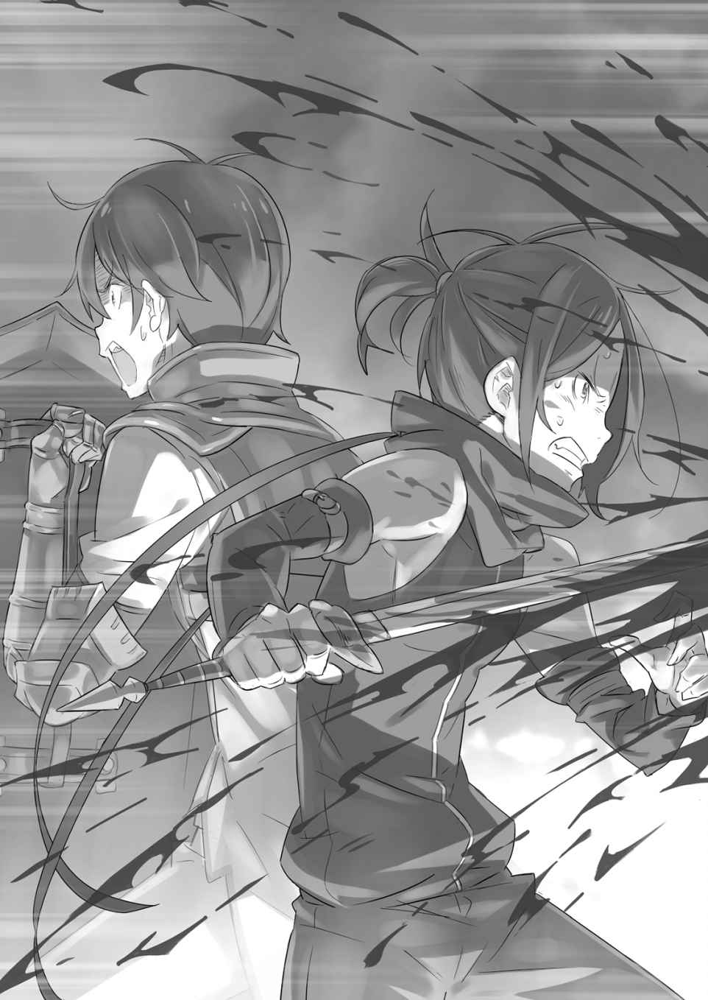
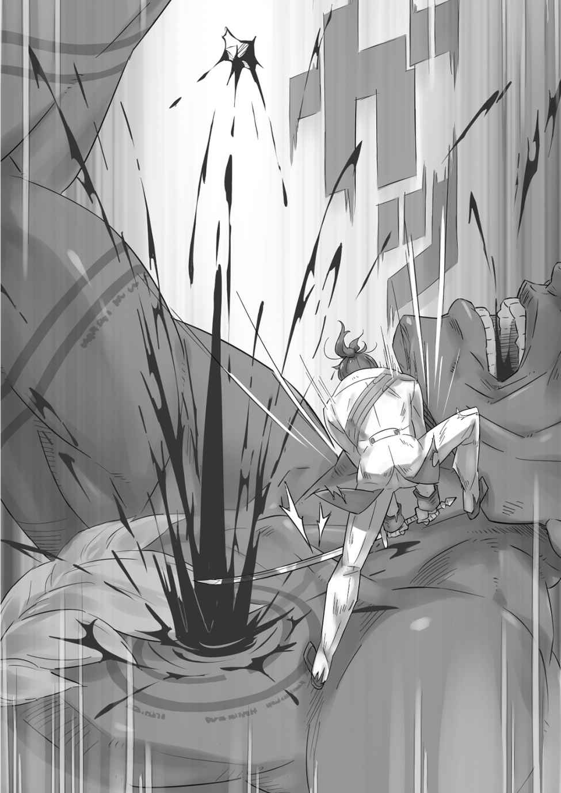
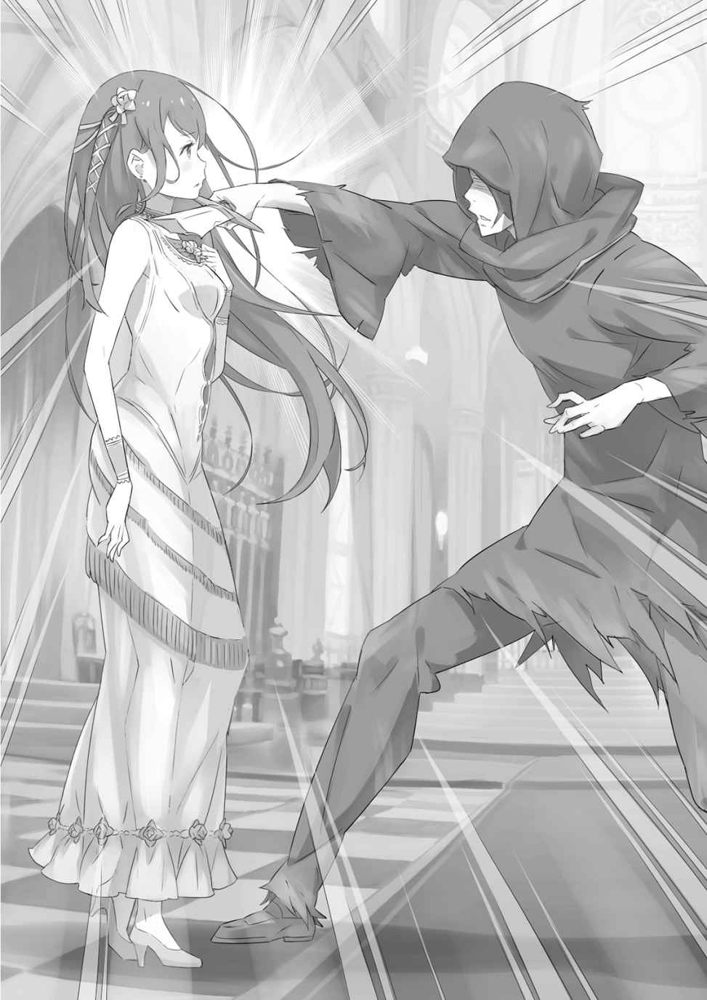

| Ｒｅ：ゼロから始める異世界生活 Ex2 剣鬼恋歌<Ｒｅ：ゼロから始める異世界生活Ex> (MF文庫J) | |
| 0 ofＲｅ：ゼロから始める異世界生活 | |
| 長月 達平 | |
| (2015) | |
B019MDTORK EBOK
Re:ゼロから始める異世界生活 Ex2
剣鬼恋歌
長月達平

本作品の全部または一部を無断で複製、転載、配信、送信したり、ホームページ上に転載することを禁止します。また、本作品の内容を無断で改変、改ざん等を行うことも禁止します。
本作品購入時にご承諾いただいた規約により、有償・無償にかかわらず本作品を第三者に譲渡することはできません。
本作品を示すサムネイルなどのイメージ画像は、再ダウンロード時に予告なく変更される場合があります。
本作品は縦書きでレイアウトされています。
また、ご覧になるリーディングシステムにより、表示の差が認められることがあります。
『剣鬼恋歌──一幕』
１
──むせ返るような血臭が戦場に立ち込めていた。
数時間前まで開けた盆地だった戦場は、今ではあちこちで火の手が上がり、焼けた木々の弾ける音と怒号が飛び交っている。
空気には木と肉が焼ける臭いと、足下を浸すほどの血溜まりの臭いが入り混じり、人間の嗅覚を狂わせる。夕焼けと、炎と、足下と、世界は一面真紅に染め上げられていた。
「う、く......っ」
その真っ赤な世界の中で、震える足を引きずる青年がその場に膝を突く。血溜まりに膝が浸かるが、今さらそんなものは気にはならない。
青年の体はとっくの昔に、おびただしい量の血に汚されていたのだから。
──酷い、本当に酷い有様だった。
青年も、自ら望んで剣を振るう道を選んだ身だ。いずれは戦場で勇名を馳せ、一兵卒の身分から華々しい栄達を迎えたいと夢想した夜は何度もある。
甘かった。考えも、夢も、脇も全てが。
血も、傷も、痛みも、恨みも、鉄火も死体も、全ては戦場の習わしだ。
初陣が、王国で何年も続く内戦の中でも前例が乏しいほどの激戦であったこと。
今回の戦場の指揮官がどこぞの若い貴族で、箔を付けようと調子づいたところを敵軍に突かれて敗走し、戦線が総崩れになったこと。
敵味方が一瞬で入り乱れて混乱し、そこを魔法に吹き飛ばされて気を失ったこと。
いくつもの不幸な偶然が重なり合い、青年──グリム・ファウゼンは戦場で一人きりになり、濃密に漂う『死』の気配の中で足を引きずっていた。
「────」
意識すれば体が重くなり、足の傷はますます存在を主張してグリムを苦しめる。
──頭上から押し寄せた爆炎が、目の前の地面ごとグリムを吹き飛ばしたのだ。
火傷と足の傷だけで済んだ自分が幸運だったのは、自分以外の小隊員が消し炭になったことからわかっている。傍らにいた小隊長は、小隊唯一の正騎士でもあった。
戦いが始まる前、励まされたことは記憶に新しい。尊敬の念を抱いたのも事実だ。
そんな人物の命すらも、戦火は呆気ないほど容易く焼き尽くしていく。
「ぐ、ぅぅぅ」
歯を食い縛り、目に焼き付いた騎士の最期を忘れようとする。だが、決定的な場面は瞼の裏で何度も繰り返され、グリムの神経を確実に削り取る。蹲るグリムの手には、まだ一度もまともに振るわれていない剣があった。鋼の剣は投げ出してしまいたいほど重い。それでも戦場で剣を手放すなど考えられない。自分が戦えないとわかっていても、だ。
剣を手放すことは、命を投げ出すことに等しい。死ぬのは、いつだって怖かった。
「ひ──っ」
近くで野太い悲鳴が上がり、喉を引きつらせてグリムはその場から逃げ出す。
聞こえた悲鳴が敵のものか味方のものか、それを確かめる気力さえグリムにはない。
「はっ、はぁっ」
出くわすものは今や全てが敵に見えた。人だけではない。炎も、血溜まりも、風の音すらも、今のグリムには自分の命を狙う害意に思えてならない。
痛む足を引きずり、噴煙に飛び込む。見通しは最悪だが、それがかえってグリムの混乱を抑える役目を担ってくれる。その消極的な判断が事実、噴煙の外に目を凝らす敵兵から青年の姿を隠し、わずかながらに生存時間を稼ぐことを成功させていた。
だが、その幸運も長続きはしない。
「見つけたゾ、人間！」
「わ！ わあ！ わあああ！」
噴煙を抜けた直後、グリムの目の前に鉈のような刃を担ぐ敵が姿を現した。
分厚い筋肉と見上げるほどの巨躯、岩のような質感の紫色の肌をした亜人だ。
亜人は負傷したグリムを見て、その凶悪な面貌に嘲笑を浮かべる。容易く狩れる獲物を見つけたと、嗜虐的な色に男の双眸が揺らめくのをグリムは見た。
何かの間違いで最初の死を乗り越えた。だが、幸運は何度も続かない。これならば自分の命など、始まった戦いのどこで終わっていても同じだったではないか。
ならば何故、少しの時間だけでも長らえさせたというのか。
「──終わりダ！」
運命を呪い、膝が落ちるグリムの脳天に鉈が振り下ろされる。
すでに何人の命を奪っていたのか、鉈はこびり付いた血肉でどす黒く染まっており、きっと楽には死ねないだろうとひどくぼんやりとした感慨がグリムの脳裏を掠めた。
こんな間抜けな思いが、最期の瞬間なのか。
──そのときだ。
「づぁぁぁ！」
裂帛の気合いが突き抜け、目の前で鋼同士が打ち合う火花が上がる。
鉈を振り上げ、かろうじて一撃を防いだ亜人が呻き声を漏らしながら下がり、グリムと亜人との間に人影がゆらりと舞い降りた。
黒に近い、茶褐色の髪を揺らす影だ。細い革鎧姿に大量の鮮血を浴び、手にした拵えの立派な剣が炎を照り返している。凄絶な雰囲気の中、その剣の印象だけが不可解に浮かび上がり、やけにグリムの目に強く焼き付いていった。
しかしその感傷は、続く一瞬の交錯によって即座に打ち砕かれる。
「しぃっ！」
鋼が弧を描き、銀閃が戦火の中で一段と強く輝く。
鋭い呼気と共にひた走る刃、それはある種、場違いな美しささえ孕んでいて、
「あ？」
呆気に取られた声はグリムのものだったのか、亜人のものだったのか。
銀光一閃──鮮やかな斬撃が亜人の首を刎ね、血を噴く巨躯が地面に倒れ伏していた。
「────」
骸となった亜人を見下ろし、影は鋭く剣を振って血糊を払う。どれほどの切れ味だったのか、剣には今しがた斬った亜人の血がほとんど付着していなかった。
「ぁ、お......」
それを見届け、自分が命を拾ったことをようやく自覚し、グリムはとっさにその人物に声をかけなくてはと思った。礼、そう、礼を言わなくてはならない。
亜人は敵だ。その敵を斬ったのなら、斬った相手は味方だ。命を救われた、恩人だ。
「な、なぁ、君......」
震えるグリムの呼びかけに、胡乱げな目つきで人影が振り返った。
その顔を真正面から見て、グリムは想像以上に相手が若いことに驚く。背丈がさほど高くないのは、おそらくまだ成長期の途中だからだ。今年十八になるグリムより、さらに二つか三つは若い。まだ十五歳ほどだろうか。少年と、そう呼ぶべきだろう。
だが、さらなる呼びかけをグリムは躊躇った。恐怖が持続し、喉が引きつっていたわけではない。震えは止まっている。他でもない、少年の目を見たからだ。
「────」
空虚な目だった。ただ、それは少年の中に何もないという意味ではない。
少年のグリムを見る目に、何の感情もこもっていないという意味で空虚なのだ。
そのことに気付いて、グリムは少年に感謝も何も伝えられなくなった。少年は黙り込むグリムをしばし見ていたが、やがて元から薄かった興味を逸した顔で歩き出す。
「ま......っ」
何も言えなかったグリムだが、何もないここへ取り残されることだけは拒んだ。
後ろを見ずに歩く少年を必死に追いかけ、見捨てられることだけは拒絶する。ただひたすらに、生き残ることだけが今のグリムの願いだった。
血溜まりと噴煙を抜け、少年の足が止まるまで必死に追い縋る。
やがて、噴煙の開けた場所で、むせ返るような血臭とともにグリムは見た。
「これ、は......」
それはうず高く積まれた、多数の亜人の屍だった。
全てが斬撃を浴びて果てたものであり、その表情は苦痛や恐怖、怒りに歪んだものばかりだ。それらがいったい、誰の手によるものか気付いてグリムは震えた。
「──なんだ。案外、戦いなんてこんなものか」
空を見上げ、少年がぽつりとそう呟いたのが聞こえた。
つられてグリムも空を見上げて、「ああ」と掠れた声で弱々しく呟く。
──空に浮かぶ赤と青の円を描く輝きは、王国軍全体へ勝利を伝える報せだ。
「王国軍が、勝った......」
あまりにも実感のない勝利宣言を目の当たりにし、グリムは力なくこぼした。
小隊は壊滅し、何もできないまま戦場を転げ回り、死にそびれて命を拾う──そんな無様なグリムの有様で、何に勝利したといえるのか。
勝利したと声高に言えるのはきっと、この少年のように──。
「大したことなかったな」
そんなグリムの感慨すら気にも留めず、少年は不満げに首をひねっているのだった。
２
ヴィルヘルム・トリアスの名をグリムが知ったのは、彼にとって過酷なだけで実りのない初陣を終えた数日後、戦いの論功が行われた日のことだった。
「あの敵の隊長格二人の首を取ったって兵士、ずいぶん若かったな」
論功式が終わり、解散後の王国軍兵舎で、同僚がグリムにそう切り出してきた。
くすんだ金髪を短く刈り込む男は、トルタ・ウィズリー。グリムが軍に入団して以来、親しく付き合いのある人物で、共に初陣を生き残った戦友でもあった。
恵まれた体格の持ち主だが、当人は弓の技術に適性があり、もっぱら後方支援の役目に徹すると豪語して憚らない。実際、初陣でも立派に役目を果たしたとのことだ。
「本当かよ。論功なんて、俺ら下っ端は端っこすぎて全然見えやしねえじゃねえか」
「当たり前だっての。俺は弓の名手よ？ 目が良くなきゃ射手は務まらんでしょーが。その俺の目が見たんだから間違いない。若いっつか、ガキだった」
同僚に囃し立てられ、トルタが自分の目を誇示するように眉間を叩く。しかし、彼の言葉にたむろする面々は、逆に小馬鹿にするような顔を見合わせて笑った。
その反応も当然だろう。トルタの年齢は十九で、十八のグリムも含めて兵士の中では最年少の枠に収まる。そのトルタより若いとなれば、十五、六歳──内戦で国力が疲弊している現状、兵士になることは可能だが、軍功が挙げられる年齢とは考え難い。
ましてやその戦果が、敵軍の隊長格の首となればなおさらだ。
「ったく、誰も信じないでやんの」
「なあ、トルタ。お前はその若い兵士、ちゃんと見たんだよな？」
「そうだって言ってんだろ。グリムまで疑うのかよ。俺、傷付くぞー。バッチリこの目で見た！ 悔しいけど、若かろうがすげえ奴はすげえってこったな」
「いや、信じてるよ......」
周りの反応に拗ねた顔のトルタに、グリムは目を伏せて静かに呟いた。
俯くグリムの脳裏を過るのは、数日前の戦場で見た最後の光景──山と積まれた亜人の斬殺死体と、それを生み出しただろう少年剣士の姿だ。
どこかタガが外れたような雰囲気は、確かに年齢など一切関与しない領域にあった。
あの光景を思い出すと、今でも身震いするのをグリムは堪えられない。
戦場に思い描いた華々しい活躍など、初陣の夜に炎の中にくべられて消えた。
ただ、夢想を燃やした炎の照り返しを浴びた、あの少年の姿にこうも思うのだ。
──もし本当に戦火の中で英雄が生まれるのなら、あるいはあの少年こそが。
「全体、気を付けぃ！」
「──っ！」
乱暴に更衣室の扉が開けられ、その向こう側から野太い声が命令を飛ばしてくる。
兵士生活ですっかり染みついた習慣に従い、グリムは背筋を正して踵を踏み鳴らし、即座に扉の方へ向き直る。グリムだけではなく、室内の全員がそうだ。
その規律の取れた行動に満足げに頷くのは、綺麗に整えたヒゲに触れる男だ。
見慣れた顔は、王国軍の正騎士ラザックだ。年齢は三十前後、彫りの深い顔に緑の短髪をした、教導隊でも特に厳しいことで有名な人物である。グリムにとって見慣れた顔なのは、まさに王国軍での最初の数週間、彼の教練に厳しくしごかれていたからだ。
「平時にあっても気を抜かず、いい錬度だ。その心掛け、決して忘れるな」
「はっ、ありがとうございます！」
ラザックの訓示に小隊長が声を張り上げ、グリムやトルタも続いて唱和する。
ある種、お約束のやり取りだ。初陣前と初陣後で、教導隊の騎士への印象はすっかり変わる。以前は吐くほどしごかれたことを恨んだものだが、初陣を生き残れた今では感謝しかない。あの厳しさが何のためにあったのか、この場の全員が痛感していた。
「よろしい。とはいえ、通常業務の合間に騎士の面など見たくないだろう、すまんな。早急に片付けなくてはならない用件ができたのだ」
「なんでしょうか。我が隊も再編制されたばかりで、ご期待に沿えるか不安ですが」
「そう構えるな。再編制の顔合わせが済んだばかりで悪いが、ここにもう一人加えてもらいたい。諸々の手続きは済んでいるから引き取ってもらうだけでいいぞ」
「それは構いませんが、優秀な兵士ですか？ 足手まといは勘弁願いたいですね」
「安心しろ。少しばかり年若いが腕は立つ。前回の戦いが初陣だったにも拘らず、敵の隊長格の首級を挙げて論功式でも名を呼ばれたほどだ」
ラザックの答えに、グリムだけでなく周りの兵士も一斉に息を呑んだ。
今まさに、話題に挙がったばかりの人物像と一致する。その雰囲気の変化を敏感に察して、ラザックは「細かい説明はいらんようだ」と頷くと、
「入れ。ここがお前の新しく所属する隊になる」
ラザックが声をかけると、更衣室の扉を開けて一人の人物が顔を見せる。
茶褐色の髪をした、鋭い目つきの少年だ。兵士に支給される制服がどこか不格好だが、佇まいは新兵などという可愛げとは一切無縁。見間違えるはずもなく、あの少年だ。
「ヴィルヘルム・トリアスだ。歳は十五で、剣は我流。だが、なかなか見込みがある。お前たちの方でよくしてやってくれ」
背を正し、無言で兵士たちの視線を浴びる少年──ヴィルヘルム。
少年を紹介し、ラザックは緊張感の張り詰める更衣室を見渡すと、満足げに頷いた。
隊員の弛んだ覚悟を引き締め、意識を継ぎ直した。そんな狙いがあったのだろう。
初陣を乗り越えても新兵は新兵。正騎士から見ればまだまだ雛鳥のようなものだ。
ただ、この日の出会いはラザックの狙いをはるかに上回る影響を王国へもたらす。
そのことにはまだ、当事者である二人は気付いてすらいなかった。
３
親竜王国ルグニカの内戦、通称『亜人戦争』の始まりは、もう二年も前のことだ。
『魔女』の存在を発端に、四百年以上の長きに亘って残る亜人族への差別意識。それはルグニカも例外ではなく、人間族と亜人族との関係は冷え切っており、互いが深く関わり合いにならないことを暗黙の了解に均衡は保たれていた。
その危うい均衡が崩れたのは、亜人族の商団と国境警備隊との衝突が原因だった。
南のヴォラキア帝国との国境沿いを通った商団に対し、密輸のための越境の疑いがかかったという話だが、実態は定かではない。確かなのは、商団と警備隊の激突で商団が壊滅。各地の亜人族と親しい繋がりのあった商団が人間族の手にかかったことで、亜人族が武器を持って蜂起したことが泥沼の内戦の始まりということだ。
以来、二年に亘って不毛な内戦は続き、国民も兵士も疲弊する実状が続いている。
「まあ、その戦争があるおかげで兵士になれたんだ。戦い大好きーなんて言わねえが、食い扶持に困らずに済むのだけは助かってるよな」
一気飲みしたグラスをカウンターに叩きつけ、口に泡を付けたトルタが笑う。
ほろ酔いのトルタの横で、グリムはちびちびと酒を呷りながら頷いた。
「まぁ、それは僕もトルタと同感かな。内戦がなかったら、僕なんかが兵士になれたとはとても思えない。志願しても門前払いされてただろうからさ」
「内戦前はヴォラキアと小競り合いこそあっても、大概は平和そのものだったしな。時々、魔獣が悪さするぐらいで......俺もお前も、平民上がりが成り上がろうとしたらやっぱり戦だ。武名を馳せてこそ、男ってもんよ」
「武名を馳せてこそ、か......」
気楽にエールのお代わりを要求するトルタの横で、グリムはしみじみと呟いた。
どこか陰鬱なその横顔に、トルタがやれやれと首を振る。
「せっかく初陣を生き残ったってのに、ここんとこ浮かない面が続いてるぜ。いい加減、割り切っていい頃合いじゃねえの？ 死んだ連中に申し訳ないってか？」
「そんなじゃないよ。薄情かもしれないけど、初陣のことは消化したつもりでいる。今はただ、もう前みたいな夢を見れそうもないのが残念だなって、そう思ってるだけだ」
「夢ぇ？」
「さっきトルタが言った通りの夢さ。武名を馳せ、華々しい活躍をして英雄になる。僕もそんな都合のいい未来を想像したりしてたんだけど......」
グラスから手を放して、グリムは自分の手をそっと見下ろす。
小刻みに震える右手、その掌と手首には白い火傷の痕が残っていた。初陣の爪痕だ。それはグリムの心と体にはっきりと刻まれ、決して逃がしてはくれない。
「憧れだけじゃやっていけない。思い描いた未来は砕け散ったんだ」
「じゃ、兵士は辞めるのかよ。英雄になれないって諦めちまったんなら」
「残念ながら、現実を受け止めてもお腹は減るんだよ。むしろ、夢を見れなくなった分だけはっきりと腹の虫を感じる。だから兵士は辞められない。地道にやっていくさ」
グラスを握り込んで手の震えを隠し、グリムはトルタに笑いかける。その笑みを受け、目を丸くしていたトルタは乱暴に頭を掻いた。
「......ったく、だっせぇ。でも、らしい割り切りだと思うぜ。いいさ、そうしろよ。英雄になるのは俺に任せとけ。お前はその後ろで、英雄補佐だ」
「けど、トルタは射手じゃないか。剣を持って前にいるのは僕の方だよ」
「そこは素直に頷いとけよ、恥ずかしいだろが」
運ばれてきたお代わりのグラスを、トルタがグリムに見せつけるように掲げる。その意図を察してグリムもグラスを掲げると、二つの陶器が甲高い音を立ててぶつかった。
グリムは王都近郊の、フルールという村の出身だ。街道で王都と繋がる小さな村だが、宿場町としてはそこそこの知名度のある村だった。ただ、伝統を重んじる村の気質が肌に合わず、グリムは十五歳のときに故郷を離れ、王都に上京してきた。
その後、数年は商店や酒場の下働きとして日々を過ごしたが、ちょうど半年前、内戦の拡大に伴う志願兵の急募、そんな報せがグリムの耳にも舞い込んできた。
──志願の理由は愛国心ではなく、英雄願望。元々、退屈を嫌って村を飛び出したグリムにとって、王国軍への志願の理由はそんな程度のものだった。
そこでラザックの指導の下、厳しい教練を受けて初陣に臨み、今がある。
トルタも似たような経歴だと聞いている。商家の次男坊として生まれたトルタも、自由と未来を求めて軍に志願し、そこでグリムと出会ったのだ。
「しかし、現実を知ったお前と、それでも英雄を目指す俺。初陣は明暗分かれる経験になったわけだが......あの新入りはどうなのかね」
「──新入りって、ヴィルヘルムのことか」
ふと、トルタが持ちかけてきた話題は、彼の少年剣士のことだった。その話題に気付いた瞬間、グリムに芽生えた微かな逡巡はトルタに悟られたくなかった。
他でもないヴィルヘルムこそが、グリムに英雄を諦めさせた張本人なのだから。
「あの歳で馬鹿みたいに腕が立つってのはわかる。論功も嘘じゃねえだろうし、実際に練兵場じゃ正騎士でもなきゃ歯が立たないぐらいだからな」
「新兵が受ける教練もパスしたらしいよ。必要がないって、ラザック教官が認めるぐらいの逸材だ。正直、十五歳って聞いてゾッとするものがある」
本音だ。今をして完成していないあの少年が、未来に何者になるのか不安が過る。
英雄──剣であらゆる敵を斬り、王国を勝利に導けば遠からず少年はそう呼ばれる。
だが、味方未満の関係とはいえ、戦場でグリムを見たあの眼差しは忘れ難い。アレが果たして、『英雄』の座を与えられるのに相応しい姿といえるだろうか。
もっと別の、何かおぞましいモノになるのではないのか。その不安が消えない。
「そうだな。確かにゾッとする。十五だってのに、あの可愛げのなさじゃなぁ」
「......って、おい」
「だってそうだろ？ あいつ、いつ誘っても何回誘っても、飯にも酒にも付き合おうとしやがらねえ。暇さえあればひたっすらに剣を振ってやがんだ。それも朝から晩まで延々と飽きることなく。しまいにゃ病気になるぜ。むしろ、もうなってるね！」
「病気......言い得て妙かもしれないね」
トルタのあんまりな物言いに、しかしグリムは思わず同意してしまう。「だろ？」などと上機嫌のトルタには、グリムの深刻さは欠片も伝わっていない様子だ。
「ただ、どっちが正しいのかはわかったもんじゃないね。空き時間も訓練に費やしてるヴィルヘルムと、定時が過ぎれば酒場に繰り出してる僕たちとじゃさ」
「それを言うなって。それに、人生は楽しんだもん勝ちだ！ 初代剣聖レイドも、剣を振るばっかりじゃなく、酒も女も楽しんだって言うじゃねえか。英雄は誰より人生を楽しんでる！ なら、それに倣う俺たちも英雄の器ってもんよ！」
高らかに屁理屈をトルタが叫ぶと、周囲の酔客も「そうだそうだ！」と囃し立てる。盛り上がる店内の雰囲気に、トルタは椅子の上に器用に立ってグラスを掲げた。
「おお、友よ、戦友よ！ この酒場から、未来の英雄が生まれることに乾杯！」
「──乾杯！」
トルタの音頭に合わせて、男たちが一斉にグラスを打ち付け合って馬鹿笑い。
飛び散る酒と甲高い音の連鎖を聞きながら、グリムもトルタがしつこく押し付けてくるグラスにグラスを合わせ、笑みを浮かべながら雰囲気に呑まれる。
何故か、この日の酒は妙に回りが悪いと、そんな風に感じながら。
４
酒場でトルタと別れて、冷たい夜風を浴びながらグリムは宿舎へと向かっていた。
明日は非番で、今夜は飲み明かすというトルタには悪いが、グリムは酒を楽しむ気分とは言えず、火照った体を冷ましながら月明かりの下をふらふらと歩いている。
「今日は綺麗な三日月だ......まるで剣みたいだな」
すっかり兵士脳と言うべきか、夜空の月に美しさより鋭さを覚えるようでは雅に欠ける。とかく戦時中は、人間の心からゆとりというものが失われる。
以前のように酒が楽しめないのも、初陣を乗り越えてからのグリムの悩みだった。
「トルタは豪胆だよ。確かに英雄の器なのかもしれないな」
毎晩のように酒場に繰り出し、顔も知らない大勢と酒を酌み交わして回る悪友。
その素行を窘めながらも、羨ましく思う気持ちがあるのがグリムの本音だ。少なくともトルタは、戦場で初陣を思い出して棒立ちになるようなことはないに違いない。
──一方、自分はどうだろう。次の戦場で満足に立ち回れるのだろうか。
その不安は延々と、グリムの胸中を苛んでいる。目をつむれば炎の光景が、眠りに落ちれば消し炭になった仲間たちが、静寂の中には断末魔と慟哭が今も感じられる。
「なのに兵士を辞める覚悟もない。辞めたら何も残らない。僕はそれが怖いのかな」
止める家族を振り切り、故郷を捨てて王都に出てきた。変わらない日々に嫌気が差して兵士に志願し、死の恐怖を知ってまたその時間から逃げ出そうとしている。
変わっていない。弱いままだ。どこかに自分が認められる場所があるのではないかと、子どものような夢を抱いて、懸命になることも忘れて拗ねている。
それがきっと、今の自分の在り方なのだ。
「──？」
兵舎へと戻る途中、自己嫌悪に沈んでいたグリムの足が止まった。
原因は音だ。兵舎の裏手の方から、何か微かな物音と声が聞こえた気がしたのだ。
よもや王国軍の兵舎に物取りに入る馬鹿はいないだろうが、今は戦時中だ。亜人族が極秘の潜入任務──などとは考えすぎだと思うが、確認しないわけにもいかない。
グリムは携帯していた剣の柄に触れて、足音を殺しながら兵舎の裏に回る。そっと建物の陰から顔を出し、今も途絶えずに聞こえる音の正体を確かめようとした。
そして、グリムは夜の兵舎裏で、一心不乱に剣を振り続ける少年の姿を見つける。
「......ヴィルヘルム？」
土を踏み、風を切る剣が銀閃となって踊る。月光の中、驚くほど澄み切った剣舞を演じる少年が、グリムの一声に気付いて振り返る。鋭い目に射抜かれ、息が詰まった。
「あ......」
「なんだ、グリムか。邪魔するなよ」
つまらなそうな少年の物言いに、グリムは一拍置き、おずおずと言葉を切り出す。
「僕の......名前を知ってるのか？」
「同じ小隊なんだから当たり前だろ。あんただって俺の名前を知ってるじゃないか。それとも、名前も覚えられない馬鹿だとでも思ってるのか？」
「そ、そうじゃない......けど、君が他人に興味があるとは思ってなくて」
「興味のあるなしじゃなく、必要なら覚える。同じ隊の人間の名前ぐらい、覚えてない方がよっぽど後々に面倒が増えるだろ。くだらない話をさせるなよ」
正論なのだが、ヴィルヘルムに正論を言われたことにグリムは呆然としてしまう。
こうしてヴィルヘルムとまともに会話することすら、グリムにとって初めてのことだ。普段は世間話にも乗ってこないし、必要最低限の伝達事項を交わすぐらいだった。
正直、同じ人間とは思えないほど、グリムは彼に人間性を感じていなかった。
「君にも、そんな人間みたいな考え方ができるんだね」
「ああ？」
「うわ、ごめん！ 違うんだ、そうじゃなくて......いや、違わないかもしれない」
言い直そうとしても、碌な言葉が出てこない。
目を伏せるグリムを胡乱げに見て、ヴィルヘルムはすぐに興味をなくした顔になると、下ろした剣を振り上げて再び剣舞へと舞い戻った。
「訓練が終わってからも、ずっとそうして剣を振ってたのかい？」
「そうだよ。あと、話しかけんな。気が散る」
「僕らは訓練が終わって、酒場で飲んでいたんだ。トルタは今も飲んでると思う」
「そうかよ。酒臭いと思った。あと、話しかけんな」
すげない返事をしながら、ヴィルヘルムは剣に没頭するように速度を上げる。その目では追えないほどの剣舞に、グリムは兵舎の壁に寄りかかりながら呆然とさせられる。
「どうしてそんなに剣にのめり込める？ 他にも楽しみはあるだろ？」
「戦時中じゃなけりゃそうかもな。けど、今は戦時中だ。酒を飲んだり、女を抱いたりするより、剣を振ってる方が生き残る可能性は上がるだろ」
「じゃあ、生き残りたいから自分を鍛えてるのか？」
「違う。今のは俺が、あんたらを不思議に思ってることだよ。あんたたちこそ、どうして剣を振らずに酒や女に時間を使うんだ？ 俺の言ってること、間違ってるかよ」
恐ろしいことに、ヴィルヘルムの剣からは風を切る音が聞こえない。あるいは大気すらも、自身が斬られたことに気付いていないのかと思わせるほど剣が冴えているのだ。
短い息遣いと、地面を靴裏が削る音。剣舞を飾る効果音は、ただそればかりだ。
「間違って、いないと思う。でも、誰もが君のように剣才があるわけじゃない。剣に全てを預けるなんて、心がとても耐え切れないんだ。酒や異性に、縋りたくもなる」
「いつだって言い訳ばっかり立派だな、あんたらは」
グリムの負け惜しみのような言葉に、ヴィルヘルムが苛烈な言葉を叩きつける。
何故、こんな押し問答をしているのかグリムにはわからない。ただずっと、自分はヴィルヘルムに聞きたかったのかもしれない。
初陣で屍の山を築き、あれほどの惨状を当然のように見ていた、剣の申し子に。
「周りを置き去りにするような生き方ばかりしていたら、君は戦場で一人になってしまうよ。たった一人きりで、何ができる？」
「剣を一振りすれば一人殺せる。二振りすれば二人。それを繰り返すだけだ。俺にはあんたが言葉を飾って、自分を守りたがってるようにしか思えねえよ」
「────」
「それに、その目で思い出した。──グリム、この間の戦場で俺と会ってるだろ」
剣舞を中断して、ヴィルヘルムが立ち尽くすグリムを見ていた。
その眼光にグリムの喉が凍り付く。──思い出された、そのことに。
「一人になるってのもあんたの経験談か。だが、知ってるだろ？ あの戦場で俺も一人だった。それでも論功に挙がるほど敵を斬った。それが全てだろ、馬鹿馬鹿しい」
「ぼ、くは......」
「諭すふりして逃げたい自分を隠してるんじゃねえよ。心細くて仲間が欲しいなら見込み違いだ。弱虫は弱虫で固まれ。それとも、違うって証明してみせるか？」
声を震わすグリムに、ヴィルヘルムが頬を歪めて剣の切っ先を向けてくる。
抜け、とそう言われているのはわかった。腰にある剣を抜いて、自分に気概を見せつけてみろとヴィルヘルムは言っている。だが、
「────」
「剣も抜けねえのか、臆病者」
俯くグリムは剣を抜くどころか、柄に触れることも立ち上がることもできなかった。
失望した顔でヴィルヘルムが言い捨て、そのまま背を向けると再び剣舞に臨む。
ヴィルヘルムの意識が自分から外れたのを悟り、グリムは長々と息を吐くと、震える足を叱咤して兵舎裏から逃げるように立ち去った。
兵舎に入り、自室へと戻って、狭いベッドに頭から飛び込む。毛布を頭から被り、ガタガタと寒さを感じたように震えながら、奥歯を必死に噛みしめた。
悔しいのか、悲しいのか、何もわからなかった。
ただ、弱い自分が情けない。あの少年の強さが、今は無性に羨ましかった。
５
そんな夜があっても、翌日になれば表面上は平気な顔をして職務に復帰できてしまう。
あるいはそれも、グリムの悪い特技だったのかもしれない。
小隊の通常業務や訓練で、これまでと同様にヴィルヘルムとも顔を合わせる。それでもグリムは彼への対応を変えなかったし、ヴィルヘルムもあの夜のことなどすっかり忘れた態度で、いつものように隊の和を乱すような個人主義を貫き続けた。
故に小隊は、見える爆弾と見えない爆弾の二つを抱え込むことになる。
そして、その爆弾が不発弾ではなかったことは、グリムたちの小隊を含む王国軍が亜人族と大規模な激突、再び戦火が燃え上がった際に明らかになる。
──決戦は、日没直後に火蓋が切られた。
最初、平原で戦闘が始まったとき、戦況は王国軍が優位に立っていた。数の利を活かして、動きの悪い亜人の連合軍を一気に押し返し、戦線を大きく後退させた形だ。
突撃部隊に組み込まれていたグリムたちも、一気呵成に敵を追い詰める味方の勢いに乗って、亜人たちを次から次へと撃破していった。
「前回の乱戦はなんだったんだよ。こりゃ楽勝だな！」
敵兵の一人を弓で射たトルタが、次の矢をつがえながら興奮気味に声を上げる。その声を背後に聞くグリムは、剣と盾を正面に構えながら味方の突撃に紛れていた。
士気は高い。後退する敵の抵抗は弱々しく、王国軍の優位は明々白々だ。そんな圧倒的な戦場にありながら、グリムの手足は思うように動いてくれていない。
「くそ、僕はこれじゃ何のために......！」
口惜しげに呟いて、グリムは自分の心の弱さを呪う。
味方の奮戦に救われる形で、グリムはいまだ敵兵の一人も倒していない。必死に敵の攻撃を盾で防ぐばかりだ。味方に貢献できていないわけではないが、慰めにはならない。
何故なら──、
「な、なんだ、あいつ!?」
驚愕の声が自軍から上がり、その光景に誰もが目を釘付けにされる。
戦場を駆け抜け、風を思わせる素早さと鋭さが次々と亜人族の首を撫で斬っていく。血飛沫と手足が吹き飛び、鋼が肉を断つ音と断末魔がひっきりなしに上がっていた。
「るるるるるぁぁぁ！」
それを為すのは、放たれた矢のように疾駆する黒い少年の斬撃だ。
低い姿勢で敵陣へ飛び込み、吹き荒ぶ刃が亜人を斬り捨て、突き刺し、肉塊へと変えていく。その勢いたるや、敵味方関係なしに呆気に取られるほど。
「ヴィルヘルム......」
獅子奮迅の働きを見せるヴィルヘルムに、小隊長は続けとは叫ばなかった。勢いに乗るのであればそう指示するべき場面だ。だが、小隊長も他の皆も全員が思っていた。
──今のヴィルヘルムに近付けば、味方だろうと構わず斬られるのではないかと。
「隊長！ このあたりは制圧できましたぜ！ 進みましょうや！」
ヴィルヘルムの戦いぶりに目を奪われていた場に、トルタの威勢のいい声がかかる。
その声に小隊長が我に返り、ヴィルヘルムが切り開いた突破口に向かって全員が進軍するように指示が飛んだ。
「ヴィルヘルムの奴が張り切ってやがるおかげだが、これなら俺たちもちょっとした手柄が挙げられるんじゃねえか？」
優勢な流れに、トルタが獰猛に笑いながら声をかけてくる。しかし、グリムの心は味方の優勢に沸き立たない。首の裏が、やけにゾワゾワと寒気を感じていた。
「なんだか、変な感じがしないか？」
「はぁ？ 変な感じってなんだよ。いい調子じゃねえか、俺たちみんな」
「前回、あれだけ大損害を被ったのに、どうして今回はこんな急に......」
「その反省を活かしたってことじゃねえの？ もしくは、前回の指揮官やってた将校が無能だったんだろ。それが死んで交代したからじゃないか？」
上官侮辱罪そのものの発言をしながら、トルタが次々に矢をつがえては敵を射る。それを横目に盾を構え、それでもグリムは不安を振り払うことができずにいた。
直後、目の前で歓声が上がり、一際巨体の亜人がヴィルヘルムに切り伏せられる。おそらくまたも隊長格、論功に挙がるのは確実視される戦果だ。
「やるじゃねえか、ヴィルヘルム！」
皆が遠巻きにする中、トルタが普段の調子でヴィルヘルムを称賛する。しかし、全身に返り血を浴びるヴィルヘルムはその賛辞に取り合わず、ふと上を向いて、
「......臭ぇな」
「そりゃ、そんだけ血ぃ浴びてりゃ臭くもなるだろうよ」
「違う、そうじゃない。小隊長、嫌な予感がする。奴ら、何か企んで......」
振り返り、ヴィルヘルムが何かを進言しようとした瞬間、衝撃が地を揺るがした。
視界が縦にぶれるような感覚に、グリムはバランスを崩して横転する。周りの兵たちも何人も地面に倒れており、とっさに堪えたのはヴィルヘルムを含む数名だけだ。
「い、今のは何が......」
起きたのか、と言葉を続ける必要はなかった。
衝撃に遅れて、ふと熱を孕んだ風がグリムたちの方へ押し寄せる。土埃を伴う熱風に目と口を汚されて、咳き込みながら立ち上がると、怒号が一斉に飛び交い始めた。
「下がれ下がれ下がれ！ 罠だ！ 亜人族共の罠だ！ 奴ら、地面に魔法陣を敷いて待ち伏せしていた！ 包囲殲滅されるぞ！」
「バルガだ！ バルガ・クロムウェルがいた！ 奴の首を......いや、撤退だ!!」
「火がぁ！ 火がくる！ オレ、オレの足がぁ！ 待って、待ってぇぇ！」
前方、右から左から聞こえてくる、突然の劣勢を告げる叫び声。
立ち込める土煙で視界が悪くなり、パニックに陥った周囲の兵士たちが押し合いながら一斉に後退し始め、グリムも危うく突き飛ばされそうになる。
「グリム！」
トルタが倒れかける腕を掴んでくれて、かろうじて転ばずに済んだ。だが、混沌極まる状況は刻一刻と深刻化していく。そこに先ほどまでの戦勝ムードは微塵もない。
「わ、罠......包囲って、どうして急に......!?」
「周りが見えねえ！ チクショウ！ 小隊長！ どうするんですか！」
錯綜する怒号の中から危険な単語を拾い、グリムは増してくる怖気に奥歯を震わす。トルタも険しい表情をしながら、小隊長に次の行動の指示を求めていた。
そのトルタの叫びに、目を白黒させていた小隊長が唇を震わせ、
「て、撤退だ！ 我々も下がり、他の隊と合流を......っ」
「違う！ そうじゃない！ 前進だ！」
「──ッ!?」
他の隊と同様に、撤退しようとした小隊長にヴィルヘルムが歯を剥いて噛みついた。
彼は血みどろの剣を振り上げ、これまで進軍していた方向に切っ先を向ける。
「下がれば敵の思う壺だ！ どうしてそれがわからない！ 活路は前にしかない！」
「なんでそんなことが言える！ 敵が斬りたいだけなら黙っていろ！」
「敵は魔法陣を敷いて罠を張ってたんだぞ！ 劣勢を演じてわざと下がり、こっちの軍を引き込んで一気に被害を与えるためにだ！ 罠にかかって怖気づいた連中が、泡を食って逃げ出すのも織り込み済みに決まってる！」
想像以上に考えられた反論に、小隊長はとっさに二の句を継げない。押し黙った小隊長に詰め寄り、ヴィルヘルムは血塗れの顔面に鬼気を宿してなお叫ぶ。
「前進だ！ 道は前にしかない！ 下がっても囲まれるだけだ！ 包囲が狭まって厚くなる前に、正面の囲みを突破して道を作る！ それしかない！」
「──っ！ だ、ダメだダメだ！ 撤退だ！ 前に進んでも味方はいない！ 敵陣で孤立すれば囲み殺されるのは同じことだ！」
鬼気迫るヴィルヘルムの声を、だが小隊長は歯を食いしばって撥ね除けた。
その答えにヴィルヘルムが唇を噛み切り、口の端から血を流しながら後ずさる。それから彼は手の中の剣を回し、小隊全員に背中を向けた。
「待て、ヴィルヘルム！ 勝手な行動は......」
「逃げたいならそうしろ。逃げて逃げて、逃げた先で死ね。俺は戦う。戦って戦って、戦った先で生き残る。──臆病者共め」
止める小隊長の声も聞かず、ヴィルヘルムは憎悪するような声で言い残した。
その憎悪の声に小隊の誰もが声を失ったが、グリムだけは周りと違う感慨を得た。
きっとそれは、グリムだけはヴィルヘルムのその怒りに触れたのが二度目だから──、
「ヴィルヘルム！」
名を呼ばれても止まらず、ヴィルヘルムの姿が正面へ一気に駆け出してしまう。
小隊長の命令に背き、敵陣に単独で突入──間違いなく、助からない選択だ。
そう気付いた瞬間、グリムは震える足を叱咤して走り出し、彼を追いかけていた。
「グリム！ お前まで何を......！」
「あいつを！ ヴィルヘルムを連れ戻します！ 死なれちゃ困る！ あいつはまだ、王国軍に必要な男のはずです！」
土を踏みつけ、重たく感じる体を持ち上げて前へ踏み出す。グリムを引き止めようと腕が伸びてくるが、それは掠めるだけでわずかに届かない。
「グリム！ 死ぬなよ！ この馬鹿野郎！」
「死ぬもんか！ 僕は臆病者なんだ！」
走るグリムの背中に、トルタの馬鹿に豪快な激励の声が届いた。
悪友の叫びに力を貰いながら、自分でもわけのわからない声を上げて、グリムは胸中で熱を放つ感情のままに、ヴィルヘルムの背中を追いかけて走った。
「────」
息を荒げ、土煙に目を凝らし、倒れる味方の死体を踏み越えて、すぐに後悔する。
いつだってそうだ。グリムは後悔し通しだ。走っても走らなくても、きっと選択したことを後悔し続けるに違いない。だが、今ばかりは後悔を置き去りにして走る。
盾を構えているが、いつの間にか剣は取り落としていた。おそらく、最初の衝撃で転んだときだ。構わない。剣なら、前を走る少年が自分の十倍は上手く使う。
鮮血が噴出し、断末魔が上がる。
見失いかけたヴィルヘルムを探すのは、轟音の飛び交う戦場の中ですらわかりやすい。
坂を駆け上り、地割れを飛び越え、敵か味方かもわからない死体を避けて、グリムはヴィルヘルムを追いかけた。やがて、うっすらと光るものを見つけて息を詰まらせる。
見れば、目の前の地面が淡く輝き、光る線が幾何学的な模様を描いていた。
「ひょっとして、これが魔法陣......？」
魔法に適性のないグリムにとって、マナの輝きは身近なものではない。
結晶灯などの魔石細工技術は王都でも一部にしか普及しておらず、ましてや個人で魔法を扱う才能は極々限られた天才だけの特権と聞く。
人間族は種族的に魔法の才で亜人族に後れを取り、その結果が今回の魔法陣を用いた罠による王国軍の劣勢──聞こえてきた情報の断片から、そう察することができた。
そして魔法陣の淡い輝きに、グリムはこれまでで最大級の怖気を首裏に感じる。
「う、く......なんだよ、この感覚......嫌だ嫌だ、消えろ消えろ......ッ！」
感じる怖気を振り払うように、グリムは自分の首の裏を掌で擦る。
初陣以来、怯え癖がついた自分の体は幾度もこうして恐怖を煽ろうとしてくる。それが嫌になり、グリムは目の前の魔法陣を乱暴に足で踏み躙った。
途端、目の前の光がゆっくりと薄れていき、やがてただの落書きに姿を変える。
「なんだ？ これで消えて......」
「おい、グリム」
後ろから呼ばれて、グリムは口から心臓を吐き出しそうになって振り返る。すると、そこに立っていたのはヴィルヘルムだ。先ほどよりもさらに被った血の色を濃くしたヴィルヘルムは、グリムを上から下まで眺めると口元を歪めた。
「お前、どうしてこんなところにいるんだ。隊は後ろに下がったはずだぞ」
「き、君が勝手な行動をするからそれを止めにきたんだよ！ さあ、戻ろう！ こんな場所で孤立したんじゃ、いくら君の腕が立つって言っても......」
「お節介なこったな。......でも、お前は生き残る力があるよ。臆病者なだけある」
引き止めようとするグリムに、ヴィルヘルムはいつかの夜と同じ嘲りを向けた。思わず黙り込むと、グリムの足下を覗き込んだヴィルヘルムが眉を寄せる。
「グリム、その魔法陣はどうした？」
「......さっき光ってて、嫌な予感がしたから足で消したんだ。これが罠だったのか？」
「ああ、そうだ。罠だった、だ。発動準備中のを、お前が消した。ってことは」
ヴィルヘルムの目つきが鋭くなり、直後にグリムは首の裏に怖気を感じて目を見開く。
瞬間、土埃を破って右手側から、赤い光弾が一直線に二人目掛けて飛んできた。
「頭下げてろ！」
突き飛ばされて、グリムはその場に尻餅をつく。眼前ではヴィルヘルムが刃を振るい、直撃する光弾を弾き、猛然と光の発射された方向へ突っ込んでいくところだ。
縦に振られる剣が土埃を斬り払い、その向こう側から緑の肌の亜人が現れる。すっぽりと頭までローブで覆い、長い舌を出した爬虫類めいた外見の亜人だ。
小柄な亜人が後ろへ跳ね、指が三本だけの両手から再び光弾でヴィルヘルムを狙う。だが、死角からの奇襲で当たらない攻撃が、正面から放たれて通用するはずがない。
身を翻し、掠めるような最低限の身躱しで光弾を避け、ヴィルヘルムは一息に亜人へと接近、そのまま胴体を撫で斬り、返す刃で首を刎ねる。
「ヴィルヘルム！ 今の亜人は......！」
「こいつが多分、ここの魔法陣の起動役だ。こいつを殺して魔法陣を潰した以上、ここの罠は発動しないはずだ。ここを目印にして、向こう側まで一気に突っ切る！」
亜人の死体を蹴りつけ、ヴィルヘルムが血糊を払いながらなおも前を見据える。小隊を残してきたのとは正反対の方角だ。グリムはその肩を後ろから掴んだ。
「待ってくれ！ この罠が潰れたなら、みんなを呼び戻してもいいはずだ！」
「馬鹿言え！ 戻れば他の罠の起動に巻き込まれる。むしろ、王国軍がこぞって撤退した中央の方に一網打尽にするための罠が張り巡らされてるはずだ。戻っても誰も救えない。俺とお前で、死体が余計に二つ増えるだけだ。冗談じゃない！」
掴んだ腕を振りほどかれて、後ずさるグリムの喉に剣先が突き付けられた。そのまま見紛うことなき剣気をぶつけられて、全身が怖気に支配される。
「死にたいなら一人で戻れ！ 死にたくないなら、死なないように足掻け！」
それだけ言い残して、ヴィルヘルムは迷いない足取りで一気に走り出した。
またしても遠ざかる背中を前に、グリムは短い一瞬で決定的な選択を迫られる。
戻れば、小隊との合流は可能だろうか。だが、戻ってもヴィルヘルムの言う通り、亜人族の罠にかかるかもしれない。しかし、小隊の側には王国軍も多数戻っており、数の優位は揺るがない。ヴィルヘルムの考えが間違っていて、敵は前方に待ち構えている可能性だってある。みすみす孤立し、生存率が下がるだけではないのか。ヴィルヘルムだって、これだけ言って聞かないのなら、仮に命を落としても自業自得ではないのか。
ならば選択は、生きるか死ぬか。生きたいのか、死にたくないのか。
グリムは──、
「──ああああああ!!」
わけのわからない叫び声を上げて、グリムは前に向かって走り出していた。
トルタや、仲間たちのいる後方ではなく、ヴィルヘルムの走った前方へ向かって。
決定的な理由はわからない。ただ、本能に従った結果だ。この瞬間、グリムの頭の中には仲間意識や使命感、王国への愛国心や忠誠心は一切残っていなかった。
ただ、戻ることを考えたときと、進むことを考えたとき。どちらの場合の方が、より怖気が多かったか、それだけを頼りにグリムは自分の道を選んだ。
光の消えた魔法陣を踏み越え、狂乱する絶叫を垂れ流しながら戦場を走る。目立って仕方がない愚挙だが、幸いにも戦場ではありふれた狂騒の一種に過ぎない。
やがて土埃の中を抜け、奇跡的に敵兵の一人とも遭遇せず、グリムは丘の上に出た。
「しぃぃぃぃっ──！」
裂帛の気合いが叫ばれて、目の前で頭から股下まで掻っ捌かれた亜人が二つになる。
血を払い、ヴィルヘルムは飛びかかる亜人を次から次へと斬り捨て、おびただしい量の血に塗れながら、引きつったような声を上げて死を積み上げていた。
その引きつった声と、血を浴びるヴィルヘルムの表情が笑っているように見えて、グリムは戦場で感じた最大級の悪寒と共に、ふっと思い浮かんだ言葉を口にする。
「鬼......」
鬼。そう、鬼だ。剣を振るう鬼がそこにいる。戦場で敵を斬り裂き、笑う鬼だ。
剣を楽しそうに振り、遊ぶように死を生み出す鬼。
──即ち、剣鬼。
「こい！ もっとこい！ もっともっともっと！ 斬って、俺を生きさせろ!!」
剣鬼が叫び、そのたびに銀閃が亜人族の命を刈り取る。
その惨状を前に、グリムはゆっくりと振り返って、丘の下の光景を見下ろした。
噴煙が覆い尽くす戦場に、淡い魔法陣の輝きだけが鮮やかに浮かび上がっている。両手の指と、両足の指を合わせても数え切れないほどの魔法陣が、戦場に人知を超えた力を注ぎ込み、愚かにも囲い込まれた王国軍を破壊の力で粉砕する。
熱風と、地響きと、遠く赤々と燃え上がる空に木霊していく断末魔の声──。
「......これが、僕の選択の結果？」
背後には剣鬼の生み出す屍山血河。
眼下には置き去りにした仲間たちの呪うような悲鳴と絶叫。
いつしかグリムは膝を突き、両手で顔を覆ってひたすらにすすり泣いていた。
「ご、めん......ごめん、ごめん、ごめん......っ」
戦闘が終わり、王国軍が敗戦の結果を受け入れ、友軍に回収されるまでの間、グリムの嗚咽まじりの謝罪と、剣鬼の剣舞と哄笑は延々と続いていた。
──後退した小隊とトルタ・ウィズリーは、帰ってこなかった。
６
カスツール平原での決戦は、王国軍が序盤は優勢に進めたが、亜人族の卑劣な罠にかかり前線が崩壊。後退したところ、魔法陣を用いた包囲攻撃を受け、全軍が大打撃を受けて壊走──長く続いた内戦においても、記録的な大敗を喫する。
未確認ではあるが、此度の決戦では亜人連合の大参謀とされるバルガ・クロムウェルの存在が報告されており、狡猾な彼の人物の策略による被害であったと目されている。
死傷者を多数出した決戦では、亡骸を回収することもできなかった兵士が多く、国王直々に彼ら英霊の忠誠心と愛国心を称賛する声明が発表された。
なお、この決戦において異例の戦果を挙げたことにより、王国軍と亜人連合の両陣営に一人の人物の名と、その異名が知れ渡ることになる。
剣鬼、ヴィルヘルム・トリアスと呼ばれる十五の少年の名と、その剣才だ。
長く続く王国内戦『亜人戦争』──その幕引きのための、最初の一歩。
それがようやく、歴史に刻まれることとなった戦いであった。
『剣鬼恋歌──二幕』
１
ヴィルヘルム・トリアスにとって、世界はひどくシンプルに出来上がっていた。
気に入るもの、気に入らないもの、その二つで世界の大部分は括ることができる。
そして今、目の前の状況は彼にとって、気に入らないものそのものであった。
「カスツール平原の戦いで、亜人の包囲網をいち早く突破。単独で亜人族の一隊と切り結び、これを殲滅。隊長格含め、挙げた首の数が八十八......はは！ 切りがいいな！」
「切りはむしろ悪いと思いますが。語呂がいいのは同意しますが」
「ならそういう意味だ。いちいち口を挟むな、陰険な奴め」
「それがお役目ですので」
姿勢を正しているヴィルヘルムの前で、二人の男がそんなやり取りを交わしている。
豪気・豪快を絵に描いたような長身の偉丈夫と、神経質そうな優男の二人組だ。どちらも騎士隊の制服を着込んでおり、正騎士の身分であると見て取れる。
今朝、治療院から退院して兵舎に戻り、日課に出向く途中で捕まったのが現状だ。
正騎士が自分に何の用なのかと、ヴィルヘルムはキナ臭さに警戒せずにはおれない。そんな上官への不信を隠さない少年に、男二人はますます興味深げな顔だ。
「戦場ではずいぶんと暴れ回ったそうだな。友軍が見つけるまで、敵陣の一角を分捕って大立ち回り......回収されたときには死体の山だったと聞いている」
「あまりの惨状と剣の冴えに、見た者はこう噂していますよ。剣鬼現る、とね」
「剣鬼！ 剣鬼か！ いいな！ ハッタリが利いていて嫌いではない！ その名が知れ渡るように今後も暴れろ。まだ、剣鬼というより剣小鬼といった風情だがな！」
優男の言葉に、偉丈夫が笑いながらヴィルヘルムの頭を乱暴に鷲掴みにする。体だけでなく掌まででかいため、ヴィルヘルムの頭が偉丈夫にすっぽり掴まれる形だ。
「さっきから人をじろじろと眺めた上に、何のつもりだ!?」
頭を掴む手を振り払い、ヴィルヘルムは軽く後ろへ飛びずさる。剣呑な視線で相手を突き刺すと、偉丈夫は振り払われた腕を振って口角を上げた。
「正騎士に向かっていい度胸だ。若いのはこのぐらい無鉄砲でなきゃいかん」
「若いのは若殿も一緒でしょうに。顔が老けているとはいえ、内側まで老けていると実年齢を見失っていずれ後悔しますよ」
「こいつに比べたら誰でも年寄りだ。記録じゃ十五歳......見ろ、ピボット！ お前の半分だぞ！ 歳は半分で斬り殺した数は倍の倍だ！ 情けないと思え！」
「私は頭脳労働担当ですよ。若殿ができない部分、全部が担当ですから」
唾を飛ばす偉丈夫に、取り出した白いハンカチで自分の顔を拭う優男。変わらずヴィルヘルムを置き去りにした会話に、今度こそ少年の愛想が尽きた。
「用がないなら放っておいてくれ。俺も暇じゃないんだ」
「暇じゃないだと？ 今は待機中のはずだろう。何の用事だ」
「剣を振る。一日サボれば取り返すのに三日かかる。一振りで殺せるところを、三回も振らなきゃいけなくなるなんて非効率にも程がある」
すげなく言い捨て、とっとと兵舎裏での鍛錬のために立ち去ろうとする。
だが、そのヴィルヘルムの返答に、背後で偉丈夫の笑い声が弾けた。
「聞いたか、ピボット！ あの戦場を終えて、ぶっ倒れて二日！ 昏倒してた野郎がベッドから出て、寝る間も惜しんで剣を振る！ 剣を振るだぞ！」
「ええ、聞きました。若殿も相当だと思いましたが、これは若殿を超える大馬鹿者」
「あんたら、二人揃って俺に叩きのめされたいのか？」
正騎士だろうとなんだろうと、これだけ馬鹿にされては黙っていられない。
剣を振れなかった数日の鬱憤も重なり、剣呑な態度でヴィルヘルムは言い放った。
「いいぞ、その言葉が聞きたかった。情けない正騎士の面汚し共が、ちょっと剣を使えるガキにいいようにされている、という話は騎士団にも届いていてな」
だが、睨みつけるヴィルヘルムの言葉に、偉丈夫はそう獰猛に笑った。彼の隣では優男がゆるゆると首を横に振り、片目を飾るモノクルが妖しげに輝く。
「若殿にも困ったものですが、貴方も悪いのですよ。その歳で相当のものを修めているとはいえ......調子に乗りすぎです」
──猛々しい戦意と、冴え冴えとした剣気。
先ほどまでと雰囲気を一変させる二人の騎士に、ヴィルヘルムは唇を舌で湿らせた。
「最初から、これが目的だったのかよ」
「悪く思うな。立場があると色々面倒なのだ。だが、練兵場では立場を笠に着て甚振ろうなどとは思っていないから安心しろ。このボルドー・ツェルゲフ、矛を交える場で恥となるような行いだけは決してせん」
「と、真っ直ぐな方ですのでご安心ください。ああ、申し遅れました。私はボルドー様のお目付け役をしております、ピボット・アーナンシーというものです。よしなに」
偉丈夫・ボルドーと、優男・ピボットが続けて名乗り、ヴィルヘルムは首を傾げる。
イマイチ狙いと考えの読めない二人だが、ひとまずの目的ははっきりした。
そしてそれは、ヴィルヘルムの今のやりたいことと外れていない。
「とっとと叩きのめして、俺は日課の鍛錬に戻らせてもらう」
「そうはいかん。お前はまた、ベッドの上に逆戻りかもしれんのだからな！」
練兵場へと向かって、石造りの通路を歩き出すヴィルヘルムにボルドーが並ぶ。
威勢よく火花を散らす二人の後ろに、嘆息するピボットがゆっくりと続いていった。
２
甲高い音を立てて鋼が打ち合い、軋る感触に火花が視界の隅で赤く弾ける。
連鎖する快音を奏で、ヴィルヘルムは上半身を地面に擦るほど超低空へ踏み込む。落ちてくる戦斧を真横に掠めて掻い潜り、柄を踏みつけて相手の次の動作を遮った。
──一瞬の停滞、直後に走る銀光が太い首へ切っ先を突き付けていた。
「──勝負ありだ」
「......こいつは、驚いたな」
勝利を宣告するヴィルヘルムに、敗北を告げられたボルドーが低い声で唸る。
汗に濡れた額と、武人らしい豪気な笑みが口元に刻まれており、ヴィルヘルムは熱を持った息を深々と吐いて剣を下ろした。
刃を潰した訓練用の剣だ。ヴィルヘルムの足下、土に突き刺さるボルドーの得物も、同じく刃を潰した長大な斧槍だった。どちらも思い切り殴れば命はない代物だが、得物を寸止めするぐらいの技量は互いにある。激戦を終え、どちらも傷は負っていない。
ただし、その報告には『目立った』という修飾をする必要があるだろうが。
「これで模擬戦、七勝三敗で俺の勝ち越しだ。口ほどにもないな、あんた」
「腕試しを持ちかけてこの結果では、負け惜しみも出てこんな。わっはっは！ 負けた負けた！ 久しぶりにしこたま負けた！ 気分がいいぐらいだ！」
「なんだそりゃ......」
挑発したつもりが笑い飛ばされ、ヴィルヘルムの方が顔をしかめる。ボルドーは地面に刺さった戦斧を抜いて肩に担ぐと、刈り込まれた濃い青髪を掻き毟り、
「お前の方こそ喜べ。この俺と戦って勝ち越したんだ。正騎士の中でも、近衛の上位に匹敵する技量と自負してるんだがな。どうやらこれまでお前に負けた連中も、単に腑抜けていたばかりが理由ではなかったというわけだ」
「その場合、若殿も腑抜けていたということになりますからね。とはいえ......なるほど、末恐ろしい。これでまだ十五、ですか」
練兵場の端で、二人の激突を観戦していたピボットがやってきてそう呟く。
聞き慣れた評価だが、その言葉の響きは聞き慣れた畏怖や驚嘆とは違って聞こえる。ともあれ、それらの雑感もヴィルヘルムにはどうでもいいことだ。
「生意気な小僧を躾けられなくて残念だったな。これで、次はあんたももっと上に泣きついて、違う刺客を送り込んでくるのか？」
「それもいいが、俺の図体で縋り付くとなると、あとは神龍ボルカニカぐらいしか候補がおらん。つまらん用事で呼び出したとなれば、俺の方が消し炭にされかねんな」
「そうなる前に本題に入るとしましょう。ヴィルヘルム・トリアス。我々が貴方に接触したのは、この腕試しと称した私刑が目的ではありません。もっとも、私刑としての側面は若殿の負け越しのせいで露と消えましたが」
「この従者、容赦がないな！ わははは！」
皮肉を理解しない主従に、ヴィルヘルムが不愉快げに眉を寄せた。
「やり合うのが目的じゃないってんなら......」
「ええ。これはただ、若殿の鬱憤晴らしに付き合ってもらった次第で。それはともかく本題に。──通達です、ヴィルヘルム・トリアス。貴方は今後、こちらにいらっしゃるボルドー・ツェルゲフ様が率いる、ツェルゲフ隊にて剣を振るっていただきます」
ピボットの発言に、ヴィルヘルムは目を細めながらボルドーを見やる。
たくましい胸を張り、戦斧を担ぐその姿はまさに剛腕の騎士──以前に所属していた小隊が壊滅した以上、その決定に異論はない。ただ、
「初陣、二戦目と戦のたびに味方に全滅されてる。あんたたちも、次の戦いでいなくなるんじゃないだろうな？」
片目をつむり、ヴィルヘルムは別の疑問を提示する。それは傲慢とも、戦死した友軍への侮辱とも受け取れる言明だったが、ボルドーは重々しく首を縦に振った。
「レドナス台地とカスツール平原、前回と前々回の戦いは被害が多すぎた。レドナスの戦いはそれでも大局的に勝利と言えたが、カスツールでは言い訳の余地もなく敗戦。あれほどの人的被害はこれまでに例がなく、王国軍も大規模な再編制を余儀なくされたほどだ」
「貴方の小隊も、貴方ともう一人を残して壊滅。それでも生き残りが出ている分、貴方たちは運の......いえ、判断に優れている方でした」
すでに知れ渡っている敗戦の内容と、後手に回った王国軍の体たらく。
突撃部隊に組み込まれ、敵軍の魔法陣による効果範囲に入った部隊はその大半が壊滅状態だ。生き残りはヴィルヘルムと同じ判断で包囲を破った者と、錯乱しながらも効果範囲から逃れた者、本当に運良く範囲内にいながらも生き残った者だけと聞く。
「そして、我がツェルゲフ隊は最前線にいながら、隊員全員を無事に生還させている」
「若殿の野性の勘が働きましてね。あまりそうは見えませんが、戦場では本当に頼りになる方なのですよ。ですから、君の心配は無用です」
誇らしげなボルドーと、その補足をするピボット。補足まで聞いてようやく、ヴィルヘルムは今のが遠回しな、自分の皮肉に対する返答であったのだと理解した。
「言っておくが、無論、運良く生き残ったわけではないぞ。敵の包囲をぶち抜き、高みの見物を気取っていた連中を粉砕してだなぁ......」
「別にそれは疑ってねえよ。......話ってのはそれだけなのか？」
沈黙を疑念だと思ったのか、斧槍を掲げて武勇伝を語ろうとするボルドーを遮る。
少なくとも、武人としてのボルドーの実力を疑うような真似はしない。勝ち越しこそしたが、ヴィルヘルムに土を付けた人物は王都に出てきて以来、彼が初めてだ。それにボルドーという男が、模擬戦ではなく実戦で本領を発揮する人種なのもわかっている。
ただし、それは自分も同じことだが。
「用件がそれで終わりなら、俺は剣の鍛錬に戻らせてもらう。兵舎でツェルゲフ隊に顔を出すようにすればいいってことだろ」
「......なるほど、突き抜けていますね。ええ、その認識で構いません。ツェルゲフ隊は再編制により、君ともう一人を加えて二十人の所帯になります。明日の夜には隊員と顔合わせさせますので、すっぽかさないように」
「もう一人ってのは？」
「君と同じ隊の生き残り、グリム・ファウゼンですよ。気心の知れている顔があった方が君もやりやすい......気にしなそうですね」
すでに背を向け、興味をなくした顔で剣に没頭し始めるヴィルヘルム。その様子にピボットは、呆れと諦めを足して二で割ったような吐息をこぼしていた。
実際、知っている名前は知っている名前である以上の感慨をもたらさなかった。グリムという青年は、ヴィルヘルムの興味を引く存在でもない。
臆病者の腰抜け──グリムも、ヴィルヘルムにとっては気に入らないものの一つだ。
「────」
礼を失した態度で上官との会話を終えて、ヴィルヘルムは己の鍛錬に励む。
ボルドーとピボットの二人は、その鍛練を横目に顔を見合わせた。
「聞いていた通り......いや、それ以上の剣術狂いだ！ 俺も七つも下のガキに負けているようでは、斧の素振りが足らんのかもしれんな」
「若殿以上に寝る間を惜しんで素振りに励む人材がいるとは、世界は広い。王都だけでこれですか。これから会う、グリム・ファウゼンが普通だといいですね」
どこか焦点の外れたボルドーの感想と、諸々の不安に頭を抱えるピボット。それらを顧みずに一心不乱に剣を振るうヴィルヘルム。
傍から見られているツェルゲフ隊の三者は、十分に全員が変人揃いであった。
３
──ヴィルヘルムがツェルゲフ隊に所属し、数日が経過した。
初日の隊員同士の顔合わせを、ヴィルヘルムはこれまで通りに無愛想そのもので突破。ツェルゲフ隊はボルドーが自領から連れてきた自前の兵士が大半で、ボルドーに対して敬意を払わないヴィルヘルムへの風当たりはかなり厳しかった。しかし、
「ヴィルヘルムは俺よりも腕が立つ！ 俺にいいようにされているお前たちでは、生意気な小僧に現実を教えてやることもできんわけだ。悔しいな！ 朝練するか！」
と、当事者であるボルドーの一声で、ひとまず私刑にかけられるのは保留とされた。
実際、翌日から早朝訓練に励むツェルゲフ隊が目撃されるようになり、練兵場ではヴィルヘルムとボルドーの、殺し合いに近い模擬戦が連日の日課となった。
また、ヴィルヘルムと同日に入隊したグリムは、以前の隊と同じく悪目立ちしない処世術で立ち回り、隊内ではピボットの付き人のような立場を獲得した様子だ。
前以上にヴィルヘルムを避けるのと、時折、人が変わったように昏い瞳をしていることがあったが、それもヴィルヘルムの興味を引くほどのことではない。
腫れ物のように扱われた前の隊も、過干渉される今の隊も、ヴィルヘルムにとってはどちらも煩わしいことには変わりがない。
元来、ヴィルヘルムは鍛練でもなんでも一人で打ち込むのが好きなのだ。
ボルドーとの模擬戦も、幾度も挑まれる内に彼の呼吸や癖が見えてきて、むしろ戦績はヴィルヘルムの圧勝で終わることの方が多くなってきている。同じ相手と何度もこうして切り結ぶ鍛練を積むことにも、ヴィルヘルムは意義が見出せないでいた。
戦場で相見えれば、決着は一度だけ──二度目など、あるはずがないというのに。
訓練だと心のどこかに甘えが生じれば、その時点で全霊を振り絞ることなど不可能に近い。余力を残して鍛練に臨む相手に対し、叩き斬ってやりたくなったことは一度や二度では済まないのだ。一人の方がよほど窮屈な思いをせずに済む。
「──戦場に、出たい」
人が斬りたいわけではない。命を奪いたいわけではない。ただ、剣を振りたい。
剣を振る本懐、それは命懸けの戦場で、他者の命を奪う剣にしか宿らないのだ。
その鬱屈を抱えたまま、ヴィルヘルムが王都で過ごすこと数週間──再び、あの敗戦の地を踏む機会が与えられ、剣鬼は新たな敵と邂逅することになる。
４
──カスツール平原へは、王都から竜車で約八時間ほどの道のりだ。
ツェルゲフ隊を十人ずつ二つに分け、二台の竜車に分乗させる。その二台の竜車に前後を挟まれる形で、要人護送用の竜車が一台──合計で三台の竜車が王都を出発した。
「喜べ！ 俺たちの勇猛さが評価され、その上での特別な任務だ。場所はカスツール平原！ さる人物の護衛として平原に同行する......これは名誉なことだぞ！」
とは、今回の任務が舞い込んできた際、興奮気味に語ったボルドーの発言だ。その説明不足な部分を、モノクルの位置を直すピボットが補足した。
「なんでも、魔法関連に並々ならぬ見識を持った専門家とのことです。王国のこれまでの体質上、国の要職に魔法に精通した術師の存在はなく、マナの扱いに卓越した亜人との戦いでは致命的な認識不足でした。手痛い授業料が先日の大敗ですね」
「敵軍が包囲殲滅に用いた、あの魔法陣とやらを調べたいらしい。すでに効果は消えているだろうが、実地検分したいと言っているそうでな。魔法使いなんぞ部屋にこもりきりの意気地なしばかりと思っていたが、なかなかどうして気概がある」
妙な感心で話を締め括るボルドーだったが、珍しくヴィルヘルムも彼に同感だった。
鋼ではなくマナに頼るような連中など、生の充足の何たるかを知りもしないだろう。
平原へ向かう三台の竜車──先頭の竜車にボルドーとピボットのほか八名が乗り、後方の竜車にはヴィルヘルムとグリムを含む十名が乗る形だ。中央の護送用の竜車には、ツェルゲフ隊ではない正騎士が要人の傍付きとして同乗しているらしい。
一人の護衛に過剰な戦力だが、それだけ今回の作戦が重要視されているのだろう。
とはいえ、ヴィルヘルムにとっては護衛対象も、作戦の詳細もさして重要ではない。彼にとって重要なのは、戦いの終わった平原に剣を向けるに足る相手がいるのかどうかだ。
残念ながら、今回の任務にその期待は難しいだろうとヴィルヘルムは思っていた。
それだけにイマイチ気乗りがせず、ヴィルヘルムの気分はささくれ立つばかりだ。
「おい、グリム。顔色が悪いぞ、大丈夫か」
座席に深く座り、瞑想する頭の中で剣を振っていたヴィルヘルムは、ふいに聞こえた会話に現実へ引き戻された。見れば正面、狭い車内に固まって座る隊員たちの列で、青い顔をしたグリムが隣の隊員に肩を揺すられていた。
蒼白と、そう表現する他にないグリムの顔色。これが乗り物酔いの類と関係がないものなのは、地竜の持つ『風除けの加護』の効果が働いていることから明らかだ。
おそらく精神的な問題──それも、まさに今回の目的地に関連した問題だろう。
「だ、大丈夫です。ちょっと、気分が悪くなっただけで......すぐに治まると......」
「どうだかな。臆病って病は医者にも治せないらしい。そんな厄介な病を、お前は自力で治せるのか？ 生まれてこの方、ずっと付き合ってきた持病なんだろ」
「──っ」
強がりを口にする姿が無性に苛立って、ヴィルヘルムはつい口を挟んでしまう。
途端、その言葉にグリムが悔しげな顔つきになる。彼は普段の大人しい、というより弱々しい顔つきに怒りを宿し、噛みつくようにヴィルヘルムを睨みつけた。
「君こそよく平気だな。これから向かう先がどこなのか、わかっているはずなのに」
「自分と同じ反応を求めるなよ。小便するのも友達と一緒じゃなきゃできないような、末成りの青瓢箪はお前だけだ」
「隊のみんなが死んだ場所なんだぞ！ それを悼むのが間違ってるっていうのか！」
「お前がやってるのは他人の死を悼むんじゃなく、自分可愛さに膝を抱えてるだけだろ。死んだ連中を思い出して、そうならなかった昨日に安心して、そうなるかもしれない明日にビビってるだけだ。言っとくが、知ってる顔が死んだ数は俺とお前で大差ないぞ」
互いに意見を変えず、二人の言い合いは不毛で平行線だ。
ささくれ立った感情も手伝って、今日はやけにグリムの態度が癪に障る。愛剣を引き寄せるヴィルヘルムに、グリムは今にも飛びかかりそうな形相だ。
「もういい加減にしろ！ ヴィルヘルムは言い過ぎだ！」
だが、睨み合いは最終的に、口論に堪えかねた隊員の怒声によってぶった切られた。
グリムは席をヴィルヘルムの正面から移し、ヴィルヘルムは今度こそ邪魔の入らない瞑想の世界に没入する。隊員たちは気まずい空気が流れる竜車の中、息苦しさを味わいながら現地への到着を今か今かと待ち焦がれるしかなかった。
やがて、昇り始めたばかりだった太陽が空の頂点に達する頃、三台の竜車は大きな問題もなく目的のカスツール平原へと到着する。
「尻の凝る時間だったのは事実だが、またずいぶんと景気の悪い顔だな、お前ら」
竜車を降りて平原で合流し、整列する隊員の顔を眺めてボルドーが首を傾げる。
前後の竜車で道中の明暗はくっきり分かれた形だ。後ろの竜車の隊員たちの疲れた顔の原因である二人は、隊列の関係上、隣り合いながら目も合わせない。
「何があったか知らんが、我々の役目はここからだ。疲れた顔など相手に見せるな。背筋を正せぃ！ これより、客人をお招きする！ 丁重に扱え！」
ボルドーの鋭い号令に、一秒前の状態を忘れて隊員が機敏に整列、背筋を正す。
音を立てて地を踏みしめ、隊員が前後二列にきっちり並ぶのを見ると、ボルドーは満足げに顎を引いて、隣に立つピボットへ目配せした。それを受け、ピボットが護衛対象の乗る竜車の扉を開け、件の人物がカスツール平原の大地を踏む。そして──、
「あまり大袈裟にしないでもらいたいものだね。これだけ猛々しい顔ぶれに一斉に見つめられると、女の身としてはちょーぉっと空恐ろしいものがあるから」
どこか軽々しい口調でそう言って、茶化すようにその人物は肩をすくめる。
首丈で揃えた藍色の髪に、陶磁器のように白い肌。丈の長いローブの裾は地に擦る寸前で、前を開けたローブの下では起伏に富んだ肢体を男物の軍装に包んでいる。場所を弁えて化粧は最低限──だが、蠱惑的に他者を魅了する美貌は男の目を奪う。中でも最も魅力的なのは左右色違いの青と黄色の吸い込まれそうな瞳だ。
護衛対象が女性と聞かされていなかった隊員の間に驚きが広がる。
それを見て、女性は悪戯が成功したことを喜ぶ子どものように無邪気に微笑んだ。
「私はロズワール・Ｊ・メイザース。今や王国では希少な宮廷魔導師にして......見ての通りのか弱い乙女だ。今日はよろしくお願いしますねーぇ」
艶やかに笑う女──ロズワールと名乗った人物を前に、ヴィルヘルムは一瞬で彼女への態度を決めた。即ち、気に入らないだ。
「えー、見ての通り、メイザース女史は聡明ですが女性であられる。若殿を始め、粗野な人間の多い我が隊ですので、失礼のないよう留意すること」
声を上げないまでも、微かに動揺する隊員たちにピボットがそう指示する。と、そんなピボットの言葉に、ロズワールは薄く微笑んだまま、
「と、そーぅは言っても固くなりすぎても普段の実力が発揮できないでしょう？ 性別を隠すような真似をして今さらではありますが、普段通りで結構ですよ。代々、当主が名を継ぐもので男名を名乗っていますが、それだけが特殊な傍系貴族ですからねーぇ」
「メイザース女史はそのように仰せです。諸君、適当にお願いしますよ」
態度の軟化を要求するロズワールに、ピボットが改めて指示を伝える。無論、この場合の適当は『最大限配慮しろ』という意味の適当だ。ため息しか出てこない。
生真面目に他の隊員が対応する中、ヴィルヘルムは竜車の中に別の気配を感じる。その人物は会話の終わりを見計らい、ロズワールの後ろからゆっくり外へ降り立った。
これもまた女だ。女性用の軽鎧を身に着け、腰に一振りの長剣を差した女。年齢は十代後半、整った顔立ちだが、瞳に浮かぶ険しい感情が近寄り難い印象を与える。
美しい金色の髪を短く揃え、刺々しい剣気を放つ女剣士だった。
「そーぉれと、こちらは私に同行してくれた専属護衛のキャロル・レメンディスさん。腕の立つ女性剣士ですので、仲良くしてあげてくださいな」
「お気遣いは結構です、メイザース卿。どうせ今日だけの付き合い......親しくする必要性も理由も感じない方々ですから」
紹介されたキャロルなる女性は、ロズワールと対照的に余裕というものがまるでない。気張っているのか緊張しているのか、いずれにせよ落ち着きに欠けた態度だ。
「......どっちも女かよ」
「──っ、そこの男！」
うんざりとしたヴィルヘルムの呟きを聞きつけ、キャロルが目尻をつり上げた。彼女は今にも剣を抜きそうな顔つきで、ヴィルヘルムへと詰め寄った。
「貴様、私を性別で侮ったな？ その浅慮、高くつくぞ」
「きぃきぃ喚くな。それに自分が一番気にしてるから、そんな反応するんだろうが。それに俺の仕事はそっちの女の護衛で、あんたのご機嫌取りに尻尾を振ることじゃない」
「そ、そこまでにしろよ、ヴィルヘルム！」
睨み合う二人の間に割り込み、グリムが震える声でヴィルヘルムを制止する。その態度にヴィルヘルムが眉を上げると、グリムは怒りに燃える瞳で、
「何にイラついてるのか知らないけど、竜車のことといい、程度が過ぎるぞ。挙句に協力者にケンカまで売って......隊長や副官殿に迷惑がかかるってわからないのか！」
正論を並べるグリムに、他の隊員たちも同感だとばかりにヴィルヘルムを睨みつける。普段の態度もあり、形勢はヴィルヘルムの完全不利だった。
「......悪かったよ」
言い合っても利がないと、顔を背けて態度悪くヴィルヘルムが謝罪する。その態度にグリムは胸を撫で下ろし、それから後ろに立つキャロルに頭を下げた。
「申し訳ありませんでした。ちゃんと言い聞かせておきますので......」
「──そうしてください。私も、王国民の血を無用に流したくはありません」
キャロルが引き下がり、一触即発の空気がどうにか収まる。それからツェルゲフ隊を改めて整列し直させ、それまで事態をニヤニヤ見守っていたボルドーが胸を張った。
「よし！ では、これから隊を三つに分ける。一つはメイザース女史と同行し、魔法陣を確認する女史を護衛する。残りは二手に分かれて、周囲の安全確保だ。屍荒らしや亜人の残党に気を付けろ。ここで死んでも何の面白味もないぞ！」
「あー、一つだけよろしいですかーぁね？」
意気込み、班分けを始めようとしたボルドーに、挙手するロズワールが口を挟んだ。
「その配置に、一個だけわがままを言わせてもらいたいのですが」
「わがまま、ですか？ 聞けるものなら構いませんが」
「──さっきの彼、そこの少年を私の同行者に加えていただきたい」
ロズワールが笑い、指差したのは他でもないヴィルヘルムだった。
彼女は片目をつむると、黄色い方の瞳だけでヴィルヘルムを見つめて、
「その方がきっと、私にとっても皆さんにとっても、いーぃ結果になると思いますよ」
と、皆が首を傾げざるを得ない要求をしたのだった。
５
皆さんにとっていい結果、とロズワールは前置きしたが、どうやらその『皆さん』とやらには自分の名前は入っていないらしい。そのことにヴィルヘルムは舌打ちした。
今回の任務の最重要人物であるロズワールの要望であれば、ツェルゲフ隊に応えないという選択肢はない。当然のように、ロズワールに同行するメンバーにヴィルヘルムが選出され、おまけにそこには相性の悪いグリムまで加わっている始末だ。
ロズワールと、その護衛であるキャロル。ヴィルヘルムとグリムに、他の隊員が二名の合計六人が、平原の魔法陣を探す中央隊の人員だ。他の二隊はそれぞれボルドーとピボットの二人が仕切り、周囲の安全確保に勤しんでいる。
「当てが外れた、という顔をしているねーぇ」
せめてもの抵抗に、隊の先頭をヴィルヘルムが警戒に当たる形だが、尖らせている警戒網にそれらしい気配は引っかかってこない。おまけに気を張るヴィルヘルムに、ロズワールが楽しげに話しかけてくるのが忌々しいことこの上なかった。
「そーぉんなに人が斬りたいのかな？」
「人を人格破綻者みたいに言うな。人が斬りたいわけじゃない。斬る価値のある相手と斬り合いたいだけだ。あんたに同行する班じゃなけりゃ、可能性もあったってのに」
「その答えも十分、人格破綻者予備軍だよ。それに周囲の警戒で剣を振るう機会があっても所詮は露払い......それが君を満たせるとは思えないね」
「わかったような口利くんじゃねえよ。得体の知れない女だな、あんた」
「正直者だーぁね。嫌いじゃないよ、そういう子」
口に手を当ててロズワールが笑うが、ヴィルヘルムは顔をしかめるばかりだ。
周囲は異常なしだが、今のところは成果もなしだ。カスツール平原は先日の決戦で地形が変わり、木々は薙ぎ倒され、緑の大地は焼け焦げてしまっている。破損した武器や中身のない鎧がそこらに転がっており、戦争の爪痕が色濃く残ったままだ。
「痛ましいと思うかい？」
「別に」
「そーぅだろうね。君は、そういう性質だ」
「......あんたも、そういう性質だな」
「おーぉやおや。これは一本取られてしまったかーぁな」
沈黙を嫌うのか、合間を見て話しかけてくるロズワールへの対応も不満の種だ。
油断のならない女だと、ヴィルヘルムはロズワールを評価している。キャロルも佇まいから腕の立つ方だとわかっているが、警戒に値するのは底知れぬロズワールだ。
魔法の専門家と説明されているが、それだけで終わる女とは到底思えなかった。
ちなみに、無礼なヴィルヘルムに一番反発しそうなキャロルだが、彼女の相手はずっとグリムが務めている。二人を放置すれば口論が始まると気付いたグリムが、ヴィルヘルムよりはとキャロルに照準を絞り、会話を続けているのが事の真相だ。
それなりに話は弾んでいる様子なので、ヴィルヘルムとしても気分は楽である。
「なら、今日の護衛も本当はキャロルさんのお役目ではなかったんですか？」
「はい。元々、このお役目は私がお仕えしている御方の務めだったのですが......諸事情により、代わって私が。そのため、メイザース卿にはご不便をおかけして」
「不便って、キャロルさんで不足するようなことはないんじゃないですか？」
「いいえ。本来のお役目にあった御方でしたら、私など足下にも及びませんので。そのことがきっと、ご本人には一番お辛いことなのでしょうけれど......」
憂えるようなキャロルの声色に、グリムがどう続けるべきか悩む気配。
せいぜい、話を長引かせてくれればいいと思う。ヴィルヘルムの方に飛び火してこない限り、こちらから関知するつもりは一切ない。
ただ一つ、キャロルより腕の立つ人物という内容だけは少し気にかかった。実際には相手を立て、キャロルが謙遜している可能性が高いだろうが──、
「時に、君はヴィルヘルムくんといったかーぁな？」
「......ああ、そうだ」
「君、あれだけ言ったんだ。当然、腕は立つんでしょーぉ？」
「────」
「自慢げにはしないか。まーぁ、隊長と副官が一番大事な役目をすぐに決断したんだ。それだけ信頼されてるってことだよねーぇ。だから、期待しているよ」
押し黙るヴィルヘルムを余所に、ロズワールは手を後ろで組みながら弾むように歩く。鼻歌でも歌い出しそうなほど上機嫌に周りを見やり、
「そろそろ、目的の場所のようだからね」
ロズワールが言い切ったところで、ヴィルヘルムたちは丘の上に到着する。前方には下へ向かう傾斜があり、目を凝らすとそこに幾何学的な模様が薄く残っていた。
踏み荒らされ、一部は土に埋もれているが、決戦の日にヴィルヘルムも目にした魔法陣の成れの果て、といったところだ。
「さーぁて、どんな工夫が見られますかねっと」
その残骸を確認するやいなや、ロズワールがさっさと坂を滑り降りてしまう。慌ててキャロルが後ろに続き、彼女に付き添うようにグリムも追いついた。ヴィルヘルムは肩をすくめると、他の隊員二人と一緒に丘の上から周りを警戒する。
とはいえ、相変わらずヴィルヘルムの警戒に生き物の気配がかかる様子はない。ボルドーたちもこれだけ離れれば場所などわからず、退屈なだけの時間だ。
「......なるほど。話に聞いた時点でそうだろうとは思っていたけど、これは結構な時間をかけて組まれた術式だ。作戦を立案した者も、実行した者も魔法に精通していないとできないねーぇ。これはひょっとすると、王国も危ういかも」
「そ、そうなんですか？ これってそんなに危ない魔法で......」
「この魔法陣単体の危険性はもちろんだけど、問題は敵方に卓越した魔法の使い手が一人ならずいるってことだーぁよ。戦場全域に魔法陣を敷くなんて、発想からしてどうかしてるけど......同じだけのことが、別の場所でも行えるってことだーぁからね」
「そんなこと......っ!?」
眼下ではグリムが、ロズワールの想定に必要以上にビビっている。あくまで想定の話であれだけ怯えられるのはもはや才能だろう。兵士には絶対的に向いていない。
グリムは悪寒が消えないのか、首の裏を擦りながらしきりに周囲を見回している。そしてついにはヴィルヘルムの方へと声を上げた。
「ヴィルヘルム！ 何か変な気配がしないか!?」
「何が変な気配だ。お前が勝手に見えないものにビビってるだけ......」
必死な顔のグリムに適当に応じ、ヴィルヘルムは視線を丘の下へ向け──風を切る矢が大気を貫き、屈んでいるロズワールへ一直線に迫るのを見た。
「──っ！」
判断は一瞬、そして行動はコンマで行われた。
ヴィルヘルムが、腰の愛剣を目にも留まらぬ速度で投じる。疾風の如く飛んだ剣がロズワールの足下に突き刺さり、剣の腹が矢の直撃を彼女の代わりに受けた。
音を立てて矢が弾け、奇襲を受けたことにその場に全員が気付く。
だが、何故──ヴィルヘルムの警戒に、何も引っかかってはいないのに。
「敵襲だ！ 構えろ！」
叫びながら、ヴィルヘルムは丘の下へと飛び降りる。矢を防いだ剣を地面から抜いて構えると、キャロルとグリムも自分の剣を構えるのが目の端に映った。遅れて滑り降りてこようとする残りの隊員を上に留め、ヴィルヘルムは周囲に視線を走らせる。
──そして、見た。
「......あれは」
丘の向こう側に、片膝を突いて弓を構える人影がある。それはゆっくりと弓に矢をつがえ、躊躇うことなくこちらへ矢を放ってきた。
「──っ」
飛来する矢を斬り払い、ヴィルヘルムが相手を睨みつける。その隣でグリムが、まるで信じられないものを見たような顔で、
「と、トルタ......？」
変わり果てた姿になり、戦友に弓引くトルタ・ウィズリーだったモノを呼んだ。
──トルタの姿は見るに堪えないものと化していた。
顔の半分の肉が削げ落ち、骨と眼球が剥き出しになっている。体中あちこちの傷から腐汁と蛆が溢れ、腐肉が布切れと壊れた鎧を纏っているだけの状態だ。弓を握る手の指もいくつか欠けており、人の形をかろうじて維持しているだけに見えた。
「死体が、動いているのですか......？」
長剣を抜き放ったキャロルが、屍と化したトルタを見上げて青い顔をしている。グロテスクな見た目に加え、常識の埒外の出来事だ。それでもキャロルはまだマシだろう。その隣で蒼白を通り越した顔色で、今にも倒れそうなグリムと比べれば。
「おい、魔法使い。......あれも、魔法の一種か？」
「死体が動いてるってーぇのに冷静だね。見たところ、知り合いなんじゃないの？」
「死んだ奴との縁は切れてる。だから死人に知り合いはいねえよ」
「なるほど、ご立派な意見だ。そして質問に答えると......そうとも言えるし、違うとも言える。これは魔法の領分じゃーぁない。──呪術さ」
もったいぶったロズワールの答えに、ヴィルヘルムは眉を寄せる。だが、その先を追及するのは間に合わない。何故なら敵は、トルタだけに留まらないからだ。
「────」
音を立て、次々に周囲の地面が盛り上がり、土の下から動く屍が続々と姿を現す。王国軍の兵の屍もあれば、亜人族の屍もあり、死体を選んではいない様子だ。
屍の兵──屍兵はどれも万全の状態ではないが、百に迫る勢いで起き上がるそれらは想像以上の暴力だ。ヴィルヘルムは舌打ちし、陣形の中心にロズワールを立たせると、その周囲を自分とキャロル、グリムの三人で囲うように立ち位置を変えた。
「おーぉや、予想外の配慮だ。てっきり一人で突っ込んでいくものかと」
「そうしたいが、あんたに死なれても困る。後ろの面倒は俺は見ない。せいぜい、そっちの二人が使えることを祈ってろ」
「な!? き、貴様にそんな口を利かれる筋合いは......！」
「キャロルさん！ きます！」
グリムの悲鳴のような叫びを切っ掛けに、四方から一斉に屍兵が飛びかかってくる。
正面、ヴィルヘルムに迫るのは大剣を担う巨躯の屍兵と、無手のまま両手を伸ばす首のない屍兵だ。死体だけに、どこまで破壊すれば致命傷になるのか不明だが、
「首だけじゃ足りないってんなら──」
銀閃が走り、大剣を振りかぶる屍兵の両腕を切断。返す刃で胴を薙ぎ、崩れ落ちる体をさらに股下から入れた斬撃で縦に割る。腕も含めて六分割、散らばる屍兵が動かなくなるのを確認しながら、無手の方に斜めの斬撃を二発入れて四分割、これも粉砕する。
「生きてたときより、一度多く殺せば死ぬか」
「すごい判断基準だねーぇ」
ヴィルヘルムの判定に、背後のロズワールが苦笑する気配。
ちらと背後を見れば、そちらではキャロルが正面の三体をまとめて撃破、盾を構えるグリムが彼女を援護し、戦線は安定していた。丘の上に残した二人もツェルゲフ隊の勇士、連携して屍兵を翻弄し、これを容易く撃破している。
屍兵の戦闘力は高くない。生前がどれほど練達した兵士であろうと、屍となった今では戦闘力は一律で低水準だ。実に張り合いがない。
「剣が汚れるだけだな。魔法使い、元凶はどこにいる？」
「信頼されるのは悪い気がしないけど、さーぁすがに私もわかりかねるよ。ただ、これだけの数を操るんだ。そう離れたところではないだろうね」
「そうかよ。──なら」
戦場を変えなければ、付近にある死体はいずれ底を突くはずだ。死体がなくなれば、屍兵も補充のしようがない。だが、それで終わりでは腹の虫が収まらない。
「────」
迫る屍兵の攻撃を弾き、斬撃をお見舞いして黙らせる。腐臭を漂わせ、耳障りな水音を立てて動き回る屍兵、その動きをつぶさに観察し、ヴィルヘルムは気付く。
不自然な位置取りで、その場を動かない二体の屍兵──その中心へ斬り込んだ。
まるで何かを守るように、斬りかかるヴィルヘルムに屍兵が押し寄せる。だが、唐竹割りの一撃と蹴りが二体の屍兵を屍に戻し、返す刃が空間に突き立てられる──、
「──ぬぐっ！」
瞬間、眼前で炎が燃え上がり、ヴィルヘルムはとっさに背後に飛び退いた。
苦し紛れの剣撃で迫る炎を断ち切り、着地したヴィルヘルムが直前に仕掛けた空間が歪曲、何もいなかった場所に小さな人影が産み落とされる。
──その存在を目に入れた瞬間、ヴィルヘルムの全神経が怖気立った。
「......うまくいかないものなのですね」
ぼそりと、小さい声で呟いたのは白いローブを着た小柄な少女だ。
薄紅色の髪を長く伸ばし、愛らしい顔立ちをした十歳前後の少女。素足と、素肌にローブ一枚のみすぼらしさを除けば、いやに落ち着いた態度の普通の少女に見える。
だからこそ、少女の皮の下に途方もない怪物が潜んでいる事実がおぞましかった。
一目で異常とわかるほど、圧倒的な鬼気が少女の体に収まり切らずに溢れ出ている。
「なんだ、あの化け物......!?」
「化け物......やはり、私は不完全なのですね。母には程遠い、不完全」
思わずこぼしたヴィルヘルムの言葉に、少女が眉をひそめて悲しげに呟いた。だが、その言葉に劇的に反応する者がいる。
「──母？ 冗談はやめてくれないか。君みたいな見苦しいばかりの欠陥品が、一部だけでも先生と似通っているみたいな口を利くんじゃーぁない」
一歩、前に出るロズワールが少女の言葉に食って掛かった。彼女はそれまでの、不謹慎に愉しげな態度から一転、その美貌に怒りを宿して少女を睨みつけている。
そのロズワールの憤怒を受け、少女は困ったように首を傾げた。
「困りました。あなたは？」
「君を滅ぼす者だよ。私の全存在に懸けて、必ず」
「ますます困りました。どうやら、本気のご様子ですね」
無感情の少女に対し、ロズワールの視線の鋭さは険しさを増している。それを受け、少女は軽くあたりを見回し、屍兵を手で示した。
「幸い、欲しかったものは回収できました。これ以上は藪蛇となりかねません。──失礼させていただきます。あとのことは、要・熟考です」
「行かせると──！」
頭を下げ、少女の体がその場に浮き上がる。とっさに逃がすまいとヴィルヘルムは飛びかかろうとするが、その行動は周囲の屍兵に阻まれてしまう。
「邪魔だ......っ!?」
叩きつけた剣が受け流され、そのまま追撃の構えに入る屍兵にヴィルヘルムは微かな驚きを得た。速い。先ほどまでの操り人形とは格が違う。
見れば、周囲の屍兵の動きも格段に良くなっている。ヴィルヘルムをしても一撃で殺すのは至難の敵だ。それでもまだ、ヴィルヘルムの敵にはならないが──、
「う、うあああ！」
「こいつら急に......この数、支え切れなく......っ」
グリムが悲鳴を上げ、援護で手いっぱいのキャロルも傷を負ったのか動きが鈍い。このままでは早晩、物量にヴィルヘルム以外がすり潰されてしまう。
「屍兵の数が減って、その分だけ残った個体が強力になった。おそらく、司令塔というべき中核の屍兵がいるはずだ。それを倒せば、この状況を変えられるだろう」
「どう見極める？」
「司令塔は動きが違うはずだ。それが見極められれば......だね」
ロズワールが打開策を出すが、乱戦の最中に司令塔の屍兵を探し出すのは難しい。
ならば丘の上の二人に救援を求めようと顔を上げれば、凄まじい勢いで放たれる矢が隊員の一人の膝を貫き、その体を大きく吹き飛ばしていた。
それを為した射手は、生前と変わらず的確な支援に徹するトルタだ。大柄な体格に似合わない目端の良さで、長大な弓矢を引く威力と命中精度は小隊でも群を抜いていた。
その姿を再度見たところで、ヴィルヘルムの直感が理解する。
生前と変わらぬ卓越した技量──司令塔は、トルタ・ウィズリーだと。
「あなた方にとって倒しづらい者を選んだつもりです。観察していましたので」
ヴィルヘルムの結論を裏付けるように、遠ざかる少女が淡々と邪悪な発言を残す。
歯軋りし、ヴィルヘルムはトルタまでの距離と、その間に立ち塞がる屍兵の数を数え、怒りに燃える刃で目の前の屍兵を四散させた。
足りない。ヴィルヘルムがトルタに斬り込めば、確かにトルタは倒せる。しかし、それをするためにこの場を離れれば、その間に残された三人が屍兵の餌食になる。
戦線を支えたまま、トルタを討とうとすれば──、
「グリム！ お前がトルタを仕留めろ！ あいつが司令塔だ！」
現状、すり鉢状のこの戦場で、最も戦力として役立っていないのがグリムだ。内にいくに従って敵兵の数が多い今ならば、グリムが抜けるのが一番、戦力比に影響しない。
ヴィルヘルムの怒号に、盾を構えるグリムがトルタを見上げた。だが、彼は戦友の姿を借りる屍兵に、何度も何度も首を横に振った。
「で、できるわけない！ 無理だよ！」
「お前が辿り着くまで、その女に援護させる！ 坂を駆け上がって、首を刎ねろ！ 護衛のいない射手だ。近付けば確実に殺せる！」
「勝てる勝てないの話じゃない！ 僕に、友達を殺せって言うのか!?」
必死の形相で、グリムは敵の攻撃に耐えながら涙声になって叫ぶ。
グリムとトルタが親しい友人だったことは、ヴィルヘルムも知っている。小隊の仲間が全滅し、それ以来、グリムがまともに剣を振れないことも。だが──、
「それがどうした！」
「どうした!? どうしたもなにも、それが全部だろ!? 友達を斬れるはずない！ 僕は......僕は君とは違うんだ！ できない！」
「あれのどこがお前の友達だ。涙で前が見えなくなってるのか!? お前の友達はとっくに死んだんだよ。あそこにいるのは死体だ。迷って出た、ここにいちゃいけない屍だ！」
キャロルが体勢を崩すのを見て、ヴィルヘルムは彼女らを庇うように屍兵を薙ぎ払う。飛び散る屍の破片を浴びながら、蹲るグリムの背を蹴り飛ばして怒鳴りつけた。
「できないできないって、お前らはいつもそうだ！ 一生懸命、ひたすらできない理由探しばっかりしやがって！ 無駄口叩いてる暇があったら、とっととやれ！ つまらないこと言ってるぐらいなら、剣でぶった斬った方がずっと早い！」
「────」
無茶苦茶な論理を叩きつけ、ヴィルヘルムは咆哮を上げながら屍兵を叩き斬る。
背後でふらりと、グリムが立ち上がる気配。
彼は下を向き、ぶつぶつと何事か呟く。
「あれは、トルタかもしれない」
「だからどうした！」
「僕はもう、剣を振るのが怖くてしょうがない」
「だからどうした！」
「生き残ったことをずっと、みんなに悪いと思ってた！」
「だからどうした！」
「──死にたくない!!」
背中合わせに怒鳴り合って、グリムが盾を正面に構えて走り出した。その背中に慌ててキャロルが援護に入り、ヴィルヘルムがロズワールを庇って獅子奮迅に暴れ回る。
坂を駆け上がり、屍兵の突撃を盾で打ち払い、グリムが一気にトルタへ迫った。
矢をつがえた剛弓が放たれる。それをグリムは、まるで何度も見てきた一撃であるかのようにしっかりと盾で受け、これまで一度も振られなかった剣を振りかぶり、
「僕は、生きる──！」
へっぴり腰の剣撃が走り、それがトルタの首を薙ぎ払った。
戦場は、ここに決した。
６
「これでぇ、最後だ──ッ！」
戦斧が凄まじい威力で屍兵を叩き潰し、原形を留めない肉塊へと変える。飛び散り、鎧に付着した肉片を剥がしながら、ボルドーは斧槍を担いで長い息を吐いた。

「よぉし！ 戦闘終了だ！ 死んだ奴は返事をしろ！」
「できません。それに幸い、全員、命は無事です」
ボルドーの掛け声に、隊員全員の無事を確認したピボットがそう応じる。
屍兵の襲来、これの撃破にボルドーたちが合流したのは、司令塔であるトルタの屍兵をグリムが斬り倒し、他の屍兵が弱体化してすぐのことだった。
奮迅の活躍を見せたヴィルヘルムや、負傷したキャロルも無事に生還。矢にやられた隊員も生き残り、奇跡的にツェルゲフ隊は欠員なしで戦いを終えたところだった。
「いやいやいーぃや、実に素晴らしい。君たちのおかげで無事に生き残れたよ」
戦い終わってひと段落と、その場に腰を下ろす隊員たちをロズワールが称賛する。と、そのロズワールにピボットが向き直る。彼はモノクルの位置を直しながら、
「時に、メイザース女史。この屍兵はいったい、なんだったのでしょうか」
「その点についてだけどねーぇ、これは由々しき事態になったよ。王城に早急に報告を上げなければならない、最重要懸念事項というやつだーぁね」
「最重要懸念事項、ですか......？」
仰々しい響きにピボットが眉を寄せ、ロズワールが藍色の髪を揺らして頷く。それを聞きつけたボルドーもやってきて、「大袈裟な話だな」と腕を組んだ。
「たかだか死体が動く程度、大した敵でもない。何が危ないというんだ？」
「屍兵は序の口。問題は死体を動かした下手人と、魔法陣を張った術者ですよ。これはおそらく、同一人物だと思いますけどね」
事情を知らないボルドーたちが首を傾げるのを、愛剣を抱えるヴィルヘルムは顔をしかめて見ている。その下手人が誰なのか、ロズワールの知った風な顔が癪に障った。
そのヴィルヘルムの内心を余所に、ロズワールは魔法陣の痕跡を指差すと、
「亜人連合に特殊な術式を持ち込んだのも、屍兵を操る呪術を用いたのも、どちらも同じ人物。名は......スピンクスを自称しています。かつての魔女の、負の遺産というべきでしょうかね。その方が、脅威がわかりやすい」
ロズワールの言葉に、ヴィルヘルムを含む全員が息を呑んだ。
魔女の残滓スピンクス──このとき王国軍と亜人連合との戦い、長く続く泥沼の内戦に暗い影を落とす、おぞましい怪物の存在が明らかになったのだ。
そしてこの場で生まれた魔女との因縁は、ルグニカ王国にとっても、ツェルゲフ隊にとっても、何よりヴィルヘルムにとっても避けられない大きな運命に繋がる。
ヴィルヘルム・トリアス──いまだ、運命と出会わぬ一人の剣鬼。
全てが動き出すのは、彼が十八となった年──これより、三年後のことになる。
『剣鬼恋歌──三幕』
１
カスツール平原、戦場跡での『魔女』との遭遇戦。
亜人連合に与する『魔女』の存在は、ルグニカ王国大本営に大きな衝撃を与えた。
「由々しき事態と言えるでしょーぉう。スピンクスを名乗る人物は屍を操り、失伝した大魔法をも行使します。カスツールでの敗北、一度きりでは終わらないやもしれません」
王国軍上層部、王国騎士隊の名だたる士官や近衛騎士、王国有数の上級貴族などが一堂に会する大会議場で、堂々と語るのはロズワール・Ｊ・メイザース女史だ。
流暢な語り口の中にも、独特の間延びが入るロズワールの発言。だがその点は誰も指摘せず、彼女の話を聞く大本営のお偉方は渋い顔を崩さない。
「スピンクス、か。一部では魔女教との関与を疑う声も上がっているそうだが......」
「私見ではありますが、魔女教とは無関係かと。彼らの行動方針の基本は己が欲に従うこと......王国転覆を企て、亜人族に手を貸すとも考えづらい」
「それこそ、奴らのことは奴らにしかわからんことだと思うがな」
魔女教の名前が出て、会議場に忌々しいモノへ向ける不穏な空気が蔓延する。
『魔女教』とは、数百年前に世界を滅ぼしかけた『嫉妬の魔女』を信奉し、その復活を目論む集団──らしい、と世間的に知られている。だが、現実的に彼らの活動が魔女の復活に繋がるとは考え難く、単なる頭のおかしい集団という見方が一般的だ。
それはヴィルヘルムも同感、というより興味がない。彼としては今、会議場の末席に自分がいることも疑問だ。隣席にはボルドーやピボットの姿もあるが、正騎士である彼らは堂々としたものだ。場数が違う。その度胸、グリムに分けてほしいぐらいである。
「......うぷ」
うんざりした顔のヴィルヘルムの横で、グリムが気分悪そうに青い顔をしている。息遣いが怪しく、下手すると今にも朝食を戻しそうな勢いだ。
こいつはいつも青い顔をしているな、などという感想が浮かんだ、そのときだ。
「──では、実際に遭遇したツェルゲフ隊の報告を。皆さん、こちらへどーぅぞ」
「はっ！」
ロズワールの指名があり、ボルドーが馬鹿でかい声で応じて立ち上がる。彼に遅れる形でヴィルヘルムらも立ち上がり、四人は揃って会議場の真ん中へ引き出された。
「ツェルゲフ隊、指揮官を務めております、ボルドー・ツェルゲフです！ このたびは大本営に声をかけていただき、光栄の至り！」
「若殿、ちょっと挨拶の選択が違います。......おほん。同じく、ツェルゲフ隊にて副官を務めております、ピボット・アーナンシーです。二人とも、名乗りなさい」
無駄に声の大きいボルドーに続いたピボットが、ヴィルヘルムたちへ目配せする。
「つ、ツェルゲフ隊隊士、グリム・ファウゼンです！」
「......同じく、ヴィルヘルム・トリアス」
上擦ったグリムの声に、気の進まないヴィルヘルムの名乗りが続いた。
ピボットが眉を顰めるが、大本営のお歴々はそれに関知しない。彼らはヴィルヘルムらの名前より、その報告に興味があるご様子だ。
「メイザース女史の話だと、貴隊がスピンクスと戦ったということだな。屍兵に飛行魔法、カスツールに魔法陣を描いたのもこの者と......どう思う？」
「はっ！ 自分は動く死体とは戦いましたが、その魔女とやらは見ておりません！」
「若殿、黙って。失礼しました。我が隊からはこちらの二名が、実際にその者と接触しております。ヴィルヘルム、グリム、報告を」
「は、はひ」
より顔を青くしたグリムが前に出て、ヴィルヘルムは仕方なくそれに続く。そうして前に出た二人に、大本営の矢継ぎ早な質疑が始まった。とはいえ、その内容に先ほどと大きな差異はない。ロズワールの報告の裏付けと、所感を求められる程度だ。
「形式上、魔女としておきましょう。その魔女の印象、どう思っておられますか？」
その質問は内容も、質問者の声もそれまでのものと雰囲気が違っていた。
見れば、挙手して発言したのは細面の優男だ。年齢は三十前後だろうか。温和な顔立ちに、丁寧に撫で付けられた茶髪がいかにも学者然とした人物だった。見た目からして武張った顔ぶれが並ぶ会議場では、際立って異物感のある人物像だ。
「い、印象ですか!? そ、そうですね......不気味で、恐ろしいと......いえ！ 王国軍の兵士として、決して怯えたわけでは......！」
勝手に語るに落ちるグリムに顎を引き、優男が細めた目でヴィルヘルムを見た。
その透徹した眼差しに、ヴィルヘルムはこの会議で初めて真剣に表情を引き締める。
見るからに文官、そんな相手に大袈裟ななどと笑えない。まるで剣先を突き付けられたような圧迫感は、ここを戦場と定めた修羅だけが放てる特有の感覚だ。
「......あんた、誰なんだ？」
ざわめきが広がり、隣のグリムが息を詰めてヴィルヘルムを見る。だが、そのヴィルヘルムの生んだ波紋を、手を挙げる優男が自ら鎮静化させた。
「ふぅむ。これは失礼を。私はマイクロトフ・マクマホン。本来はこの会議に出席できる立場ではないのですが、メイザース女史を魔法陣の解析に推薦したのは私でして。その関係でこうして、末席に座らせていただいているのですよ」
マイクロトフと名乗る優男は、そう言ってロズワールに目配せする。それを受け、ロズワールはやけに芝居がかった仕草で一礼する。なるほど、揃って食わせ者だ。
「──俺はあの魔女とやらが、人間には見えなかった」
疑問が氷解し、ヴィルヘルムは吐息しながら質問に答える。
「人の皮を被った化け物だ。腹を空かして血走った眼の魔獣が目の前にいる、そんな状態に議論の余地があるか？ あの魔女とは殺すか殺されるか、それしかない」
ヴィルヘルムの殺伐とした回答に、しばしの沈黙が会議場に落ちる。
ただ、刺し貫くようなヴィルヘルムの視線を浴びる、マイクロトフだけが顎を引き、
「なるほど。参考にさせていただきます。下がってよろしいですよ」
と、大人物の風格を漂わせながら、ヴィルヘルムたちへの質疑を終えたのだった。
２
「本当の本当に、君ってどうしていつもああなんだい!? 僕は寿命が縮んだよ！」
会議場での役目を終えて、兵舎へ戻った途端にグリムの怒りが爆発した。
カスツール平原の任務からとんぼ返りし、休む暇もなく先ほどの会議だ。やっと職務から解放され、堅苦しい制服から袖を抜ける──そんな矢先だった。
上着を脱ぎ、肌を拭くヴィルヘルムに、同じく制服を脱いだグリムが食って掛かる。
「あれだけ偉い人がいる中で、よくもあれだけ自分を貫けるものだよ！ あれだけ事前にピボットさんが、あれだけ注意してくれてたのに！ あれだけのことがよく！」
「あれだけって何回言うんだ、お前。それに馴れ馴れしくするな」
唾を飛ばすグリムに、着替えを続けるヴィルヘルムの態度は冷たい。依然、ヴィルヘルムのグリム評価は変わっていない。臆病者の腰抜け、そのままだ。
カスツール平原の最後、かつての戦友の首を刎ねた気概は認めないでもないが。
「まぁ、そう目くじらを立てるな、グリム！ 俺はかえって安心したぞ。ヴィルヘルムが礼儀を守れる馬鹿なら、その馬鹿にこれまで散々無礼を許した俺の立場がわからん！」
「若殿に礼儀が払われるべきかは別として、ヴィルヘルムは別段、礼節の何たるかを弁えていないわけではないでしょう？」
同じく、更衣室で着替えているボルドーとピボットが話に混ざってくる。そのピボットの発言にボルドーが首を傾げ、「どういうことだ？」と副官に問い質す。
「ヴィルヘルムの所作の端々には、明らかに教育を受けた形跡がありますよ。真面目に修めたものではないかもしれませんが、積み重ねは日々の暮らしに出るものです」
「──ちっ」
思わぬピボットの洞察力に、ヴィルヘルムは忌々しげに舌打ちした。
その反応が図星を示すものと理解し、グリムとボルドーの二人が顔を見合わせる。
「教育を受けてるって、ヴィルヘルムは平民上がりじゃなかったのかい？」
「最近の商家なんかは、自分の子が上流階級でも通じるよう教育するのが流行っていると聞くが、その筋か？ なんにせよ、学んだものを無駄にするのは感心せんな」
「若殿もしっかりと礼節の教育を受けておられるはずですが、積み重ねの日々がどこにも見当たらないのはどういうことなのでしょう。私は以前から不思議に思っています」
自分を棚上げしたボルドーと、驚いた顔のグリム。彼らの反応を横目に、ヴィルヘルムはその疑問に答えるつもりがまるでない。身の上話など、絶対に御免だ。
「そうつんけんせず、隊の仲間にぐらいちゃーぁんと話したら？ 地方貴族であるトリアス家の出で、自慢の愛剣はルグニカの国紋が入った由緒正しいものだってぐらいさ」
「──っ」
唐突に自分の過去を暴く声に、ヴィルヘルムが殺気立った目で振り返る。すると、開けた更衣室の扉に背を預け、笑みを浮かべるロズワールと目が合った。
彼女はひらひらと手を振り、ヴィルヘルムの視線を涼しげに受け流す。
「調べればすーぅぐわかること。......末端の貧乏貴族とはいえ、ルグニカに名を連ねる貴族なら当然だよ。別に君も永遠に隠しておけると思っちゃーぁいないでしょ？」
「下世話に人の過去を掘り起こしてる暇があったら、てめえはてめえの仕事をしろよ。宮廷道化師は、少しはためになることを思いついたのか？」
「宮廷道化師......ははっ、それはいい。やっぱり、面白いねーぇ、君」
苛立つヴィルヘルムなど素知らぬ顔で、ロズワールは更衣室に面々を見渡した。
「スピンクスのことは大本営でも最重要の案件として扱われる。亜人連合の代表格、リブレ・フエルミやバルガ・クロムウェルと同じ扱いになるんじゃーぁないかな。マイクロトフ様の後押しに感謝だよ。......奴を魔女と、そう呼ぶことだけは気に入らないが」
肩をすくめて、発言の最後に不満を覗かせるロズワール。彼女の露骨な嫌悪を目の当たりにして、ヴィルヘルムはカスツール平原でのことを思い出した。
「そういえば、お前はあの化け物と顔見知りだったのか？ カスツールじゃずいぶんと、殺したいようなことを言ってたみたいだが」
「おや、私のことが気になるのかい？ ふむ、少し年齢差があるが......愛の前にはそんなことは些細なことか。幸い、君はなかなか美形だし、私も悪い気は......冗談だよ」
愛剣を抜こうとするヴィルヘルムに、ロズワールが途中で白旗を上げた。
「残念だが、アレと私との関係は話せない。まーぁ、通じているなんてことだけはありえないから安心していい。アレを殺すという目的は君たちと共有しているものだよ。それにどうしても知りたいなら......もう少し親しくなってからだーぁね」
「これっきりにしてほしいんだがな」
「照れなくてもいいし、そうはならない。今回のことを受けて、王国軍の魔法対策の責任者は私になる。内戦とスピンクスが片付かない限り、長い付き合いになるだろーぉね」
顔をしかめるヴィルヘルムに、ロズワールが楽しげに嫌な報告をしてくる。
振り返ると、ボルドーとピボットは知っていたらしく、肯定の頷きを返してきた。
「君たちツェルゲフ隊も、今回の件での功績と実力が評価された。今後は激戦区に転戦しながら、各地の最前線に投入されるようになるはずだよ」
「おお、それはありがたい！ 『剣鬼』ヴィルヘルムも、それなら満足だろう！」
「剣鬼......？」
激戦区へ飛ばされる辞令に、ピボットとグリムが嘆息するが、代わりにボルドーが大喜びでヴィルヘルムの肩を叩いた。と、その異名にロズワールが首を傾げる。
「生意気に、軍内では剣鬼なんて呼ばれている。初陣、二戦目で殺し過ぎたことが有名になってな。俺も対抗して剛戦斧なんて名乗っているが、なかなか広まらん！」
「若殿の場合、代わりに『猛犬』なんて呼び名が......いえ、これは不本意でしょうから言わないでおきます。何事も、うまくは回りませんもので」
「剣鬼......なるほど、剣鬼ねーぇ。──実に、君らしい響きだ」
含み笑いのロズワールに、ヴィルヘルムは鼻を鳴らして視線を逸らした。他人にどう呼ばれていようと興味などない。『剣鬼』なんて異名も、いい面の皮だ。
「そう馬鹿にしたものじゃーぁない。悲惨な戦火の中にこそ、人心は英雄の登場を待ち望むものだ。『剣聖』然り、『賢者』然り......ね。特に此度の内戦では、先代の剣聖であるフライバル殿が戦死されていることもあるしねーぇ」
「撤退する友軍の殿を務め、壮絶な戦死であったとの話だ。武人の誉れではあるな」
ロズワールの言葉に無関心のヴィルヘルムに代わり、ボルドーが痛ましい顔で頷く。
『剣聖』といえばルグニカ王国に代々仕える最高の剣士の称号だ。だが、その称号の持ち主も死んだとあれば、彼の実力も眉唾ということだろう。
「練兵場にいく。お前らはいつまでもそうしてろ」
「って、これから練兵場に!? ああ、もう！ 待てよ、ヴィルヘルム！ 僕もいく！」
「くるな」
さっさと着替えて部屋を出るヴィルヘルムに、慌てて剣と盾を掴んだグリムが続く。部屋を出る前にグリムだけ一礼するのが、そのまま二人の性格の違いの表れだ。
「ヴィルヘルムとグリムの距離感、昨日までと変わりましたね」
「グリムが殻を破った、いい面構えになっていたからな。剣の見所はあまりないが、あれの盾の使い方はちょっとしたものだ。これから伸びるぞ、グリムは」
「若殿は何に対しても善性を信じすぎます。伸びのない人間がいなくなってしまう」
「わはは！ 人間、欠点の塊だ。なら、一つでもいいところがあれば十分だろう！」
笑いながらボルドーが訓練用の軽装へ着替え、そのことにピボットが嘆息する。立てかけていた戦斧を握りしめ、ボルドーは佇むロズワールへ向き直った。
「ご足労いただいたのに、大したもてなしもできなくてすまんな、メイザース女史。ツェルゲフ隊はこれから総出で練兵場だ。明日からまた忙しくなる」
「構いませんとーぉも。あなた方は変わられない方が私にとっても望ましい。それにさっきも言いましたが、付き合いは長くなる。末永く、仲良くしましょう」
「......だとよろしいですね。私も、メイザース女史との関係は悪くしたくないものです」
ピボットがそう言って、笑うボルドーと一緒に更衣室を出る。手を振るロズワールと廊下で別れると、彼女の姿が見えなくなったところで、
「なんだ、ピボット。三十路になるのに浮いた話もないと思えば、お前はメイザース女史のような女が好みか。隅に置けんではないか」
「若殿──どうか、メイザース女史にあまり心を許されませんよう」
「む？」
からかい口調のボルドーに、声を低くしたピボットが意味ありげに視線を送る。それを受けて、ボルドーは無精ヒゲの浮いた顎を撫でた。
「お前がそう言うなら構えておくが......何か裏があるのか？」
「底知れない女性です。裏も陰も、一通り揃えていらっしゃるのではないでしょうか。いずれにせよ、内戦中は付き合いが続きます。......気を引き締めて」
「埋伏の毒か、面白い。剣鬼なんて爆弾もあるというのに、隊長は大変なものだ！」
兵舎の廊下で馬鹿笑いするボルドー、その声が周囲の驚きを集めるのを感じながら、ピボットはその大声とセットの吐息をこぼし、
「やれやれ......我ながら、本当に貧乏くじばかり引かされるお役目ですよ」
３
──ルグニカ王国南東部、シャムロック渓谷には昼夜問わず霧が立ち込めている。
霧はルグニカのみならず、世界中で不吉の象徴と知られており、切り立った岩場だらけの渓谷は生き物の存在を拒む自然の要害と化していた。
故に霧の渓谷は、陰で暗躍する者にとって、格好の潜伏場所として重宝されている。
崖下に潜み、霧に隠されるその粗末な小屋も、そんな日陰者の住処の一つだ。
「──ちょっと、バルガ！ いったいどういうことなの！ 説明してちょうだい！」
前触れなく霧の中に響いたのは、説明を求める激昂した声だ。
絹を裂くような、というにはいささか太すぎる声は、しかしそれを指摘させるのを躊躇わせるほどの憤怒に満ち満ちていた。
「......あまり騒がしくするでない。いかに外の霧が悲鳴を呑み込む邪霧とはいえ、その音量では誰に聞かれるか分かったものではないわ」
その叱責に、しわがれた低音が応じる。声の主は耳に手を当て、わかりやすく相手に不服を訴えかけていた。だが、激昂する側の怒りはそれで収まらない。
「いっくら正論ぶっても無駄よ、無駄！ アタシに何か言い聞かせたいんなら、まずアンタが自分のしでかしたことの釈明をするのが筋ってもんでしょーが！」
「釈明、だと？ なぜ、儂が釈明なんて真似をせねばならんのだ。儂が何か間違ったことをしたか？ ええ、リブレ？ 何もしなかった貴様が、儂に何を言える!?」
「図に乗んじゃないわよ、若年寄！ アンタ、年下の癖に生意気なのよ！」
お互いの怒りが沸点に達し、長身と巨躯の二人が額を突き合わせて怒鳴り合う。互いを睨む瞳に殺意すら宿す対峙は、もはや暴発を免れない。だが、そこへ──、
「二人とも騒がしいですよ。静かな環境でなければ実験に差し支えます。私の隠れ家に招き入れているのは、あくまで実験の協力者としてなのですから」
淡々とした少女の声──それは内容こそ二人の諍いを咎めるものだったが、およそ感情らしい感情が込められていないものだった。
しかし、そんな少女の言葉に、言い争う二人は素直に身を引いてみせる。
「いきなりケンカ腰じゃまとまる話もまとまらないってことね。いーわ、ここはその子の顔を立ててあげようじゃないの。でもいいこと？ アタシ、納得してないわよ」
そう言って鼻を鳴らしたのは、天井に届かんばかりの長身を誇る人物だった。
痩せぎすの体躯をローブに包み、黄色い瞳が妖しげに輝いている。手足や頭部など見える素肌は全て緑の鱗に覆われており、ローブの裾からは太く長い爬虫類じみた尻尾が床を引きずっている。その長い舌も相まって、亜人であることは疑いようもない。
──リブレ・フエルミの名で知られる、亜人連合代表格の一人である。
「バルガ、説明なさい。カスツールの魔法陣と、その後の死体遊びのこともよ」
「結果を見れば明らかじゃろうが。ぴーちくぱーちく女のようにやかましいぞ、蛇が」
リブレに口汚く言い返すのは、サイズの合わない椅子に窮屈に腰掛ける老齢の巨漢だ。その背丈はゆうに二メートルを超えている。
巨人族──その外見は体格を除けば、人間族とほとんど違いのない亜人族だ。
この巨漢はその巨人族の数少ない生き残りであり、長命の一族の中では若年に当たる。それでも亜人連合の中で、その貢献度は他と比べて突出したものがあった。
彼こそが亜人連合の大参謀にして、烏合の衆であった亜人族をまとめ上げ、大連合を作り上げて王国に反旗を翻した張本人、バルガ・クロムウェルその人なのだから。
「あの戦果の何にケチをつける？ ああ、なるほど、わかった。手間と比べて人間の死体の数が見合わんというんじゃろう。そうじゃな。もっと殺してやりたかったわ！」
「ガキみたいなこと言うんじゃないわよ！ 殺しすぎだって言ってるの！ ただでさえ長年の戦争で泥沼だってのに......奴らもこれだけ殺されたら、今さら引き際のことなんか考えられなくなるわ！ このままじゃ滅ぼし合いよ！」
「勘違いするな、リブレ。最初から滅ぼし合いじゃろうが！」
リブレの叫びに椅子を蹴り、バルガが立ち上がる。再び、睨み合いになる二人。
「儂は人間共を......あの腐れ外道共を一匹も生かしておくつもりはない。根絶やしにして、死体は丸ごと大瀑布へ投げ込んでやるつもりでおるわ！」
「それがガキだって言ってんでしょうが！ アタシたちと人間じゃ数が違う！ たとえこの先、アンタの作戦が全部当たって、ずっとアタシたちの十倍の被害を奴らに与え続けたとしても......それでも、先にアタシたちが全滅する。そういう戦いなのよ！」
「ならば誇りを曲げて屈しろと言うのか？ 貴様の方こそ考えろ。貴様には聞こえんのか。踏み躙られた同胞の嘆きが。打ち捨てられた同胞の声が。──儂には聞こえる。応報しろと儂に訴えておる。それが、亜人族の誇りじゃろうが！」
「誇り枕に討死なんて流行んないって言ってんのよ！ 頭っから丸呑みすんぞ、このクソガキャぁ!! アンタの壮大な自殺に、周り巻き込むんじゃないってんのよぉ！」
「──二人とも」
冷たい声、そして鼓膜をつんざくような高い音が一閃──睨み合う二人の鼻先を白い光が縦断し、光がなぞった空間が恐ろしいほどの切れ味で切断される。
「私は静かにするよう提案しました。二度目の勧告が受け入れられないなら、三度目は実力を行使します。お二人には揃って、私の屍兵に加わっていただきますが」
白いローブに、薄紅の髪を長く伸ばした少女──魔女スピンクスの警告だ。
指を立て、可憐な少女は小首を傾けて二人の意思を問う。
「いかがいたしますか？ 私はどちらでも構いません。どちらでも、要・観察です」
「死体になってまで、この若年寄と口ゲンカなんてゾッとしないわ」
「儂の台詞じゃ」
憎まれ口を叩き合い、今度こそリブレとバルガが距離を取る。と、そうして牽制し合う二人に対し、手を下ろしたスピンクスが「あ」と呟いた。
「それと先ほどのお話ですが、数の不利は私の屍兵で覆せるのではないでしょうか」
「そうじゃ。そのための屍兵、そのためのスピンクスよ。心配性が転じて臆病者の蛇などは『死体遊び』と揶揄したが、これなら文句はあるまい？」
「倫理にもとるって文句があるわよ。アンタ、死者の亡骸を弄ぶ罪悪感とかないの？ 胡散臭い魔女に正気なんて期待しないけど、アンタは違うでしょうが」
先の割れた長い舌を伸ばし、腕を組んだリブレが忌々しげにスピンクスを睨む。
しかし、バルガはそのリブレの言葉を鼻で笑った。
「外道の死体を外法で辱めることなぞ、何ほどでもない。そして同胞たちの亡骸は儂に応報を望んでおる。貴様の言った通り、儂らは紛れもなく種族的な弱者よ。ならば弱者は弱者なりに知恵を絞る。──弱者が負け続ける道理など、この世にはない」
「......アタシは、アタシの考えでやらせてもらうわ。でもね、これだけは言っとく」
諦めの吐息を残し、小屋の出口へ向かったリブレの長身が振り返る。彼はその黄色の瞳の瞳孔を細めると、バルガを睨みつけた。
「バルガ、アンタがそのまま歩くなら、この道はいずれ地獄に辿り着くでしょうね」
「──いずれ？ 今、この世界こそが地獄じゃろうが」
嘆息が別れの挨拶代わりだった。
リブレが立ち去り、バルガがふっと肩の力を抜く。すると、ふいにスピンクスが、
「先々の邪魔になるようなら、始末した方がよいのでしょうか？」
「余計なことをするでない。儂と意見を違えていようと、リブレは連合に必要な存在よ。大参謀などと言われても、儂は小賢しさでしか同胞の役に立てん。先陣を切って敵を薙ぎ倒し、味方の士気を最大限に保つには奴のような英雄が必要なんじゃ」
「難しいのですね。要・熟考です。......それで、次はいかがしますか？ カスツールと同じように、魔法陣を敷く形を？」
即座にリブレへの害意を投げ捨て、次の実験場へと興味を移すスピンクス。その偏った思考に目をつむり、バルガは太い腕で地図を広げた。
「人間共にカスツールの敗戦が広がる前なら効果もあったが、連合も今すぐ動かせるほどまとまりはよくない。次の戦まで時間が空けば空くほど対策は取られやすくなる。魔法陣での包囲殲滅は、これ単品ではもううまくいくまい」
「では、どうされます？」
「決まっている。──むざむざ、魔法陣を潰させてやれ」
問いかけに、バルガが血の色をした邪悪な笑みを浮かべる。
その形相に、スピンクスは無表情のままでわずかに目を伏せると、
「──要・観察です」
と、誰にも聞こえないほど小さな声で呟いていた。
４
──月日は瞬く間に過ぎていった。
慌ただしい日々が時を忘れさせるのは、剣鬼ヴィルヘルムにとっても例外ではない。
大会議終了後の宣告通り、ヴィルヘルムの所属するツェルゲフ隊はその後、王国各地の激戦区への転戦を繰り返し、最前線での激闘に明け暮れる時間が続いた。
その間、王国と亜人連合との内戦の情勢は一進一退──王国軍が大規模な勝利を収めれば、亜人連合が複数の戦線を崩壊させて戦略的勝利を得る。その繰り返しだ。
亜人連合の中核である、三人の主格はいずれも王国の手を逃れ続け、決定打はない。
気付けば王国軍での日々、ツェルゲフ隊での時間も一年、二年と過ぎていった。
ツェルゲフ隊も大きくなり、その顔ぶれも最初の二十名のときとはずいぶん変わった。最初期からいた隊士は半分になり、死んだ隊士の何倍もの隊士が増員され、今では百名に迫る大所帯だ。以前にも増して、戦局を左右する戦力として活躍が見込まれている。
それだけ変化があっても、隊内にグリムの顔があるのがヴィルヘルムは不思議だった。二年前、初めて顔を合わせたときはすぐにいなくなる顔だと思っていたのだが、気付けば彼も勇猛で知られるツェルゲフ隊最古参の一人だ。
相変わらず剣はへっぴり腰だが、盾の扱いと危機察知能力は認めざるを得ない。ヴィルヘルムの初撃に反応できるのは、隊内ではグリムとボルドーの二人だけだろう。
相変わらず、ヴィルヘルムに構おうとする姿勢は続いており、剣鬼に邪険にされながら話しかける彼の姿に、隊内一の勇士はグリムではないかと密かに噂されている。
「やーぁや、今日も大活躍だったらしいじゃーぁないの」
「......寄るな」
「つれないねーぇ。美人の誘いなんだから、上辺だけでも愛想よくしなよ」
あのカスツール平原での任務以来、ロズワールと顔を合わせる機会もなくならない。
亜人族がいつまた、魔法を戦術的に利用するかわからない以上、戦地を魔法顧問の彼女が回るのは当然のことだ。必然、最前線を転戦するツェルゲフ隊とも機会が重なる。
「メイザース女史になんて態度だ。貴様、恥ずべきことと思わないのか？」
「ま、まあまあ、キャロルさん。その、ヴィルヘルムはこういう奴なんです。目くじらばかり立てていても、この性根は簡単には直りませんよ」
そのロズワールの護衛であるキャロル、彼女に睨まれる機会にも同じだけ遭遇する。
こういうとき、しゃしゃり出てキャロルの相手をするグリムの存在が役に立つ。堅物女をグリムに押し付け、ヴィルヘルムはとっとと自分の世界に没頭するのだ。
「変わらんな、ヴィルヘルムは。それが奴の強みでもあるがな！」
「各地に転戦するたび、剣鬼の噂を聞いて私は寿命が縮まりますよ。次あたり、私が危なくなったらそれはヴィルヘルムのせいということで」
ボルドーとピボットが、遠目からヴィルヘルムを揶揄する関係も変わらない。変わったのはボルドーの戦斧が、ついにヴィルヘルムに届かなくなったことぐらいか。
実力差がはっきりとしたときの、ボルドーの男泣きと馬鹿笑いは何故かうるさいぐらいに記憶に焼き付いていて、ヴィルヘルムは忌々しく思っていた。
それが、瞬く間に過ぎた三年の出来事。
ヴィルヘルムが十八歳になるまでの間、彼の記憶に残される数々の出来事。
──後々まで気付くことのない、かけがえのない三年間であった。
５
早朝の兵舎、個室の寝台でヴィルヘルムは静かに目を覚ます。
通常、一般兵であるヴィルヘルムに個室を利用する権限はない。ただ、ヴィルヘルムの挙げた戦果に対する例外的な措置として、王国が許した自由の一つがこれだ。
褒賞を喜ばない兵士、王国が剣鬼の扱いに困る要因でもあり、苦肉の策である。
「────」
欠伸一つせず、冷たい水で顔を洗う。眠気の残滓を払って、ヴィルヘルムはさっさと手早く制服に着替えてしまう。そうして身支度を整えたところで、ふと気付いた。
──今日は降って湧いた休日で、制服に着替える必要がないことを。
「......働きすぎなんざ、笑えやしねえ」
休日はボルドーから直々に下され、ピボットに念を押された強制的なものだ。
通常の休日を返上し、鍛練と実戦参加を繰り返すヴィルヘルム。そんな彼も隊ではすでに最古参、剣鬼が休まなければ他の隊士も休めない、というのが名目だった。
嘆息し、着替えるのが面倒になったヴィルヘルムは制服姿のまま部屋を出る。
向かう先は練兵場──というわけにはいくまい。それを禁じるための休日だ。かといって部屋にいると、最近ますます鬱陶しいグリムが押しかけてこないとも限らない。
兵舎を出て、まだ朝の冷気が残る城下へ足を向ける。大通りの警備に当たる衛兵の会釈に顎を引き、人の営みも疎らな王都を一人で歩き始めた。
王都の活気は、三年前よりも少しずつ翳りを見せている。ヴィルヘルムにとっては歓迎すべきことだが、内戦は日に日に泥沼化する一方だ。戦線の拡大と、明らかに増えた敗戦の影響──ルグニカは暗黒の時代に突入しつつある。
他国からの侵略や疫病の被害には味方してくれるはずの『神龍』も、内戦に関してはルグニカ自国の問題と判断しているのか、王家の求めにも耳を貸さない姿勢らしい。
内戦は好転する兆しのないまま、国民は疲弊するだけの日々を強いられていた。
──ヴィルヘルムが足を運んだ区画も、そんな内戦の煽りを受けた場所だ。
王都中層の平民街を抜けると、開発を途中で放り出された廃墟群が見えてくる。内戦が終結すれば開発は再開するという話だが、つまり予定は未定というわけだ。
今では職なしの浮浪者や日陰者がたむろする区画となり、貧民街などと通称されていることをヴィルヘルムですら知っている。
そんな場所だからこそ、ヴィルヘルムが一人になるにはもってこいの場所だった。
「──失せろ」
道すがら剣気を放ち、廃墟をねぐらにする連中を追い払う。桁違いの鬼気を浴びせられて、まさに蜘蛛の子を散らすように気配が逃げ出していく。
その様に鼻を鳴らすと、ヴィルヘルムは普段から利用している広場へ足を向けた。
貧民街の最奥にある広場は、広さと静けさが自己鍛錬にもってこいで重宝している。練兵場では周りが委縮するため、最近ではもっぱらこちらばかり利用している有様だ。
元々、ヴィルヘルムの鍛錬は他者を必要としない。同じ相手と剣戟を重ねる鍛練など、一度きりで決着する実戦に対する侮辱とさえ思っている。
故にヴィルヘルムにとって、剣の鍛錬とは自分との戦いに他ならない。
それは克己心のような言葉遊びではなく、字面通りの自分との死闘だ。
それが『剣鬼』ヴィルヘルムの、最も心穏やかに没頭できる鍛錬の時間だった。
「あら、ごめんなさい」
廃墟群を越え、目的の広場に辿り着いたところで、唐突にそんな声が聞こえた。
剣に没頭できるはずの時間が、異分子の存在によって遠ざけられる。未練にヴィルヘルムは舌打ちし、その苛立ちのままに声がした方を睨みつけた。
──美しい赤毛を長く伸ばした、震えるほど横顔の綺麗な少女だった。
艶めく炎のような紅の長髪。澄み渡る空を映した青い瞳。整った美貌は可憐さと優美さを少女にもたらし、ヴィルヘルムは自分が人でないものを見たのかと錯覚した。
だが、瞬きの後に改めて見れば、そこにいたのは町娘の格好をした、少しばかり際立って美しいだけの少女だ。
少女は広場の片隅、廃墟の一部に腰を下ろして、ヴィルヘルムを見つめている。
「こんな朝早くにここにくる人がいるのね。こんなところで──」
「────」
微笑みかけてくる少女に、ヴィルヘルムの返礼はシンプルなものだった。
取り合う余地なく、研ぎ澄まされた剣気を乱暴に叩きつけたのだ。
貧民街に巣食う浮浪者を追い払うのと同じ扱いだ。剣気に中てられた素人は怯えて逃げ出し、玄人であってもヴィルヘルムの力量を察してそそくさと立ち去る。
しかし、それは少女に対する選択としては誤りだった。
「......どうかしたの？ 怖い顔して」
あっさりと、まるでそよ風を受け流すような顔で少女が首を傾げる。
その態度に剣気の不発を悟り、ヴィルヘルムはバツの悪さに顔を背けた。
剣気が通じていない──つまり、少女は剣気を感じ取る、武の気配と無縁なのだ。
暴力と無縁の世界で過ごしたものにとって、ヴィルヘルムの剣気は威圧でしかない。人によってはその威圧すら、睨んだだけと思うかもしれない。
そしてこの少女はどうやら、その手合いだったらしい。
「女が、こんな朝っぱらからこんなとこで何してやがんだよ」
言外に邪魔だという意を込めたが、「うーん」と背伸びする少女は気付きもしない。
「そっくりそのまま、とお返ししたいところだけど、それを言うのはちょっと意地悪すぎるわよね。冗談、通じなさそうな顔してるし」
「このあたりは物騒な奴らが多い。女の一人歩きは感心しねえ」
「あら、心配してくれてるの？」
「俺がその物騒な奴らの可能性もあるんだがな」
「なら大丈夫よ。その格好、お城の兵隊さんの制服ですもの。悪さなんて、ね？」
間違って着替えたのを面倒がり、制服のままでやってきたことが裏目に出た。
普段の調子が通用せず、翻弄されるヴィルヘルムに少女はくすくすと笑う。
「それにしてもここ、私だけの場所だと思ってたから驚き。いい場所よね。ちょっと歩かなくちゃいけないけど、一人になれるし」
「まさに、その一人をお前が邪魔してくれたんだがな」
「それはお互い様なんだから言いっこなしよ。サボりの不良兵士さん？」
「サボってるわけじゃねえ」
「はいはい、内緒にしてあげますよーって。あ、そうだ」
少女はヴィルヘルムの言い訳に取り合わず、自分の座る廃墟の向こうを指差して、
「こーれ」
その先に何かあるらしいが、ヴィルヘルムの位置からは見えないため眉を寄せる。その反応に少女が微笑み、小動物のような仕草でちょいちょいと手招きしてきた。
「そこまでして見たいわけじゃねえんだが......」
「いいからいいから。おいでおいで」
子どもをあやすような態度に頬を引きつらせ、ヴィルヘルムは仕方なく少女の方へ。廃墟の段差に足をかけると、少女の指差す方を覗き込んで──、
「────」
一面、朝焼けに照らし出される黄色い花畑を目の当たりにして、息を呑んだ。
「開発が途中で止まったでしょう。誰もこないと思ったから、種をまいておいたの。その結果を見に、足を運んだというわけです」
言葉をなくしたヴィルヘルムに、秘め事を告白するように少女が声を潜める。
予想外の光景に圧倒されたのは、何も花畑に感激したからではない。何度も足を運んだ場所にも拘らず、これだけ異質な光景を見落としていた自分の間抜けさからだ。
ほんの少し背伸びして、視野を広げれば気付いたはずの世界の見落としに──。
「花は、好き？」
いまだ口を開かないヴィルヘルムの横顔に、少女がそう問いかけてくる。
振り返り、ヴィルヘルムは柔らかに微笑んでいる少女を見つめ返した。
それから──、
「いや、嫌いだな」
微笑みが盛大に、不機嫌なものに変化するのをヴィルヘルムは見届けた。
６
「このところ、休日は忙しそうにしてるじゃないか、ヴィルヘルム。部屋に呼びにいっても見つからないけど、どこで人を斬ってるんだい？」
「忙しくはしてねえよ。......人も、別に斬っちゃいない」
「そうか。君が不本意そうってことは、平和な休日が続いてるみたいだね」
竜車から降りて、兵装に身を固めるグリムが気安い調子でそんな風に言った。鼻面に苛立ちの皺を寄せると、それを横目にグリムが笑う気配。余計に苛立ちが増す。
人数が増えても、ヴィルヘルムの隊内での扱いは変わらない。が、ボルドーやグリムはヴィルヘルムの対応に年々慣れ、こうしてやり込められることも多くなっていた。
「────」
押し黙ったまま、ヴィルヘルムはグリムに話題にされた『休日』のことを考える。
あれから数週間、名前も知らない少女──仮に花女としておくが、ヴィルヘルムにとって不本意に与えられる休日で、花女と遭遇する機会は何度も続いている。
不思議なことに、広場に不定期に通うヴィルヘルムがいつ行っても、あの花女は当然のように花畑の前に座っていた。そして座ったまま、ヴィルヘルムの剣の鍛錬をボーっと眺めている。その視線は煩わしいが、追い出されるのに比べればずっとマシだ。
最初、花畑に感想を求められたとき、彼女はヴィルヘルムの無粋な答えにいたくご立腹だった。嵐のような罵声に退散したのは、ひどい敗北感として胸に残っている。
ただ、それとはまた別に不思議なのが──、
「花は、好き？」
と、剣の鍛錬を終えたヴィルヘルムに毎回、微笑みながらそう問いかけてくること。
答えなど変わるはずがないのに、そう聞かれるのが毎度毎回煩わしくて。
「いや、嫌いだな」
こちらも、心底性格の悪い顔で言い返してやるのが、すっかりお約束になっていた。
「さあ、南方戦線だ！ ここが今、一番の激戦区だ！ リブレ・フエルミやバルガ・クロムウェルも確認されたらしい！ 大手柄を挙げるなら、今日を除いて他にないぞ！」
威勢のいい掛け声に、思索に沈んでいた意識が現実に引き戻される。
先頭で戦斧を掲げ、部隊の士気を鼓舞するのは一端の指揮官らしくなったボルドーだ。率いる隊士の数が増え、以前ほど自分勝手ができなくなった彼だが、あれで意外と部隊運用に適性があったらしく、ツェルゲフ隊の戦果は目に見えて拡大傾向にある。
「とはいえ、今回の我々の役割は敵の本営突撃ではなく、各戦地の戦況を見極め、適時援軍として加わる遊撃です。努々、気負い過ぎと独断行動に注意するようお願いします」
その戦果に比例して、副官であるピボットの心労は増している様子だが。
──今回の戦場は、ルグニカ南部にあるアイヒア湿地帯を中心とした戦区である。
王国各地で紛糾する内戦だが、特に亜人連合の抵抗が激しいのが南部と言われていた。今回、それを裏付けるように亜人連合の大幹部の存在が確認され、王国軍は大規模な戦力を編成、戦線に投入し、ツェルゲフ隊も参戦する形になっている。
「これだけの大攻勢なんだ。ひょっとしたら、内戦はこれで終わるかも......」
「相変わらず楽観的だな。俺はむしろ、大幹部がいるところに大人数で飛び込む作戦って聞いただけで、キナ臭さに鼻が曲がりそうだがな」
期待に水を差すヴィルヘルムに、グリムがムッとした顔をした。が、すぐに彼はヴィルヘルムの言葉の意図を理解し、自分の首の後ろを手で擦る。
「ひょっとして......カスツール平原のことを言ってるのかい？」
「あのときもバルガ・クロムウェルがいた。魔法陣があったなら、魔女もいたんだろう。奴らが構えてる場所に、カスツール以上の人数を放り込むんだ。何が起きると思う？」
グリムの唾を呑む音が大きく聞こえる。周囲、出陣の声がかかるのを待つ兵士たちに不安の影はない。戦意、それを掲げて己を鼓舞するのは正しい。
だが、無駄死にには文字通り、何の意味もない。
「もっとも、そのぐらいの予想は上もしてるだろうな」
「......へ？」
「もーぉちろん、その通りだとも。今のグリムくんの顔、傑作だったねーぇ」
グリムの間抜けな反応に、聞き慣れた女の声が重なる。二人が振り返ると、そこに現れたのは戦場でも飄々とした態度を崩さないロズワールだ。彼女は軍装の上に羽織ったマントを翻し、形のいい胸を誇示するように背を伸ばした。
「当然、この戦場でスピンクスが暗躍する可能性は上も高いと見ている。ここまでの戦いでことごとく、魔法による大規模な被害だけは潰してきたからね。そろそろ向こうも、煮え湯を飲まされるのが我慢ならなくなってきた頃のはずさ」
「も、もはやどこにでも当たり前のようにいらっしゃいますね、メイザース女史」
「照れるね。そして私がいるということは、君のお姫様もいるわけだーぁよ」
意味ありげに笑うロズワールの背後、そちらから歩み寄ってくるのはロズワールの護衛であるキャロルだ。相変わらず、女だてらに騎士甲冑と長剣を装備した姿。ただ、三年で少しだけ伸びた金髪と、グリムに微笑む姿には変化が感じられた。
「グリム、戦いが始まる前に会えてよかった。今日は激戦になると、ロズワール様が脅されるので不安になって......」
「ぼ、僕の方こそ嬉しいです！ キャロルさんが後ろにいるってなったら、ええと、そう！ 決して敵を僕より後ろに通すわけにはいきませんし！」
「私の方があなたより強いんです。侮られるのは歓迎しませんよ？」
「そ、そそそそんなつもりじゃ！」
「冗談です。あなたにそう言われて、嬉しいですよ」
ヴィルヘルムたちそっちのけで、二人きりの世界を展開し始めるグリムとキャロル。
その様子にげんなりしていると、ロズワールが肘でこちらの体を突いてくる。
「どんな気分？ ねーぇ、今、どんな気分？ 友人が女の子といい感じになってて、それも戦場でいちゃつかれるのを目にするのってどんな気分なの？」
「くだらねえ。それに勝手に俺とあいつを友人扱いするな。そんなもん、いらねえよ」
「おーぉや、それはそれは寂しい意見。じゃあ、私とイチャイチャするかい？」
「斬るぞ」
言葉を言い切るより前に、ロズワールは手の届かない位置へ大きく下がっている。
戦闘前の待機時間だというのに、戦いに臨むための精神集中すらさせてもらえない。グリムはキャロルにお守りなど渡されて舞い上がっており、ため息も出なかった。
「ともあれ、スピンクス対策は私たちに任せておくといい。君は存分に、目の前の敵を斬って斬って斬り刻んで楽しんできたらいいとも」
「そうさせてもらう。へまはするなよ」
「心配してくれてるのかーぁな？」
「余計な横槍が入るのを、な」
つれない返事にロズワールが唇を尖らせ、ヴィルヘルムは愛剣の鍔を鳴らして彼女を遠ざける。すると、そうして話がひと段落したところで、
「メイザース女史はおられるか？ 指揮官が話を聞きたがっている！」
「た、隊長！ ええと、女史はそちらに」
兵士の壁を掻き分け、ボルドーの巨躯がやってくる。キャロルと話していたグリムが慌ててロズワールを指差すと、手を振るロズワールにボルドーが頷いた。
「ライプ殿！ メイザース女史はこちらだ！ ご足労願う！」
「......いちいち叫ばずとも聞こえる。声ばかり大きい無能だと思われかねんぞ」
ボルドーの呼びかけに、陰気な雰囲気の男の声が応じた。ボルドーの巨躯を目印にやってきたのは、目つきの悪い三十前後の正騎士だ。
騎士はロズワールの前に立つと、流れるような仕草で彼女に一礼する。
「ライプ・バーリエル南方子爵だ。こちら側の戦線の指揮官を任されている」
「おや？ 聞いていた話では、指揮はクルーメル卿だったはずでは？」
「クルーメル卿は先日、戦場で流れ矢に当たった戦傷が悪化して亡くなられた。連絡が遅れた不手際はお詫びする。今は爵位と軍功で、私が指揮官で間違いない」
声は平静、目つきは変化なし。なのに、どこか濁ったものを感じさせる声音。
上官の上官に当たるライプ・バーリエルだが、あまり好ましいものは感じない男だ。ヴィルヘルムは彼から視線を外し、敵陣の方へ目を向け──、
「そこの一般兵、背を正せ」
「......俺か？」
「二度目はない」
真っ直ぐ歩み寄ってきたライプが、ヴィルヘルムの正面で拳を振りかぶる。その動作を捉えた瞬間、ヴィルヘルムは剣の柄に手を伸ばしかけ──止まった。
同時に頬に衝撃が走り、殴られたヴィルヘルムは上体を揺らす。
「上官......ましてや指揮官のいる場では傾注傾聴が義務だ。勇猛な部隊などと言われて鼻にかけているのかもしれんが、剣鬼だろうと私は特別扱いはしない」
「────」
「反抗的な目つきをした若造だ。......戦いの前に、規律を引き締めてくれるのか？」
口に溜まった血を吐き、自分を睨むヴィルヘルムにライプの頬が嗜虐的に歪む。彼の言はさらなる体罰を意味するもので、指揮官であるライプを誰も止められない。
「そーぉこまでにしましょうか。子どもと遊んでる場合じゃーぁないでしょう？」
──王国軍の規律と階級に縛られない、ロズワール・Ｊ・メイザースを除いては。
再び振りかぶったライプの拳を上から押さえて、ロズワールが彼に笑いかける。するとライプは小さく鼻を鳴らし、ヴィルヘルムに背を向けた。
「ボルドー、部下はまともに躾けておけ。私にお前を躾けさせるような真似はさせてくれるなよ。南部戦線は、子どもを遊ばせる砂場じゃない」
「......は、申し訳ありません」
「メイザース女史！ 開戦前に意見を聞きたい。ご一緒願おう」
ボルドーを叱責し、それきり興味をなくした顔でライプがロズワールを呼ぶ。ロズワールはその呼びかけに「はーぁい」と従うと、心配げに何度か振り向くキャロルを引き連れてこの場を立ち去っていった。
そうしてライプが見えなくなると、ようやっとこの場の緊張感が解ける。
「だ、大丈夫だったかい、ヴィルヘルム？」
駆け寄ってきたグリムが、殴られた頬を見ながら声をかけてきた。
「大したことねえよ。殴られたぐらい、心配されることじゃない」
「そうじゃないよ。殴られたのに、君が指揮官殿を斬り殺さなかったから驚いたんだ。体の調子でも悪いんじゃないかい？ 今日は休んでおいた方が......ごめんごめん！」
引き抜いた剣を首筋に当てて、軽口を叩いたグリムを黙らせる。それから剣を引っ込めるヴィルヘルムに、情けない顔をしたボルドーが軽く頭を下げた。
「すまんな、ヴィルヘルム。お前にいらん貧乏くじを引かせた」
「集まってくるな。大事にすんな。大したことねえって何度も言わせんな」
鬱陶しい扱いに手を振り、ヴィルヘルムは殴られた跡を乱暴に袖で拭う。
「それにしても、今の指揮官は大丈夫なんですか？ こう、兵士の中でも想像の中にしかいないような、嫌な上司像そのものみたいな人でしたけど」
「ライプ・バーリエル殿は、あれで戦功確かな一角の武人だ。確かに少しばかり性格に難があるのは事実だが......勝ち続ける指揮官には、従う者も多いだろう？」
ボルドーの答えにグリムは疑わしげだが、ヴィルヘルムはそのライプ・バーリエルへの評価は正しいものだろうと判断していた。
殴られたときのライプの身のこなし──あれはかなり精強な武人だ。過酷な鍛練を己に課し、その上で多くの修羅場を潜った者特有の地力が感じられた。
実戦の実力はボルドーに匹敵するかもしれない。グリムでは話にもなるまい。
「悪い噂は絶えんし、手段を選ばないことで有名な男だが指揮は確かだ。今回の大規模編成でも、四軍の内の一軍を任されるだけの実力はある。まぁ、安心しておけ！」
「は、はぁ、わかりました。......キャロルさんのお守りにお祈りしておこう」
馬鹿笑いで普段の調子を取り戻すボルドーに、グリムが手の中で握ったままにしていたお守りを掲げ、祈りを捧げる。
ちらと見ると、それはどうやらペンダント──中に何かを入れるロケットだ。
「女からの贈り物か。グリムも意外とやるものだ。中には何が入っている？」
「ええと、なんでもキャロルさんが仕えている方から貰ったものだそうで。中身は、花かな？ 押し花です。黄色くて可憐なところが、キャロルさんに似合う......！」
ロケットを傾け、ボルドーに見せてグリムが惚気る。その際、たまたま中身がヴィルヘルムの目にも入ったが、その花に少しだけ驚かされた。
それは紛れもなく、あの貧民街で花女と一緒に見た黄色い花と同じものだった。
「戦いの前だってのに、どいつもこいつも......」
集中を掻き乱してくれる。ひょっとして内部攪乱でも狙っているのではあるまいか。
ヴィルヘルムは憤慨する気持ちを堪えながら、今度こそ精神を統一し──、
「ツェルゲフ隊は集まってください。配置のことで、他の隊と集合して打ち合わせをしますので......どうしました、ヴィルヘルム？」
「なんでもねえよ！」
トドメにピボットがやってきて、精神統一の猶予をヴィルヘルムから奪っていく。
「くそ、何があっても知らねえからな......！」
隊士たちが揃って移動するのに紛れながら、ヴィルヘルムは憎々しげに空を見る。
夜が終わり、もうすぐ朝がやってくる。開戦は早朝、あと数時間もない。
余計なことに惑わされず、ただ一振りの剣になる──それがヴィルヘルムの本懐。
それなのになかなか思い切れないまま、戦火はヴィルヘルムに届こうとしていた。
──アイヒア湿地帯攻防戦、多くの運命が動く戦端が、間もなく開く。
『剣鬼恋歌──四幕』
１
ルグニカ王国南部に広大な面積を持つアイヒア湿地帯は、南方のヴォラキア帝国との国境付近に分布する、非常に扱いの厄介な土地だ。
王国内戦『亜人戦争』が始まってすでに四年以上になるが、戦闘の規模と緊張状態がこれほど高まったのは、このアイヒアでの戦いをおいて他にないだろう。
「ヴォラキアとはただでさえ小競り合いが尽きん。だというのに、国境沿いにこれだけの戦力を集結するなど......帝国を刺激するには十分すぎる状態だからな」
遠く、合戦の鬨の声が空に木霊し、無数の踏み込みが地を伝ってくる。
靴裏に戦場を味わいながら、腕を組む正騎士は歯痒さに苛まれていた。王国軍と連合の激突はすでに始まっているのに、待機を命じられている我が身の口惜しさに。
「後詰め、などと言えば聞こえはいいが......わかりやすい貧乏くじを引いただけだな」
「周りに聞かれれば問題になりますよ、ラザック殿」
部下に窘められ、鷹揚に頷くのは正騎士ラザックだ。かつては志願兵の教導を担当していた彼だが、内戦の激化に伴って前線に復帰している。顔の広さと剣力を買われ、今では一隊を率いる立場だが、その分だけ行動を制限される環境に窮屈さを感じてもいた。
激しい戦火を横目に、帝国に睨みを利かせている現状などは特にそうだ。
アイヒア湿地帯に展開する王国軍は四つの軍に分かれ、その内の三軍が亜人連合と交戦し、残りの一軍はヴォラキア帝国の精兵と、国境を挟んで睨み合いを続けていた。
「......奴らは動かんだろうな」
「動かないでしょう。亜人共の動きに合わせて我らを攻撃すれば、それは神龍ボルカニカの怒りを買います。国土が龍の庇護下にある限り、帝国はこちらに手出しできない」
「ならばこの睨み合い、何の腹の探り合いなのか......やはり、貧乏くじだ」
部下と同じ結論に達し、ラザックは重苦しいため息をついた。
戦友たちが命を散らす戦場で、無為に過ぎる時間に身を任せる苦痛。ラザックは国と友を想う騎士らしい騎士であり、だからこその心痛が絶えず誇りを軋ませていた。
「戦友たちよ、願わくば生きて帰ってくれ。叶わぬならば、せめて誇りを全うしてくれ。──亜人族のような、王国への恩義を忘れた恥知らずになど負けてくれるな」
苦みを堪えた顔のラザックに、部下も同じ気持ちを宿した瞳で頷いた。
ラザックは騎士らしい騎士だ。ルグニカ王国の多くの兵士が胸に抱く、高潔な志と敵対する亜人への嫌悪と憎悪を、同じように持ち合わせている。
だから、彼も含めて王国軍の大半は気付けない。
──亜人族に対する無自覚な蔑視こそが、亜人族が矛を収めない最大の理由なのだと。
２
斬撃が相手の手首を骨ごと断ち、返す刃が絶叫する男の首を鮮やかに刎ねた。
噴出する血を背中に浴びながら身を翻し、背後に回っていたトカゲの面貌のど真ん中に鋼を突き立てる。脳漿がこぼれ、白目を剥く死体を蹴倒して終わりだ。
「おお、りぁぁ！」
足を止めるヴィルヘルムの横に、衝撃に跳ね飛ばされる亜人が転がる。やったのは盾を構えるグリムだ。敵の攻撃を盾で受け、捌くグリムの防御術は卓越している。後の先に特化した技術で、先の先を取るヴィルヘルムとは対極の戦法といっていい。
感慨を余所に、亜人の心臓を貫いてやる。と、グリムが駆け寄ってきた。
「ヴィルヘルム！ 無事かい？」
「見ての通りだ」
「だろうね。聞いてみただけだよ。この辺りは片付いたはずだ。隊長たちも......」
グリムが振り返る先、空へ打ち上げられた敵兵の四肢が斧撃を受けて四散する。恐ろしい戦斧の冴えはボルドーだろう。獣の雄叫びのような鬨の声が辺りに響き渡る。
「終わったみたいだ。合流しよう。次の戦場だ」
「次はもう少し、歯応えのある相手にいてほしいもんだがな」
「僕はこの調子の方が嬉しいよ。......死にたくない。生きて、帰りたいんだ」
並んでボルドーの下に向かいながら、胸元を探るグリムはロケットに触れている。それを横目に、ヴィルヘルムは場数をいくら踏んでも変わらないグリムに首を捻る。
死にたくないと言いながら、命の危険がある戦場へグリムは飛び込む。生きて帰りたいと喚きながら、殺しにかかってくる敵兵を盾で打ち殺す。──酷く、歪ではないのか。
「じゃあ、君は死にたいから戦ってるのかい？」
「────」
「違うはずだ。君は死にたがりじゃない。でも、殺したがりだとも思ってない。僕にはむしろ君が、他の誰よりも生きたがってるように見えるよ」
ヴィルヘルムの内心を見透かしたように、グリムがそんな口を叩いた。
その内容が癇に障って、ヴィルヘルムは舌打ちして足を速める。慌てて追いつこうとするグリムを、切り捨てて置き去りにするように。
「斬り込み隊長とお目付け役が戻ったか！ ヴィルヘルム、敵はどうだ？」
合流する顔ぶれの中、ヴィルヘルムを見つけてボルドーが声を上げる。ヴィルヘルムは血に濡れる剣で戦場を指し示すと、
「さして手強いのとは当たってねえな。もっと中心に向かった方がいい。枝や葉をいくら落としても大した意味はない。狙うなら木の幹そのものだ」
「グリムはどうですか？ 何やら、嫌な予感はしていませんか？」
「僕の方は......何も。激戦区は嫌ですが、ここから動くのは賛成です」
ピボットがグリムに水を向けると、彼もこの場からの転戦を進言する。それを受け、ボルドーが斧槍を担ぎ直して頷いた。
「よし、そうするか！ 俺も枝葉狩りにはそろそろ飽き飽きだ。狩りも戦も、大物狙いが戦士の華よ！ 征くぞ、ツェルゲフ隊！ ついてこい！」
「お待ちください、若殿！ 一応、本隊の指揮官殿の指示を聞いた方がよいのでは？ メイザース女史もそこに詰めているはずです」
「馬鹿を言え、ピボット。これでのこのこ戻れば、バーリエル子爵にまた好き放題に使われるぞ。切り込み、戦果にて黙らせる！ それが俺にできる最大限の意趣返しよ」
「意趣返しとは......若殿らしい言い草ですが、いくらなんでも」
長大な戦斧を掲げるボルドーに、ピボットが細面に渋い色を浮かべて押し黙る。その副官の態度に、ボルドーは豪快に笑った。
「今まで通り、俺の判断に従え、ピボット！ なに、損はさせん！ それにだ。あの指揮官殿は開戦前にヴィルヘルムをコケにしてくれた。その返礼もせねばならん」
開戦前のことを引き合いに出すボルドーに、ヴィルヘルムは眉を寄せる。
「待てよ。勝手を抜かすな。そもそも、俺は大事にするなって言ったはずだぞ。それに鼻を明かすにしても、やるなら俺が自分の手でやる。一人でな」
「そして、一人でいかせるわけにいかないから、結局、隊の全員で向かうことに」
歯を剥くヴィルヘルムに、隣でグリムが肩をすくめる。そのわかったような仕草に噛みつく前に、ボルドーとピボットがそれぞれ愉快と諦観に笑った。
「最近はグリムも言うようになったもんだ！ どうだ、ピボット。まだ不安か」
「......ええ、わかりました。若殿がいて、ヴィルヘルムがいて、グリムがいてこそのツェルゲフ隊です。やるとしましょう」
「それにお前もだ。忘れるな、ピボット。──よし、では征くぞ、お前ら！」
斧槍を天に突き上げるボルドーに、他の隊員も武器を掲げて唱和する。そのまま巨躯を先頭に進み出す一団で、一人だけ感情に取り残されるヴィルヘルムが息を吐く。
ただ斬り合うだけの命の奪い合い、それ以上もそれ以外も戦場に望んでいないのに。
「やたらと、余計なもんばっかりが引っかかりやがる......」
鋼でありたい。ただ一振りの、不純物の存在しない純粋な刃でありたい。
願いとは裏腹に、ヴィルヘルムには日々、余計なものが募っていく。それを忌々しく思いながら、ヴィルヘルムは部隊の先頭に回ろうとして、ふと気付いた。
戦場の片隅に、ひっそりと揺れる赤い花──戦火の中でも、花は咲くのだ。
「馬鹿馬鹿しい」
──何故、脳裏をあの貧民街で見た花畑が過るというのだろうか。
３
──アイヒア湿地帯攻防戦、バーリエル南方子爵大本営。
「魔法陣、湿地帯北部にてさらに二ヶ所発見！ これで、合計八ヶ所です！」
「地図に書き込め。正確に、過たずだ」
駆け込んできた伝令が、壁掛けの地図に赤い印を付ける。アイヒア湿地帯を描いた地図上、伝令が書き込んだものと同じ赤い印はすでに四十ヶ所に及んでいた。
戦端が開かれてから約六時間、戦場からは魔法陣発見の報告が多数上がっている。カスツール平原での敗戦以来、魔法陣への対処は王国軍で最優先とされてきた。結果、亜人側もカスツール以降は、魔法陣を利用した罠で目立った成果を挙げられていない。
「とはいえ、この数はさすがに常軌を逸しているな」
地図を睨みつけ、戦場を俯瞰するライプが険しい色を表情に浮かべる。
「やはり、カスツールのときのような包囲殲滅狙いだったのでしょうか」
「対処法が広まっている今さらになって、か？ 大参謀とやらがそこまで図抜けた能無しなら助かるが、そうでないなら見え見えの同じ手など使うまい」
「所詮は亜人......半分はケダモノの血が混じっているような連中ですよ？」
訝しげな部下の発言にライプの動きが止まる。彼はその冷たい目を部下に向けると、
「ケダモノの血が入っているからなんだ？ それが敵を侮る理由になるのか？ ケダモノ相手ならば無血で勝てるというなら、貴様、今すぐ白鯨の一匹でも狩ってこれるのか？」
「は......あ、いえ......」
「無能が考えなしに口を利くな。頭の使い方を忘れたなら、貴様を本営に置いておく意味もない。──最前線で、体を動かしてきたいのか？」
「も、申し訳ありません！ 出過ぎた真似をいたしました！」
頭を下げ、すごすごと本営テントから出ていく部下に鼻を鳴らし、ライプは再び地図へ向かう。するとその隣に、藍色の髪を揺らす軍装の女──ロズワールが並んだ。
「ずいぶんと苛烈な物言いで。彼も良かれと思って言ったんでしょーぉに」
「善意の行いには善意で報いろとでも？ 馬鹿な。物事は結果に相応に報いるのだ。軽挙で評価を下げたなら、与えられるものもまた同じ。文句があるのか？」
「いーぃえ、別に？ 私も無能は嫌いですからねーぇ」
首を振るロズワールに、ライプは心なしか愉快そうに喉を鳴らした。
「いい判断だ。──専門家の意見が聞きたい。この魔法陣の布陣、どう思う」
「不自然そのもの、ですねーぇ。数もそうですが、配置がおかしい。この法則性に従えば、おそらく地図のこことここ、それからこのあたりにも密集しているでしょう」
「同意見だ。誰が見てもわかる。そんな罠に価値があると思うか？」
「それでも潰さないわけにはいかない。嫌な感じがしますね。......一つ、確かめてみたいことがあるので、まだ未発見の一ヶ所を確認させてもらっても？」
「護衛に騎士の女がいたな。その下に十名付ける。くれぐれも交戦区域に立ち入るな」
地図上、本営から最も距離の近い空白──法則上、陣があるだろう位置に向かう許可を取り付け、見送りもしないライプに優雅に一礼したロズワールがテントを出た。その彼女をキャロルが出迎える。不安げな女騎士にロズワールは微笑みかける。
「確かめたいことがあるのでね。これから戦場の端へ入る。護衛を頼むよ」
「それは構いませんが......また、危険な場所へご自分で踏み入られるのですね」
「君の恋人の彼ほどじゃーぁない。最前線に比べたら、ずーぅっと気楽なもんさ」
「ぐ、グリムは私の恋人などではっ！」
「私は何も、グリム・ファウゼンくんがそうだなんて言ってないけどねーぇ」
語るに落ちるキャロルが、生真面目な顔を真っ赤にする。それを見て笑ったロズワールは、黒煙と地鳴りが延々と続く戦場を、黄色の方の瞳だけで見据えて、
「──いるな、スピンクス。いったい何を企んでいる？」
４
戦場の中央深くへ切り込む方針を取り、ツェルゲフ隊は一丸となって突き進む。
その破竹の勢いに、立ち塞がる亜人族はことごとく粉砕される。綿密な連携に荒れ狂う斧撃、巧みな盾術など勇姿は枚挙に暇がないが、中でも突出した存在が一つある。
剣を振りかざし、風を巻く恐るべき剣士──否、『剣鬼』だ。
銀閃が手足を、刺突が喉を心の臓を、確実に命脈を絶っていく無慈悲な剣技。近寄る端から切り裂かれ、距離を置いても瞬きの間に詰められて串刺しにされる。
練り上げられた剣気に絡め取られて、戦場に亜人の死が次々と量産されていった。
「な、なんだ、アレは......あんなのと、戦ったって......」
萎縮し、戦意が喪失する。戦う前にわかる圧倒的な差と、戦ったところで無意味に屠られる現実。それを前に後ずさる亜人の若者、その肩に誰かの手が触れた。
「──下がりなさいな。勝てない相手に挑むのはただの無謀よ。それを臆病だなんて、アタシが誰にも言わせやしないわ」
臆して下がる者を配慮し、声の主が前に踏み出す。
見上げるほどの長身は、全身を緑の鱗で覆った蛇の頭を持つ亜人だ。その手には剣──中央の持ち手の両端が刃となった、双身剣が握られている。
「そこの剣士、止まりなさい！ 見たところ、アンタは相当の手練れのようだわ。アタシが直々に相手してあげようじゃないの」
蛇人が裏返った高音で叫ぶと、剣舞を舞う影の動きが止まる。
血濡れの剣を下げ、荒い息を吐くヴィルヘルムだ。迸る剣気は敵対者に鬼気として突き刺さり、睨まれただけで亜人たちが身震いする。だが、
「可愛い殺気だわ。粋がってるじゃない、坊や。アタシが遊んであ・げ・る」
射殺すような視線を鼻で笑い、長身は双身剣をかざして飛び込んでくる。それに応じ、ヴィルヘルムもまた踏み込んだ。互いの距離が、一瞬で消える。
身を回し、縦の斬撃を叩き込む。雷速の一撃が頭部を狙うが、それは真下から伸びる刃に打ち払われた。甲高い音と火花が散り、弾かれた剣を返して次の一撃を──、
「あっは！ それじゃアタシの速度には追いつけないってのよぉ！」
「ちぃぃ！」
のけ反る眼前、双身剣が翻る。顎先が削られ、追い縋る連撃に一気に押し込まれた。
一つの得物に二つの刃、攻防一体の斬撃が織り成す殺戮の舞踏だ。
「──リブレ・フエルミだ！ 蛇人族！ 『毒蛇』！ 亜人連合の屋台骨の一人！」
連撃をかろうじて捌く攻防の最中、誰かの声が長身の素性を明らかにする。亜人──リブレはその叫びに笑みを深め、その口から長い舌をこれ見よがしに伸ばした。
「屋台骨なんてやぁねぇ。そんな言い方されたら、なんか太いみたいに聞こえない？ アタシみたいな華奢な子を捕まえて、ひどいったらないじゃないのよ」
「少なくとも、てめえが華奢なんて言うのは悪夢みてえな冗談だよ！」
「やだわ、辛辣ねえ。生意気なんだから。──食べちゃいたいくらい」
言い切った直後、リブレの顔つきが豹変する。瞳の瞳孔が細くなり、口から放たれる高い吐息は蛇の威嚇音だ。そして、殺戮舞踏の速度が一気に上昇する。
「──ヴィルヘルム！」
縦横無尽、目にも留まらぬ速度で荒れ狂う刃の嵐に、ヴィルヘルムは防戦一方だ。
追い詰められる自分を誰かの声が呼ぶ。グリムか、ボルドーか、誰でもいい。誰でもいいが、何もしてくれるな。この戦場は、この好敵手は、自分だけのものだ。
「は、はは......っ」
「──アンタ、笑ってんの？」
「ははは！ ははははは──！」
笑みが溢れる。衝動が止まらない。胸の内で膨れ上がるこれは、歓喜そのものだ。
歓喜に促され、迫る双身剣を刀身で受け流す。一撃が流され、踏み込みが揺らぐリブレへ剣閃が走った。強引に体を傾けて剣撃を避けるリブレ、その胴体を蹴りが追撃する。
「ぐ、う──!?」
予想外の威力にリブレの腰が折れ、下がる顔面を突き上げる膝が砕いた。血をこぼす蛇の頭を落とさんと、弧を描く斬撃が喉仏を見せる首へ迫る。
「もう！ やってくれるじゃないの、青二才のくせにナマイキ！」
斬撃に割り込む左腕、鱗は鋼の一撃に一瞬だけ耐えて手首で切断される。だが、その一瞬の間にリブレは姿勢を低くし、ヴィルヘルムの土手っ腹に豪腕がぶち込まれた。
肋骨が軋み、内臓がよじれる威力にヴィルヘルムの体が後ろへ吹っ飛ぶ。地面を転がって衝撃を散らすが、殺し切れない。血の混じる胃液を一気に吐き出した。
「ヴィルヘルム！ くそ、加勢するぞ！」
「ば、か言うんじゃねえ......！ あいつは、俺の......俺だけの、獲物だ......っ」
「──いいや、違うぞ。奴は王国の獲物。つまり、俺たち全員の獲物だ」
血反吐をこぼすヴィルヘルムの前に、グリムとボルドーの二人が立った。同時にリブレを囲み、逃げ道を塞ぐように他の隊士も展開する。
「あらあら......片手なくして傷心の婦女子を囲んで、騎士道が傷ついたりしないわけ？」
「見ての通りの荒くれ揃いでな。耳心地のいい騎士道は品切れだ」
「それにリブレ・フエルミ。蛇人族は手足の欠損ぐらい、生え直すと聞いていますよ」
「ま、博識だこと。疲れるから嫌なのよね、これ」
包囲の外に立つピボットの言葉に、リブレが手首から先のない左腕を持ち上げる。その鋭利な傷口が蠢き、直後に盛り上がる肉が左手を形作った。圧倒的な再生力だ。
蛇の瞳が睨みつける周囲、散り散りになっていた亜人たちは掃討されている。リブレは悲しげに目を伏せ、自分を追い込んだツェルゲフ隊に手を打った。
「徹底した実力主義、部隊の錬度も十分。そっちの坊やは......剣鬼、かしら」
「ほう！ 亜人軍の大将首まで剣鬼を知っているか！ 出世したものだな！」
「大将だなんて色気のない呼び方しないでほしいわね。アタシ、そんなじゃないわよ。そういう男臭い称号、バルガの馬鹿ぐらいしか喜ばないわよ」
腕を組み、リブレが長く息を吐く。それから彼は空を見上げた。
「さすがのアタシも、あのツェルゲフ隊を一人で相手するのはキツイわねえ」
「なら、お前の相手は俺だけだ......！ その首、俺が叩き斬る......ッ」
息巻くヴィルヘルムが前に出て、先の舞踏と剣舞の続きを要求する。だが、リブレはそんなヴィルヘルムに肩をすくめた。それから、双身剣を上に向け──、
「踊ってあげたいんだけど......そろそろお開きの時間みたい。ごめんあそばせ」
「何を──」
言い出したのか、とそれを確かめる時間はなかった。
最初に感じたのは空気の変化だ。戦場に立ち込める、殺気と血を混ぜ合わせたような重苦しい空気、それが温く粘性を帯びたものに変わる。
──直後、手足が『水』に沈んだ。
「なん......っ!? 急に、こいつは!?」
「アンタたち、魔法陣を怖がりすぎたのよ。丁寧に一個ずつ一個ずつ全部潰して......それがお見通しな奴からしたら、そこに罠を張るのが定石ってね」
「魔法陣だと......」
カスツール平原での大敗以来、王国軍の間で戦場の魔法陣破壊は最優先事項だ。ツェルゲフ隊も見つけ次第、陣の破壊は徹底しており、この戦場でも一つ潰している。
「魔法陣は、陣に意味を持たせて魔力を流すことで効果を発揮する。アンタたちはその効果にビビってたみたいだけど、魔法陣は最初から発動していたのよ」
リブレの話が鼓膜を上滑りする。服を着たまま水の中にいるように手足が重く、息苦しささえそれに匹敵する。ヴィルヘルムだけではない。周囲の味方全員がそうだ。
なのに、リブレは何の影響も受けていない様子だ。
「魔力を溜め込む魔法陣よ。それ、ぜーんぶアンタたちが壊した。だから溜まってた魔力が流れ出して、隠れてた本命の魔法陣に魔力が通って、ドンというわけね」
「何のためにそんな迂遠な真似を......最初から、本命の魔法陣だけでも......」
「あからさまに巨大な魔法陣を用意したら、アンタたちは近寄ってこないでしょ？ 小さな餌をばら撒いて、本命に釣らせた......それに、戦場はここだけじゃないじゃない。これから先、アンタたちはもう迂闊に魔法陣に触れられない」
声を絞るピボットの疑問に、リブレは余裕からかあっさりと答える。この戦場を、そして先々の戦場を見越した、バルガ・クロムウェルの策略を。
リブレが空を見上げる。つられて上を見れば空の色が赤紫に染まっていた。色の変わった空は戦場の全域を覆い、おそらくはそれが魔法の効果範囲だ。つまり──、
「人と亜人、分けるものは見た目と流れる血。それだけだと思っていたけど、それだけで十分に世界は分けられるみたい。──ここから盛り返すわよ、アタシたちが」
５
「この感覚は......！ メイザース様！」
「やられたねーぇ。今日の戦場......いーぃや、カスツール以降の戦場の魔法陣は全て単なる見せ札。この本命の時に全てを注ぐための布石だったわーぁけだ」
苦しげに膝を突くキャロルの横で、ロズワールが顔をしかめて魔法陣を睨む。
本営を離れ、魔法陣の調査に赴いた先の出来事だ。調査中の魔法陣が突如発動し、戦場全域を包むほどの大々規模の魔法陣が効果を発揮した。
その結果が、この全身が粘液に浸けられるような息苦しさと動き難さだ。
「息が......体が、重い......っ」
喘ぐキャロルは汗だくで、それはライプから預けられた他の兵士たちも同様だ。陣の影響は個人差があるようだが、全員が膝を屈して呻いている。
「もしもこれが戦場全てに影響を与えているとしたら......」
「もしかしなくても、そーぅだろうね。おそらく、亜人側には影響がない。陸上と水中で殺し合いをするようなものだ。キャロルくんなら勝てるかな？」
「考えたくも、ないです。これが魔法の効果なら、メイザース様なら......？」
「陣の術式を解読して止められるかもしれないねーぇ。──けど、だからこそ」
そこで言葉を切り、ロズワールが赤紫に染まる空を見上げる。左右色違いの双眸を細めた彼女の眼前に、それはゆっくりと舞い降りてきた。
「──君は、ここへきたというわーぁけだ」
「この魔法陣を止める可能性があるとしたら、あなたぐらいだとこれまでの観察の結果が導き出しています。今回は労力をかけた分、潰されては困るのです」
平坦な声で言って着地したのは、白いローブを羽織った少女──その内側に怖気立つような鬼気を孕んだ魔女、スピンクスだった。
「君が私を意識してくれていたとは驚きだーぁね。反吐が出そうだよ」
「高度な専門知識を持つ者は貴重です。できればあなたには、不完全な私の完成のために協力してもらいたいのですが......」
「先生のその試みは頓挫した。君はその過程で出た失敗作だ。──必ず消す」
小首を傾けるスピンクスに、ロズワールは断固として応じない。その答えを聞いたスピンクスが手を持ち上げ、悶える兵士の一人を指差した。そして、
「──今のに反応できましたか？」
白光一閃──瞬きの間に走った光が兵士の喉を貫き、その頭部を蒸発させる。続けざまに一人、二人、五人。合計で六体の首なし死体が出来上がった。
「あ、ああ......」
身動きの取れないまま、その殺戮を目にしたキャロルが愕然とした声を漏らす。
仮に動きが封じられていなくても、回避困難な速度と威力。あの指先が気紛れで自分を向けば、それで最後なのだと本能が理解していた。
鍛えた剣技も、強く気高い志も、この怪物の前では何ら意味を持たないのだと。
「もう一度だけ聞きます。不完全な私の完成に、協力していただけませんか？」
それは要求の体裁を取り繕った脅迫だ。心か体か、どちらかは必ずねじ伏せられる。
だが、ロズワールは自らに破滅の指を向けられながら首を横に振る。
「言ったはずだ。──君は私が、必ず殺すと」
「残念です」
淡々とした受け答えの直後、スピンクスの指先が白く輝く。
光は真っ直ぐ、キャロルの眼前でロズワール目掛けて放たれていた。
６
戦場のあちこちから悲鳴が、断末魔が、ヴィルヘルムの耳にも飛び込んできた。
「──っ」
膝を震わせ、荒い息をつきながらかろうじて立っている。頭が重く、手足がだるい。どれだけ息を吸い込んでも、必要な酸素がちっとも肺を満たしてくれないのだ。
同じ現象がボルドーたちにも、そしておそらく他の戦場でも発生している。それも王国軍──人間族のみに対して、効果を発揮する形で。
「人間に十倍の被害を与え続けても負ける。アタシの意見に対する、これがバルガの答えってわけ。百倍、二百倍の被害を与えれば、アンタたちも態度を変えるんじゃない？」
「馬鹿な！ たとえ一兵卒ことごとく玉砕しても、俺たちは貴様らには屈さんぞ！」
双身剣を揺らすリブレに、戦斧を突き立てて体を支えるボルドーが怒鳴り散らす。その声にうるさげに顔をしかめ、リブレは長い舌で喘ぐ兵士たちを指し示した。
「誇りはご立派だけど、お互いが滅ぶまでやんなきゃ満足できないわけ？ これだから野蛮で下品な男って嫌なのよ。生産的な話ができないじゃないの」
「......ならば、あなたには生産的な話をするつもりがあると？」
割り込んだのは、顔を蒼白にしたピボットだ。彼は額に冷たい汗を浮かべながら、
「あなた方はこの戦いの、決着に何を望むのです」
「決まっているわ。──安寧よ。理不尽に淘汰されず、不条理に踏み躙られず、アタシたち亜人が日々を安堵して過ごせる時間を確保する。そのための戦いだわ」
「......バルガ・クロムウェルの声明とはずいぶん違うようですが」
「あの馬鹿の言い分は極論すぎるのよ！ ......でも、バルガをああしたのはアンタたち人間だわ。アタシはアイツの憎しみの炎にも、納得を注ぎ込んでやりたい。そのためにもアンタたち人間には、敗北と譲歩を差し出してもらうわよ」
思うところはあるようだが、それでもリブレは亜人族の勝利を願っている。ピボットの視線を切り捨て、リブレは双身剣をボルドーへ向けた。
「動けない騎士を斬るなんて最低だけど、人間たちの心を折るのにアンタたちの勇名は利用させてもらうわ。ツェルゲフ隊壊滅となれば、士気も崩壊するでしょう」
「......タダで、俺たちが斬られてやると思うのか！」
「アタシも心が痛むわよ。だけど、アタシはリブレ・フエルミ。望むと望まざるとに拘らず、人間族に牙突き立てる亜人族の怒りの顕現！ ボルドー・ツェルゲフ、アンタにはここで死んでもらうわ！」
言い切り、リブレの長身がボルドー目掛けて跳躍する。頭上で回す双身剣が斬撃の嵐となり、巨躯を切り刻まんと殺意が迫る。思わず、誰もが目を背ける。
──そこに、剣鬼の一撃が横合いから襲いかかった。
「ぢぃぃぃぃぁぁぁ！」
「アンタ、まだ動けるの......!?」
体の不自由さを把握し、ヴィルヘルムの斬撃が最小限の動きで風を切る。リブレはとっさに双身剣でそれを弾くが、剣鬼の猛追はなおも蛇人を逃さない。
着地する足を狙い、のけ反る首を狙い、身を躱す胴を狙い、刃が放たれる。甲高い擦過音と火花が飛び散り、剣舞と殺戮舞踏が戦場で噛み合う。だが、
「強がっても鈍いわぁ！ 遅いわぁ！ 貧弱だわぁ！ 今のアンタじゃ無理よ！」
押される。当然だ。陸地で斬り合っても五分の相手と、水中で足掻くような動きでしか応戦できないのだ。その状態で競り合えるはずも、ましてや勝ち目などありはしない。
それでも、抗わずに倒れることなどヴィルヘルムには許されない。
「仲間のために飛び込んでくる姿勢は立派だけど、ここまでよ！」
「ふざけるな！ 誰が誰かのためになんて──」
リブレの叫びに、心が火を灯す。しかし、怒りに腕の動きがついてこない。双身剣に剣が弾かれ、空いた胴体に連撃が迫る。胴を断たれる、その確信に血が凍った。
軽い衝撃と、熱い鮮血を浴びたのは直後のことだった。
「──ああ、まったく、貧乏くじばっかりだ」
「ピボット──!!」
ボルドーの血を吐くような絶叫。そして、ヴィルヘルムの眼前で撫で斬られて倒れ込むピボットの姿。左肩からバッサリと、体を斜めに断ち切られている。
ヴィルヘルムを庇い、リブレの斬撃の前に立ちはだかったのだ。
「......ヴィルヘルムを！ 死なせるな!!」
仰向けに倒れるピボットが、今まで聞かせたことのない大声で叫んだ。その声に他の隊士たちが奮い立ち、不自由な体を駆使してリブレの双身剣に立ち向かう。
勝てるはずがない。緩慢な動きは踊る剣先に捉われ、次々に戦場に血が散った。
「......やめろ」
ピボットの挺身に庇われて、それでも負傷に膝を突くヴィルヘルムが声を漏らす。立てない自分の眼前で、ツェルゲフ隊の隊士が一人、また一人と倒れていく。
「やめろぉ！」
せり上がる激情を叫ぶ。はたしてそれは、リブレに向けたものか。それとも、自分を庇うようにその命を散らしていく隊士たちへ向けたものなのか、自分でもわからない。
声は無情に響き、その間にも双身剣が隊士たちを切り刻む。死体が、増えていく。
「いい男だわ、アンタたち。......どうしてこんなことになってるのかしら」
「さあ、なんでなのかな。僕にもわからない。......それでも、ヴィルヘルムは死なせられない。あいつは、ルグニカ王国の剣なんだから！」
剣を捨て、盾を構えるグリムがリブレの斬撃を真っ向から防いだ。相手の攻撃を受けることに特化した戦術が実を結び、他の隊士より格段に長くグリムは抗った。
ただそれも、一合で斬られる隊士に比べ、五合もったというだけの話。
「──ぐぼ」
盾が間に合わず、双身剣がグリムの喉笛を浅く抉った。致命的な傷に白目を剥き、盾を取り落とすグリムが崩れ落ちる。血泡が傷口で膨らみ、盾の衛士は手足を痙攣させた。そのグリム目掛け、容赦ない一撃が振り下ろされ──、
「があああああ──！」
死に物狂いで体を飛ばし、ヴィルヘルムがリブレの長身に飛びつく。予想外の反撃にリブレの反応が遅れ、組みつかれたまま二人は地面を転がり、窪地に落ちる。
上下を入れ替え、窪地の底に辿り着くまで殴り合い、血をこぼしながら獣の雄叫びを上げて、剣鬼と蛇人は最後の戦場へと転がり落ちていった。
７
──ロズワール目掛けて放たれた白光は、肉眼で捉え切れる速度の限界に達する。
故にキャロルは己の役目を果たせず、ロズワールの蒸発をこの目で見届ける以外に結末はないと諦観すらしていた。その諦めが、驚愕に変わる。
「......驚き、ました」
「言ったはずだよ？ 私は、君を殺す存在だと」
打撃された腹部を押さえて、初めて苦しげに息を切らせるスピンクス。それを為したのは紛れもなく、白光を躱し、一瞬の踏み込みから拳を放ったロズワールだ。
彼女は藍色の髪を揺らし、その両手を軽く掲げて様になった構えを取る。
「陣の影響の個人差......これはマナの循環性の差だね。つまり、魔法使いとしての適性が高ければ高いほど、陣の影響を強く受ける。なら簡単な話だ。魔法使いとして劣等であればあるほどに、陣の中でも普段と変わりなく動くことができる」
「あなたは、魔法の専門家と聞いていましたが......」
「知識は誰よりもあるさ。ただ、実践ができないだーぁけ。当代のロズワール・Ｊ・メイザースは、魔法が一切使えない劣悪な才能の持ち主。だから、君を殺せる」
言いながら、ロズワールは懐から抜いた手甲を両手に嵌める。拳を鉄の凶器とし、文字通りに目の前の怪物を殴り殺す構えだ。
「この日のために、幼少の頃から練り上げてきた体術だ。存分に堪能してほしい」
踏み込みは苛烈で、打撃は風を穿つ。直撃すれば岩をも砕きかねない威力が猛然と繰り出され、スピンクスはあっという間に防戦一方へ追い込まれた。
キャロルが息を呑み、そのロズワールの体術に見惚れる。拳の冴えと体捌きはまさしく達人級で、天才が二十年かけて到達できる域に彼女の技量はあった。
幼少の頃から練り上げたという発言は、誇張でもなんでもないただの事実だ。
大木をへし折る威力の蹴りを胴に受け、スピンクスの軽い体が横に吹っ飛ぶ。地面を蹴ってそれに追いつき、打ち下ろす拳が魔女を地面に叩きつけた。そのまま地に大の字になる幼い顔を目掛け、頭蓋を粉砕する拳打が大地を陥没させる。だが、
「......想像、以上です。観察不足でした」
瞬きの間に地面を離れ、その身を空中へと飛ばしたスピンクスが口元を拭う。内臓が破壊されたのか、鮮血が止まらず口の端を伝い落ちていた。
空に逃げた敵を見上げ、ロズワールが忌々しげに口の端を歪める。
「逃げるのか」
「このまま手の届かない位置から、あなたを狙い撃ちするのも策ですが......」
「────」
「やめておきましょう。おそらくあなたは、飛ぶ私を落とす手段も用意している」
ぎらつくロズワールの瞳に何を見たのか、スピンクスは用心深さを優先した。幼い姿の魔女は宙を舞い、そのままロズワールたちの頭上から遠ざかっていく。
「メイザース様！ 奴が、魔女が逃げます！」
「見ればわかる。──追いつくのは無理だ。それと、アレを魔女と呼ばないように」
キャロルが口惜しげに声を上げるが、ロズワールは取り合わない。彼女は手甲を外してさっさと追跡を断念すると、魔力の過剰供給に輝く魔法陣へ足を向けた。
「複雑な術式は、魔法の効果のためというより解除を難解にするための小細工か。よっぽど私を高く評価してくれているよーぅだが、それでもまだ見くびりすぎだ」
光る陣の傍でしゃがみ、ロズワールが土を弄りながらそう呟いた。そして、指先を魔法陣に突き立て、片目をつむる。黄色の瞳が妖しげに揺らめき、次の瞬間──ガラスの割れるような音がして、ロズワールの足下の術式が砕け散る。
魔法陣が効果を失い、息苦しさと手足の重さが消えた。赤紫色に染まっていた空が自分の色を思い出し、夕焼け色を取り戻す世界にキャロルは立ち上がる。
「体が......！ いえ、メイザース様、今の魔法陣の被害は......!?」
「戦況が傾くには五秒でも致命的。ましてや、十分以上......さて、どうなったか」
「グリム......」
想い人の名を囁くキャロルを横目に、ロズワールは色の戻る空を仰いだ。
「やはり、アイヒアでアレを討つには足らないか。ならば、決戦は──」
８
窪地の底に辿り着いたとき、上にいたのはヴィルヘルムの方だった。
ぬかるんだ土に顔を突っ込み、口内に入った泥を吐き出す。そのまま牙を剥き、こちらを引き剥がそうとするリブレの指を噛み千切った。腹に膝を入れ、上から飛び退く。
気付けば体の調子が戻っていた。愛剣を握り直し、先端をリブレへ向ける。起き上がる蛇人が双身剣を構え、ヴィルヘルムと真っ向から睨み合いになった。
「もう魔法陣の効果が切れたってわけね。いいじゃない。アタシも、動けない相手を斬るなんて性に合わないものねぇ！」
「黙れ、クソ野郎！ てめえ、やってくれやがったな......許さねえぞ！」
「仲間を斬られて激怒だなんて、剣鬼も人の子らしい感情があったのね」
嘲笑うようなリブレの発言に、ヴィルヘルムは一瞬だけ喉を詰まらせる。
憤激が胸中に込み上げ、血管を血ではなくマグマが通うような感覚があった。だが、この怒りの源泉がどこにあるのか、ヴィルヘルムにすらわからない。ただ否定する。
「ふざけるな！ 俺はただの剣だ！ ただ一本の剣だ！ 誰かのためになんて......！」
怒りもしない。嘆きもしない。美しい鋼は、ただそれだけで完成されている。
だからこそ、ヴィルヘルムは──。
「なるほど。なんとなくわかったわ。アンタ、今まさに生まれ変わる途中なのよ」
「──ッ！」
「きなさい、未熟者。教えてやるわ。──産声の上げ方」
踏み込み、ヴィルヘルムが苛烈、果敢に斬りかかる。
それを迎え撃たんと、亜人連合最強の戦士が双身剣を振りかざしていった。
９
「ピボット！ ピボット、目を覚ませ！ 死ぬな、ピボット!!」
浅い呼吸を繰り返すピボットを抱き起こし、ボルドーが声を荒げる。薄く瞼が開き、濁りかけた瞳がボルドーを見た。弱々しい笑みが口元に刻まれる。
「わ、かどの......なんと、まあ......らしくない、顔をされているのです......」
「喋るな！ いや、やはり喋り続けろ！ 死ぬな！ 意識を切らせば終わりだぞ！」
息も絶え絶えの状態で、ピボットがボルドーの首元を掴む。血の気の失せた顔をし、傷口からの出血が弱まっている。致命傷なのは、誰が見ても明らかだった。
認めずにいられるのは、この場でボルドーたった一人だけだ。
「わか、殿はいつも......足下が、おろそかになる......心して、ください......」
「その俺の足りないところを補うのがお前の役目だろう！ 役目の放棄は許さんぞ！」
周囲、息苦しさは消えたが、ピボット以外にも大勢が倒れている。何人、息があるか。それ以前に、このままでは──。
「わ、か......お、せわになり......た......」
「──ピボット？ おい、ピボット!? 馬鹿はよせ！ 目を開けろ！ ピボット！」
長い息を吐いて、ピボットの体から力が抜ける。その頬を叩き、ボルドーは力ずくで目を開けさせようとする。だが、ピボットの体は動かない。命が抜け落ちたように。
否、抜け落ちたようにではない。抜け落ちたのだ。ボルドーとて、そのぐらい理解している。屍など、戦場でこれまでに何度も見た。その中の一つにピボットが加わった。
ただ、それがいつまでも認められないだけで。
「────」
「ピボット？」
ピボットの亡骸が一度、大きく震える。愕然としていたボルドーは、信じられないものを見た顔でピボットを見下ろした。その閉じた瞼が、ゆっくりと開く。
そして、ピボットの瞳がボルドーを捉えた。
「ピボ──ッ」
奇跡を目の当たりにし、その名を呼ぼうとしたボルドーの首を指先が抉った。激痛と驚愕にのけ反る首に、さらに両腕が巻きついて頸椎をへし折ろうとしてくる。
死したピボットが、まるでボルドーを道連れにしようとでもするかのように。
「が、ぁぅ......ッ」
締め上げられ、首が軋んでボルドーの意識が遠のきかける。ピボットの乱心、馬鹿な。ピボットに限ってそんなはずがない。何が起きたのか、視界が白む。その寸前に、
「──ぉぉ！」
ボルドーに圧し掛かるピボットの体を、盾を構えたグリムが弾き飛ばした。二人、重なり合うように地面に倒れる。そのままグリムは立ち上がれない。ピボットが起き上がり、意識をなくしたグリムに獣のような声を上げて手を伸ばした。
そのまま容赦ない指先が、グリムの急所を抉って命を奪う──はずだった。
「うおおおおお──っ!!」
豪風を纏い、ボルドーの戦斧が無防備なピボットを背中の真ん中で両断する。甲冑などその威力の前では紙切れも同然。断たれたピボットが地に倒れ伏し、完全に沈黙する。
亡骸だ。今、ピボットは本物の亡骸になったのだ。
「────」
そして、戦斧を担ぐボルドーの周囲を、死したツェルゲフ隊の隊士たちが取り囲む。見慣れた顔が生気を失い、虚ろな眼差しに射抜かれてボルドーは笑った。
「は、はは......ははは！ はははははは！」
操られる死体。屍を動かす悪魔の手管──魔女スピンクスの死体遊戯。
誇りを全うした戦士に、その死を汚す魔女の悪意が宿ったとき、ボルドーは理解する。
「魔女......！ 魔女、魔女魔女魔女魔女魔女魔女魔女ぉぉぉ──!!」
呪詛を込めた叫びを上げ、ボルドーはここにいない本当の邪悪に応報を誓う。
戦斧が唸り、死したばかりの、面影を残した部下の屍を粉砕する。迫る屍兵を斧撃で葬り、今一度、死を叩きつけながらボルドーは笑った。笑い続けた。
笑って、笑って、笑って、ボルドーの泣き叫ぶ声は延々と戦場に木霊していた。
10
剣舞と殺戮舞踏が織り成す銀閃の一幕は、いよいよ大詰めを迎えようとしていた。
血も凍るような剣の冴えに、ヴィルヘルムの速度が鋭さを増す。踊るように双身剣を操るリブレは、それを受け切れずに被弾する傷が増え始めていた。
驚くべき剣力は、想像を絶する剣才と血涙すら生温く感じる自己鍛錬の賜物だ。
長い生を歩んできたリブレをして、並び立つ者を探すことが難しいほどの剣技──それもまだ、これほど年若い少年が修めていることは驚嘆と称賛に値する。
末恐ろしいと思う。それは剣技もそうだが、その人間性がさらにそう思わせるのだ。
未完成。不完全。未成熟。いまだ己を見極められていない、少年期そのものだ。
──鋼になりたい。一振りの剣でありたい。少年はそう叫んだ。
己にそう命じ、その一心で剣を振り続けてきたのだろう。斬撃の重さも鋭さも、生半可な志で辿り着ける域ではない。だが、双身剣で相対するリブレはその剣の冴えを受け流しながら感じていた。この刃に込められた、激情の熱は鋼のそれではない。
感情の熱だ。鋼は決して、自ら熱を持たない。感情の熱に左右され、刃に苛烈を宿すのは人の心に他ならない。剣であることを望む剣鬼は、それでもやはり人なのだ。
「ふふっ」
「──何がおかしい！」
戦いの中で笑うリブレに、血塗れの顔でヴィルヘルムが吠える。
「いえね......斬るにしても斬られるにしても、木偶が相手じゃ燃えないわって話。やっぱり生き様ぶつけ合うなら、血も涙も流す相手じゃなきゃ燃えられないのよぉ！」
産声を、上げている。
火花の煌めきが、打ちつけ合う快音が、地を躙り、上がる咆哮の全てが産声だ。
一撃ごとに生が芽生え、斬撃に感情が宿り、剣撃がもっと寄越せと喚き散らす。
鋼でもない。鬼でもない。今ここに、ヴィルヘルムという一人の少年がいる。切り結ぶ相手は一個の人間、向かい合う自分は一個の亜人、この戦争の正しく本質だ。
上下の打ち分けをかろうじて捌き、身を回すヴィルヘルムの斬撃が首に迫る。双身剣をかち上げ、受けた──直後に刃が砕かれ、一撃がそのまま首に突き刺さった。
視界が赤く染まる。だが、威力が減衰した刃はリブレの鱗を突破できない。首の半ばに刃を埋めながら、リブレは砕かれていない方の刀身でヴィルヘルムを薙ぎ払った。
種族の差、生まれ持った性質の違いが勝敗を分けた。──内戦の理由、そのものだ。
「結局は......違うってことなのかしらね。わかり合うことなんてできない？ アンタを少しでもわかった気になる、アタシの勘違いなのかしら？」
斬られた胸の傷を押さえて、仰向けに転がるヴィルヘルムに剣を突きつける。間近に迫る死を前に、しかし少年の殺意を宿した眼差しは負けを認めていない。
潔さとは無縁の執念を目の当たりにして、リブレの心を悲しみが支配する。
「アンタは、やっぱり人間だわ。悲しいぐらいに真っ当に、人になる。同時にアタシたちにとっての脅威にも変わりない。残念だけど、お別れだわ」
生かしては、おけない。戦いの中で人らしさを引き出しておいて、何たる仕打ちだと罵られるだろう。だが、一個人への好意と亜人としての矜持は異なるものだ。
リブレ・フエルミは、個人としての感情を優先できない立場がある。己の行動が全て、亜人族の行いの先駆けになるのだという理解も。だから──、
「全てが終わったら、墓前に花を供えてあげる。──真っ赤で、情熱的な花を」
双身剣を振り上げ、リブレはせめて苦しまないことを願って剣鬼に死を手向ける。
──背後から、白光がリブレの胸を貫いたのはその瞬間だった。
11
まさに死が訪れる瞬間、ヴィルヘルムは眼前で命が燃え上がるのを見ていた。
「──かふっ」
口から血と長い舌をこぼし、震えるリブレが愕然とした顔を背後へ──そこに突如として現れた、魔女スピンクスを見た。白く輝く指先を、こちらに向けている。
「アンタ......なん、のつもりよ......」
「はい。実は想定以上の痛手を被ってしまい、現在撤退中です。その間、実力者に守護をお願いしたいと考えまして、手近なところにいたあなたを候補にしました」
胸に空いた穴を見下ろし、血の流れない傷口に触れてリブレがうっすらと笑った。
「そう......アタシには、これが『お願いします』には、とても見えないんだけど......？」
「交渉の時間が惜しいので、早急に死なせて傀儡にしようかと。ご安心ください。バルガからあなたの存在の有用性は聞いています。ですから屍兵になっても、防腐処理などは徹底するつもりです。要・熟考です」
「バルガの、馬鹿。だから、御しきれないって、言ったのに......」
折れた双身剣を構えて、リブレはスピンクスと向かい合う。スピンクスがその態度に不思議そうに首を傾げた。
「負傷と疲労その他の問題で、抵抗は無意味だと判断できますが」
「たとえ、無意味でも無為には終わらない。......アタシは、亜人族の矜持だもの。──このリブレ・フエルミ！ 舐めてんじゃねえぞ、クソアマぁ!!」
牙を剥き出し、前傾姿勢でリブレが飛び出す。その踏み込みも速度も、瀕死の状態とはとても思えない覇気に満ちていた。しかし、
「あまり傷をつけたくなかったのですが、やむをえません」
迎え撃つ嵐のような白光が、吶喊するリブレの胸を、膝を、首をあっさり貫く。血が蒸発し、硬貨ほどの大きさの穴を無数に体中に開けられ、リブレは倒れ伏した。
「ま、じょめ......アンタ、なんか......」
「────」
「ばる、が......あと、まかせ......」
恨み言と遺言、どちらも言い切れないままリブレの頭部が白い閃光に撃ち抜かれた。そのまま頭の中を掻き回され、亜人族最強の戦士の命脈がここで絶たれる。
剣を交え、決着を目前とした好敵手を目の前で奪われて、ヴィルヘルムは声もない。
そのヴィルヘルムの前で、スピンクスはリブレの亡骸に掌で触れる。
「バルガには名誉の戦死だったとお伝えします。その伝え方が喜ばれると、私は学習していますから。では......？」
「ま、てよ......」
立ち上がるスピンクスを引き止め、ヴィルヘルムは殺意でその少女を射抜く。だが少女は、そのヴィルヘルムの敵意にそよ風を浴びた程度の素振りで振り返る。
「不安になさらず大丈夫です。私はあなたを害するつもりはありません。早急にこの場を立ち去り、次に備えるつもりです。要・準備です」
「ざけるな......！ 俺を、生かす？ 何様のつもりだ。戦え......たた、かえ......ッ」
「──驚きました。そんな状態で、何を言い出すのでしょうか」
無表情だったスピンクスが、ヴィルヘルムの言葉に目を見開いた。それから彼女は何度か頷くと、興味深げにしげしげとヴィルヘルムを眺める。
「どう見ても戦える状態ではない。それでも戦いを求めている。わかりません。私の感情が不完全だからでしょうか。どうやらあなたも、要・観察対象のようです」
「観察、だと......」
「憎しみに身を焦がすバルガも、悲しみで剣を振るうリブレも観察対象です。ですが、死を上回る怒りを宿すあなたもまた、その一人。──次の観察を心待ちにしています」
それだけ言い残して、スピンクスが背を向ける。その背を呼び止めようと体を起こしかけたが、手足は動かない。そして、動けないヴィルヘルムの代わりに、
「......リブレ」
光をなくした目つきで、リブレ・フエルミの亡骸が立ち上がる。虚ろな表情の屍兵となったリブレは、ヴィルヘルムに気を払うことなくスピンクスの背中に続いた。
そのまま長身と小柄な少女の影は、ヴィルヘルムを置き去りに戦場から消える。
「......くしょう」
奥歯を割るほど歯噛みし、動かない我が身を呪いながらヴィルヘルムは絞り出す。
目を見開き、戦火けぶる戦場の隅に蹲りながら、呪詛のように、憎悪の限りに。
「覚えていろ......俺を、覚えていろ！ 必ず後悔させてやる。俺を生かしたことを......必ず後悔させてやる！ ちくしょう、ちくしょう──!!」
血を吐くような絶叫が尾を引き、剣鬼の敗北がこの日の戦場の勝敗を裏付けていた。
友軍に命を拾われるまで、拾われた後も、ヴィルヘルムの悔恨は終わらなかった。
終わるときは、魔女の首を落とす日までは訪れないと誰もがわかっていた。
12
──アイヒア湿地帯攻防戦は、カスツール以来の大敗戦として歴史にその名を刻む。
カスツールほど一方的な敗戦ではないが、王国軍が被った被害はカスツールの倍に近いものであり、内戦始まって以来、最大の人的被害を出した戦場とされた。
投入されていた王国軍は、一時戦場全域を覆った魔法陣の効果で著しく弱体化し、被害のおよそ六割以上がこの間に受けた損耗とされている。
大本営ではこの結果を重く受け止めるとともに、敗戦の責任の所在を二段階目の魔法陣の解放──即ち、戦場に描かれていた魔法陣を最も多く破壊した者にあると定め、ライプ・バーリエル南方子爵が戦犯として名を貶められる結果となる。
ライプはこれに強く抗議し、大本営に再審議を強く求めた。だが、前指揮官であるクルーメル卿の謀殺を疑われた上、部下の多くが子爵のこれまでの横暴や横紙破りを告発したことで立場は悪化。結局、名誉を回復することは叶わず、訴えは棄却される。
南方子爵を始めとした多くの武官が責任を取り沙汰される中、王国軍内でも大部分の部隊が損耗、解体を余儀なくされた。敗戦の深い爪痕を刻まれた部隊の中には、勇猛果敢で知られたツェルゲフ隊の名もあり、生存者はたったの十一名。
その中にボルドー・ツェルゲフ、グリム・ファウゼンの名があり、ヴィルヘルム・トリアスの名もほどなく付け加えられた。副官ピボット・アーナンシーを含めて、ツェルゲフ隊の戦死者は六十九名。そのことごとくが屍兵となり、ボルドーに討たれていた。
この戦いを契機に、内戦は末期に突入すると後の歴史には語られている。
それは歴史のみならず、戦争に参加した個人たちの生き方そのものにも影響を与えた。
ボルドー・ツェルゲフは魔女への憎悪を深め、亜人排斥派へと傾倒していく。
グリム・ファウゼンは戦傷で声を失い、心優しい恋人を悲しみの海へ沈めた。
そして、ヴィルヘルム・トリアスはこの日を境に、剣の道に迷いを生じ、自分の生き方そのものの答えを探し求めることになる。
──その答えは一人では出せない。だが、答えを得る日はすぐ近くへ迫っていた。
『剣鬼恋歌──五幕』
１
──アイヒア湿地帯での大規模な戦いが終わり、一ヶ月以上の時間が過ぎた。
その間、国内で大きな戦闘はなく、表面上は穏やかな時が流れていった。
だが、ひとたび王国の内情に目を向ければ、この一ヶ月を穏当であったなどと吹聴すれば、失笑を買うどころの話では済まないだろう。
アイヒアで被った被害により、王国は全軍の四割以上の戦力に何らかの打撃を受け、軍は大規模な再編成と、大幅な戦力低下に悩まされる結果になった。
その煽りはツェルゲフ隊も無縁ではない。副官のピボットを始め、古参を含む九割近くの隊士が死亡し、壊滅状態に陥った隊の再建は事実上不可能なほどだ。
精強で知られたツェルゲフ隊も、奇跡的に無事といえる生還者はヴィルヘルムとボルドーの二人ぐらいだが、その二人も肉体はともかく精神まで無傷とはいかなかった。
あの戦場で受けた傷、それは決して塞がらず、今も痛みを訴え続けている──。
「なんだか、前にも増して鬼気迫る感じがするわね」
無言で剣に没頭するヴィルヘルムに、剣舞を眺める少女がふいにそう言った。
──場所は王都貧民街の一角、あの花畑の傍らにある大広場だ。
部隊再編中につき、現在のヴィルヘルムは決まった所属を持たない。新たな戦地も定まらずに鬱憤の溜まる日々、ここで剣に打ち込むのが最近の彼の日課であった。
そうなると自然と、そこで時を過ごす少女と出くわす機会も増える。鍛錬中にこうして口出しされるのも慣れたものだ。もっとも──、
「──ちっ」
「あ！ 今、舌打ちした！」
慣れればイラつかないわけではない。隠す気のない舌打ちに少女が不機嫌になる。
「そうやってわっかりやすく舌打ちするの、感じ悪いからやめてくれない？」
「俺がどこで剣を振るのも、どこで舌打ちするのも俺の勝手だ。お前がそこで、何もしないで時間を無駄にする間もな」
「そんな言い方しないで。花を見て、心を豊かにしている......そう言ってくれる？」
「人生の無駄遣い、とまで言わないことを感謝しろ」
お互いに憎まれ口を交換し、顔を背けるまでがお約束だ。
憩いの時間のために足を運んで、苦い思いをする。馬鹿馬鹿しいことだが、場所を変えるのは自分から譲歩したようで癪に障る。結果、二人の邂逅は数を重ねるばかりだ。
「そもそも、時間の無駄遣いっていえばあなたの方よ。兵隊さんってずいぶんと暇なお仕事なのね。このところ、ずっとここに遊びにきているぐらいだし」
「......軍は再編中だ。しばらくは動かれない。俺だってこんなことしてるのは本意じゃないが、遊んでるとまで言われる筋合いはねえぞ」
「あんな楽しそうにぶんぶん剣を振り回してて？ ......最近は、そうでもないけど」
「──お前に何がわかる」
図星を突かれた気がして、バツの悪さを誤魔化すように悪態をつく。
遊びのつもりはないが、ヴィルヘルムが剣に没頭する時間を楽しんでいるのは事実だ。──否、ヴィルヘルムにとっては、その時間こそが生の充足だった。
そして今、剣に純粋に向き合えていないのも、少女の言葉通り事実だった。
『きなさい、未熟者。教えてやるわ。──産声の上げ方』
──アイヒア湿地帯で、リブレにぶつけられた数々の言葉と剣戟が脳裏を過る。
命を奪われる、その寸前まで追い詰められた。
あのまま、横槍が入らなければ死んでいたのはヴィルヘルムだったはずだ。だが、戦いは中途で打ち切られ、あの日の決着は永遠に宙ぶらりんになってしまった。
「まーた眉間に皺！ 若いのに、その皺が消えなくなったら恥ずかしいわよ」
押し黙るヴィルヘルムの眼前に、いつの間にか少女が立っていた。気付かなかったことに驚くヴィルヘルムへ、彼女は自分の目尻を指で持ち上げてみせる。
「眉間に皺寄せて、目つきなんかこーんなに悪くして、刺々しい雰囲気まであちこちばらまいて......今に誰も怖くて近寄ってくれなくなっちゃいそう」
「うるせえな、関係ねえだろ。それに、若いだのなんだのと俺は......」
「十八歳。私と同い年ぐらいと見た。どう？」
指を突きつけ、ウィンクする少女にぐうの音も出ない。正解だ。そしてその正誤を誤魔化そうとするほど、つまらないことに拘る恥知らずでもない。
「ほら、見なさい。その歳で眉間の皺なんて恥ずかしいだけでしょう。どうせ皺を作るなら、花でも見つめて笑い皺を作ることにしたら？」
目を逸らす仕草に、答え合わせをされた少女が華やかに笑う。
それから少女が踊るように回ると、ヴィルヘルムは風になびく美しい赤毛に目を奪われた。そして、赤毛が視界の端に消えると、代わりに黄色い花畑が飛び込んでくる。
もう何度も、それこそ少女との邂逅のたびに見せつけられる花畑だ。
だから、それを見せる少女の自慢げな顔と、その後の問いかけにも慣れたもので。
「──花は好き？」
どんな答えを求めているのか。何も変わらないと、ヴィルヘルムは首を横に振り、
「いいや、嫌いだな」
と、そう答えるのだった。
２
「また城下に行っていたのか」
貧民街から兵舎に戻ると、入口を巨躯で塞ぐボルドーがヴィルヘルムを出迎えた。
太い腕を組み、自分を見下ろす厳つい視線にヴィルヘルムは舌打ちする。
「だったら、何か文句でもあるっていうのか？」
「無論だ。軍の再編中とはいえ、いつどこで亜人共の蛮行があるか知れん。通常業務に支障のない軍属は、休日だろうと有事に備えておけ。それが俺や......」
似合わない正論を途中で区切り、目をつむってからボルドーは言い直す。
「それが『私』や、お前に求められている振る舞いだ」
「────」
ひたすらに正しいだけの正論に、ヴィルヘルムの背筋を寒気が走った。
本来ならそれはボルドーではなく、彼の副官だったピボットが口にする内容だ。言われたボルドーがピボットの肩を張り飛ばして否定する、そんな類の正論。
──ボルドー・ツェルゲフは、アイヒア湿地帯の戦いを経て変わった。
外見の戦傷は目立たないが、彼の変化は内面、その態度にこそ強く表れていた。
今しがた言い直したように、自分のことを『俺』ではなく『私』と呼ぶようになり、以前よりもはっきりと自分の立場に見合った発言を心掛けるようになった。まるで死んだピボットのホロゥ──魂が、常に囁きかけているようだと人は言う。
だが、最も大きな変化は彼と少なからず付き合いがあれば誰でもわかる。──当然、三年以上の付き合いがあるヴィルヘルムにも、それとわかる変化だ。
「お前の剣力は今や王国には欠かせん。鍛錬は好きにしろ。だがせめて、声がかかってすぐに動ける場所にいることも忘れるな。私の要求はそれだけだ」
そう言って聞かせるボルドーの顔には、険しさを孕んだ重苦しい感情しかない。そこに笑みの兆しすら見当たらないこと、それこそが最も大きな変化であり──、
「どのみち、蛮族共を斬るのは指示せずともやってくれるだろうからな」
亜人に対する、底知れぬ憤怒と憎悪──かつてのボルドーであれば決して見せなかった昏い感情に、ヴィルヘルムは自分の胸に奇妙なしこりがあることを自覚する。その胸の悪さを味わうのが嫌で、ヴィルヘルムは前にも増してボルドーを避けていた。
「遠からず、また大きな戦いがある。メイザース女史のお言葉だ。覚悟しておけ」
無言のヴィルヘルムの肩を叩いて、ボルドーが兵舎の前から立ち去っていく。
使者に任せず、自分で用件を伝えにくるあたり、まだそこにはボルドーの実直さが残っていた気がしたが、ヴィルヘルムはすぐにその感傷を切り捨てた。
城下で少女に、兵舎の前でボルドーと遭遇し、ヴィルヘルムの感情はささくれ立つ。
建物に入り、自室へ戻る途中で兵舎長とすれ違う。何事か声をかけてこようとする相手を視線で黙らせ、ヴィルヘルムは足早に部屋へ向かった。
王国軍の兵舎は王都の各区画に存在し、ヴィルヘルムに割り当てられた兵舎は上級兵用の一棟だ。騎士未満の一兵卒にとって最上級の待遇であり、他人と接する機会の少ない個室暮らしは悪くない。それだけに、招かれざる来客には怒りすら湧いた。
「ずいぶん、朝早くから出かけているのだな」
「......なんでいやがる」
「身分を明かしたところ、兵舎長が開けてくれた。私は下で待つ、と言ったのだが」
「余計なことを」
廊下ですれ違った情けない顔の兵舎長を思い出し、見えない相手に舌打ちする。
ヴィルヘルムを部屋で迎えたのはキャロルだ。騎士の装いを脱ぎ、女性らしい格好をしたキャロルからは普段の刺々しい気配が薄い。所詮は女だな、と思った。
無論、それを口にして怒りを買う愚は犯さない。そろそろ、付き合いも長い。
「思えばお前とも三年以上になるが、こうして落ち着いて話すのは初めてのことだな」
「落ち着かせるつもりはないぞ。とっとと出ていけ」
「変わらないな。それとも少し変わって......また元に戻っただけなのか？ 以前の、野良犬か狂犬と大差のない目つきになっているぞ」
「わざわざケンカを売りにきたのか？ 休日にご苦労なこったな。言い値で買うぞ」
軽く剣気をぶつけてやると、キャロルは眉を反応させ、すぐにため息をついた。
「私も歓迎されるとは思っていない。用件を済ませたらすぐにでも帰らせてもらう」
「ケンカの売り買い以外に用件があるのか？」
「無論、グリムのことだ。私とお前との間で、他に共通の話題なんてないだろう」
グリムの名前に、ヴィルヘルムが嫌そうな顔をする。先日の負傷以来、グリムは治療院に放り込まれたままだ。もちろん、ヴィルヘルムは一度も見舞いにいっていない。
当然だ。見舞いなど何の意味もないし、そもそもそんな関係でもない。
だが、こうしてキャロルがわざわざヴィルヘルムの部屋まで訪ねてきたのは──、
「グリムがお前に会いたがっている。私はそれを伝えに、お前に会いにきた」
そうだろう、と思った通りの言葉だ。
グリムとキャロルの二人が、いつの間にか男女の仲になっていたのはヴィルヘルムも察している。二人が想い合うのは勝手だ。ただ、それを押し付けられるのは御免だった。
「伝令役ご苦労だったな。だが、俺はそれに従う気はない。骨折り損ってやつだよ」
「貴様は......」
「それにしても、口が利けなくなった奴の伝令なんて、なかなか器用なことをするじゃないか。筆談できる程度にはあいつにも学が......」
「──あまり調子に乗るなよ、ヴィルヘルム・トリアス」
先ほどの返礼とでもいうように、キャロルからの剣気が突き刺さる。ヴィルヘルムが目を細めると、キャロルは無手の拳を握りしめて、
「お前に侮辱されようとグリムは許すかもしれない。だが、私は彼への侮辱を許さない」
「仲良しなことだな。それを俺に押し付けるな」
互いの剣呑な視線が交錯し、先にキャロルの方が視線を逸らした。ヴィルヘルムが鼻を鳴らすと、キャロルはゆるゆると首を振って出口へ向かう。そして、
「無駄かもしれないが、確かに伝えたぞ。お前も一度ぐらい、戦友に報いてみろ」
「俺がいつ、あいつとお友達に......」
「グリムはお前を戦友だと思っている。私も、そう思えるかと考えていたんだがな」
鼻白むヴィルヘルムを置いて、キャロルはさっさと部屋を出ていってしまう。音を立てて扉が閉まり、ヴィルヘルムは苛立たしげにベッドに横たわる。
幾度も睨みつけた天井に剣気を受け止められ、虚しさだけが胸中を満たしていった。
３
その場所には腐臭と、血臭が満ち満ちていた。
鼻の曲がる悪臭に、小屋に入ったバルガは顔をしかめる。だが、老齢に見える彼の顔は不快感に眉を寄せても、それから目を背けるようなことは決してしない。
ここにあるあらゆる惨状は、全て己の決断の結果だ。目を背けるなど考えられない。
「......スピンクス、進捗はどうだ？」
部屋の奥、背中を丸める小さな人影に挨拶もなしに声をかける。ローブ姿の人影がその声に立ち上がり、血で赤黒く汚れたローブで顔を拭って振り返った。
「経過は要・観察ですが......芳しくありません。やはり肝心な部分の欠落した術式を再現するのは、母の欠陥品である私には荷が勝ちすぎているようです」
「魔女ともあろうものがずいぶんと弱気......いや、これはただの八つ当たりじゃな」
深々とため息をこぼすバルガに、少女──スピンクスが背後を見る。
そこに立つのは緑の鱗に覆われた蛇人、リブレ・フエルミ──だったものだ。
「見る影もない、か。......哀れなものじゃな、リブレ」
亜人族最強の戦士はすでに事切れ、瞳からは生気が失われている。それでも直立し、魔女の命に従って剣を振るうのは、死者を動かす術理の影響下にあるからだ。
だがそれは単純な命令に従う屍兵そのもので、決してリブレの役目は果たせない。
「アイヒアでの勝利に同胞は沸いている。人間共に与えた被害も甚大。この戦争が始まって以来、最大の好機に違いないというのに......！」
「あなたがいれば十分とは思えませんか？ あるいは彼の屍兵、その似姿だけでも味方を鼓舞する役目ぐらいは果たせるのでは？」
「──足りぬ。同胞たちの先頭に立つのに、儂では器が足りん。そしてリブレの有する統率者の気勢は、内が空っぽの亡骸などでは決して再現することはできん！」
屍兵となったリブレを睨みつけ、バルガは分厚い掌で顔を覆った。
アイヒア湿地帯の作戦は想定通りに運び、王国軍に大打撃を与えた。本来、その勢いを駆って一気呵成に敵を押し込むはずだったが、大誤算がリブレの戦死だ。彼の存在が亜人連合軍に与える影響は、悔しいがバルガ自身のそれをはるかに上回る。
かろうじて、スピンクスが亡骸を回収し、屍兵として復活させることには成功したが、どれだけ外道の術を繰り返しても、元のリブレに戻ることはなかった。
「蘇生したとしても、魂が宿らない。『不死王の秘蹟』の再現は至難でしょう」
「リブレを欠いて内戦を続ける、か──手段は、選べるほどには残らんな」
「......ないわけでは、ないと？」
スピンクスが目を細めるのに、バルガは重々しく顎を引いた。
無論、この戦乱の中途で自分やリブレが欠ける可能性は考慮していた。できれば自分が先であることが望ましかったが、逆になったのであればそれも命運だ。
──リブレがいたならば、絶対にできなかった方法で王国軍を打倒する。
「奴はこの世を地獄と化すことに良い顔をしておらなんだ。......故に、この世が地獄以下の地獄になるのであれば、力ずくで儂を止めただろうよ」
「では、その地獄であなたは私に何を望むのですか？」
「地獄の蓋を開け、人間共の悲鳴と断末魔で同胞の魂を慰める。その道先の案内人をお前にこそ命じる。──王国全土、我が憎悪の炎で灰塵にしてやろうぞ」
胸の奥で燃え上がる、永遠に消えることのない憤激の炎。それはありとあらゆる激情を薪に燃え続け、やがては全てを燃やし尽くすだろう。
この憎悪の大火は決して消えない。その確信を次こそ、本物にする。
「リブレが死に、儂が残った。ならばそれは、そういうことじゃろうからな......！」
尽きぬ憎悪を燃料に、バルガの脳裏には恐るべき算段が組み上げられていく。それは『亜人戦争』において、本当の意味で契機となる戦いの始まりであり──、
「──要・観察です」
『魔女』スピンクスと、多くの人々の因縁を決する、終わりの始まりでもあった。
４
──王都への亜人の破壊工作は、散発的に何度も何度も実行されていた。
「な!? 貴様、まさか剣鬼......っ」
「るぁぁぁ──！」
王都の外壁、都を囲む高い壁に細工を施していた一団にヴィルヘルムが吶喊する。
少数の短絡的な犯行は、単に亜人優勢の風聞に浮ついたならず者の仕業だ。
軍の再編制は遅々として進まず、ヴィルヘルムは王都警備の一隊に加わり、こうした不逞の輩をすでに何度も斬り捨てていた。
「わ、我々の戦いをこんな形で......呪われろ、この獣が......！」
致命傷を負い、腹部を突き刺された最後の一人が血と憎悪を吐き出した。しかし、恨み言などヴィルヘルムには聞き慣れたものだ。剣を捻り、丁寧に黄泉へ送ってやる。
「囀るな、馬鹿が。死ぬのが嫌なら、少しはまともに剣を振れ」
「......なら、その自慢の剣で、せいぜい......遠からず国中で火の手が......王都とて、滅びからは逃れ......」
「──？」
末期を呪うにしては奇妙な言葉だが、それも中途で打ち切られて死へと落ちる。
死した亜人を蹴りつけて転がすと、亜人の集団を片付けたヴィルヘルムへようやく他の衛士たちが合流する。すぐ、彼らがその惨状に声をなくすのがわかった。
「あ、あんたが、あの『剣鬼』ヴィルヘルム......？」
味方であるはずの衛士が、その異名を口にして声を上擦らせた。
敵だけでなく、味方にも怯えられる。──それも、すでに慣れたものだ。
剣鬼の異名も、ヴィルヘルムの名も、今は血濡れの悪名に他ならないのだから。
だから──。
「私はテレシア。いい？ ちゃんとそう呼んで。あなたは......」
「────」
「あなたは......」
「──？」
「もう！ わかるでしょう？ 名前を教えなさいって意味に決まってるじゃない！」
頬を膨らませて地団太を踏み、目の前で少女──テレシアが癇癪を起こしている。
場所はいつもの広場で、時間はヴィルヘルムの日課が終わったところだ。手招きする彼女に仕方なく付き合い、花畑を眺めている間の唐突な話題だった。
「お前とか、女とかじゃなく、ちゃんと名前で呼んでよ」
そう不満げにするテレシアに、ヴィルヘルムは名前を知らないとそう答えた。その答えに彼女は目を丸くしたが、出会ってすでに三ヶ月、今さらすぎる話題だ。
それから咳払いしたテレシアが、変にかしこまって名乗ったのが最初の一言だ。
「テレシア......」
なんとなしに口にして、彼女らしい名前だなと思う。常に陽だまりの中にいるように微笑み、うるさくすることも少なくないのに愛嬌がある。機嫌の上下が激しいのが少し厄介だが、テレシア──なるほど、花女などという呼び方よりよほど上等だ。
「ちょっと！ なんで黙ってるの？ 人の話、ちゃんと聞いてる？」
「......ああ、いい名前なんじゃないか？」
「あ、えっと......そ、そう？ まぁ、そう言われて悪い気はしないけど......」
「今までは花女って呼んでたからな」
「えええええ......！」
余計な一言を付け足されて、テレシアの表情がコロコロと変わる。照れたり怒ったりで顔を赤くする彼女が、足を踏んでこようとするのをヴィルヘルムは全て避けた。
「もう！ 本当に嫌な人！ それで、そろそろ答えてくれる気になった？」
「──？」
「なんで察し悪い顔するの!? 名前を聞かせてって何度も言ってるじゃない！」
再び地団太を踏むテレシアに、ヴィルヘルムはどうしたものかと考え込み──そう考える自分に疑問を抱いた。どうするもなにも、名乗り返せばいいだけの話だ。返礼として正しいし、それを嫌がる理由もヴィルヘルムにはない。
──ヴィルヘルムの名に、仮に彼女が恐怖と嫌悪を抱こうとも、関係ない。
「ヴィルヘルム・トリアスだ」
ヴィルヘルムが名乗ると、テレシアがきょとんとした顔をする。
テレシアが『剣鬼』の異名を、王国軍で噂されるその実態を知っていれば、花を愛でることを好む彼女は嫌悪するだろう。そう思うと、妙に胸がざわついた。だが──、
「ヴィルヘルム。うん、ヴィルヘルム。ヴィルヘルム。ヴィルヘルム」
「......何度も呼ぶな」
「ふーん、いい名前なんじゃない？ いかにも、ヴィルヘルムらしい名前って感じで」
先ほどの意趣返しのつもりなのか、悪戯っぽい目つきでテレシアが言う。ヴィルヘルムはその態度に押し黙り、なんと返答すべきか感情を持て余していた。
「それにしても、ちょっとおかしいわよね」
「ああ？」
「だって、初めて会ってから三ヶ月になるのに......本当に今さらで、おっかしい」
舌を出し、テレシアが照れ臭そうに笑う。その彼女の仕草に、ヴィルヘルムは自分の胸中で持て余した感情が霧散するのを感じた。不思議と、体が軽くなった気分だ。
「名前を知らないのも当然だろ。俺もお前も、お互いに興味がなかったんだ。めいめい好き勝手にここにきて、適当に過ごしてただけじゃな」
「そう？ でも、私はあなたに興味がなかったわけじゃないし、あなたのことを何も知らないわけでもないのよ。ヴィルヘルム、花が嫌いでしょう？」
「......ああ、そうだな。それでテレシア、お前は花が好きだ」
「そう！ ほら、なんにも知らないわけでも、知る気がないわけでもなかったでしょ」
ふふーん、と胸を張るテレシアに、思わず口の端が緩んだ。ヴィルヘルムにしては珍しい、苦笑でも皮肉でもない純粋な笑みだ。
「ところで、ヴィルヘルム。──花は、好きになった？」
とっさに浮かんだ笑みを頬を擦って誤魔化していると、ふいにそう聞かれた。
いつもの問いかけ、いつもの質問。──ただ、いつもとは少しだけ意図が違う質問。
「いいや、嫌いだな」
それでも、ヴィルヘルムの返答は変わらない。花を見ても、何も得られない。
ヴィルヘルムにとって大事なものは、花を愛でても決して得られはしない。
「そう。それなら......」
ただ、いつもならそこで終わるはずの質問が、今日はそこで終わらなかった。テレシアはスカートの裾を揺らして背中を向け、表情をヴィルヘルムに見せずに、
「どうして、剣を振るの？」
「────」
これまで一度も、言及されたことのない質問だった。
初めての出会いから三ヶ月、二人の間には必ず剣舞と花畑があった。しかし、テレシアは今まで一度も、剣を振る根幹に触れてきたことはなかった。
名前の交換から一歩進んで、テレシアはヴィルヘルムの内面に踏み込んできている。
普段のヴィルヘルムなら、相手がテレシアでなければ、遠ざけていたはずの質問──。
「......俺には、これしかないからだ」
だが、やけに落ち着いた心持ちで、彼女の質問に答えることができた。
剣についての問いかけ。何故、剣を振るのか。──答えは、自分の中に単純にあった。
これしかない。そう、他の誰よりヴィルヘルム自身が信じてきたのだから。
「────」
ただ黙って、テレシアはヴィルヘルムの答えに何も言わない。
花の問いかけに対する、ヴィルヘルムの返答に何も言わないように。
口数が多く、移り気な彼女が繰り返す、答えの変わらない問いかけ──それだけが、自分と彼女の不確かな関係、それを確かにしている気がして。
「────」
ヴィルヘルムもまた、その先を言葉で求めるような無粋を犯せなかった。
５
『まさか、きてくれるとは思わなかったな』
寝台で上体を起こすグリムが、目を丸くしながら紙に書き込んだ字を見せてきた。
場所は王立治療院、グリムの病室だ。もっとも、彼の病室は多数のケガ人が詰める大部屋であり、治療院の繁盛ぶりはベッドの埋まり具合から察することができた。
「用事ついでの気紛れだ」
言葉少なに応じて、ヴィルヘルムはグリムの寝台の傍らに腕を組んで立った。
テレシアと別れ、奇跡的にその足が向いたのはグリムの見舞いだった。言葉通り、気紛れ以上の意味はない。非番の一日だ。帰って寝るだけも芸がない。その程度の。
「それに、だ。こうでもしないと、お前の女がうるさいからな」
『キャロルさんのこと、そういう言い方しないでくれよ』
「......面倒だな。もっとどうにかならねえのか」
こちらの一言に、筆談で応じるグリムはどうしても時間がかかる。筆談の用紙も潤沢ではない。一枚の紙が真っ黒になるまで、延々と字を書き連ねるやり取りだ。
「────」
焦れるヴィルヘルムに、情けない顔で笑うグリムが自分の喉を指差す。
喉に刻まれた白い傷痕、それはグリムの発声器官を盛大に損傷している。掠れた息のような音が漏れ出ても、言葉らしい言葉を発することは二度とできないとのことだ。
『命があるだけ、運が良かったんだよ』
「......あのリブレの剣を浴びたんだ。実際、そうだろうよ」
『キャロルさんとは？』
「仲良く一緒にこられる関係だと思うか？ 冗談じゃない」
この見舞い自体、天変地異に匹敵する気紛れだ。その上、馬の合わないキャロルと同行するなど考えただけでも息が詰まる。そればかりは絶対に御免だ。
「二度とくる気はないからな。俺はちゃんときたって言って聞かせろよ」
『わかった。伝えておく』
了承の返事に一安心。これで、キャロルにうるさく付きまとわれる心配もなくなる。それがなければ、わざわざヴィルヘルムもグリムの見舞いになどこなかったのだから。
『隊長はどうしてる？』
「ピボットが乗り移ったみたいで気持ち悪い。ちゃんとしろ。亜人を殺せ。最近はそればっかりだな。前よりうるさくなくなったはずだが......前よりうるさい気がする」
一度、ボルドーも見舞いにきたそうだが、すぐに忙しなく引き上げたらしい。混迷を極める王国軍では、士官組も様々な対応に追われている。ボルドーも例外ではない。
「────」
筆談の手を止め、ふとグリムが遠い目をする。見覚えのある顔つきだった。それは王国軍の共同墓地で、戦友を見送るときに彼が見せていた横顔そのものだ。
自然と、彼がアイヒアで散ったツェルゲフ隊の仲間を悼んでいるのが理解できた。
窓辺に寄りかかり、腕を組むヴィルヘルムもアイヒアの激戦を回想する。戦いを反芻したことはこれまでにも何度もあった。だが、それはいずれも、最後まで決着のつかなかったリブレと、決着を奪ったスピンクスへの怒りを忘れないためのもの。
しかし、このときは違う。今、ヴィルヘルムの脳裏を過るのは、あのとき──、
「......どうして、あいつらは俺を庇ったんだ？」
リブレの一撃からヴィルヘルムを庇い、命を落としたピボット。倒れる瞬間のピボットの叫びに従い、リブレに立ち向かって次々と斬り倒された隊士たち。
グリムもそうだ。彼もまた、ヴィルヘルムに代わってリブレと戦い、永遠に消えない傷と、声を無くす後遺症を負わされることになった。
──意味が、わからない。勝ち目など誰にもなかった。魔法陣の効果が続いていれば、ヴィルヘルムの命運も尽きていただろう。あの行為に意味など、何もなかったはずだ。
「勝てない相手に挑んで、お前もその様だ。ピボットも他の奴らも死んで、俺も......」
スピンクスの横槍がなければ死んでいた。そしてヴィルヘルムの死は、ツェルゲフ隊の挺身が全て無駄死にになるということだ。そうなっていたとしたら──、
「──っ」
「......お前、笑ってんのか？」
目を伏せるヴィルヘルムの前で、グリムの反応に変化が生じた。肩を震わせ、掠れた息の漏れる喉を鳴らし、咳き込むような音を出すそれは、笑いに見えた。
心外も心外、予想外の反応に絶句する。すると、グリムは筆記具を引き寄せ、
『笑ってごめん。まさか、君がそんな反応すると思わなくて』
「......それはこっちの台詞だ。人の生き死にで笑う奴とは思ってなかったがな」
『それは僕もそうだ。君が、ピボットさんや隊のみんなの生き死にを気にするとは思ってなかった。おまけに、責められないのを不安に思うなんて』
「──!?」
書き込まれた字を最後まで追って、ヴィルヘルムは息を呑んだ。信じられない一文を目にして、すぐに怒りが湧き上がる。しかし、グリムは首を横に振った。
『誰も君を責めないよ、ヴィルヘルム。僕は僕の傷を、ピボットさんは自分の死を、君のせいにはしない。隊長もピボットさんの死の責任を、君のせいにしないはずだ』
事実だった。ボルドーと顔を合わせるたび、変わり果てた彼の心構えを聞かされた。だが、決して彼はヴィルヘルムに恨み言を言わず、ピボットの死の責任の追及もしなかった。
グリムも、声を無くした傷の原因をヴィルヘルムの責任にしようとしない。
無論、それを言われたところで、気に病むような理由は自分にはない。ないはずだ。
『ヴィルヘルム。君は僕たちの、ツェルゲフ隊の剣なんだ。君が負けなければ、僕たちは負けじゃない。みんなそう信じて、だから命も懸けられた』
「──。勝手なことを抜かすな。俺の剣は俺のもので、俺は俺だけのものだ」
『そうだね。それでいい。君の強くて苛烈な生き方は君だけのものだった。君だけのものだったけど、でも、今は君だけのものじゃなくなってる』
「意味がわからねえ」
『君の生き方は理想なんだ。言葉にすれば安っぽいし、薄っぺらく聞こえるけど、君の生き方はやろうとそう決めて、そう決めた人にしかできない。僕らにはできない』
グリムの文字、感情的に書き殴られることの意味がヴィルヘルムにはよくわからない。
できない、やれない。その言葉はヴィルヘルムが常日頃から大嫌いな言葉だ。
何よりヴィルヘルムが嫌うのは、それを口にする奴らの目だった。諦めを口にし、怠ける言い訳を並べるだけのくせに、賢しげに振る舞う態度が嫌いなのだ。
「────」
それなのに、ヴィルヘルムを見るグリムの表情は、そのいずれとも違って見える。
できない、やれないの言い訳なのに、諦めてしまった奴の顔のくせに、グリムのヴィルヘルムを見る目は、諦念とも悔恨とも違う。
その目に見られていると、ひどく落ち着かなくなる。
『ヴィルヘルム、僕はね。君の、その強さに憧れたんだ。カスツール平原で、トルタの屍兵と出くわしたとき、僕は君と自分の違いを痛感して、すごいと思った。隊のみんなもそうだった。遠いとわからないけど、近付けば君のすごさがわかる』
「......勝手に、妙な評価を俺に付けるな」
『勝手でごめん。でも、君もだいぶ勝手だ。だから勝手な者同士、お互い様で押し付けてしまう。期待してしまう。君が、どこまでいけるんだろうって』
──どこまで、いけるのか。剣を振り、剣になり、その到達点はどこにあるのか。
グリムの瞳に浮かぶ、不可解な感情の正体がわかった。それは期待と希望だ。
諦めて、届かないと認めて、それでもなお高みを目指す者へ向ける、羨望なのだ。
『本当は声を無くす前に、君に一度、伝えておくべきだった。今さらだけどね』
「────」
『あのときは、ありがとう。君のおかげで、僕は今もここにいる』
そう言って声も出せないグリムが、ヴィルヘルムに笑みを浮かべて頭を下げた。
その表情に浮かぶのは紛れもなく、親しみだけで作られた笑みだった。
──それがヴィルヘルムには、ひどく耐え難いものに思えた。
６
「花は、好きになった？」
「いや、嫌いだな」
「どうして、剣を振るの？」
「俺には、それしかないからだ」
名前の交換と羨望の告白、それ以降も俯瞰的には代わり映えのない日々が続いた。
相変わらず王国軍の腰は重く、再編のまとまらないまま王都周辺の警備に剣を振るい、そうでなければ広場でテレシアと益体もない会話に終始する。
花の話題と剣を振る理由は、いつしか完全にお約束のやり取りだ。
ヴィルヘルムの答えも、それに対するテレシアの反応も、毎度毎回変わらない。
そのはずなのに──いつしか、その問答を苦痛に感じる自分にヴィルヘルムは気付く。
花のことは、まだ構わない。花々への感情など変わりようがない。
だが、剣のことを聞かれれば心が軋んだ。──そのたび、焦燥感が込み上げる。
アイヒアでピボットに、治療院でグリムに、向けられた感情に胸の奥が疼くのだ。
「ヴィルヘルム......じっと私のこと見て、どうかした？」
「......いや、なんでもない」
「そう？ それなら、あまり女の子の顔を見つめるんじゃないの。失礼でしょ」
「見られて困る顔じゃねえだろ」
「え？ そ、それってどういう意味......？」
「──？」
「なんで察し悪い顔するの!? 今、そんな流れじゃなかったじゃない！」
広場でテレシアと話している間、剣を振るうときのように落ち着く自分にも気付く。
代わりに剣を振るう間、それに没頭できずにいる自分にも気付いていた。
剣を振るっていれば満足できたはずなのに、今は剣に向き合うことが息苦しい。
それではまるで、自分は──、
「──なんだか、剣が泣いてるみたい」
「──っ！」
割り切れず、惰性で振るう剣をテレシアにそんな風に言われた。
瞬間、感情が沸き立ったようにヴィルヘルムは振り返り、テレシアを睨みつける。
「......ど、どうしたの？」
「お前に！ お前に俺の、俺の剣の何がわかる......！」
苦し紛れの八つ当たりが溢れ出て、ヴィルヘルムは言葉にしたことを後悔した。だが、一度口にした言葉は元には戻らない。テレシアは眉を寄せた。そして、
「ヴィルヘルム......あなたの言う通り、私は剣のことに口出しする資格なんてない。だけど、あなたが今、剣を振るのに苦しんでることぐらい、見てればわかるよ」
「わかったようなことを言うな。俺は苦しんでなんか......」
「そんなに苦しくて嫌なら、やめちゃったら？」
「やめる......？」
思ってもみない言葉にヴィルヘルムは顔をしかめる。テレシアは「そう」と頷いた。
「嫌々なら、続ける意味なんてないわよ。確かに無責任かもしれないけど、でも、心を殺してまで続けることなんてない。それとも......」
そこで言葉を切り、テレシアは棒立ちのヴィルヘルムに向かって首を傾げた。
「──そうまでして剣を振る意味、あなたにあるの？」
──剣を振る理由ではなく、意味。
それは約束事のように問われる、テレシアのいつもの問いかけとは少しだけ違う。
剣を振る理由は、ヴィルヘルムにはそれしかないから。
だが、剣を振ることの意味とは、ヴィルヘルム・トリアスがそうする意味はなんだ。
「そんなこと、俺にだってわからねぇよ」
「それなら......」
「だけど、剣を置くことなんて許されない」
強く言い切るヴィルヘルムに、今度はテレシアの方が押し黙った。
剣を置くなど許されない。そう、ヴィルヘルムの意思に関係なく、許されないのだ。
「許されないなら......苦しくても、辛くても、これからも剣を振り続けるの？」
「そうだ。──わからなくても、俺は剣を振り続ける。そうしなくちゃ、ならない」
それ以外に、剣以外に、ヴィルヘルムには答えを見つける術がない。
縋るように剣の柄を握りしめる。そのヴィルヘルムに、テレシアは吐息をこぼす。
「そっか。ヴィルヘルムにはあるんだね。──生かされたことの、意味が」
「......生かされた、意味？」
思わぬ言葉の響きに、ヴィルヘルムは衝撃を受ける。
ピボットやツェルゲフ隊の挺身、それに自分が生かされたことを知っているのかと。
だが、テレシアの瞳にその色はない。ただ、澄んだ青い双眸がヴィルヘルムを見た。
「そう。きっとそれがあなたを苦しめて、でも剣を手放させないの。──私は」
「────」
目を伏せ、テレシアの表情に寂しげな影が差した。
彼女の表情の変化に気付くが、しかしヴィルヘルムはとっさに言葉を続けられない。
耳の奥では今も、テレシアに投げかけられた言葉が反響し続けている。
「見つかるといいね。あなたの、ヴィルヘルムの理由が」
「......俺の、理由か」
その言葉が真実、ヴィルヘルムの心に根差す問題の解決に繋がるかはわからない。
そんな簡単な問題ではない、くだらないことを言うなと突き放すこともできた。
だが、ヴィルヘルムはそのどちらも選ばず、
「そうだな。──そんなものが、俺にあるんだとしたら、な」
そう言って、テレシアに頷き返していた。
生かされた意味、ピボットたちの挺身の理由、グリムの抱く羨望の答え──。
あるいはそれが、ヴィルヘルムを『鋼』に打ち直す切っ掛けになるのだろうか。
「大丈夫。見つけられるわよ。──ヴィルヘルムなら」
何の根拠もなく、テレシアが薄く微笑みながらそう断言した。
そしてヴィルヘルムも何故か、その言葉を否定する気にはなれなかった。
そのテレシアの言葉が引き寄せるように、答えを得る機会は訪れる。
ヴィルヘルム・トリアスにとって、『剣鬼』にとって、決して避けられぬ決戦のとき。
──『亜人戦争』の正念場、ルグニカ王城血戦の幕が上がろうとしていた。
『剣鬼恋歌──六幕』
１
──王国各地に潜む亜人族、その大規模な一斉蜂起が国土を戦火に包んだ。
前回の大敗の影響が色濃く残る王国軍は、亜人族の武装蜂起と大量の屍兵の動員、その対処で後手に回ることになる。膨大な被害報告が舞い込み、大本営が混乱に陥って指揮系統は壊滅、各地の防衛は各々の責任者の判断に委ねられる有様だ。
「そういった事情が断片的に入ってきているが、詳細は不明だ。せめて我々がどこぞへ配置されていれば、少なからず被害は減らせただろうがな」
詰所にツェルゲフ隊を集め、具足を身に着けるボルドーが低い声で言った。
ここに集うのは、壊滅した隊員に代わる新生ツェルゲフ隊だ。王国軍再編中につき、正式な辞令は未発だが、前もって声のかかった面子は全員がここに揃っている。
無論その中に、ヴィルヘルムと退院したグリムの姿もあった。
「グリム！ 声は出なくなったそうだが、腕は鈍っていないな!? 見せ場だぞ！」
「────」
発奮を促すボルドーの呼びかけに、グリムが無言のまま盾を打ち鳴らして応じる。気勢十分といった態度に頷き、ボルドーは詰所の外を睨みつけた。
「じきに、我々にも直近の戦場へ出動が要請されるはずだ。本来ならすぐにでも飛び出したいところだが、群れも大きくなれば腰が重くなるのが考え物だな」
ボルドーが悠長なことを言う間に、ヴィルヘルムは静かに戦意を高めつつある。
迫る戦いの気配に、剣鬼は滾る闘争心と向かい合っていた。戦場で、命のやり取りの中でなら、花畑の迷いを削ぎ落とすことができる。
血潮と命が火花を散らし、剣戟に魂を乗せる戦場であれば、迷わずに済む──。
「しかし、一斉武装蜂起とは大胆な手を打ったものだ。バルガ・クロムウェルの策だろうが、亜人族の足並みを揃え、連携させる手腕には恐れ入る」
待機中、詰所の窓から外を眺めるボルドーが何気なく言葉を紡ぐ。彼は自分の短い髪を掻き毟りながら、忌々しげに頬を歪めた。
「だが、生憎と厳戒態勢にある王都までは手が回らなかったらしい。国中で火の手は上がったが、肝心の本丸を見落とすようでは詰めが甘い。所詮、蛮族の浅知恵か」
いくらか私情の入った意見だが、概ねはヴィルヘルムも同意だ。王国各地で発生した武装蜂起だが、唯一、王都でだけは何の被害も報告されていない。
心ならずも数年過ごした王都の街並みだ。そこが戦場へ変わることはヴィルヘルムも望まないし、多くの人々が傷付くことにもなる。テレシアや、あの花畑も例外では──、
「──待て」
おかしい、とヴィルヘルムは直感した。テレシアを案じた自分の心に、ではない。
何か違和感があった。そしてそれは、ある単語と結び付くことで形を成す。
「......火の手？」
ボルドーが発したその単語に、ヴィルヘルムは直近で聞き覚えがあった。記憶を探り、該当する場面を思い出したとき、ヴィルヘルムの背筋を戦慄が駆け上がる。
──国中で火の手が上がり、王都も滅びからは逃れられない。
そう言ったのは、王都周辺で破壊工作を行っていた亜人族の一人だ。無論、それが大言壮語と割り切ることもできる。だが、これはバルガ・クロムウェルの策謀だ。
王都の火種は皆無ではなかった。王都の警備に参加していたヴィルヘルムはそれを知っている。そんな連中への呼びかけを放棄して、わざわざ王都を標的から外す。
──ありえない。王都は標的から外されていない。
だとしたら、この一斉蜂起そのものが、バルガ・クロムウェルの──、
「ボルドー！ 一斉蜂起は陽動だ！ 奴らの本当の狙いは、王都王城そのものだぞ！」
「──なに？」
直感が答えに結び付き、ヴィルヘルムはボルドーに詰め寄って声を荒らげた。その断定的な発言に、ボルドーが厳つい顔に訝しげな色を浮かべる。
もどかしい。だが、確信だけがある。敵は必ず、こちらの急所を抉りにくると。
「カスツール、アイヒア！ 王国が大被害を喰らった戦場を思い出せ！ どっちも、王国が見え見えの餌に食いつくのを狙った、バルガ・クロムウェルの策略だ！」
「......だからお前は、今回の蜂起は陽動で、狙いは本丸だと？」
「そうだ！ わかるだろ、ボルドー！ 暴動の鎮圧に王都から兵を出せば、手薄になった王城に最大戦力を突っ込んでくる。王国が転覆するぞ！」
事と次第によっては、この時の判断が親竜王国ルグニカの未来を左右しかねない。
確たる証はない。だが、ヴィルヘルムは自分の直感を信じている。戦場でそれを信じないで、どうして今日まで自分が生き残ってこられたというのか。
「ふむ......」
ボルドーが腕を組み、考え込む姿勢に入ったことにヴィルヘルムは奥歯を噛んだ。
かつて、同じことがあった。カスツール平原の戦いの最中、初見の魔法陣の対処に悩む小隊長にヴィルヘルムは前進を進言した。生き残るためにはそれしかないと。しかし、その意見は拒絶され、小隊はヴィルヘルムとグリムを残して全滅した。
これでは、そのときの焼き直しだ。
もしボルドーが拒絶するのなら、たとえ自分一人だけでも──。
「────」
逸るヴィルヘルム、その肩を後ろから誰かが叩いた。振り向けば、そこに立っていたのはグリムだ。彼はヴィルヘルムに頷きかけ、ボルドーへ手を掲げた。
その挙動にボルドーが気付き、彼はヴィルヘルムとグリムの二人を眺めやる。それから深々と頷くと、その口元に久方ぶりに獰猛な笑みを浮かべた。
「──面白い。我々ツェルゲフ隊を王都で燻ぶらせていたことが、大本営にとって最大の妙手となる、か。これはなかなか痛快だぞ！」
「お、おおお──ッ!!」
吠えるような声を上げ、ボルドーが斧槍の石突きで床を打つ。激しい金属音が詰所に響き、それを聞いたツェルゲフ隊の隊士が一斉に鬨の声を重ねた。
一瞬で戦意に全員が燃え上がり、震える室内の空気にヴィルヘルムは呑まれる。そうして勢いに取り残されるヴィルヘルムに、戦斧を担ぐボルドーが歯を剥いて笑った。
「どうした、斬り込み隊長！ 似合わん面をしているな」
「──確度のない話だぞ。信じるのか？」
「最後は私の判断だ。誰に否やと言わせるつもりもない。それに、だ。私の直感もお前の直感に同感だ。ピボットたちへの餞に、亜人の目論見、粉砕してくれよう！」
ボルドーの拳に胸を押され、後ろに下がったヴィルヘルムをグリムが支える。無言の盾士の苦笑に『どうだい？』と言われた気がして、ヴィルヘルムは腕を振りほどいた。
「さあ、征くぞ！ 我々、ツェルゲフ隊は王国の剣！ ならば王国に反旗を翻す蛮族共に対して、正義を執行する義務がある！ 異存はあるか！ 否定はあるか！」
「ない！ ない！ あるはずがない！」
戦斧を掲げ、戦意を鼓舞するボルドーに隊士たちが咆哮する。そして、ボルドーはその大音量を心地良げに聞き、ヴィルヘルムへと振り返った。
「ヴィルヘルム！ 剣鬼、ヴィルヘルム・トリアス！ 敵の狙いは──！」
「──っ！ 決まってる。敵の狙いは王城、ルグニカ王城だ!!」
問われ、ヴィルヘルムが声を上げると、ボルドーの戦斧は遠く王城へ向いた。
そうしてボルドーは息を吸い、『猛犬』と呼ばれる所以のままに吠える。
「敵はルグニカ王城に迫れり！ さあ、征くぞ、ツェルゲフ隊──!!」
２
獅子奮迅の勢いで王城へ駆け上がるツェルゲフ隊に、王城警備の衛兵たちは死を覚悟した。戦鬼の集団と見紛うその形相に、攻め落とされると本気で思ったのだ。
「ええい、何事だ！ 貴様ら、それでも国の要を守る衛士を名乗る身か！」
その震え上がる衛兵たちを、一人の正騎士が怒鳴りつけた。目つきの悪い正騎士は正門に突撃してくるツェルゲフ隊を見下ろし、忌々しげに舌打ちする。
「先頭は、あの愚劣な野良犬ではないか......！ 止まれ、ボルドー・ツェルゲフ！」
「あれは、ライプ・バーリエル殿か!?」
制止の声に顔を上げたボルドーが、衛兵たちの中心に立つ男に目を剥いた。そこに立っていたのは、アイヒア湿地帯の戦線で邂逅した正騎士、ライプ・バーリエルだ。
ライプは足を止めるツェルゲフ隊を見やり、ボルドーの前に立ちはだかった。
「戦時下に何のつもりだ、ボルドー！ 王国危難の最中、徒に騒ぎを起こすなど反乱分子と思われても文句は言えんぞ！」
「強面揃いが驚かせたことは謝罪しよう。だが、こちらも遊びで王城まで出向いたわけではない。事は一刻を争う、王国存亡の重大事だぞ！」
「王国の存亡、だと......？」
正門前で睨み合い、轟然と言い放つボルドーにライプは顔をしかめる。その戦鬼の集団から進み出て、ボルドーに並んだのはヴィルヘルムだ。
剣気を迸らせるヴィルヘルムに目を見張り、ライプは見るからに機嫌を損ねる。
「また貴様か、剣鬼」
「どう呼ぼうとそっちの自由だが、問答の時間はない。敵は王城を狙うぞ」
「──武装蜂起は陽動、というわけか。だが、確証はあるのか？」
優秀、ではあるのだろう。ヴィルヘルムの短い断言に、ライプは即座に亜人族の真意を看破する。しかし、確実性を求める質問には首を横に振るしかない。
「所詮は勘か。それを理由に、王城に雪崩れ込もうとは恐れ入る。──お引き取り願おうか、ツェルゲフ隊よ。王城の警護、それは今、私の責務だ」
「バルガ、リブレ、スピンクス......全部、あんたが止めるとでも？ 大した自信だな」
「......アイヒアのときとこれで二度目だ。上官に口答えするな！」
挑発に舌打ちし、ライプがヴィルヘルムに鉄拳を叩きつける。だが、アイヒア湿地帯では喰らってやった一撃を、ヴィルヘルムは首を傾けて難なく避けた。
「誰が避けていいと......っ！」
「あのときはあんたが指揮官だったが、今日は違う。殴られてやる理由もなければ、ここで止められる謂れもない。邪魔するなら押し通るぞ」
愛剣の鍔を鳴らし、剣気を中ててやると周囲の衛兵が震え上がる。ライプさえ、その表情に初めて気圧された色を浮かべたほどだ。睨み合い、一触即発──そのときだ。
「──でーぇわ、さらに上の立場である私の方から命令を出すことにしましょうか。ツェルゲフ隊に正式に、王城警備に加わるようにと」
間延びした女の声は王城の方角から。集団が視線を城へ向ければ、こちらへ歩み寄る二つの人影──軍装の女ロズワールと、彼女に付き従うキャロルの主従が現れていた。
「ロズワール・Ｊ・メイザース......っ！」
「この内戦における対魔特別顧問の私と、閑職である正門警備責任者......どちらの命令の優先権が上か、あなたの大好きな階級や立場で比較してみますかーぁね？」
忌々しげに歯軋りするライプに、ロズワールはあくまで軽々しく肩をすくめる。ただ、その内容自体は蛇のように容赦なく、ライプは悔しげに口を閉ざした。
「なーぁに、それに何もかも捨てたものではありませんよ。今日、こうしてこの場にいたことがあなたの名誉挽回の機会に繋がるやもしれません。何事も考えようです」
慰めにもならない言葉でライプを押し退け、ロズワールはヴィルヘルムを見つめた。そして肩口までの髪を撫で付け、嫣然とした微笑みを浮かべる。
「やはりきたねーぇ。カスツールで君たち......いや、君に目を付けて正解だった」
「相変わらず訳のわからねえことを。それより、俺たちは入っていいんだな？」
「睦言を交わす愛嬌ぐらいあってもいーぃのにね。──もちろん、入ればいいとも」
長話をするつもりはないと、いつも通りに無愛想に応じてやる。それからヴィルヘルムがボルドーに振り返ると、『猛犬』と呼ばれる男は重々しく頷いた。
「よぉし！ これよりツェルゲフ隊は王城へ入る！ 城内の各所、主要な場所は全て我らで固めるぞ！ 十班に分ける！ 内訳は取り決めの通りだ！」
斧槍の石突きで地面を叩き、指示を出すボルドーにツェルゲフ隊が十班に分かれる。その後は各班、役割に応じて城内の徹底守備に当たる寸法だ。
「ライプ殿はここで待たれよ。城内は我らツェルゲフ隊が警邏する。正門、決して亜人共に譲り渡すことなきように」
「──っ！ 当然のことを並べるな。羽虫一匹通すものか。失せろ、野犬の群れが！」
ライプの負け惜しみを尻目に、ヴィルヘルムらも城内へ駆け込む。と、その後ろに駆け足で続きながら、ロズワールが興味深げに片目をつむった。
「班分けしたが、君は変わらず単独行動なーぁのかな？」
「目付けにグリムの奴がいる。──煩わしいだけだ」
ちらと後ろに目をやれば、無言のグリムが並走するキャロルに気遣われている。一方通行の会話でもやり取りは可能なようだ。そのことに小さく鼻を鳴らした。
「兵が出払ってるな」
城内に各班が散らばる中、閑散とした通路や施設に目をやるヴィルヘルムが呟く。
ルグニカ城内にヴィルヘルムが入るのは、大本営の会議に招かれたとき以来だ。が、そのときは不必要なほど人のいた城内に、今はほとんど人気を感じない。
「アイヒアの被害で、各地の戦線に上級士官たちが派遣されているからね。それに今回の大規模蜂起で、被害の大きい地に兵を出すように陛下直々のお言葉もあった」
「そいつは......」
「王命は蔑ろにーぃはできないよ。──たとえ、それが敵の思惑通りでーぇも」
ルグニカ王族はことごとくお人好しで、国政に不向きなお飾り揃い。
それは広く知られた風評だが、どうやら根も葉もない出鱈目でもないらしい。
「なら、王城警備はスカスカってことなのか？」
「最低限の近衛と、ライプ殿のような警備隊が残るばかりかな？ 保身に走ろうとしない陛下の姿勢はご立派だーぁけど、国の要としてはちょこーぉっと問題かもね。今頃は王国の安寧のために、龍に祈りを捧げているかもしれないよ？」
「最後が他力本願でなけりゃ、愛国心自体は立派かもしれねえが──いや」
そこまで言葉にしたところで、ヴィルヘルムの直感がまたしても反応する。
亜人族が王城を狙うのであれば、最終的な標的は王国の心臓、国王に他ならない。
そして王国全土で亜人を蜂起させ、城に残る国王を確実に捕捉する方法──『親竜王国』ルグニカの国王が、国の危難の際に足を運ぶ場は決まっている。
それすら、バルガ・クロムウェルの掌の上の誘導だとすれば──、
「ヴィルヘルム！ 私はこれから陛下の御身を確保しに向かう！ 上層に......」
「ボルドー！ 俺は礼拝堂だ！ 不服はあるか!?」
上階を目指すボルドーの言葉を遮り、ヴィルヘルムは自分の意見を叩きつけた。自らの直感に従う姿勢と物言いに、ボルドーは目を剥き、直後に笑う。
「──いや、ない！ 何があろうと、ツェルゲフ隊の心意気を忘れるな！」
「そんなもん最初から知らねえ」
「それならグリムに聞くがいい。グリム！ ヴィルヘルムの手綱を手放すなよ！」
その言葉に力強く盾を鳴らす音が応答し、ヴィルヘルムが顔をしかめる。ボルドーは斧槍を担ぎ、互いの武運を誓って走り出した。
「お前はどうする。そもそも、なんで俺たちについてきてるんだ」
ボルドーと別れ、王城地下の礼拝堂へ向かいながら、ヴィルヘルムは同行する気満々のロズワールに疑問を投げた。それを受け、彼女は片目をつむる。
「私も私で目的がある。私の標的がどちらに出るか、こればーぁっかりは賭けの要素が大きいんだーぁけど......ここは一つ、惚れ込んだ男の判断を信じようかと思ってね」
ロズワールの戯言に、グリムとキャロルの二人がギョッとした。が、肝心のヴィルヘルムは心底呆れた顔で舌打ちし、彼女の視線から逃れるように前を向いた。
「死んでも知らねえぞ。戦ってる最中、後ろを気にしてやるほど優しくない」
「......それを口にする分だけ、変わったと私は思うけどねーぇ」
「変わるかよ。変わるとしても──」
それはヴィルヘルムという人間が、血の通わない剣へと精錬されていくだけの話だ。
やはりそれこそが、自分が剣に見つけた答えであるはずなのだ。
──脳裏にテレシアが過るのを、ヴィルヘルムは奥歯を噛みしめて振り払う。
言い聞かせなければ、自分でそれが信じられなくなっているのだと。
まるでそんな事実から目を背けるように、ヴィルヘルムは真っ直ぐ走り続けた。
３
──謁見の間に踏み込んだとき、ボルドーは濃密な空気の変化を肌に感じた。
ひりつく闘気の感覚は、絶対的な強者と向き合ったときのそれだ。部下を同行させず、別の場所に配置して正解だった。こればかりはおそらく、自分にしか耐えられない。
「......ヴィルヘルムの奴には、何度感謝しても足りんだろうな」
圧倒的な闘気の圧力──最近はめっきり頻度が減ったが、練兵場でヴィルヘルムと相対したときは常にこれを味わっていた。ボルドーにとっては、慣れた類の恐怖心だ。
自分の実力が劣っていると、ボルドーが素直に認める相手は少ない。それは彼の負けん気が強いわけではなく、実際、彼の実力が稀有な高みにあるからだ。
幼少の頃から武に親しみ、恵まれた体格と才能を活かして騎士の道を歩み続けた。
家柄と才能の両面に支えられ、ボルドーの人生は順風満帆そのものと言えたろう。口うるさい兄のような従者と共に、ボルドーの歩みは常に日向の中、追い風を受けていた。
そんなボルドーの人生に、新たな彩りと変化の風を起こしたのがヴィルヘルムだ。生意気で反抗的な少年に、ボルドーの方が手を焼かされた記憶は数え切れない。ただ、その苦労を許してしまえるぐらい、ヴィルヘルムはボルドーに救われていた。
少年から青年に変わり、その剣の錬度は王国にとって必要不可欠のものに変わる。
ピボットも、それがわかっていたからヴィルヘルムのために命を投げ出せたのだ。彼の存在が王国の、ボルドーの、その未来を左右する重要な存在と見込んだから。
そして事実、ヴィルヘルムの存在が今、ボルドーの生死を分けた。
「────」
謁見の間に敷き詰められる赤い絨毯、それをさらにどす黒い血で染めながら、双身剣を振りかざす長身がボルドーへ向き直る。生気のない瞳と、生臭く耳障りな呼吸音。生者であったときの存在感が見る影もなくなった、蛇人リブレ・フエルミだ。
しかし、屍兵となりながらも、亜人族最強の戦士、その闘気はなおも健在だった。
「スピンクスはいない、か。......だが、貴様はピボットの仇だ。薄汚い蛮族が」
あえて口汚く敵を罵ることで、ボルドーは自らの戦意を乱暴に鼓舞する。
そうしなければ突き刺さる闘気の波に呑まれ、先手を譲ってしまいかねない。それほどの鬼気、それだけの差、戦士としての密度の違いがはっきりとそこに存在する。
ボルドーがそれに屈さずに済むのは、その敗北感をすでに何十回も味わったからだ。
ヴィルヘルム・トリアスとの相対で、ボルドーは常にその敗北感に塗れてきた。
「今さら、敗色濃厚の敵に挑むことを恐れはせん。──征くぞ、リブレ・フエルミ！」
担いでいた戦斧を頭上で回し、獣のように咆哮してボルドーは絨毯を強く踏んだ。巨躯が弾かれるように前へ飛び、双身剣を構える蛇人がそれを迎え撃つ。
激しい火花と鋼の噛み合う擦過音が鳴り響き、『猛犬』と『毒蛇』の激闘が始まった。
４
礼拝堂の大扉の前に、頭部を無くした近衛兵の亡骸がいくつも転がっていた。
数少ない、王城警備の任に当たった近衛騎士たちだ。彼らが奮戦空しく敗れたことは、転がる騎士剣や剣戟の痕跡が証明している。敗北者、即ち弱者にかける情けはない。それがヴィルヘルムの持論だったが、このときは何故か奇妙な感慨が胸に芽生えた。
それはこの亡骸たちが、何のために戦っていたのか知っていたからかもしれない。
「────」
感傷を切り捨て、ヴィルヘルムは愛剣を片手に大扉を開け放った。ゆっくりと軋む音を立てて扉が開かれると、礼拝堂からは清涼な風が通路へ流れ込んでくる。
王城の地下に建設された礼拝堂は、魔法灯の青白い光に照らされる荘厳な空間だ。扉の左右に長椅子が列になって並び、正面の壁には国紋である神龍の紋章が彫刻されている。そして、その彫刻に祈りを捧げる祭壇に、二つの人影が並んで立っていた。
「──礼拝堂で、王国の人間は龍に祈る。帝国であれば力に、聖王国であれば精霊に、西の都市国家では知らんが、何かしら祈りを捧ぐ相手はおるじゃろうな」
「なら、お前たちは何に祈るんだ？ ──亜人は礼拝堂で、誰に何を祈る」
「そうさな。儂らが祈るとすれば、それは同胞と祖先の魂にであろうよ。それ以外に祈る由を、少なくとも儂は持ち合わせておらんからな」
しわがれた声が応じ、二つの人影──巨漢と小さな少女がこちらに振り返る。
少女の素性は今さら語るまでもない。見知った『魔女』スピンクスだ。そしてその傍らに立つ巨漢、彼こそが『亜人戦争』最大の敵、巨人族の大参謀──、
「バルガ・クロムウェルか」
ヴィルヘルムの呼びかけに巨漢が頷く。だが、その表情は窺えない。何故なら巨漢はその全身を白い布で包み、この期に及んで正体を隠しているからだ。
「いかにも。そういう貴様は『剣鬼』じゃな。なるほど、不敵な面構えに異常なまでの鬼気......戦いはからっきしの儂でもわかるわ。さすが、リブレを下した剣士よ」
「リブレを下した、だと？」
アイヒアの決着を思えば、屈辱的でしかない評価だ。
事実を捻じ曲げて報告した魔女は、剣鬼の視線を意に介さず、ロズワールを見つめた。
「あなたがここにきた、ということは......国王がここに参じることはなさそうですね」
「個人としてはさして執着する理由ではないけどね。たーぁだ、君の思惑通りになるのは非常に気に食わない。君の全てを否定して、最後には命を踏み躙ろう」
無感情なスピンクスの言葉に、伸ばした両手に手甲を装備したロズワールが答える。彼女は軽く手首を回すと、やけに様になった仕草で格闘戦の構えを取った。
彼女の背後ではキャロルが長剣を、グリムが盾を構えて同じく戦いに備えている。
「勇ましいことじゃな。たった四人で儂らの相手をするつもりとは」
「お前たちこそ、少数で本丸に突入とはやってくれる。生憎、口の軽いお仲間がいたせいで作戦も水の泡だ。──ここで終わらせてやる」
「......策を知る者は厳選したはずじゃが、死に瀕して口の軽い者が出たか。いや、同胞を恨むまい。ここまで潜り込めた以上、流れとしては上々よ」
「城に忍び込めたまでは確かに、な。衛兵共は何してやがったんだか」
「地下水脈からの隠し通路......今では誰も知らなんだ。短命であるが故の穴よな」
バルガが踵で床を踏み、馬鹿正直に侵入経路を明かす。こちらが策を見破った裏を話したからか、律儀な対応をしてくれる。思わず舌打ちが出た。
「かつて、まだ龍との盟約が成る以前......この地に城が建てられたとき、その建設には亜人族も手を貸したそうじゃ。当時、人と亜人との関係がどうであったかなど推し量るのも馬鹿馬鹿しいが、皮肉なものよ。そのときがあるから、今日の応報が成立する」
「大層なご意見だ。だが、人選が悪いな。知能戦以外じゃお前は役に立たないって聞いてるぞ。実質、戦力は横の魔女だけじゃないのか」
「......確かに、元々の儂であればそうであったろうな」
声を潜めるバルガに、ヴィルヘルムは眉を寄せた。意味深な呟きだ。そしてヴィルヘルムの反応に、バルガは喉の奥で低く笑い声を上げる。
「狙いが成れば、ここには国王がおったはず。その国王を害そうとすれば近衛を破る以外にない。そのための手段、儂が用意していないとでも思うてか？」
「回りくどい」
「情緒のない人間よ。......スピンクス、術式を」
端的なヴィルヘルムの答えに、バルガは隣のスピンクスへと声を投げかけた。その呼びかけにスピンクスは巨躯を見上げ、小さく首を傾げる。
「良いのですか？ 一度始めてしまえば停止は困難......いえ、不可能ですが」
「構わん。元より、同胞たちに報いるためにも、生きて帰るつもりなぞない！」
声を荒らげ、バルガが羽織っていた白い衣を脱ぎ捨てる。その下に隠れていたのは、禿頭に鬼の形相をした老人だ。しかし、巨人族特有の筋肉の鎧は健在で、さらに特筆すべきは岩のような肉体、その肌に描かれた紫の紋様──光を放つ、魔法陣だ。
「──人体に魔法陣!? 何の術式だ!?」
「言ったはずじゃ。貴様ら人間は龍に祈る。ならば儂らは、同胞と祖霊に祈ると！」
キャロルの叫びにバルガが重々しい声で答える。老人の肉体を土台に術式が起動し、描かれた紋様の輝きが増すと、バルガは懐から何かを──小箱を取り出した。
「かつて、巨人族が本当に巨人族として恐れられた時代の証、巨人の始祖の骨よ！」
「所詮、骨片一つでは『不死王の秘蹟』を以てしても屍兵として再現することは叶いません。ですが、そこに血肉の馴染む子孫と、莫大なマナを供給できれば話は別です」
「バルガ・クロムウェルの肉体で、巨人の始祖を再現するつもりか！」
「亜人族の意地を、誇りを、その目に、その身に、魂に刻み付けよ、人間共──ッ!!」
雄叫び、バルガが白い骨片を自らの胸の中心、そこへ突き刺すようにねじ込んだ。
直後、スピンクスの『不死王の秘蹟』が、バルガ・クロムウェルの肉体に描かれた魔法陣に増幅され、その恐るべき目論見が成就する──。
「お、おお、おおおおお──!!」
獣のような声は徐々に大きくなり、その発生源もまた徐々に高くなる。原因は声を発するバルガの肺の肥大化と、彼の巨躯が倍、そのさらに倍に巨大化していくからだ。
数秒後、術式の発動光が収まったとき、礼拝堂の奥を埋め尽くしていたのは──、
「これが、巨人族の始祖だと......？ ただの化け物ではないか......っ！」
震える声で、巨躯を見上げるキャロルがそうこぼした。その声に含まれていたのは紛れもない恐怖。だが、そのことで彼女を責められる人間は誰もいまい。
礼拝堂の天井に達するバルガの巨躯は、悠に十メートル以上に巨大化していた。地下の空間に体が収まり切らず、巨人は半ば蹲る形だ。と、ふいに巨躯が腕を前へ伸ばす。
恐ろしく緩慢に見える動き──にも拘らず、その速度は暴力的なまでに速い。
「──避けろ!!」
とっさに声を上げ、ヴィルヘルムは真正面から迫る凶悪な掌打を横っ跳びに躱す。同じくロズワールも横に跳んで回避し、グリムがキャロルを庇って掌の前に飛び出した。
腰溜めに盾を構え、巨獣の突進に匹敵する威力をグリムが受ける。コンマ秒の拮抗もなしに力に押し切られ、扉の向こうの通路までキャロルごと吹き飛ばされていく。
「二人が──」
「あの馬鹿、後ろに飛んで衝撃は殺した！ それより、こっちにくるぞ！」
二人を気にするロズワール、その横顔に鋭く叫んで注意喚起し、ヴィルヘルムは愛剣を握り直した。剣鬼は巨大化したバルガと浮遊するスピンクスを睨みつける。
『魔女』はその眼光に目もくれず、『巨人』が崩壊させた天井を見上げた。
「バルガ、この場は任せても？ 私は次の段階に要・移行するつもりですが」
「好きにするがいい。──儂は、リブレの仇討ちをするとしよう」
「ではそのように。バルガ、要・健闘を」
「......貴様にも世話になった。そのような機微、わからんじゃろうがな」
自由を許されたスピンクスが、去り際のバルガの言葉に首を傾げる。が、魔女は何も言わないまま、崩れた天井の穴を抜けて上階へ姿を消した。
「スピンクス......！」
「魔女を追いかけろ。廊下で寝てる二人を連れて、だ」
魔女の離脱に憤慨するロズワールへ、通路の方に剣を向けるヴィルヘルムが言い放つ。その断言にロズワールは目を見開き、バルガの巨躯をちらと見やる。
「君一人で、あのバルガの相手をすると？ そーぉれはさすがに無謀じゃないかい？」
「魔女は放置できない。それにあいつの相手は拳や盾じゃ相性が悪い。受け流しが主体のキャロルの剣も同じだ。近付いていって斬る。──俺の獲物だ」
切っ先をバルガへ向け直したヴィルヘルムから獰猛な鬼気が放たれる。
「さすが。本当に骨抜きにされそうだ。無事、再会できればキスしたいぐらいだよ」
「薄気味悪いこと言ってねえで、とっとといけ」
「本当につれないねーぇ。もしや、他に想い人でも？」
状況も弁えず、からかい口調を続けるロズワールにヴィルヘルムは鼻を鳴らした。
一瞬、脳裏に赤い髪の少女が過りかけたが、そのことは一切口にしない。
「武運を祈るよ」
「お前も、せいぜい殺し損ねるなよ」
殺伐とした言葉で互いの健闘を誓い、ロズワールが足早に礼拝堂を飛び出す。通路でおそらく二人を回収し、上階でスピンクスと一戦交えるはずだ。そこで彼女らが魔女に打ち勝てるかどうかは、彼女ら次第としか言いようがない。
それがある種の信頼であると、ヴィルヘルムは自覚していなかった。
「俺の方も、他人を気にしてる余裕はないだろうからな」
「驕るな、若造。貴様如きが、儂らの悲願を止められるものか──！」
身を低く、剣を構えるヴィルヘルムに怒声を張り上げ、バルガの剛腕が振るわれる。迫る常軌を逸した腕の威力に身を投じ、剣鬼は口の端をつり上げた。
「強ければ通す、弱ければ折れる。それだけだ。──想いの強さなんて関係あるか」
５
踏み込み、渾身の戦斧を真上から叩きつける。双身剣の片刃がそれを受け、軋る音を立てて威力が流されるのを、限界を超えた腕力で強引に突破する。
斧撃が蛇人の胴体を打撃し、鱗と鮮血を飛び散らせてリブレが大きくのけ反った。
「ちぃぃぃえええい!!」
傷に苦鳴の一つも上げない敵へ、咆哮を上げるボルドーが追撃を仕掛ける。超重量の斧槍を腕の延長のように振り回し、刃に石突き、柄を駆使して連撃を叩き込んだ。
その全てをリブレの屍兵は、亡骸に残る戦闘技術の限りで防御する。身躱しと双身剣の防御術に翻弄され、体勢の崩れるボルドーを斬撃が吹き飛ばした。肩口と下腹を鮮やかに抉られ、血を噴きながらもボルドーは踏み止まる。
強敵、紛れもなく生涯で屈指の強敵だ。これが屍兵となり、実力が劣化しているなどと信じ難い。生前の敵の高みを思えば、生じる身震いは恐怖と戦意のどちらが原因か。
「く、ぁ──！ 血沸く！ 血沸くぞ、リブレ・フエルミ！」
真実、どちらであったとしても、今この時は戦意こそが真実だと己に嘯くのだ。
血塗れになりながら、奮起に声を荒げるボルドーを光のないリブレの目が見る。蛇人は戦士の雄叫びに何ら反応せず、掌で双身剣を回転させ、戦闘を続行する。
リブレ・フエルミの双身剣が織り成す、絶殺必至の殺戮舞踏──。
「ぐ、おおおおお──!!」
斬撃の嵐に心が怯える。だが、後退りかけた靴裏に階下からの震動を感じた。激しい戦闘の余波がここまで伝わり、戦友の奮戦がボルドーの闘志に火を付ける。
──自分は足下が疎かになると、最期にピボットにそう言われた。
その足下から伝わる戦友の奮闘に、力を貰った今ならば彼は何と言うだろう。
決まっている。
「そういう意味ではないと、お前は笑うだろうからな、ピボット──!!」
咆哮し、迫る殺戮舞踏にボルドーは気持ちを奮い立たせ、斧槍を担いで吶喊する。
ヴィルヘルムのような戦技はない。グリムのようには受け切れない。キャロルのように器用に捌けず、ロズワールの見識も自分にはない。
故に、ボルドー・ツェルゲフは自らの財産、恵まれた肉体と才能に一点賭けする。
「──おおおおお！」
暴風のような斬撃に体中を切り刻まれ、焼け付く痛みと出血を味わいながら、振り上げた戦斧が破壊的な威力を伴って、蛇人のど真ん中へと振り下ろされた。
衝撃が炸裂する。そして、決着は──。
６
灼熱の白光、触れたものを瞬時に蒸発させる死の熱線が放たれ、床や壁に鋭利な傷痕が刻み込まれる。縦横無尽に死を振りまくのは、少女の形をした稀代の魔人だ。
礼拝堂の天井を抜け、王城一階の通路へと逃れたスピンクス。地下の戦いから離脱し、なおも邪悪を為そうと企む彼女を止めたのは、追い縋る軍装の女だ。
「あなたも本当にしつこい方ですね。要・排除です」
「そーぉうかい？ 君が早々と沈んでくれれば、私も淑女に戻れるのだけどね」
石壁を蹴り、三角飛びで通路上空を浮遊するスピンクスに拳を叩きつける。スピンクスは拳撃を左右に身を振って躱すが、ロズワールはさらに壁を蹴り、長い足が中空で美しい弧を描いた。──蹴撃が魔女を直撃し、一気に高度を引き下げる。
「グリム、合わせて！」「──ッ！」
そこへ、通路の前後から挟むように、キャロルとグリムの攻撃が魔女を穿つ。同時攻撃にスピンクスは身を回し、より致命的な剣撃の方に魔力の盾を形成、防御する。
「う──っ!?」
だが当然、それではグリムの盾撃を無防備に喰らうことになる。背後からの打撃に少女の体が大きくのけ反り、通路の向こう──大広間へと吹き飛んでいく。
「やった！」
「──いーぃや、マズったよ。奴はこの狭い通路で仕留めておきたかった」
結果に快哉を叫ぶキャロルと、対照的に失策と頬を歪めるロズワール。無言のグリムも合わせ、三人は弾かれたスピンクスを追って大広間へと飛び込む。
──直後、三人目掛けて降り注ぐ熱線が、通路の出口を白く焼き尽くした。
「要・注意です。如何なる獲物も、追い込んだ瞬間にこそ牙を剥く可能性がある」
大広間、通路よりはるかに天井の高い部屋の中空で、スピンクスが死の熱線でロズワールたちを歓迎する。逃げ場のない場所で絶好のタイミング。
躱せるはずのない一撃に魔女は必殺を確信した。だが──、
「──？ いったい、どういったカラクリですか？」
「なーぁに、難しい話じゃーぁない」
熱線に炙られ、白い煙の立ち込める通路からロズワールたちが無傷で現れる。そしてスピンクスの疑問に、ロズワールは羽織っていたマントを投げ捨てて答えた。
「私のマントは一度、どんな魔法も防げる術式で編まれていたってわーぁけ」
「なるほど。その防御力で味方ごと防いだ、ですか。あなたの周到さには恐れ入ります。よほど、私を殺したかったのですね」
「無論そうだが......たーぁぶん、その認識でもまだ甘いと思うがねーぇ」
上空と地上、制空権を取られた睨み合いだが、ロズワールの意気は挫けない。その横で庇われたキャロルが、長剣を下段に構えながら前に出る。
「ご面倒をおかけしました、メイザース様。──少し、お傍を離れても？」
「ああ、自由にしたまえ。そろそろ、度肝を抜いてやるといい」
仮初、だが長い付き合いになった主従のやり取りに、スピンクスが首を傾げた。
「彼女ではあなたに比べて力不足......無駄死にするだけでは？」
「『剣聖』の家系に仕える当家、レメンディスの剣技を侮るな、下郎」
首をひねるスピンクス、その魔女の視線に啖呵を切り、キャロルが長剣を振り上げた。直後、軽い跳躍で宙に上がる彼女は、真っ直ぐに魔女へと斬り込んでいく。
その小細工抜きの直進に、魔女は光る指先を向けた。
「やはり無駄死に......要・工夫でしたね」
熱線が放たれる。それは空中にあり、翼を持たないキャロルには避けようがない。あえなく彼女は熱線に貫かれ、そのまま蒸発して命を散らす──とは、ならなかった。
「は？」
「言ったはずだ。──レメンディスを甘く見るな！」
呆気に取られるスピンクス、その眼前でキャロルは死の熱線を横に跳んで躱した。中空にありながらも、何もない空間を蹴りつけ、さらに加速して上昇する。
そして半月を描く斬撃が無防備な魔女の左腕、それを半ばで斬り飛ばした。
「くぅ──っ！」
切断された腕が飛び、血飛沫を散らす魔女の体が落下する。そこへキャロルは追撃を仕掛けようとするが、残る魔女の右腕が熱線を横殴りに放射。キャロルは宙を蹴り、かろうじて熱線を避ける。だが、魔女の受難は終わらない。
「受けたまえよ。──この日のための、二十年の我が狂奔!!」
落下するスピンクスの真下で、待ち構えるロズワールの拳が風を巻いて突き上がる。
幼い少女の胴体にねじ込まれる拳撃は、手甲越しに鋭い威力を貫通させ、骨が砕け、内臓の破裂する破壊音を大広間に盛大に響き渡らせた。
「──ッ!!」
さしものスピンクスも、この威力の前には涼しい顔を続けていられない。
致命的な威力に血塊を吐き出し、愛らしい顔貌が苦悶に歪んだ。声にならない声は血と嘔吐に隠され、吹き飛ぶ体が大広間の真ん中まで猛然と転がっていく。
左腕の欠損による大量出血と、破壊的な衝撃による内臓の全損──失血と激痛に常人なら即死しかねないダメージだが、魔女相手ではそれでも油断ならない。
「頭を砕き、心の臓を止めるまでは決して......ね」
着地し、スピンクスを窺うキャロルを下がらせる。彼女への危険を配慮、というよりは個人的な理由を優先した。スピンクスの息の根は、自分が止める。
そのままスピンクスへ歩み寄り、一撃を叩き込まんと──、
「......驚き、ました。ここまで壊されるとは......えほっ、予想外、です」
血反吐をこぼし、体を起こすスピンクスがそう言った。咳き込む魔女の顔は血の気を失い、決して行動できる状態ではない。しかし、言い知れぬ怖気が掻き立てられる。
「落とされたのが左腕で、よかった......」
何かさせる前に、踏み込んで頭部を叩き潰す──だが、ロズワールの拳より、スピンクスが残る右腕で自身のローブを剥ぎ取る方が早い。布が裂ける音がして、はだける少女の白い肌に紫の紋様が浮かぶ。バルガに施されていたものと、同様の紋様が。
「──アル・ジワルド」
死の熱線──ジワルドの極大魔法が詠唱される。
指先からのみ放たれていた熱線が、スピンクスの小さな掌全体から放出される。五指と掌が生み出すそれは、全てを掻き毟って蒸発させる死の爪撃だ。
「────」
真正面に、大広間を斜めに消失させながら死の熱線が迫る。ロズワールをしても回避困難な一撃に、その喉が微かな驚きに詰まった。
死を覚悟して、ではない。白い熱波が当たる寸前、目の前に割り込んだ影がある。
「──っ！」
無言の、声を無くした青年は盾を構え、その熱線を真っ向から受け止めていた。
７
壁が迫るような圧迫感を伴い、掌打が次々に礼拝堂の床を、天井を崩落させる。
『巨人』の掌打は掠めるだけで、体ごと持っていかれかねない威力だ。だが、暴風に髪を掻き乱されながら、ヴィルヘルムはその腕の至近をすり抜け、斬撃を叩き込む。
「無駄だ、小童！ そんな安っぽい剣撃で、本物の巨人を斬れるものか!!」
しかし、岩や鋼を凌ぐ巨人の腕の強度が、剣鬼の一撃を軽々と弾く。
跳ね返される衝撃に体勢が崩れると、もう片方の腕が横殴りに振るわれた。その腕を足場に跳躍し、回避を試みる。が、足場の速度に姿勢が崩れ、致命的な隙が生じる。
「大言、結構──じゃが、これで終わりぞ！」
「ぐ、ぁ──!?」
空中のヴィルヘルムに、バルガが虫を叩くように腕を振り下ろした。とっさの防御、だが圧倒的な打撃力の前には意味がない。全身を満遍なく打たれ、ヴィルヘルムは礼拝堂の床を弾み、長椅子の列に突っ込む。壊れた椅子の下敷きになり、沈黙が落ちた。
「他愛ない。このまま、王城の全てを破壊して......」
「図に、乗るなよ」
「むぅ？」
疑念の声さえ大音量の巨人目掛け、廃材の山からヴィルヘルムが飛び出す。おびただしい出血に塗れる剣鬼だが、その双眸は戦意に爛々と輝いたままだ。
慌てて振られる右腕を屈んで避け、遅れる左腕を跳躍で躱し切る。そのままバルガの腕を伝って上腕を駆け上がり、見開かれる眼球に剣先を突き刺した。
鋼に勝る皮膚があろうと、人体急所の脆さは変わらない。眼球は刺突の鋭さに容易く貫かれ、噴き出す硝子体を浴びるヴィルヘルムの前でバルガが絶叫する。
「ごぉぉぉぉ──っ!!」
会心の手応えに剣を引き抜き、激痛に暴れ回るバルガの肩に取りつき剣鬼が嗤う。
打撃された全身は軋み、一瞬の不覚で肋骨や内臓の一部が破壊された。気を抜けば込み上げる血塊に喉を塞がれ、焼けるような痛みに呼吸すらも覚束なくなる。
しかし、これこそ。これでこそ、戦場だ。
「るるるるぁぁぁぁ！」
雄叫び、ヴィルヘルムは傷口を押さえるバルガの指を狙う。関節部分に斬撃が入るが、手応えは硬い。斬撃は通らない。だが、それは敗因にも絶望にも直結しない。
弾かれる腕を引き戻し、絶叫する唇へと剣先をねじ込んだ。肌を破り、肉を穿って歯列を抉る感触があり、口内を蹂躙されて再びバルガが絶叫する。そこへ力任せに振り回す腕が偶発的にヴィルヘルムを直撃、錐揉みする体が床に激突して吹っ飛ぶ。
拳を地面に叩きつけ、強引に転がる勢いを止めた。膝を震わせ、立ち上がる。だが、立ち上がった剣鬼は自身の無様さに舌打ちし、巨人を睨みつけた。
その唇に突き刺さる剣は、地面に落ちたヴィルヘルムからはあまりに遠い。
「これが、戦いの痛み......！ 儂が小賢しい頭で小細工を弄する間に、同胞たちに味わわせていた苦しみか！ なんと、独りよがりであったことよ......！」
歯噛みするヴィルヘルムの眼前で、唸り声を上げるバルガが傷口から手を離す。と、左目の傷が赤い蒸気を噴き、見る見るうちに傷が塞がっていった。その間、バルガの体の紋様は一段と強く輝き、『不死王の秘蹟』とやらの恐るべき効果を実践する。
「だが、同胞の怒りと屈辱を晴らさぬうちは決して負けん！ 如何に貴様が強かろうと、我らの誇りの前には決して打ち勝てぬものと知れ──!!」
「ごちゃごちゃと......言っただろうが。──想いの強さが、勝敗に関係あるか！」
吐き捨てるヴィルヘルムに、咆哮するバルガが両腕を猛然と打ち込んでくる。
豪風を纏い、致命的な破壊力が吹き荒れる中、ヴィルヘルムは剣を奪い返そうと果敢に前進する。相手は耐久力と再生力の化け物だ。無手では太刀打ちできない。
バルガが戦いの素人で、ただ力押しだけで攻めてくるからかろうじて戦えている。
そう、戦いに想いなど無関係だ。バルガがヴィルヘルムを追い詰めるのは、亜人族の意地とも誇りとも関係ない。ただ『巨人』が強いから、それだけだ。
「迷惑なんだよ、どいつもこいつも！ 俺に、余計なモノを混ぜようとするな！」
ただ一本の剣であれ──その思考に、余計なモノが次々と流れ込んでくる。
誰も彼も、理由、意義、信念、誇りだの、矜持だのと。
戦う理由があることがそんなに偉いのか。──剣を振る意味が、必要なのか。
『花は、好きになった？』
いいや、嫌いだ。嫌いだとも。それは全て自分にとって、余計な感情だ。
『どうして、剣を振るの？』
それしかない、それしかいらない、それだけで十分だからだ。
鋼の美しさに魅了されて、その潔さに憧れて、剣であることを望んだのだから。
「潰れろ、人間！ 王国崩壊の一報に、剣鬼の死を添えるがいい!!」
「俺の！ 何もかも！ 俺だけのモノだ！」
「貴様以外の誰も、今やそうは思っておらん!! 儂と同じく、貴様も......っ！」
豪腕が、指弾が、近付こうとするヴィルヘルムを翻弄する。
繰り出される威力の数々が床を砕き、飛び交う言葉が剣鬼と巨人に突き刺さる。
意地と意地、誇りと誇りの激突。──そんなものでは決してない。戦いへの向き合い方が、互いに差し出すものが違いすぎる。目指すものが、あまりに違う。
それでも、相争う者同士、戦いは成立する。
故に勝敗を分けるのは懸けるものではない。勝敗を分けるのは、力の強弱だ。
それがヴィルヘルムの理屈であり、剣鬼が信じる自身の強さの根源──だからこそ、その勝敗は必定だったのかもしれない。
自分の強さを鋼の強さと信じる剣鬼が、その内に不純物ばかり抱えていたのだから。
「ご、ふ......っ」
「──今度こそ、終わりじゃ」
躱し切れず、拳撃を真正面から浴びたヴィルヘルムが壁際に座り込んでいた。左腕が大きく拉げ、割れた額から大量の血が視界を塞ぐほど滴る。
そうして動けなくなった剣鬼に、巨人はゆっくりと固めた拳を振り上げた。
黙ったまま、頭上に浮かぶ拳を見やる。あれが振り下ろされれば、自分の肉体は容赦なく押し潰され、血をぶちまける肉塊へと姿を変えるだろう。
『死』が目前にある。これまで、多くの他人に死を与えてきた自分に訪れる、死の機会。
剣も手元になく、それを握り、振り続けた理由も見つからないまま、ここで──。
「終われ、剣鬼。やがて地獄にて、儂やリブレと見えることもあろう──!!」
拳が、落ちてくる。そのまま、ヴィルヘルムの命運は衝撃に押し潰されて──。
「──グリム!! 合わせて!!」「ォォ──ッ!!」
終わる瞬間に、女の声と掠れた男の声が聞こえて、衝撃波が礼拝堂を激しく揺らした。
８
──ロズワールが熱線に消失させられる直前、グリムは彼女の前に割り込んでいた。
「────」
何か勝算があったわけでも、確実に生き残れる自信があったわけでもない。そのどちらともグリムの人生は無縁で、今日まであれたのは悪運の結果に過ぎない。
故にこの瞬間、グリムが白光に盾を合わせた結果も、彼の『悪運』の賜物だった。
「ただの盾で......」
防げる攻撃ではない。王城の大広間を切り裂き、攻撃を浴びたと思しき近衛騎士の屍は肉体が蒸発していた。鎧を貫く威力があれば、盾もまた同じ結末を迎える。
「グリム──っ！」
白光を受ける瞬間、キャロルが悲鳴のような声を上げる。普段は凛としているキャロルだが、その心根は優しく純粋だ。脆い心をガラスのような殻で覆っている。だから彼女の性質は硬そうに見えて、ひどく脆い。支えてあげたいと強く思う。
今は支えられてばかりの自分で、そんなことを考えるのはおこがましいけれど。
──今も、この戦いに臨む前の彼女の思いやりに、救われたばかりだけれど。
「────」
熱線を浴びて、グリムの握る盾の持ち手が高熱を帯びる。まるで煮え滾る鍋に手を突っ込むような痛みが走るが、グリムは決して盾を引かない。
剣は使えない。声は無くした。だからこそ、最後の盾は手放さない。
「私の、アル・ジワルドが──？」
正面、魔法を放った魔女が驚愕に喉を震わせる。彼女の掌から放射される白光、グリムの盾がそれを受け、全てを焦がす熱線が大広間の天井へと反射させられる。
熱、それ以上の被害はない。盾は熱線を防ぎ切り、グリムとロズワールを救った。
握る盾の裏側には、キャロルの実家であるレメンディスの家紋がある。負傷の快気祝いにと、キャロルがグリムに手渡した宝盾だ。それに、こうして命を救われた。
「──ォォっ！」
高熱に掌が焼け焦げ、その痛みに掠れる喉が雄叫びを上げる。グリムの防御に弾かれた熱線は天井を大きく破壊し、大広間の直上の部屋の床がついには崩落した。
大広間の真上──それはちょうど、『猛犬』と『毒蛇』のぶつかる謁見の間だ。
「な、なんだ──!?」
熱線の破壊に床がなくなり、崩落に呑み込まれる人影が大広間へ転落する。野太い声を上げるのは傷だらけのボルドーで、巨躯は壁に戦斧を突き刺して姿勢を制御。乱暴に地面に打ち付けられるも、致命的な被害を転がって免れた。
「ぐ......っ。ここは、大広間か......？ いったい何が」
頭を振り、混乱にボルドーが視線をめぐらす。だが、その傍らに落下した影は無防備な転落だったにも拘らず、ゆっくりと負傷を感じさせない動きで立ち上がった。
緑の鱗に覆われた長身──それは紛れもなく、蛇人リブレ・フエルミだ。
「これは、形勢逆転でしょうか」
魔法を防がれたスピンクスが、しかし最強の屍兵の援軍を得てふわりと舞う。魔女は立ち尽くすリブレの傍へ移動すると、無言の屍兵の前で右腕を伸ばした。そして、膝を突くグリムや、拳を構えるロズワールたちを指差す。
「数の利はそちらにありますが、質ではこちらが有利です。リブレ、要・傾聴です。これからあなたが主力で、私は援護に──」
そう言って、屍兵に指示を下すスピンクス──その言葉がふいに中断した。
原因は斬撃だ。それもすぐ傍らからの、予想外の一撃。
「──え？」
ロズワールらに向けていた右腕が、二の腕で断たれてくるくると宙を舞った。思わぬ形で両腕を失い、出血する魔女はリブレの方へ振り返る。
双身剣を振り切る屍兵──リブレ・フエルミは魔女を一瞥し、武器を取り落とした。その胸には深く鋭い、荒々しい斧撃の傷が致命的に刻まれているのがわかる。
すでにリブレ・フエルミの屍兵は、ボルドー・ツェルゲフに敗北していたのだ。
「まさか、終わる寸前に......最期の、誓いを果たした......？」
苦しげにスピンクスが漏らすと、次の瞬間にリブレの亡骸がその輪郭を失う。崩れ落ちる長身はローブを残し、その肉体はただの灰の塊へと変じていた。
亜人族最強の戦士、その死後すらも利用された蛇人の、本当の最期の姿だ。
「形勢は、再び逆転したようだね、スピンクス」
「く......っ」
屍兵の死を見届け、さらに魔法を行使する腕を無くしたスピンクスに、踏み出すロズワールが残酷な宣告を伝える。余裕をなくし、初めて顔に焦りを浮かべて、スピンクスは残された手段──浮遊魔法を駆使し、大広間から通路へ飛び込み、逃れようとした。
「──っ！ 逃がすわけには......！」
「今さら、逃げる手段なーぁどありはしないよ。──アレの始末は任せたまえ」
追おうとするキャロルを制止し、ロズワールが魔女へのトドメを買って出る。そのまま通路へ向かう彼女は、姿が見えなくなる直前に振り返った。
「礼を言う、グリム・ファウゼンくん。君がいなければ、私の本懐は果たせなかった。これまで君を軽んじていたこと、謝罪しよう。キャロルくんにも、すまなかったね」
「────」
「わ、私に謝られることなどは！ それよりも、奴のことを！」
呆けるグリムの隣で、からかわれるキャロルが顔を赤くして声を荒げる。ロズワールは普段と同じ、どこか飄々とした顔で頷くと、その爪先で床を叩いた。
「まだ階下から響きがくる。ヴィルヘルムくんの援護を。後で合流しよう」
それだけ言い残し、ロズワールは通路を駆け、スピンクスの影を追いかけた。そして取り残されるグリムとキャロルは、頷き合うとボルドーの傍へ駆け寄る。
「......リブレと、魔女は片付いたか。ヴィルヘルムはどうした？」
「礼拝堂で、術式の効果で巨大化したバルガ・クロムウェルと交戦中です。正直、奴に我々の助力が必要なのかは疑問がありますが......」
ボルドーに応じながら、キャロルが複雑そうな顔でそんな風にこぼす。
どこか頑なな彼女の態度は、ヴィルヘルムへの助力を拒むのではなく、剣鬼の力量を知った上での判断だ。ただ、やはりヴィルヘルムとキャロルの相性は良くない。
敵対視しすぎるあまりか、彼女はヴィルヘルムを見誤っている。
「────」
「......ふん、生意気な。だが、それでこそ、お前もツェルゲフ隊の男だ」
無言で、グリムが膝立ちのボルドーに手を貸す。ボルドーはその仕草に猛々しく笑い、手を取って巨躯を持ち上げた。戦斧を担ぎ、目を丸くするキャロルに頷く。
「確かにヴィルヘルムは、あの剣鬼は私たちの力など当てにはすまい。いったところで邪険にされるだけかもしれん。だが、それでも構わん。不必要だと言われるのなら、それも一興──しかし、もしも、奴が及ばぬことがあったとしたら、だ」
「だとしたら？」
「やっと力が貸せる。──返さねばならん借りが、私たちは奴に多すぎるからな！」
そうして豪快にキャロルの肩を叩き、ボルドーが礼拝堂へ向かって走り出す。その背中に続きながら、グリムは複雑な顔のキャロルに笑いかけた。
そして──、
９
「──グリム!! 合わせて!!」「ォォ──ッ!!」
振り下ろされる拳に対し、割り込む人影が真下から攻撃を叩き込んでいった。
長剣の切っ先が巨大な拳の指の隙間に潜り込み、盾の打撃が手首を迎え撃つ。そしてその二つの衝撃に遅れて、弧を描いたのは斧槍の強烈な一撃だ。
「ぬ、ううううん──!!」
低い唸り声を上げ、ボルドーの戦斧が微かに停滞する拳の指の付け根に叩き込まれる。皮膚の硬度は斧の切断力を防いだが、打撃力までは跳ね返せない。倒木に似た破壊音が響き、拳の中指と人差し指が付け根から逆方向にへし折れた。
「ぐ、う......!?」
拳を割られる痛苦にバルガが苦鳴を上げ、拳が引かれるとボルドーが笑う。それから獰猛に歯を剥く巨躯は、壁際に座り込むヴィルヘルムを見てさらに笑みを深めた。
「どうしたどうした、ヴィルヘルム！ らしくないな！ 諦めたか？ それでもお前、栄光あるツェルゲフ隊の斬り込み隊長のつもりか！」
「──っ」
馬鹿にあけすけな声で言われて、ヴィルヘルムは床についた手を拳に固めた。喉の奥にある血塊を吐き出し、壁伝いに力を込めてどうにか立ち上がる。
「勝手なことを......それに、助けろなんて頼んでねえぞ」
「がははは！ 負け惜しみとはますます珍しいな！ 死ななかった甲斐がある！ ピボットたちにも聞かせてやりたいところだ！」
「────」
悪気のないボルドーの言葉に、ヴィルヘルムは絶句した。
彼の言う通りだ。ヴィルヘルムはまたしても、『死』から別の誰かの手で救われた。ピボットやツェルゲフ隊の仲間のときと同じように、生かされてしまった。
ヴィルヘルムは言葉が出ない。代わりにバルガが、ボルドーたちを見て首を振る。
「援軍......いや、貴様らがここにいるということは、リブレとスピンクスは散ったか」
「リブレ・フエルミは灰に、魔女スピンクスはメイザース様に引導を渡される。亜人連合の主導者も、バルガ・クロムウェル......貴様が最後の一人だ」
長剣の切っ先を突きつけ、二人の戦死をキャロルが告げる。その言葉にバルガは血に汚れる顔を掌で覆い、ほんの数秒だけ沈黙すると、喉を鳴らした。
空気を弾くようなその音、連鎖するそれはまさかの、笑声だ。
「何故、笑う！」
「貴様ら人間が、何一つわかっておらぬからだ。これだけ殺し合ってもなお、儂たちの主張の意味も、意義も、何もわかっておらぬからだ！」
爆音のような叫びが礼拝堂に木霊し、風と錯覚する怒気が地下の空気を揺るがす。バルガはその顔に憤怒を浮かべ、歯軋りしながら両手を広げた。
「止まらんよ、戦争は。たとえ、リブレとスピンクスが散り、貴様らが儂をここで殺せたとしても......亜人族の怒りは、決して止まらん。憎悪は消えることはない」
「────」
「仮に今日の戦いが不発に終わっても、いずれ亜人族の怒りは王国を焼き尽くす。貴様らが儂たちの、同胞の、祖霊の、怒りの理由に気付かぬ限り──!!」
声を荒らげ、断言するバルガの激怒にキャロルやボルドーも押し黙る。そこに込められる激情は、戦いが終わらないという彼の主張を裏付けるのに十分な熱量があった。
多くの人々が傷付き、国が疲弊し、それでもなお終わらない戦い。──その可能性に思い至り、視野の広いボルドーたちだからこそ重みを理解する。
だが、そうでない者もこの場にはいる。
「──ぐだぐだと、余計な事情を並べるなよ」
言い切ったのは、全身から剣気を迸らせるヴィルヘルムだ。
剣鬼は顔にかかる血を乱暴に拭うと、荒々しく息を吐き、『巨人』を睨みつける。
「今、この瞬間に全てを懸けろ。お前が死んだ後の事情？ この戦争がどうなるか？ そんな話に何の意味がある。今、ここで、お前がどうするかがお前の全てだ！」
「浅い......いいや、それ以前に青い！ 貴様は視野が狭い！ 考えが甘い！ 自分の戦いが全てか！ お前の手の届かぬ戦いは！ この戦いの終わりは！ どうする!?」
「──走っていって、斬る。終わりになるまで、全て斬る」
簡潔な、ヴィルヘルムの答え。
その浅はかで、未熟で、馬鹿馬鹿しい答えにバルガ・クロムウェルは絶句する。
しかし、即座に否定が出なかった理由は呆れではない。断言だからだ。
ヴィルヘルム・トリアスはその言葉に、ただただ本気を注ぎ込んでいたからだ。
「それ以外に、ない。それ以外の方法を知らない。だから、俺は斬る」
元々、ヴィルヘルム・トリアスにできることなど他には何もない。
生かされた。ヴィルヘルムはピボットたちに、そしてここでボルドーたちに。
生かされて、そのことに意味があるのなら、ヴィルヘルムに誰かが何かを望んだなら。
──戦うことでしか、ヴィルヘルムはそれに応えられない。
「......言葉、交わす価値なし。語ること、ここに必要なし。言うに、及ばず」
無手のまま、剣気を発するヴィルヘルムにバルガが力なく首を振った。
事ここに至り、剣鬼と巨人は、人と亜人は完全に決裂する。分かり合えない存在であると互いに任じ、一度止まった戦いが再開する。
ヴィルヘルムの愛剣は、バルガの唇に突き刺さったままだ。剣鬼は攻撃を掻い潜って剣を奪い返し、そこから戦いを始めなくてはならない。
「──勝てると思うか、人間!!」
バルガ・クロムウェルが、『巨人』が吠えた。
「勝った負けたに興味はない。──お前は、ここで俺に斬られろ」
ヴィルヘルム・トリアスが、『剣鬼』が応じた。
──最終決戦が始まった。
10
身を翻し、指先を躱した。疲労困憊、満身創痍。体力も負傷も活動限界に近く、なのに肉体はむしろ万全のときよりも機敏に反応する。燃え尽きる前の蝋燭が最も強く輝くように、命以外の不要なものが削ぎ落とされ、自分が研ぎ澄まされる感覚があった。
迷いを振り切った。今、見えない重石を全て捨てて、ヴィルヘルムの心身は軽い。
「──はは」
いい感覚だ。いい気分だ。これ以上ないほどに、戦いに心が囚われていく。
死線上に今、自分とバルガの二人しか存在しない感覚だ。
礼拝堂に割り込んだボルドーやグリムは、この一騎打ちに割り込む気はないらしい。無粋を犯されないことに安堵する一方、戦場を預けられたのだという理解もある。
「────」
指弾が床を砕き、横殴りの打撃を壁を蹴って跳ぶことで回避する。着地した瞬間に低く疾走を始め、連続して打ち込まれる迫撃を置き去りにして接近した。
つまらない思考を置き去りに、純粋な自分だけで命の奪い合いに没頭する。
「ちょこまかと、小うるさい人間が──!!」
礼拝堂を飛び回り、狙いを絞らせないヴィルヘルムにバルガが焦れた声を上げる。
頑丈に作られた地下施設だが、もはやその惨状は荘厳さを残していない。再建には手間と時間がかかろう。無事なのはバルガの背後、壁に彫刻された龍の国紋ぐらいだ。
被害は礼拝堂だけではない。スピンクスとリブレの屍兵、両者との争いで城内は荒れ果てたはずだ。どちらにも返さねばならない借りがあったのに、横から奪われて気分は良くない。だが、ボルドーもグリムも生きている。ならば、まぁいい。
「余所見をする暇が貴様に......！」
「──その必要を無くすための確認だ。騒ぐなよ」
声を震わすバルガに、ヴィルヘルムは自分の中の最後の不純物を捨てた。
故に今、完全に剣鬼が覚醒する。
「返してもらうぞ──！」
怒りを込めた裏拳を背中合わせに躱し、巨人の懐に剣鬼が潜り込む。反対の腕が胸に飛びつくヴィルヘルムを毟り取ろうとするが、その指先を足場に剣鬼はさらに跳躍。ついにその伸ばした手が、バルガの唇──突き立つ愛剣を掴み、横に斬り払う。
血飛沫を撒いて着地する剣鬼に、バルガは苦痛に呻きながらも掌打をぶち込んだ。己の膝元を狙う一撃を横目に、ヴィルヘルムは立ち位置を入れ替えて剣撃を振るう。
──縦の斬撃が走り、バルガの右手の爪が三枚吹き飛んだ。
一枚が人の頭ほどもある爪、その爪と指の隙間に剣撃を差し込み、指先を切り裂いて爪を剥がしたのだ。灼熱の痛みにバルガの喉が塞がり、のけ反る体に剣鬼が飛び込む。
狙いは首から上の急所──そのいずれでもなく、のけ反ったバルガの胸だ。
紫に輝く紋様、中でも一際輝くその胸に、巨大化の原因である骨片が埋まっている。
「る、るるるぁぁぁ──!!」
逆手に剣を握りしめ、渾身の力で振り下ろす。切っ先はバルガの鎖骨、その内側の肉に突き刺さり、微かに先端が埋まる──次の瞬間、骨片に剣先が届いた。
剣先に硬い感触を得た直後、ヴィルヘルムはバルガの顎を蹴りつけて剣に勢いと体重を乗せる。梃子の原理で力が掛かり、骨片を引っかけたまま剣が肉を抉る。
「貴様ぁぁぁ──!!」
ようやくヴィルヘルムの狙いに気付き、バルガが胸の前で力任せに両手を合わせる。直前に今度は腹を蹴り、剣鬼の体は真上に反転、掻き回すような剣の動きに骨片はついに抉り取られて、圧倒的な光が礼拝堂を埋め尽くした。
「ぐ、うおおお!?」
始祖の骨が奪われ、巨大化の原因を無くしたバルガの肉体が急速に力を失う。体に刻まれた紋様はいまだに光を放っているが、元の彼の体では注ぎ込まれる力に対して器が足りなすぎる。結果、肉体の弱体化と魔法陣の強化の板挟みに体が耐えられない。
「お、おおお......っ」
体中、至る所から血を噴き、バルガはその場に膝を突いた。十メートルを超えていた巨躯は音を立てて萎み、その大きさが徐々に縮み始めていた。
「────」
両目から血の涙を流し、バルガは微かに呻きながら正面、ヴィルヘルムを睨む。油断なく剣を構えたまま、ヴィルヘルムはその視線を真っ向から受け切った。

そして、バルガは傷口に触れる手を持ち上げ、ヴィルヘルムへと拳を向ける。
「......もはや勝機は、この瞬間にしかなし」
「──おお」
戦意喪失ではなく、最後の一騎打ちの宣言──その求めに、剣鬼は応じた。
「征くぞ、人間」
「こい、亜人」
互いに静かな宣告を行い、巨人と剣鬼の最後の交錯が始まる。
雄叫びを上げる力さえ腕に注ぎ込み、バルガは大木を寄り合わせたように太くたくましい両腕を一息に振り下ろした。満身の力を込めた一撃は床を砕き、礼拝堂どころか王城そのものを大きく揺るがすほどの錯覚を与える。
だが、その一撃の打点にヴィルヘルムの姿はない。
「し、ぃぃぃぃ──!!」
掠めるように打撃を躱し、ヴィルヘルムはバルガの足下へと潜り込んだ。裂帛の気合いに斬撃が走り、それはバルガの両足の脛を斬り裂く。凄まじい手応えに肉と骨が断たれ、強度の下がった肉体に斬撃が入る。そのまま、返す刃が大腿部に突き刺さった。
「お、おおおお──!!」
腿を斬り、続け様に腰を一撃、身を回して腹部に刺突を打ち込み、縦に回って胸を深々と斬り払う。宙を回転する勢いで両肩に斬撃を入れ、生じる裂傷が次々と血を噴く。
荒れ狂う銀閃が巨人の肉体を斬り刻み、最後に首を薙ぎ払い──一閃。
「覚えておくがいい、人間」
一呼吸の間に無数の剣撃が放たれ、着地するヴィルヘルムにバルガの声がかかる。
巨人は血が流れる首の傷もそのままに、背中合わせに立つ剣鬼に静かな声で言った。
「──これで、亜人族の怒りが断たれると思うな」
膝を突き、バルガの巨躯が力をなくして頭から床に叩きつけられた。その衝撃が駄目押しになり、亀裂の入っていた礼拝堂の地面が崩壊する。生じた穴は王城地下のさらに地下の暗闇へ続き、バルガの巨体が暗黒の中に呑み込まれていった。
「......いくらでもこい」
転落したバルガを見届け、大穴の傍らに立ちながらヴィルヘルムは言い切る。
血に染まる剣鬼は背後に、礼拝堂の壁に刻まれる王国の国紋を背負いながら──、
「俺の剣がある限り、受けてやる。斬り続けて、終わりがくるまで」
それが、剣鬼と巨人の、ヴィルヘルムとバルガとの決着、その宣言であった。
11
懐から取り出したのは、掌で転がせる程度の大きさの鉄球だ。中まで鋼鉄でできたそれは見た目に反して重たく、うっかり足に落とせば指の骨を砕きかねない。
当然、投じられた鉄球の直撃には、拳撃に匹敵する威力が込められていた。
「が、はぅ......っ」
背中の中心と下腹部に一発ずつ、ロズワールの投擲した鉄球がめり込む。その威力にスピンクスは苦鳴を上げ、高度を維持できずに壁に激突した。そのまま壁伝いに床へずり落ちる魔女に、さらに追撃の鉄球が撃ち込まれる。骨が軋み、血が弾けた。
「──飛んで逃げるのは、もう諦めたのかーぁな？」
次の鉄球を手の中で回しながら、ロズワールは追い詰めたスピンクスに問いかける。
大広間から逃れ、王城内を出鱈目に逃げ回るスピンクス。だが、両腕を無くしてまともに魔法は使えず、滴る血が逃げた痕跡を残す状態ではとても逃げ切れない。
結果、ロズワールは悠然と遠距離から、嬲るように鉄球を撃ち込み続けていた。
「この、鉄の球が......私を、落とす手段......」
「なーぁかなか見事なものだろう？ 元々、惨たらしく君を殺す手段として用意していた得物の副産物だよ。生憎、私の細腕ではそちらは扱えなくてねーぇ。──とはいえ、そろそろ鉄球の残弾も尽きる。いい加減、幕引きといこうか」
通路の端に転がる魔女へ、手の中の鉄球を叩き込んで骨を砕いた。喘ぐ魔女を見下ろしながら、ロズワールはその息の根を止めるために拳を引く。だが、
「あなたは、バルガ以上に......性格が悪い、ようです。......要・注意です」
「ほう？ 君から私に忠告とは面白い。注意とは何にだい？」
「──足を、すくわれないように」
無感情にスピンクスが言って、その頭を通路の壁に擦り付ける。血に濡れた薄紅の髪が壁に絡み、何事かと眉を寄せるロズワールの耳に、微かな音が届いた。
通路に隠された仕掛けが起動し、スピンクスが回転する床に呑まれる。
「────」
そのまま床下に消えるスピンクスに、ロズワールはこれが王城各所に仕込まれた隠し通路の仕掛け──城に亜人の侵入を許した、その一部であると判断する。
「だが、大した時間稼ぎにもなりはしないよ」
スピンクスの消えた箇所を丹念に調べ、ロズワールはあっさりと仕掛けの場所と作動方法を看破する。そして同じく仕掛けを起動し、床下の通路へ自らも落ちていった。
着地し、到達した暗がりの中にロズワールは目を凝らす。微かに水の流れる音が聞こえるその場所は、王城地下に綿々と続く地下水脈の坑道だ。光源は壁に埋まる鉱石の淡い輝きがあるのみ。足場の悪い道を血の香りを追ってロズワールは歩き出した。
血の残り香はそう遠くない。しかし、それは途中でふいに別の異臭に変わり、その変化に不穏なものを感じて足取りが早まる。そして、彼女が奥へ到達したとき──、
「そこにいるのは、メイザース女史か？」
しゃがれた男の声に呼ばれて、ロズワールは足を止めた。正面、暗がりからのっそりと顔を見せたのは、王城の正門で別れたはずのライプ・バーリエルだ。
「やはりそうか。そちらも、亜人を追って地下へ飛び込んだようだな」
「ということは、ライプ殿も同じ立場......というわーぁけですか」
正騎士はロズワールを確認すると、その手に提げていた短筒を腰に戻す。見覚えのない武装、おそらくは超常の力を発揮する魔法兵器『ミーティア』だ。が、ロズワールはそのことには言及せず、彼の背後を覗き込んだ。
「ここに、亜人族の主力であるスピンクスが逃げ込みました。心当たりは？」
「魔女か。安心するがいい。──それならば、先ほど私が始末した」
「────」
そのライプの断言に、ロズワールは息を詰める。ライプは微かに頬を強張らせる彼女を見ると、その陰気な面構えに卑しい笑みを浮かべて続けた。
「城に入った亜人を掃討し、逃げる奴らを追ってこの通路へ入り込んだ。王城の地下にこのような場所があったのは予想外だったが......その道程で今さっき、腕を無くした魔女と出会った。問答無用で焼いてやったがな」
「焼き殺した......亡骸は？」
「灰になったぞ。どういう原理かは知らんが。ただ、焼け跡にはこれが残っていた」
懐を探り、ライプが取り出して見せたのは首飾りだ。粗末な紐に指輪を通し、首から下げる形にしただけの簡素なもの──しかし、ロズワールには大きな意味がある。
「──それ、頂いても構いませんかーぁね？」
「なに？」
「魔法的に価値のあるものかもしれません。実に、研究意欲がそそられるもので」
ロズワールの要求に、ライプはしばし無言で考え込む。だが、彼はすぐに嘆息すると、ロズワールの手にその首飾りを放り投げた。そして、
「くれてやるのは構わん。しかし、あなたには論功で証言してもらうぞ。このライプ・バーリエルこそが、水際で『魔女』スピンクスの逃亡を食い止め、始末した功労者だと」
「......ええ、わかりました。恩に着ますよ、ライプ殿」
受け取った首飾り──指輪を強く握りしめ、ロズワールはそれだけ答えて踵を返す。
これが手に入れば、もうここに用はない。スピンクスのトドメを横取りされたのは不覚だが、死んだのであれば何の不都合もない。全て、予定通りだ。
「先生、後片付けは終わりました。──あとは、未来のために」
指輪、その形を愛おしげに指で確かめ、ロズワール・Ｊ・メイザースはそう呟く。
暗がりの中、誰にも見えない彼女の顔は、ひどく安心しきった顔で微笑んでいた。
──遠ざかるロズワールの背を見送り、ライプ・バーリエルは小さく鼻を鳴らした。
「何を考えているやら......不気味な女だ」
指輪を回収し、ロズワールは早々に地下を立ち去るつもりらしい。好都合ではあるが、腑に落ちない態度だった。まるで当初から目的が、それだけだったかのように。
「まあいい。女狐の目的など、私には何の関係もない」
ライプにとって重要なのは、自らの野心のままに上り詰めること、それだけだ。
先日のアイヒア湿地帯での敗戦以来、ライプの立場は向かい風に晒される一方。一時は大軍の指揮官にあった身が閑職に追いやられ、爵位の格下げも検討されている始末だ。
ありえないだろう。無能や弱者が蔓延る中、何故、有識者である自分が貶められる。
「全て取り戻す──いいや、無くした以上のものを得る」
そのためならば何だってしてやろう。王国への忠誠心など、溝に捨ててしまえ。
ライプの王国はライプ自身、ライプの世界はライプだけのものだ。
「────」
振り返り、ライプは坑道の奥にボロ雑巾のように転がる小さな影を担ぎ上げる。腕を無くして軽い体を包みに隠し、ロズワールとは別の道から地下を抜け出すために。
その背信こそが、ライプ・バーリエルの長きに亘る野心、その始まりであった。
12
──ルグニカ王城で発生した、少数精鋭による亜人族の襲撃。
結果として王族への被害は未然に防がれたものの、王城の各所は破壊され、さらには亜人族に侵入を許した地下水脈の坑道が発見されるなど、事後の始末は容易ではない。
今回の件で大戦果を認められたツェルゲフ隊も、事後処理に拘束されるのは必定だ。ただしヴィルヘルムだけは、その雑事の大半をグリムへ投げ、城から抜け出していた。
「付き合ってられるかよ......」
戦いより疲れた顔で包帯を剥ぎ取り、ヴィルヘルムは騒ぎの収まった城下へ向かう。
バルガたち主力が倒れたことで、王国各地の蜂起も終息したらしく、王都はひとまず平穏を取り戻している。そのことに奇妙な感慨を得つつ、向かう先は一つだ。
「────」
自分でも何故、疲労困憊の体を押してそこへ向かうのかはイマイチ判然としない。
そもそも、あれだけの騒ぎがあった翌日だ。王都は平穏を取り戻したとはいえ、王城の被害を案じて多くの店が営業を自粛しており、人通りは相変わらず疎らなままだ。
まともな神経の持ち主なら、騒動に巻き込まれるのを恐れて出歩かないだろう。つまり今日に限れば、家にこもっている連中の方が正常な精神の持ち主なのだ。
こんな状態でなおも、普段の日常のように散策に出ていたとしたら──。
「どうかしてるってのに......」
足早に荒れた貧民街を抜け、ヴィルヘルムは負傷も忘れて広場に辿り着く。吹き抜ける風にはうっすらと花の香りがまじり、花畑の存在を押し付けがましく意識させた。
そして、その広場の真ん中に、赤毛の少女が立っている。
「────」
彼女の後ろ姿を目視して、ヴィルヘルムの足は止まった。
胸に込み上げる複雑な感情、それは肯定的なものと否定的なものとの両方だ。いるだろうという確信と、まさか本当にいるとはと驚く気持ちが重なり合い、胸がつまる。
同時に憂鬱な感覚──普段のやり取りを目前に、まだバツの悪さは残っている。
無事は確かめたのだ。このまま踵を返して立ち去ろうか、そう思ったときだった。
「────」
こちらの気配に気付き、テレシアが振り返る。青い瞳が微かに見開き、細められた。
そして彼女の唇が弧を描き、微笑みが浮かぶ。
「──ヴィルヘルム」
直後、親愛の響きで名前を呼ばれて、ヴィルヘルムの心臓が安堵に弾んだ。
今さっきまで、逃げ帰ろうとしていたことも忘れて、拍動はテレシアと出会えたことに歓喜し、胸中は安堵と温もりで満たされていく。
「──ぁ」
その衝動の正体に気付いた瞬間、ヴィルヘルムの心は何の予兆もなく震えた。
それは本当に突然の、不意打ちの、完全に予想外の、自覚の瞬間だ。
──テレシアの微笑む姿に、ヴィルヘルムは自分が安堵したことを理解した。
彼女の微笑みに、彼女の無事に、彼女との時間を守れたことに、達成感を得た。
剣で他者を斬り倒し、自分の剣力を証明する──それ以外の形で、それ以上の喜びを、それを意識するほどの感情を、花畑を背負うテレシアに見てしまった。
理解と同時に溢れ出すのは感情の激流、ヴィルヘルムにとってとっくの昔に捨て去り、忘れたはずの潮流だ。その奔流に呑まれ、ヴィルヘルムは掌で顔を覆った。
「────」
瞼の奥が熱くなり、鼻の奥につんとした痛みが走る。急速に喉が渇き、血の巡りが速まって頭が重くなる感覚。その場に膝を突きそうなほど、魂が揺らいだ。
途端に脳裏に浮かび上がるのは、ヴィルヘルムの中で忘れられていた輝きだ。
否、忘れられていたわけではない。ヴィルヘルムにとって、その輝きは延々と色褪せずにずっと心に刻み込まれていた。いつしかヴィルヘルムが忘れていたのは、その輝きの美しさではない。その輝きに魅せられて、何を思っていたのかだ。
それは、ヴィルヘルムが初めて剣を握り、剣先を空に透かして描いた日の想い。
その輝きがあれば、この輝きが本物であれば、あの輝きと本物になれれば。
──その力があれば、全てを守れると、そう思ったのだ。
初めて剣を握った、何もできない無力な幼子が、何かを得たいと願った日に。
「ヴィルヘルム......」
顔を掌で覆い、激情に打ちのめされるヴィルヘルムにテレシアの声がかかる。すぐ目の前に立つ彼女には、今の自分がどれだけ無様に映っていることだろう。
テレシアにしてみれば意味のわからない状況だ。普段のように過ごしていたら、たまに顔を出す相手が突然、自分の前で感情を決壊させたのだから。
恥、久しく感じていなかった恥を感じる。身悶えするほど、強烈な恥を。
今すぐに、この場から逃げ出してしまいたくなった。誰に対しても恥など晒すべきではないが、中でもテレシアにこれを見せるなど考え得る限り最悪の展開だ。
なのに足は動かない。心が動き出せない。まるで、それを魂が望むように。
「────」
お互いに黙ったまま時間が過ぎる。と、ふいにヴィルヘルムはくすぐられるような、柔らかな指先の感触を手の甲に感じた。それはテレシアがおずおずと、顔を覆うヴィルヘルムの手に触れようと、手を伸ばしてきたからだ。
テレシアの細い指に触れられて、その熱さにヴィルヘルムは息が詰まった。
他人の体温はこんなにも熱いものだったのか。触れた指先から感じる熱に、ヴィルヘルムは自分が炉に入れられる鋼になったような錯覚を味わう。
炉に炎と共にくべられ、鋼がテレシアの熱に打たれ、その形が変わっていく。
──ずっと、自分はここで打たれていたのだと、今さらながらに気付いた。
広場で彼女と顔を合わせ、言葉を交わし、約束もせずに別れるのを繰り返す。
そんな取り留めのない時間の中でずっと、ヴィルヘルムという剣は打たれていたのだ。
──否、違う。彼女だけにではなく、きっと生き抜く日々の全てで。
テレシアに、グリムに、ボルドーに、ロズワールに、キャロルにピボットにツェルゲフ隊の隊士たちに。バルガに、リブレに、スピンクスに、斬り倒してきた多くの敵に。
ヴィルヘルムという鋼と交わった、これまでの全てに、ヴィルヘルムは打たれてきた。
そのことに、今、ようやく、気付いた。
「花は、好きになった？」
押し黙ったまま、打たれ続けた己を自覚するヴィルヘルムに問いかけがあった。
お約束となったその問いかけはきっと、ずっとヴィルヘルムに変化を求めていた。
そして事実、変わりつつある自分を、ヴィルヘルムはやっと自覚したから。
「......嫌いじゃ、ない」
その言葉を口にすることに、一切の無理も不安もヴィルヘルムにはなかった。
戦場で花を見かけたとき、日常で花の横を抜けるとき、広場の花畑を眺めるとき。
きっと以前とは違う感情が、この胸の中に確かにある。
「どうして、剣を振るの？」
テレシアの問いかけは続く。
その問いかけは延々と、ヴィルヘルムを思い悩ませてきたそれだ。
ただ、今はやっと、思い出せた。最初の頃の、剣を握った頃の、気持ちが。
「俺にはこれしか......守る方法を思いつかなかったからだ」
剣は、力だ。最も美しく、研ぎ澄まされて、純粋に尊い力だ。
だが、力をどう扱うか、高めた力を何に用いるか、それは使う人間に委ねられる。
その一番最初を、ヴィルヘルムは忘れていた。でも、やっと思い出せた。
一番最初が、思い出せた。最も、剣が好きだった頃の気持ちが、思い出せた。
「────」
顔を覆っていた手をどけて、ヴィルヘルムは差し伸べられていたテレシアの手を取る。小さくテレシアは「あ」と声を漏らすが、ヴィルヘルムの手を振りほどかなかった。
握り合う、というには一方的な触れ合いだが、互いの熱がはっきりと伝わる。
「────」
互いに、そのまま何も言葉にせず、ただ見つめ合った。
何を言えばいいのかわからないのもあったし、何かを言う必要はないとわかっていたということもある。つまりは剣士同士の立ち合いと同じ、言葉など無粋というやつだ。
「────」
ただうっすらと、テレシアがヴィルヘルムに微笑みかけた。彼女が普段から、花畑を眺めるときにみせる柔らかな笑み、それが自分に向けられていた。
途端、胸が弾み、ヴィルヘルムは衝動に支配される。
言葉にし難いそれを、今にも目の前の少女にぶつけてしまいたくなるが、自制した。
それでも、抑え切れなかった感情の奔流、それは微かに外に漏れ出して。
この日、初めてヴィルヘルムは、テレシアに心からの微笑を見せたのだった。
13
──ルグニカ王国全土を揺らした、亜人族による一斉武装蜂起。
突如として始まったその反乱は、しかし始まったときと同じく唐突に鎮静化する。原因はその武装蜂起の主導者、亜人族の旗頭であった三名の代表格の死だ。
亜人族最強の戦士リブレ・フエルミ。大参謀バルガ・クロムウェル。そして『魔女』スピンクスの三名が、この戦いの中で人間族に討ち取られ、武装蜂起は失敗。
亜人連合はこれで屋台骨を失い、内戦はそのまま終息の兆しを見せるかと思われた。
だが、その予想は覆され、各地における亜人族の反抗はますます熱を増していく。それは最期にバルガの言い残した通り、決して消えない亜人族の怒りの炎であった。
そして、人間族は思い知ることになる。
討たれた三人に統率されていた亜人連合は、あれでもまだ理性的に抗っていたのだと。歯止めを無くした憎悪がどれほど凄惨な事態を呼ぶか、人間はまだ本当の意味で、亜人族の憤怒に向き合っていなかったのだと。
王国内戦『亜人戦争』の末期、最終幕がここから開かれる。
そしてそれは、『剣鬼』と『剣聖』の出会いと別れ、その物語でもあった。
『剣鬼恋歌──七幕』
１
この頃、ツェルゲフ隊では一つの話題が取り上げられることが多くなっている。
それは隊の根幹に関わる重大事であり、所属する隊士の誰もが肌で感じ取ることができる絶大な変化──まさに激変、そう呼ばれる類の出来事だ。
「──ラズロ、下がってろ」
斧撃を剣で受け止め、ヴィルヘルムの声が隊士にそう命じた。名を呼ばれた隊士は直前まで、敵の猛攻に瀬戸際まで追い詰められていたところだ。それに気付いたヴィルヘルムが風のように舞い戻り、敵を引き受けながら発したのが今の言葉だった。
とっさに息を呑む隊士の前で、ヴィルヘルムがあっという間に敵を押し返す。斧を担う獣人は剣鬼の気迫に押され、胴を薙がれて苦鳴を上げながら倒れ込んだ。当然、そのまま相手に追撃を入れてトドメを刺す場面だが──、
「手を貸せ。さっさと後方に下がるぞ、間抜け」
押し返した時点で深追いせず、ヴィルヘルムは負傷した隊士に肩を貸した。そのまま細身とは思えぬ力に引き起こされ、大柄の隊士はおっかなびっくり礼を言う。
「す、すみません、副隊長！」
「謝る暇があるんなら、きっちり鍛練してもう少し使えるようになれよ。そんなんじゃ後ろが気になって、いつまで経っても前線に穴が開いたままだ」
憎まれ口のような返事をしながら、しかし負傷者を運ぶ足取りには気遣いが見られる。他の隊士もその後送を援護し、無事に負傷者が引っ込むと、剣鬼は戦場に舞い戻った。
そして剣で以て、立ち塞がる敵兵を一挙に斬り払い、道を作りながら叫ぶ。
「なまっちょろい戦いをするなよ、ツェルゲフ隊！ 前を見て、戦え!!」
己だけにではなく、周囲の味方を鼓舞するような声を上げ、ヴィルヘルムが走る。
銀閃が無数に乱舞し、そのたびに敵兵が倒され、戦場の士気が剣鬼を中心に上がる。
『剣鬼』ヴィルヘルム・トリアスの名は今や、王国軍の希望にして亜人連合の絶望──そう噂されるほどに、雄々しく響き渡るものとなっていた。
「なんだ、あの男の変化は......気持ち悪い」
「そう言ってくれるな、キャロル嬢。ヴィルヘルムにも思うところあってのことだ。とはいえ、確かに長年見てきた私にとっても薄気味悪い変化だがな！」
斧槍で正面の一団を撃破し、亜人を粉砕したボルドーがキャロルの言葉に豪快に笑う。その笑声を横目に、キャロルは襲いかかる敵兵を長剣で牽制しながら続けた。
「以前のあの男を知っている身としては、薄ら寒いどころの話ではありません。何を企んであんな真似を......いつ、馬脚を露わすことか」
「────」
不気味なものを見る目のキャロルに、傍らのグリムが物申すように盾を鳴らす。普段は温和な彼の顔つきに、咎めるような色を見てキャロルは首をすくめた。
「ごめんなさい、グリム。ですけど、やっぱり慣れなくて......」
「今のあいつをどう思うか、は隊の中でも意見が割れるがな。だが、結論は私とグリム、他の隊士も同じだ。急すぎる変化だが......悪い変化ではない、と」
「......それは、私もわかっています」
「なに、『鋼は熱と槌で切れ味を変える』という。尖った奴だったからな。案外、切っ掛けがあれば化けるのは早かったのかもしれんぞ。その切っ掛けが女なら面白い」
「う......」
「なんだ、その反応は。まさか思い当たる節でもあるのか？」
返答に詰まるキャロルに、ボルドーは面白げに首を傾げる。その視線にキャロルは嫌々と首を横に振り、端整な横顔に難しい色を浮かべた。
「私からは何も......本来のお役目に関連して、難しい立場なのです。察してください」
「だが、無関係ではないと。あいや、わかった。これ以上は詮索するまい」
「助かります。それにしても、やはり慣れない......」
キャロルの視線の先で、ヴィルヘルムがまたしても味方を庇って敵を薙ぎ払う。剣戟の最中に隊士を助け、的確な助言を投げ入れるなど人が変わったようだ。
それで気が散り、剣力が下がるのであれば余計な行いだが、ヴィルヘルムの剣の冴えは以前に劣らず──否、むしろ以前よりも剣気は増している。
「────」
「ええ、わかっています、グリム！ 油断なく、押し切りましょう！」
ヴィルヘルムに負けてはいられないと、無言のグリムにキャロルが同調する。二人並んで前線へ加わるのを見届け、ボルドーは斧槍を両肩に担ぎ上げた。
「態度の変化なら、グリムと付き合い初めてキャロル嬢も相当変わったと思うが......自覚はないのだろうな。まったく、どいつもこいつも若い若い！」
馬鹿笑いして、ボルドーは同意を求めるように隣を見る。が、癖で振り返るその位置に見慣れた顔はなく、ボルドーは顔の傷を指で掻いて、首の骨を鳴らした。そして、
「ええい、お前ら！ 私の獲物を残しておけよ！ 蛮族、ことごとく粉砕だ！」
王城での一戦を経て、吹っ切れて技量を増したボルドー・ツェルゲフの斧槍術。
その真価を発揮すべく、ボルドーもまた指揮官自ら戦線のど真ん中へ飛び込んでいく。
それがツェルゲフ隊の変化と、変化していない部分、入り混じる戦場であった。
２
防衛戦の派遣期間が終わり、ツェルゲフ隊は二週間ぶりに王都に帰還した。
昨夜遅くに王都へ戻った隊士の大半は、休暇初日は寝て過ごすことになるだろう。が、隊士の中で最も奮戦したはずのヴィルヘルムは、早朝に目覚めると兵舎を抜け出す。
冷たく澄んだ空気を浴びながら、愛剣を腰に下げるヴィルヘルムに衛兵が背筋を正して敬礼を送ってくる。それに軽く手を挙げて応じてやり、城下へと足を運んだ。
貧民街の広場に向かうとき、特に日付や時間の指定はしていない。お互いの日々の予定は把握していないし、ヴィルヘルム自身、決まった休日というものはないからだ。
故に辿り着いたとき、相手がいるかいないかは運次第。そしてこの日は──、
「あら、ヴィルヘルム。今日はこられたのね」
先に広場についていたテレシアが、ヴィルヘルムに気付いて振り返る。長い赤毛を風になびかせ、微笑みかけてくる彼女にヴィルヘルムは眉を寄せた。
疑念の発端は彼女の立ち位置だ。何故か、彼女は花畑の中に立っている。
「何してるんだ、この女......って顔つきね」
「俺の気持ちの代弁に感謝だ。何してるんだ、そこの女」
「あらら、言い直されちゃった。では、問題です。何をしてるんでしょーか？」
とぼけた風に言って、テレシアが花畑の中でさっと足を上げる。柔らかく上がる素足の裾がめくれ、白い腿が露わになる。とっさに、ヴィルヘルムは目を逸らした。
「おやおや？ 純情な青少年には刺激が強すぎちゃったかしら？」
「お転婆も大概にしとけ、馬鹿。ここは治安がいいわけじゃねえって前にも言ったろ。あんまり隙だらけにしてると、今に痛い目に遭うぞ」
「あ、それは大丈夫。だって、ここはいっつも強い剣士さんが見回りにくるから。ね？」
ウィンクで返されて、ヴィルヘルムはぐうの音も出ない。そのまま手玉に取られた感を味わう青年は、焦げ茶の髪を掻き毟りながら少女の方へと歩み寄った。
「で、結局、お前は何をしてんだ。童心に返って裸足で泥遊びなんて歳じゃないだろ」
「し、失礼な人ね！ それに童心に返るのは私くらいの年代の特権よ。というか、泥遊びでもありません！ もう、全部外れ！ 節穴！ 無神経！」
「なんでそこまで言われなきゃならねえんだよ」
本当に感情のコロコロと動き回る少女だ。よく笑い、よく怒る。
弾んだ声も、激しい声も、笑みも怒り顔も、見ていて飽きないと本心から思った。
まったく、度し難い心情だと自分で呆れてしまう。
「正解は、新しい花の種を撒いている......でした！」
「新しい種？」
横顔に見惚れていると、せっかちなテレシアが自分から答えを明らかにする。その彼女の言葉にヴィルヘルムが首を傾げると、テレシアは花畑を手で示して、
「そう、新しい種。そろそろ季節が変わるし、花畑も衣替えの時期になるでしょう？ 花が枯れるのは寂しいけど、次の季節に備えて新しい花を育てるの」
「育てるもなにも、お前が水やってるところなんて見たことねえが」
「か、勝手にすくすく育ったけど、最初の切っ掛けは私だし！ それに今度はちゃんと世話するつもりでもいるわ。水を差さないでいただけますこと？」
余計な一言に対して、テレシアは倍は言い返さないと気が済まない。言われるがままのヴィルヘルムにくどくど説教して、ふいにテレシアは「それに」と花畑を眺め、
「ここに花が咲いててくれないと、足を運ぶ口実がなくなっちゃうから」
「──っ」
口実、と言い切るテレシアの発言に、ヴィルヘルムは思わず息を呑んだ。
それはこの場で逢瀬を繰り返す二人にとっての、暗黙の了解に踏み込む態度だ。
「────」
テレシアはここに、花畑の様子を眺めるためにやってくる。ヴィルヘルムはここに、剣を振る時間を求めてやってくる。だが、今やその建前は半ば機能していない。
テレシアはまだしも、ヴィルヘルムは完全に当初の目的を忘れている。無論、剣を振ることの尊さが薄れたわけではないが、ここへ足を運ぶ理由はテレシア一択だ。
そんなことは正直、互いにとっくにわかっているはずだろう。それでも、わかっていて言葉にせず、こんな形の逢瀬を続けてきたのは、きっと変化に臆病だからだ。
打たれ続け、鋼として変化する自分に最後まで気付かなかったように、今も。
「......そういえば、お前にも報告しておきたいことがある」
「報告？」
見つめられることに耐え切れず、顔を背けたヴィルヘルムにテレシアが首を傾げる。彼女の視線を頬に感じながら、ヴィルヘルムは「ああ」と頷いた。
「戦働きが認められてな。──叙勲の話が出て、騎士になった」
「────」
テレシアが息を呑む気配。その反応に、ヴィルヘルムは見えないように拳を握る。
騎士叙勲に至る決定的な功績は、王城への亜人強襲を未然に阻止した結果だ。その後のヴィルヘルムの態度の変化も合わせ、ボルドーらの推薦もあって叙勲の話が出た。
以前なら拒否したはずの申し出を、ヴィルヘルムはありがたく受けることにした。
自分の功績が他者に認められ、その証を受けることに誇らしさがあった。ボルドーたちの気遣いを無下にすることも、今では気持ちが咎められたのだ。
それに、騎士の身分があれば、下心にも箔がつく。
「そう、おめでとう。一歩、夢に近付いたじゃない」
「夢？」
そんな内心でいたものだから、テレシアの答えに意外なものを感じて驚かされる。
目を丸くするヴィルヘルムに、テレシアは可笑しそうに口に手を当てると、
「守るために剣を握ったんでしょう？ 騎士は、誰かを守る人のことですもの」
と、どこか澄ましたような顔で言って、何故か誇らしげに唇を緩めた。
なるほど、とヴィルヘルムは納得する。同時に彼女の笑みを目に焼き付けた。
──その守るべきものの中に、しっかりと彼女の存在が残るように。
３
テレシアとの逢瀬を終えて、ヴィルヘルムは昼時の商人街へ顔を出した。
続く内戦で王国が疲弊していても、出入りする商人たちの野心に陰りはない。王都の中でも商人街だけは常の活気が残されており、それは馴染みの食事処も同じだ。
「いつもの」
と、入口で看板娘に注文すると、ヴィルヘルムは店の一番奥の席へと向かう。するとそこではすでに、待ち合わせていた相手が酒杯を傾けているところだった。
「真っ昼間から酒か。非番とはいえ、いい御身分だな」
その酔客の対面にどっかりと座り込んで、最初に嫌味を言ってやる。が、相手はヴィルヘルムの言葉に声もなく笑うと、こちらにも酒瓶を軽く傾けてきた。
首を振って遠慮すると、看板娘が水を運び込む。グラスを持ち上げると、目の前の相手がうるさく酒杯を掲げるため、顔をしかめてグラス同士をぶつけてやった。
『まさか、君とこうして酒を飲む日がくるとは思わなかった』
最初の一口で喉を潤すと、すらすらと書かれた文字が顔の前に出される。最近では見慣れた光景だが、やはり不便は不便だ。ヴィルヘルムはその紙束を軽く指で弾いた。
「俺もだ。けど、俺は酒を飲んじゃいない。誰が好き好んでそんなもん飲むか」
『そういうところは変わらないみたいだね』
短めの文章で含み笑いするグリムに、ヴィルヘルムはまたしてもやってしまったと反省する。すぐ憎まれ口を叩き、攻撃的に振る舞うのは自分の悪い癖だ。変えよう変わろうと思っていても、長い年月で培われた性根はそう簡単には変わらない。
「────」
結局黙り込み、無言のまま酒杯を傾けるグリムの大らかさに甘えてしまう。そう考えると今までずっと、自分は甘やかされてきたのだな、と自覚できた。
無意識に腰の愛剣に触れ、馴染んだ感触に安堵感を呼び覚ます。と、ふいにグリムが酒杯をテーブルに置き、空いた手でヴィルヘルムの胸元を指差した。
「──？ ああ、徽章か。これでも一応、騎士の身分になったからな」
グリムの視線の先、ヴィルヘルムの左胸にあるのは龍を象った王国騎士の徽章だ。騎士叙勲を受け、身分の証明として与えられた竜珠付きの一品である。
「平民が一兵卒から騎士に叙勲されるのは異例のことらしいが......まぁ、実家のことがばれてすぐに異例って評価も掻き消えたよ」
一時は平民上がりの期待の星とされたヴィルヘルムだが、その出自がルグニカ貴族に連なるものと知れて以来、『剣鬼』の異名には驚きより納得する者の方が増えた。生まれが剣才に与える影響など些少だと思うが、人は理由がある方が納得する生き物だ。
「騎士叙勲されたからって、大袈裟に何か変わるもんでもない。お前こそ、キャロルと一緒になれば名家の仲間入りだ。その道の方が早いんじゃないか？」
質問攻めにされるのは分が悪いと、逆に相手の痛い腹を探ってやる。すると、グリムは声に出さないまでも顔を赤くし、だんまりを決め込むつもりかグラスに口を付けた。
大よそ、表情や仕草でグリムの考えがわかるようになったのも、変化の一つだ。
以前より周りを見るようになると、殊の外、人間は言葉以外にも自分の意思というものを表に出している。これまでは戦場で戦いだけに向けていた観察力、その応用だ。
『騎士になったこと、実家に話はしたのかい？』
「実家と連絡？ いや、取ってない。今さらどの面下げて......ってのもあるが、叙勲があってすぐってのも据わりが悪い。せめて、内戦が片付いてからだ」
叙勲の関係で、ヴィルヘルムの生家との関係は確かめられている。当然、残してきた家族にも事情は知られているだろうが、だからこそケジメが必要だった。
騎士としての叙勲は、誇れるだけの成果ではない。もっと確かな理由が。
『例えば、結婚するから相手を連れて帰るとか？』
「ぶ──っ」
目の前にちらつかされた文字の内容に、ヴィルヘルムは飲んだ水を噴き出す。急に何を言い出すのかと睨みつければ、グリムは笑いを堪え切れない顔だ。
完全に、さっきの仕返しをされてしまった。思わず反応した自分が恨めしい。
『このところ、君の雰囲気がずいぶん変わったからね。誰の影響なんだろうって、今じゃその話で隊はもちきりだよ』
「......どうせなら、もっと実りのある話で盛り上がってろよ」
『当人に言うのもなんだけど、驚いているから。いったい、どんな相手なんだい？』
グリムはすっかり、ヴィルヘルムの変化の原因が女だと決めつけている。それは間違いではないが、ここで肯定できるならテレシア当人に誤魔化したりもしない。
「馬鹿言え。そんな間抜けな話が......」
『騎士叙勲がその子のためなら、いいところの......メイザース女史じゃないよね？』
「ふざけるな！ プリステラが水没しても、あの女とくっつくなんてありえねえよ！」
『そこまで拒否しなくてもいいのに』
苦笑するグリムだが、ヴィルヘルムの鳥肌は本物だ。冗談はやめてほしい。
ちなみにプリステラとは、ルグニカ西部に存在する大都市だ。大河に隣接する都市であり、数百年前の建設当時から水害と無縁の水門都市である。
「そもそも、最近は戦場で出くわすこともない。たまにしか顔も見てないぞ」
『そのたまにで、わざわざ君の顔を見にくるんだからいじらしいのに』
『魔女』スピンクスの討伐に成功し、亜人連合の魔法関連の攻勢は大きく弱体化した。その結果、対魔法顧問であったロズワールの戦場出陣の機会も激減している。
ただ、それでも稀にヴィルヘルムに顔を見せにくるのは、確かにマメではあった。
『キャロルさんも、女史に同行して戦場に出る機会が減ったから安心してるよ。僕より強いとわかっていても、今の戦場にはあまり出てほしくない』
「そうだな」
グリムの意見に顎を引き、ヴィルヘルムはやり切れない気分で背もたれを軋ませた。
──亜人連合の攻勢は、屋台骨であったバルガたちを失っても終息していない。それどころか、以前にも増して行動は過激に、後先を顧みない方向へ変化している。
「作戦参謀って抑え役を無くして、歯止めが利いてねえ。玉砕覚悟で突っ込まれるのは馬鹿馬鹿しいが、結果として被害は一番でかくなってやがる」
『引き際をなくしたってことだろうね。あれだけ、ひどい戦いだったのに』
王城での血戦は、まさに亜人連合の主力が死力を尽くした結果といえただろう。
その鉄火場を乗り越えてなお、戦火が収まるどころか火力を増すのは想定外──否、おそらくバルガだけはこの結果を予期していた。むしろ、望んでいた節さえある。
「自分が死んで、亜人の怒りに火が付けば......共倒れする戦争になると思ったのか」
『それでも数で劣る亜人の方が不利だ。そのぐらい、バルガもわかってたはずなのに』
腑に落ちない、とグリムは疑問形だが、ヴィルヘルムにはわかる気がした。
バルガ・クロムウェルは、世界を滅ぼしたかったのだ。理不尽を押し付け、不条理で斬りかかる世界が、大きく傾くほどの傷痕を刻み込んでやりたかった。
バルガの目的がそこにあったなら、この状況はまさに彼の望んだ筋書きそのものだ。
『亜人族の怒りの炎は消えない。戦いを終わらせる方法なんて、あるのかな』
「敵が尽きるまで斬る。俺はそう答えたが......たぶん現実的じゃない。可能性があるとしたらもっと、極端な答えだろうな」
『極端？』
「憎悪の炎を掻き消すような、怒りに水を浴びせるような、そんな可能性だ」
雲を掴むような話だ。元より、そんな可能性があったのであれば、この『亜人戦争』そのものが盛大な茶番と化してしまう。
ただ、きっと真に必要なのはその手合いの力なのだ。
──バルガが残した想念と、亜人族を駆り立てる憎悪、それすら上回る圧倒的な存在。
「それがいるとしたら......そうだな、なんて呼ばれるだろうな」
「────」
ヴィルヘルムの呟きに、グリムが思うところがあるような顔で黙り込む。それから彼は何か思い立ったように、ゆっくりと紙に筆を走らせた。そして、
『英雄』
グリムの書き記した、たった一つの単語。それにヴィルヘルムは頷く。
──英雄、そう英雄だ。
言葉遊びではない、物語的に語られるような本物の英雄の存在。
『剣鬼』と呼ばれるヴィルヘルムや、戦鬼の集団と持て囃されるツェルゲフ隊。勇壮無比で知られる近衛騎士団などと比較しても、なおも上回る力を持った英雄。
それこそ、かつて世界を覆った恐怖を下した『剣聖』のような──。
戦いに終わりがくるとすれば、それはそんな望外の可能性に他ならないだろう。
４
「やーぁや。遅いお帰りだったねーぇ」
「────」
兵舎にある自室に戻ると、寝台の上に優雅に座る女──ロズワールに出迎えられた。
無言で、その悪気のない顔を睨みつけてやると、彼女はいっそう楽しげに微笑む。
「練兵場で汗を掻き、昂った火照りを異性にぶつける......そんな気分？」
「自分の部屋に、勝手に上がり込まれてる状況に慣れそうで嫌な気分なんだよ。兵舎長は何やってやがるんだ。管理人の自覚が足りてないんじゃないか？」
「以前は怖々と配慮して、今は身内感覚で気遣いして......そーぉんな感じじゃない？」
「余計なお節介を......」
兵舎の入口ですれ違ったときの、小太りの兵舎長の敬礼が思い出される。ツェルゲフ隊の人間や他の衛士同様、兵舎長との関係も劇的に改善されたが、これは悪い影響だ。
訪ねてくる人間に片っ端から部屋に上がられては、憩う時間がなくなりかねない。
「それで？ わざわざお前は何の用なんだ？」
「女が夜に恥を忍んで、意中の男の部屋を訪れる理由なんて一つに決まってるじゃーぁないの。あんまり野暮なことを......ほらほら、怒らない怒らない」
睨む視線に剣気を交えると、ロズワールは即座に艶めいた雰囲気を掻き消す。それから彼女は不満げに吐息し、左右色違いの瞳でヴィルヘルムを見つめた。
「これだけ好意を表現してるのに、君は鉄壁だーぁよね。女として自信を喪失するよ」
「お前の好意が本物なら、俺も本気で応えるが......そうじゃない相手には適当にもなる」
「──ふむ」
こちらの答えに片目をつむり、ロズワールは何事か考え込む。そんな彼女を横目に、ヴィルヘルムは汗を拭くための準備を始める。グリムと別れた後、練兵場で一汗掻いてきたところだ。女性の目の前で着替え始めない程度の配慮は、一応持っている。
「では、本物の好意で話そうか。──残念ながら男女ではなく、友人としてだが」
ふいに声の雰囲気が変化し、ヴィルヘルムは振り返る。ロズワールは変わらぬ姿勢でこちらを見上げていたが、その彼女の佇まいが一変していた。
それは戦地で極稀に、スピンクス関連で見せることのあった真に迫る態度。
──つまり、ロズワールが本心をさらけ出した状態だ。
「君や君の友人たちの協力で、私は私の目的を達することができた。これはその協力に対する、心ばかりの御礼だと思ってくれていい」
「......続けろ」
「──君の生家があるトリアス領に、内戦の戦火が燃え移ろうとしている」
「な......っ!?」
思わぬ形で飛び出す単語に、ヴィルヘルムが目を剥いた。驚愕するヴィルヘルムの前でロズワールは長い足を組み、真剣な面持ちのまま頷いてみせる。
「これでも方々に知人がいるのでね。この手の話には耳聡いつもりだ。おそらく、君に伝わるのは遅れるだろうと思い、こうして報せに足を運んだわーぁけ」
「お前、なんでそんな......それに、あそこには」
「無論、トリアス領には襲うだけの戦略的価値はない。領主にとっても、王国軍にとっても寝耳に水だよ。けーぇど、今の亜人族にそんな理屈は通用しない。わかるだろう？」
バルガの残した憎悪、その炎に焼かれる亜人族は歯止めも分別も見失っている。たとえその行いに先がなくても、内戦の火の手が止められないように。
「あるいは亜人族の主格を討った、君への意趣返しなのかもしれないけどね。──ヴィルヘルム・トリアスくん」
「──っ」
他者を傷付ける行為をすれば、それは報復の理由を生む。まさしく内戦の始まりと、その継戦の理由そのものだ。そして、それを否定する言葉はヴィルヘルムにはない。
「可能であれば、上に掛け合ってみるといい。ボルドー殿なら悪いようにはしないはずだーぁからね。もっとも、時間はかかるかもだけど」
それで用事は済んだと言わんばかりに、ロズワールが寝台から腰を上げる。そのまま彼女は棒立ちのヴィルヘルムの横を抜け、部屋の出口へ向かった。
「......結局、お前はどういうつもりで、どういう立ち位置なんだ」
その背中に、ヴィルヘルムはとっさにそう問いかける。ロズワールの足が止まった。
「さしたる裏はないよ。私が好意を持つ人間は珍しい。だからこそ、数少ない、私が好意を抱ける相手は幸せになってもらっても構わない。──そう考えている」
振り返らず、表情を見せないでロズワールはそう言い切った。その言葉の重みにヴィルヘルムが息を呑む。すると、彼女はふいに肩をすくめて首だけ振り返り、微笑んだ。
「どうするにせよ、君の決断だ。後悔のないように、ね」
それだけ言い残し、ロズワール・Ｊ・メイザースは部屋を立ち去った。
呆然とそれを見送り、ヴィルヘルムはしばしの沈黙の後で我に返る。そして、大慌てで脱いだばかりの上着を掴み、ボルドーの下へ向かうために部屋を飛び出した。
──廊下にはすでに、ロズワールの後ろ姿はどこにも見当たらなかった。
５
『まず、私が事実関係を確認する。状況次第ではあるが、隊を招集して出動することも念頭に入れて、だ。──早まるなよ、ヴィルヘルム』
ロズワールから伝えられた、トリアス領に迫る不穏──事情をヴィルヘルムに明かされたボルドーは、常にない真剣な態度で頷き、そう言い残して大本営へ向かった。
その背中を見送れば、ヴィルヘルムにできることは報告を待つだけだ。己の不甲斐なさに歯噛みしつつも、それを仕方なしと堪えるだけの自制心が今はある。
左胸には騎士の身分を表す徽章、以前のような身勝手の許されない自覚の証だ。
『重ねて言うが、早まるなよ。滅多なことで叙勲された資格が剥奪されるようなことはないが、お前はすでに立場のある身だ。もう、ただの身軽な一介の剣士ではない』
夕焼けも沈み、夜の帳の落ちる王都。その大通りでボルドーの言葉を何度も回想する。
自室で大人しく待機などしていられない。ただ待つだけの時間を持て余し、ヴィルヘルムの足はまるで誘われるように、ゆっくりと貧民街の広場へと向かっていた。
テレシアと言葉を交わし、いつものように別れてから数時間だ。一日の間に二度、あの場所へ足を運ぶことはヴィルヘルムも初めてだった。だから、
「──ヴィルヘルム？」
すっかり暗くなった広場に、赤毛の少女が今も佇んでいることに驚かされた。
表通りと違い、裏通りに面する広場には人工の明かりが差し込まない。今日に限っては夜空にも雲がかかり、手元すらも覚束ない薄闇が辺りを支配している。
そんな場所で一人、テレシアは花畑も見えないだろうに、残り続けていた。
「......どうかしたの？ 怖い顔して」
唖然とするヴィルヘルムを見つめて、テレシアは青い瞳を瞬かせる。
「こんな時間に、女がこんなとこで何してやがんだよ」
「その言い方ってまるで......あ！」
とぼけた態度のテレシアにそう応じると、彼女は何かに気付いた顔で手を打った。
「んん......。──そっくりそのまま、とお返ししたいところだけど、それを言うのはちょっと意地悪すぎるわよね。冗談、通じなさそうな顔してるし」
「────」
どこか芝居めいたテレシアの言い回しに、ヴィルヘルムは違和感を覚える。そしてその原因がなんなのか探る内に理由を察した。それから彼女の思惑も。
このやり取りがテレシアとヴィルヘルムの、最初の出会いの焼き直しなのだと。
「────」
正直なことを言えば、今のヴィルヘルムにはテレシアのささやかな遊び心に付き合うゆとりはないはずだった。ただ、ヴィルヘルムの反応を待つテレシアの無邪気な眼差しを見ていると、それだけで毒気が抜かれる。
自然、ヴィルヘルムは出会ったときの、無頼漢そのものの頃を思い出し、なぞる。
「このあたりは物騒な奴らが多い。女の一人歩きは感心しねえ」
「あら、心配してくれてるの？」
「俺がその物騒な奴らの可能性もあるんだがな」
「なら大丈夫よ。だって、お城の騎士さんですもの。悪さなんて、ね？」
こちらの胸の徽章を指差し、最後の部分にだけアレンジを加えてテレシアは微笑む。その言葉に苦笑し、ヴィルヘルムは彼女のすぐ傍らまで歩み寄った。
服装は午前中と変わっていない。座っている位置も。だからきっと──、
「ずっとここにいたのか？」
「......ん。ちょこっと、長居しちゃった」
珍しいこと、とでも言いたげにテレシアは舌を出すが、それはおそらく嘘だ。
ヴィルヘルムと別れた後、彼女がどうしているのか確かめたことはなかったが、きっとこれまでもずっと、暗くなるまでこうしていたに違いない。
「繰り返すつもりはねえが......こんな時間に女の一人歩きは感心しねえぞ」
「心配してくれてありがと。でも、それってすっごい今さらなんですけど。それに一人歩きにはならないから大丈夫。迎え、ちゃんといるから」
「────」
「相手は女の子だから、安心してね？」
「......別にそんなこと、疑ってねえ」
安堵したのは気のせいだ。それに、迎えも女性では夜歩きの危険が薄まっていない。
「大丈夫よ。とっても強い女剣士さんだから。私よりよっぽど、ね」
「そりゃ、お前と比べたら大抵の剣士はよっぽどマシだろうよ」
なにせ武と無縁の少女だ。比べる相手として間違っている。とはいえ、ヴィルヘルムとテレシアが出会って一年近くになる。その間、護衛を務めているなら実績は十分か。
護衛──そんなものが付いている以上、テレシアの身分もそれなりと想像がつく。
「帰らないのは、家にいたくないからか？」
「ず、ズバッと聞きづらいこと聞いてくるわよね、ヴィルヘルムって」
「仕事柄、懐深く斬り込むのが癖でな。それで、答えは？」
「......そうとも言えるし、そうじゃないとも言えるかな。ごめん、難しくって」
謝りながら、テレシアの瞳がどこか遠くを見据える。その瞳の奥を過る感情、そこに儚げな色を見取って、ヴィルヘルムは自分の無神経さに苛立った。
理由もなしに、家に寄りつかず夜歩きを繰り返す女がいるはずもない。
「ヴィルヘルムはどう？」
故に、その質問の意図に気付くのが半歩、遅れる。
花畑前の段差に腰掛け、膝を抱えてテレシアはヴィルヘルムを見上げている。
「実家とか、家族のこととか......聞いても、大丈夫？」
「俺の、家のこと......」
「そそ。えーと、ほら、無関係じゃないかも......しれないでしょ？」
照れ笑いするテレシアに、普段であれば何を言い出すのかと反応できたかもしれない。だが、この瞬間、家族のことに言及されてヴィルヘルムは言葉を躊躇った。
まさに今、自分の生家であるトリアス家は危難に晒されているかもしれない。
「......私、もしかして何か悪いこと聞いた？」
言葉に詰まるヴィルヘルムに、テレシアの表情がふいに曇った。
未熟、とまたしても自分を罵る。自分の現状など、テレシアに聞かせても不必要な負担を彼女にかけるだけだ。何故、いつもの無愛想な顔をしていられないのか。
悔しげに下を向くヴィルヘルム。すると、その目の前でテレシアが立ち上がった。そして弱々しい顔のヴィルヘルムに両手を伸ばし、
「しっかりした顔しなさい、男でしょう！」
「──っ!?」
勢いよく両手で頬を叩かれて、意表を突かれたヴィルヘルムは目を見開いた。乾いた衝撃に目を丸くすると、テレシアは腰に手を当てて胸を張る。
「なんだか色々複雑そうなのはわかったけど、それでへこたれるなんてらしくない。あなたはいつもみたいに、こう......理由もなく、堂々としていたらいいの。子どもみたいに剣を振り回して、根拠もなく自信満々で......それでいいの」
「────」
ひどい評価だった。そんな風に思われていたのかと、呆れて憮然としてしまう。
憮然となるヴィルヘルムに、テレシアは自分の発言をマズいと思ったのか、あたふたと「あ、違うんです、あのね」と慌て出す。その変化に肩の力が抜けた。
嘆息して、それからすぐに笑みが浮かぶ。苦笑ではなく、心からの笑みが。
「お前は、やっぱり変な女だな」
「は、はぁ？ なんでそういうこと言うの？ 私、まとまってはいないけど、結構いいことを言ったつもりでいたんですけど」
「自分で言うな。──けど、否定はしねえよ」
不服そうなテレシアに答えて、ヴィルヘルムは再び深々と息を吐いた。
それは思わしげなものではなく、胸につかえる感情の全てを吐き出すように。
「子どもみたいに剣を振り回して......か」
剣を振り回す子どもなんて、危なっかしくて仕方がない。その表現が可笑しい。
だが、間違っていない。ヴィルヘルムは剣を振る子どもだった。子どものまま、時間だけを重ねて手足は伸びて、いつしかその頃のことを忘れていた。
けれど今は、子どもだてらに剣を振り始めた、そんな頃の志を思い出しているから。
「貧民街の出口まで付き添う。迎えは明るい道で待てよ」
「......いつもと違うことすると、逆に逸れそうな気がしない？」
「なら、暗がりにお前を残していけってのか。それはさせてくれるなよ」
「それもそうね。じゃ、仕方ないから男を立てる女性をやってあげましょう」
自信たっぷりに言って、「ん」とテレシアが手を差し伸べる。彼女の手を引いて立たせてやると、二人は何となしに手を繋いだまま貧民街の出口へと足を進めた。
繋いだ指先から伝わる熱に、ヴィルヘルムは自分の鼓動の高鳴りを感じていた。
「ここで待つわ。たぶん、ここなら逸れずに済むと思うし」
細い路地をいくつも出て、表通り付近の街路でテレシアが足を止めた。本音を言えば大通りまで連れていきたいが、おそらく迎えの人間と自分を会わせたくないのだ。
「夜の路地に女が一人か。花売りに間違えられないようにしろよ」
「そんな隙は見せません。......まさか、最初の頃の花女ってそういう悪口じゃ」
「あれは頭が花畑って意味だ。そんな意味じゃない」
「それも十分、ひっどい呼び方じゃない！」
顔を赤くするテレシアに肩を叩かれ、ヴィルヘルムは繋いだ手を解くと距離を取る。微かな未練が指先に残ったが、女々しさを置き去りに彼女を見つめた。
そして、左胸の徽章に触れながら、今夜の別れを告げる。
「せいぜい夜道に気をつけろ、花女」
「そっちこそ、サボりもいい加減にしなさい、不良兵士」
憎まれ口を叩き合い、すぐに笑みが込み上げた。そして、
「じゃあな、テレシア」
「またね、ヴィルヘルム」
そうやっていつものように別れを告げて、ヴィルヘルムはテレシアに背を向けた。
背中に彼女の視線を感じながら大通りに踏み出し、気配が遠ざかったのを何度か確かめてから、左胸に付けた徽章を毟るように外す。
騎士の証、今の自分が認められた証拠、胸を張ってテレシアに会える実績。
その全ての意味合いを持つそれは、ヴィルヘルムの掌の中で鈍く輝いていて。
──けれど、幼き日に日の光にかざした、宝剣の輝きには決して叶わなかった。
「あの、大馬鹿野郎がぁ!!」
翌日、兵舎にあるヴィルヘルムの個室を訪れたボルドーが怒声を張り上げた。
力任せに拳を叩きつけられた机が粉砕され、適当に飾られていた勲章が室内にぶちまけられる。それは十分に問題行動だが、ボルドーの怒りはそれでは収まらない。
「────」
怒り狂うボルドーの傍ら、無言のグリムが破壊された机の残骸に手を伸ばす。そして残骸の中から、龍を象った徽章──騎士叙勲、その証を拾い上げた。
机に置かれていた徽章と、その徽章とともに残された書き置き、内容はたった一言。
『悪い』
簡素で、何の修飾語もない、剣鬼らしい頭の悪い内容だった。
騎士の証を外し、愛剣だけを抱えて、ヴィルヘルム・トリアスは王都を出た。
それが頭の悪い彼なりの、剣鬼の、答えだった。
６
騎士の証を手放すことは、ヴィルヘルムにとっても大きな決断だった。
徽章はヴィルヘルムの存在が、王国という大きなものに認められた証拠だ。ただの悪童と罵られていた自分が、間違っていなかったのだと肯定された証でもある。
王国軍の門戸を叩き、今日までひたすらに剣を振り続けてきた。
そんな日々の中、剣だけがあればいいと思っていた自分に与えられた多くのモノ。
敵がいた。味方がいた。友人が、好敵手が、仲間が、上司が、仇敵が。そして──。
「──テレシア」
今、想いを自覚した少女の名前を呟き、ヴィルヘルムは愛剣の感触を確かめる。
徽章を置くということは、これまでに王都で得た全てのモノを遠ざける行為だ。
無価値だからではない。価値があると信じるから、それを背負ったままでは動けなくなってしまうから、かけがえがないとわかっていて手放すのだ。
未練がある。後ろめたさがある。後悔も、怒りも、感情は混濁した沼のようだ。
何一つ、純粋な在り方などできていない。剣でありたいと願った日々が嘘のように。
ただ今は、そのことを悪いことだとは思わない。
「────」
全てが上手く片付けば、何食わぬ顔で元の日々に戻ることはできないだろうか。そんな都合のいい夢想が浮かぶ程度には、ぬるま湯の時間に浸り切っていた。
故郷を包む戦火を大過なく吹き消し、騎士の名誉を外したことは見逃され、テレシアの手を引いて、トリアスの家族と彼女を引き合わせる。そんな、都合のいい未来。
──現実に目をつむった夢想は、騒乱に赤く燃える故郷の光景に焼き払われた。
「お、おおおぉぉぉ──ッ!!」
愛剣を振りかざし、変わり果てた故郷に帰郷した剣鬼の孤軍奮戦が始まった。
７
『兄貴に俺の気持ちがわかるものか！』
そんなありがちな言い合いの果てに、家を出たのがもう五年も前の出来事だ。
トリアス家はルグニカ王国北部、そこに小さな領地を持つ没落した貴族である。かつては武の名門であった栄光も薄れ、ヴィルヘルムはその家の三男坊として生を受けた。
上二人の兄が跡継ぎとして十分な素養があったこともあり、ヴィルヘルムは家を継ぐしがらみと無縁の、何不自由ない幼少期を過ごした。そんな日々の中、領主仕事と無縁の少年の心を惹きつけたのが、大広間に飾られた一振りの宝剣であった。
トリアス家が武門の徒として、誉れを受けていた時代の唯一の名残りだ。
気付けばヴィルヘルムは剣に魅せられ、朝から晩まで鍛錬に没頭する日々が続いた。最初は微笑ましく見守っていた家族も、それが六年に亘れば笑ってはいられない。取り憑かれたように剣に打ち込む末子に、長兄が忠言めいた小言を口にするのは茶飯事だった。
その小言への反論が白熱した言い合いになり、飛び出したのが冒頭の一言だ。
結果、家を出て王都へ上がったヴィルヘルムは、王国軍で『剣鬼』となった。
これだけはテレシアにも誰にも明かせない、みっともないヴィルヘルムの始まりだ。
──懐かしのトリアス領は、すでに亜人族の猛攻で火の手に包まれていた。
見慣れたはずの景色は赤く染まり、十数年を過ごした屋敷もすでに焼け落ちている。襲撃に何の抵抗もできなかったのか、蹂躙の痕跡だけがあちこちに残されていた。
当然だ。戦うなんて考えることもできないほど温厚な兄で、穏当な家族だった。戦う以外の方法で家を守る、そのことに懸命な家族だった。
だからこそ、兄たちの足りない部分を補うために、剣に没頭したのが始まりだった。
そのための力が、今の自分にはあったはずなのだ。
「るるるぁぁぁ──ッ!!」
剣風が吹き荒び、亜人の血霧がトリアス領をさらに赤黒く染め上げた。
ささやかな人族の抵抗を踏み越える亜人族、その横腹を一人の剣鬼が食い破る。仰天する首を刎ね、反撃しようとする手足を落とし、憎悪の声を上げる喉を貫いた。
返り血に塗れ、喉が裂けるほどに叫び、何億回と振るった剣撃を振るい続ける。
「剣鬼──！ バルガやリブレを殺した、剣鬼だ！」
暴れ回るヴィルヘルムの素性に気付き、亜人族が一斉に押し寄せてくる。視界の右も左も埋め尽くし、波濤の如く迫る憎悪へ真正面から飛びかかった。
優勢に進められたのも最初だけの話だ。剣鬼の出現に浮足立った亜人連合も、敵がヴィルヘルム一人と気付けば数の利に任せて押し潰そうと仕掛けてくる。
多勢に無勢、手傷が増える。十の刃で十の命を奪おうとも、敵は百の命で百の一撃を打ち込んでくる。自然、手数に劣り、孤立無援のヴィルヘルムは劣勢に陥る。
「────」
周囲、全方位が敵に囲まれている。前後左右、全ての殺意が自分に向いていた。
突破力のある巨躯も、無言で背中を守る盾士も、戦線を構築する味方も誰もいない。
一人だ。一人でいいと、そう思いながら戦っていた日々があった。だがそれすらも本当の意味で一人ではなかったのだと、今さらになって思い知らされる。
「ぐぉ──っ」
背中に傷を浴びた。振り返り、不意打ちの下手人の心臓を刺突で破壊する。足の止まるこちらへ攻撃が迫る。とっさに飛び退こうとして足がもつれた。不自然な体勢で攻撃を防御し、全身の骨が軋む。歯噛みし、銀閃が荒れ狂い、亜人の集団が弾け飛ぶ。
だが、無様な快進撃もそこまでだ。おびただしい返り血に紛れて、自分の傷口から流れ出す血の量が限界を超える。膝を突き、すぐその場に倒れ伏した。
「ふっ、ふっ、ふうぅっ──ッ！」
呼吸を荒げ、戦意を剥き出しに、しかし手足はその闘志に反応しない。
殺した敵の屍、その山に埋もれて、ヴィルヘルムの手からついに愛剣が滑り落ちる。戦場で剣を手放すなど、決して犯してはならない醜態だ。
剣鬼が剣を手放せば、それはもはや鬼ですらなくただの人──否、人未満の残骸だ。
剣の鬼と、そう呼ばれるほど剣に没頭させた最初の願いすら忘れて、何もかも空っぽのままで走り続けた男の最期など、こうなって当然だったのかもしれない。
結局、自分は何のために剣を握り、そして何を残せたのだろうか。
何もない。がらんどうで、空っぽで、虚ろの肉の塊でしかない。
──本当に、何もなかっただろうか。
「剣鬼、恐ろしい使い手だったガ......命運、ここに尽きたナ！」
傍らに巨漢の亜人が立ち、半死半生の首に一撃を振り下ろそうと構えている。
その本物の『死』を目前に、ヴィルヘルムの心に沸き立つ感情があった。
「────」
脳裏に浮かび上がる無数の影は、ヴィルヘルムの人生と交わった人々だ。
両親が、兄たちが、領民が、王国軍の同僚が、グリムが、ボルドーが、ロズワールが、キャロルが浮かび、最後には花畑を背にしたテレシアの微笑みが浮かんだ。
またね、と別れた彼女の顔と声が、瞼どころか魂に焼き付いて離れない。
──何もないはずの日々に光が芽生え、それは幼き日に見た剣の輝きと重なる。
剣になりたいと願い、多くの出会いに熱を与えられ、重ねた絆に打たれて人と成った。
鋼の日々にも、人の日々にも、まだまだ未練がある。思い残しがある。
「死にたく、ない......」
故に、本当の最期を目前にして、ヴィルヘルムの口から生への執着が溢れ出た。
これだけ多くの命を奪って、あれだけ最期は潔くなどと嘯いておいて、いざその瞬間が訪れた途端に、ヴィルヘルムの心は死に怯えて震え上がった。
生きることの楽しみが見え始めて、今、終わることへの恐怖が心をひび割れさせた。
「────」
そんな掠れた命乞いを、多数の仲間を殺された亜人は決して許しはしない。
無情にも、振り下ろされる刃が剣鬼の命脈を確実に断ち──、
──そのとき、迸った斬撃の美しさは永劫に忘れられまい。
ヴィルヘルムに最後を下そうとした巨躯の亜人、その首が鮮やかに刎ねられた。
傷の断面は鋭さが極まりすぎて、傷口すら斬られたことに気付いていない。転がり落ちる亜人の表情は、最後まで自分が死んだことすら自覚していなかった。
頭上で起きたその現象に、死の間際にいたはずのヴィルヘルムは目を奪われた。
目を奪われて、奪われていたからこそ、その後の出来事に思考さえ停止する。
──剣風が吹き荒び、無数の銀閃が踊り狂い、亜人の命が次々に断たれていった。
新たな『何か』の参戦に、亜人連合に衝撃が広がる。だが、何の問題にもならない。何故なら『何か』の存在が知れるのと、その剣閃が届くのはほとんど同時だからだ。
即ち、死ぬことによって、『何か』が存在したことを亜人は知ることになる。
「────」
剣舞、本当の意味で踊るように、『何か』は斬撃を繰り出し、死を量産していく。
その剣撃のあまりの鮮やかさに、ヴィルヘルムはそこに死神がいるのかと錯覚した。確実に相手の命脈を絶ち、死にすら気付かせない美しく優しい死神だ。
──死神は頭の後ろで縛った紅の髪を躍らせ、白い長剣を手足の如く操っていた。
「赤い、髪......？」
蹲るヴィルヘルムを守るように、死神は周囲の亜人を斬り倒し、息の根を止める。
斬撃が一つ走るたび、その姿が視界を掠めるたび、ヴィルヘルムの心は掻き乱された。
だって、今、そこにいるのは──。
「──ヴィルヘルム！ この大馬鹿野郎！ 見つけたぞ！」
野太い声が聞こえるのと同時、乱暴に肩を掴まれて引き起こされた。愕然となるヴィルヘルムの視界に、ボルドーとグリムの顔が飛び込んでくる。彼らの背後にはツェルゲフ隊の隊士の姿もあり、全員が返り血に塗れた凄絶な有様だ。
「さすがのお前も死にかけたか！ いい薬だ！ この大馬鹿野郎が！ 馬鹿が！」
「──ッ！」
ボルドーが怒声を張り上げ、グリムすらも物言いたげに口の端を歪める。だが、満身創痍のヴィルヘルムに追い打ちをかけるような真似はしない。彼らは重傷のヴィルヘルムを確保すると、即座に撤退するために退路の確保の指示を出す。だが、
「や、めろ......今、それどころじゃない！ 俺は！ 寝てる場合じゃねえんだよ！」
掴む腕を振りほどき、繰り広げられる剣戟の宴へと足を踏み入れようとする。しかし、入り込む寸前で足は止まった。苦しげに、奥歯が噛みしめられる。
自覚があった。その程度の、剣士としての最低限の誇りが足を止めていた。
「────」
走る銀閃、美しき剣閃、これ以上ないほど完成された一閃、それが死神の剣技。
断言できる。剣の道に生き、剣に多くを捧げたヴィルヘルムには、断言できた。
──あの領域には生涯、届かない。あれは、資格ある者だけが辿り着ける境地。
真に剣に愛された存在だけが至れる、剣という鋼を極めた頂点なのだ。
「ォォゥ！」
今度こそ、ヴィルヘルムの体はグリムに乱暴に担ぎ上げられた。抵抗する気力もない。体力も底を尽き、今にも意識が消えてなくなりそうだ。
それでも最後まで、許される限り、心が耐えられる限り、剣舞を見ていたかった。
「────様......っ」
見れば死神の戦場を見守るように、キャロルまでもこの場に加わっていた。彼女は胸に手を当て、あれほど強い死神を案じる素振りまで見せている。
呆然となる。愕然となる。キャロルはいったい、その目に何を見ているのか。いったいあの死神の、どこをどう見れば心配などできる。
──わからないのか、あの剣の凄まじさが。同じ剣士でありながら、お前には。
一振りごとに剣士としての格差を見せつけられて絶望する、あの存在の高みが。
「あの、死神は......」
「死神？ 馬鹿を言え、あれは王国の切り札。我々にすら伏せられていた、本当の意味での王国の剣。──『剣聖』だ」
戦場が遠ざかり、意識さえも疎らになり、途絶える直前にその単語が聞こえた。
『剣聖』、それはルグニカ王国の歴史に刻まれる、生ける伝説に与えられる称号。
だが、その称号は決して、彼女に似合うはずなんてなくて──。
「────」
今のヴィルヘルムには、それを伝える手段も、叫ぶことすらもできなかった。
８
──トリアス領の戦役は、後々のルグニカ史に大々的に記されることとなる。
この戦役の舞台である、トリアス領そのものに価値があったわけではない。トリアス領の惨状は、『亜人戦争』の最中に生じたありふれた悲劇の一つとして片付けられる。
ただ一点、この戦いが他のありふれた悲劇と異なる点。
それはこの戦いが、当代『剣聖』の華々しい初陣として名を残すということだ。
当代の『剣聖』はこのトリアス領の戦いまで、一度として表舞台に姿を現さなかった。存在を疑問視する声や、『剣聖の加護』の翳りを疑う声もあったほどだ。
しかし、危ぶまれていた『剣聖』の実力は、この戦いにおいてついに証明された。
初陣で、たった一人で、千に及ぶ亜人の命を奪うなど、剣聖以外の誰にもできない。
混迷し、泥沼状態に陥った『亜人戦争』を終わらせる救世主の登場。そんな風評を誰もが信じ、その新たな『剣聖』の名を誰もが声高に称賛した。
トリアス領を守るため、騎士の身分を捨てて一介の剣士に戻り、孤軍奮闘の立ち回りで三百の亜人を倒した『剣鬼』、その名と実績はひっそりと埋もれることになる。
だが、そんなことは当の『剣鬼』にはどうでもよいことだった。
記録にも勲章にも拘ったことなどない。拘った理由も、きっと今は手放した。
だからヴィルヘルム・トリアスにとって大事なことは──あの広場の花畑にある。
戦傷が癒えて、やっと広場に足を運んだのは数週間後のことだった。
度重なる激戦に酷使され、くたびれた愛剣を片手に歩き慣れた道を進む。この道を歩くとき、ヴィルヘルムは常に様々な感情に胸を満たされていた。
喜びがあり、期待があり、憂鬱があり、不安があり、苛立ちがあり、羨望があった。
──そして今、ヴィルヘルムの胸を満たす感情はこれまでのいずれとも違う。
いるはずだ、と直感が報せる。ヴィルヘルムは自分の直感を信じている。特に広場での逢瀬、彼女が待っているかどうかの的中率には自信がある。
それが何を要因として働く直感力であったのか、今は言葉にする意味がない。
「────」
広場に辿り着き、息を詰める。気配を探るまでもない、彼女の存在感は強烈だ。
広場の奥の定位置、いつもの段差に腰掛け、視線は季節を過ぎた花畑へ向いている。
歩み寄る、などと腑抜けたことはしない。疾走し、途中で音もなく剣を抜いた。速度そのままに剣を振り下ろし、雷速の斬撃が彼女の頭を二つに割る──だが、
「屈辱だ」
「......そう」
紛うことなき本音が漏れ出し、短い言葉に切り捨てられる。
ヴィルヘルムの渾身の斬撃は、差し出される二本の指の間で挟み止められていた。
振り返りもせず、費やした年月の全ては、圧倒的な剣才に否定される。
「俺を、笑っていたのか」
「────」
答えはない。無言、それが最もヴィルヘルムの心を傷付けるのに。
今もその華奢な体のどこからも、武の気配なんて感じさせてくれないくせに。
「答えろよ、テレシア......いや、『剣聖』テレシア・ヴァン・アストレア!!」
力任せに剣を取り上げ、吠えるヴィルヘルムは再び斬りかかる。だが、髪一つ乱さない動きで避けられる。踊る赤毛を目で追った直後に足を払われ、転倒させられた。
剣鬼と恐れられたヴィルヘルムが、受け身も取れないほど惨めに、あっさりと。
「────」
逢瀬を繰り返し、軽口を叩き合い、人知れず絆を深めたはずの少女に、倒される。
倒れるヴィルヘルムを見下ろし、テレシアの青い瞳が透徹していく。澄み切った空を映した青色は、雲の存在すら許さぬ孤独な蒼へと姿を変えつつあった。
「お、おぉぉぉぉ──ッ！」
その遠ざかる背中に追い縋るように、ヴィルヘルムは跳ね起きて再攻撃を始める。
打ち込む剣撃の鋭さは、満身創痍に追い込まれた事実を忘れさせるほど冴えている。バルガを倒し、リブレと相対し、剣鬼の名を知らしめた数々の戦いを上回る剣気。
昨日までの自分すらあっさり斬り捨てられるほど、洗練され研磨された剣技。
誰もいない、二人だけの秘密の場所で、『剣鬼』は持てる剣力の全てを吐き出す。
間違いなく、ヴィルヘルムは人生で最高の、究極の、剣を披露した。
「────」
そのことごとくが、剣すら握っていないテレシアに、児戯のように躱される。
遊ぶように踊るように、事実、それほどの差が二人の間には存在した。
どうしようもない壁、途方もない差、越えようのない隔たり、それは隔絶と呼ばれる。
二人の間に歴然と、その隔絶は横たわっていた。
「もう、ここにはこないわ」
打ち倒したヴィルヘルムを見下ろし、テレシアは静かに別離を宣告した。
彼女の手には、いつの間にかヴィルヘルムの愛剣が握られている。剣鬼は剣聖に愛剣を奪われ、無様にも刃ではなく、柄で殴り倒されて一歩も動けなくなっていた。
遠い。あまりにも弱い。届かない。足りない。
──だからテレシアに、あんな顔をさせてしまっている。
「そんな、顔して......剣なんて、握ってるんじゃねえ」
恥知らずにも程がある。誰の無力が原因で、彼女があんな顔をしているというのか。
自分がもっと強ければ、自分にはるかな剣才があれば、あんな顔、させずに済んだ。
「私は、剣聖だから。その理由がわからないでいたけど、やっとわかったから」
応じる彼女の言葉は、ヴィルヘルムの言葉に答えているようで答えていない。
それはテレシアの、わかり難い、ヴィルヘルムに求める『何か』の合図だ。聞いてほしいときに、それを素直に言い出せない、面倒なところのある彼女だから。
「理由、だと......っ」
「誰かを守るために剣を振る。それ、私もいいと思うわ」
それは約束事のように交わされ、いつしか確かめる必要のなくなった問いかけ。
──花を愛でるのが好きで、剣を振ることに意味を見出せないでいた『剣聖』。
テレシア・ヴァン・アストレアに、剣を振る理由を与えた、ヴィルヘルムの罪だ。
誰よりも強くて、誰よりも遠くに剣を届かせられる彼女だから、余計に。
「待って、いろ、テレシア......」
語る言葉はすでに尽くしたと、歩き去ろうとするテレシアに声だけを投げつける。
手足は動かず、顔すら上がらない。だが、テレシアへの意地と、自分への怒りを原動力に顎を上げ、彼女と同じ青い瞳で振り向かない背中を必死に見つめ続けた。
「────」
足は止まらない。テレシアの背中は遠ざかる。声が、届かなくなる。その前に──、
「俺が、お前から剣を奪ってやる。与えられた加護も役割も、知ったことか。剣を振るうってことを......刃の、鋼の美しさを、舐めるなよ、剣聖......ッ！」
背中は遠ざかり、やがて見えなくなる。最後の啖呵は、はたして届いたのか。
届いた、はずだ。届かせた、はずだ。
剣神に愛された剣聖に、剣という鋼を語る剣鬼の、哀れで惨めな宣戦布告が。
──それきり、二人がこの場所で会うことは二度となかった。
『剣鬼』ヴィルヘルム・トリアスはこの日以来、王国軍から姿を消すことになる。
彼に代わり、王国軍の中では『剣聖』テレシア・ヴァン・アストレアの名が台頭する。
まさに一騎当千を体現する彼女の活躍に、終わることのないとさえ思われていた『亜人戦争』の形勢すら傾いてゆく。
それはバルガ・クロムウェルの残した憎悪の炎、決して消えない争いの螺旋を圧倒的な力でねじ伏せる。──そうした英雄譚という一つの答えであった。
轟く『剣聖』の名は人族に希望を、亜人族に絶望を、それぞれ与えることになる。
そうして時が流れ、戦火が一掃されるとき、この物語にも終わりがやってくる。
『亜人戦争』の終結と、剣鬼と剣聖最後の逢瀬──『剣鬼恋歌』が歌われる。
『剣鬼恋歌──幕間』
１
キャロル・レメンディスが初めてテレシアに出会ったのは、彼女が十四歳のときだ。
レメンディス家は代々、『剣聖』を輩出するアストレア家に仕えてきた家系である。キャロルも物心ついた頃から剣に親しみ、実家の教えに従って使命感と腕を磨いてきた。
『剣聖』フライバル・ヴァン・アストレアから、『剣聖の加護』が次代に継承され、新たな剣聖が誕生すると、その傍付きの役目を任されたのが当時のキャロルであったのだ。
お役目の初日、キャロルは倒れそうなほど緊張していたことを今でも覚えている。
当然だろう。レメンディス家には彼女以外にも、優秀な剣士は揃っていた。無論、キャロルの剣の腕は同年代と比較して優秀ではあったが、単純に剣聖の傍付きとして見劣りしない実力という点を重視すれば、相応しい候補は他にもいたはずだ。
にも拘らず、未熟な自分が選ばれたことに、キャロルは混乱さえしていた。
「あなたが、今日から私についてくれる子？」
だから、引き合わされた相手が年下の少女であったことに、正直なところ拍子抜けした。
「は、はい！ レメンディス家の、キャロル・レメンディスです！ 剣士としては甚だ未熟ではありますが、テレシア・アストレア様のために骨身を惜しまず......」
「......そんなに緊張しないで大丈夫よ。キャロル、でいいかしら？」
ガチガチに緊張するキャロルに、テレシアは安心させるように言って微笑みかけた。
その笑顔と佇まいに安堵する反面、キャロルは不信感を抱く。この少女が伝説に謳われる加護を引き継ぐ、当代の『剣聖』であるなどと信じられなかったからだ。
──本当にこんな娘が、自分をもはるかに凌ぐ剣の使い手なのだろうか。
剣に研鑽した短くない時間があり、キャロルには剣士としての自負もあった。その鍛練の日々が彼女に、『剣聖』の実力を疑わせたことは無理もない。
事実、テレシアの立ち姿にも振る舞いにも、剣士や武人の色は微塵もなかった。
これで最強の『剣聖の加護』を継いだと言われても、簡単には頷けそうもない。
「テレシア様、よろしければ一手、剣の御指南をいただけませんか？」
ひどく挑発的な物言いだったと、当時の自分のことをキャロルは思い出せる。
疑う腹の底を隠したつもりでも、テレシアにはきっと真意が見抜かれていたはずだ。考え込む素振りで唇に指を当て、テレシアはキャロルを見つめ返した。そして、
「......ごめんね。よろしくないから、お付き合いできません」
そう言って、キャロルの申し出をあっさりと袖にしたのだった。
そんな出会いだったから、キャロルのテレシアへの印象は良いものではなかった。
もちろん、それを理由にお役目を放棄することはない。その点、キャロルはひどく真面目であり、テレシアもその仕事ぶりに文句をつけることは一度もなかった。
二人の距離の変化──キャロルの、テレシアへの意識を変えたのはとある出来事だ。
キャロルとテレシアの、上辺だけ良好な主従関係が二ヶ月ほど経過した頃だろうか。
当時、テレシアは自宅で一日を過ごすことが多く、『剣聖』の自覚に欠けて見えることがキャロルには大いに不満だった。折につけ、剣の指南を願い出ては断られる。そのやり取りが続き、不満が溜まっていたことも理由の一つかもしれない。
「テレシア様に本当に剣聖の資格があるのか、試してやろう」
今思えば愚考でしかない。だが、そのときのキャロルにはそれが名案に思えた。
──テレシアが剣聖に不足であるなら、自分が鍛え上げてやらなくてはならない。
そんな間違った使命感も、キャロルの背中を押していたことは否めない。結果、キャロルは事故を装い、テレシアの剣才を試すことにした。ケガをさせる気もなければ、大事にするつもりもない、そんなささやかな試練のつもりで。
そして、その結果──、
「──キャロル！ キャロル！ 大丈夫？ け、ケガは......ケガはしてない!?」
絨毯の上に大の字に寝転がされて、キャロルは必死なテレシアの声を聞いていた。
何があったのか、目が回ってわからない。自分はテレシアを試すつもりで、事故を装って彼女の背後に詰め寄り──直後に、意識が途絶していた。
「てれしあ、さま？」
「──っ！ だ、大丈夫？ ケガ、ない？ よか......よかっ......」
呆気に取られるキャロルを見下ろし、テレシアは喉を詰まらせる。心配する声はそれ以上言葉にならず、顔を覆ったテレシアはぽろぽろと涙をこぼし始めた。
痛い思いをしたのも、悪さをしたのも、全てはキャロルの方であったのに。
「ごめんね......ごめんね、キャロル......っ」
泣きじゃくるテレシアを見ていて、キャロルははっきりと理解した。
ひどく無神経に彼女を傷付けたのは、愚かな自分の方なのだと。
テレシアの『加護』の件をキャロルが知ったのは、そんな出来事の後のことだ。
先代剣聖であり、テレシアの叔父でもあったフライバルと話す機会があり、テレシアのことを頼むと言い含められながら、キャロルはテレシアの生来の加護の話を知った。
「テレシアは生まれながらに、『死神の加護』を宿している」
継承した『剣聖の加護』と別に、テレシアが生来宿した『死神の加護』。それはテレシアの手で負わされた傷は、決して癒えず、塞がらなくなるという絶殺の力であった。
二つの加護を宿し、まさに戦いに愛されたテレシアの存在にキャロルは打ち震えた。
同時に理解する。キャロルを投げ飛ばし、泣きじゃくるテレシアの、あの涙の意味を。
「────」
取り返しのつかない軽挙だったことを自覚し、キャロルは後悔した。
テレシアの居室に足を運ぶも、自省と悔悟のあまりなかなか踏み出せない。ただ、従者失格の行いをした自分が、役目から外されるだろうという確信だけはあった。
「この間はごめんなさい。許してもらえないかもしれないけど、本当に」
その確信も、キャロルを見るなり頭を下げたテレシアの態度に粉々に砕かれる。
謝るべきは自分のはずなのに、テレシアはすっかりしょげた顔をしていた。呆然となるキャロルを恐る恐る、上目遣いにテレシアが見つめる。
そんなテレシアの、心の優しさに触れて、キャロルは大いに自分を恥じた。
恥じて恥じて、そうしてキャロルは変わった。
「テレシア様、湯浴みの準備が整いました。ご一緒しましょう」
「キャロル......なんだか、優しくなった？」
「いいえ。──テレシア様には遠く及びません」
以来、キャロルは本心からテレシアを主人と仰ぐようになった。
この新たな『剣聖』が、与えられた力に反して心優しい少女なのだと知ったこと。
──それが、キャロル・レメンディスを変えた理由だった。
テレシアの事情を知って以来、キャロルは彼女の良き理解者となっていた。
身に余る二つの加護は、戦いに愛されたとしか思えない宿業──だが、他者を傷付けることを恐れ、花々を愛でることを好む心優しい少女がテレシアだ。
当初は『剣聖』の立場にありながら、剣を握ろうとしない彼女の態度に不満があった。しかし、テレシアの人柄を知ってからは、それでいいのだとキャロルは思っていた。
剣神に愛されながら、それでも剣を握らない生き方を選ぶ。
そんなテレシアを誰が批判したとしても、自分は彼女の味方であろうとキャロルは考える。それが過去の自分の愚かさの贖罪であり、慕うテレシアへの尽くし方だった。
このまま心穏やかに、テレシアが剣を握る機会などこなければいい。
そんな穏当な日々への願いは、しかし静かに裏切られる。
──王国内戦『亜人戦争』、その魔の手がテレシアを逃がそうとしなかったからだ。
２
「兄様、ごめんなさい......兄様......っ」
「テレシア様──」
泣きじゃくるテレシアを抱きしめ、キャロルは愛しい主人を必死に慰めようとする。しかし、肝心の優しい言葉が何も出てこない。自分が情けなくて、憎かった。
──『剣聖』としてのテレシアの初陣は、王国軍にとって内戦初の敗戦となった。
テレシアの力が及ばなかったわけではない。それ以前の問題だ。
──テレシアは、戦えなかった。剣を取ることさえ、できなかったのだから。
長い赤毛をまとめ、軽鎧に身を包み、『剣聖』だけが担える龍剣レイドを備え、己の長剣を担って、王国軍の期待を一身に背負い、テレシアは初陣を迎えた。
それでも、テレシアは戦えなかった。彼女に他者は傷付けられなかった。
代わりに犠牲になったのは、テレシアを最後まで案じていた彼女の兄だ。動けないテレシアを守る決死隊に加わり、テレシアの兄は壮絶な戦死を迎えた。
そして、戦えなかったことで兄を死なせたテレシアに、剣は呪いとなったのだ。
「──ごめんね、キャロル」
消沈した顔のテレシアに、そうして送り出されるのがキャロルの日常になっていた。
初陣で戦えなかった事実が王国上層部の失望を買い、その後の従軍にも参加できずにいるテレシアに、もはや『剣聖』としての期待は残されていない。
半ば形骸化した剣聖への要請を、テレシアに代わってこなしていたのがキャロルだ。
無論、テレシアの代役が務まると思うほど、キャロルは自分を過大評価していない。それでも、テレシアへの風当たりが少しでも和らげばと、キャロルは献身し続けた。
テレシアが剣を振るえれば、自分の十倍も百倍も結果を出すことはわかっている。
だが、そんな機会はこなければいい。キャロルはそう願っていた。
あの心優しい少女が剣を握ることなど、なければいいのだと心から──。
内戦が始まり、数年が経過した。戦乱の鎮まる気配のないまま、時間だけが過ぎる。
その間にも、戦えないテレシアを追い詰める不運は幾度も続いた。
テレシアの次兄と弟が立て続けに戦死し、ついには先代剣聖であるフライバルも内戦の最中に命を落とした。戦火はどこまでも、テレシアの心を追い詰め、焼き焦がす。
「ごめんなさい......ごめんなさい......っ」
夜、自室にこもって泣き崩れるテレシアの声を、キャロルは何度も聞いている。
その涙声の謝罪を聞くたび、キャロルの心は理不尽と不条理に怒りを堪えられない。
もういい、十分ではないか。何故、運命はこれほどテレシアを追い詰めるのか。
「────」
剣神の寵愛が、あの心優しい少女をどこまでも延々と苛んでいる。
誰でもいい、救ってあげてほしい。心から願う。
自分では足りない。自分には資格がない。恥知らずと罵られてもいい、誰か。
その誰かがテレシアを見つけてくれるのを、キャロルはただただ祈り、願い続けた。
３
──テレシアのささやかな変化にキャロルが気付いたのは、本当に偶然だった。
内戦の始まりからすでに五年、あの戦えなかった初陣からも四年以上が過ぎていた。
この頃、テレシアは自宅にこもることをやめ、一日を外で過ごすことが増えていた。
とはいえ、遊び歩いているわけでは決してない。家にいるべきではないと、キャロルからテレシアに勧めたのだ。理由は単純で、だからこそ度し難い。
──内戦の深刻化に伴い、『剣聖』の立場の凋落を恐れたアストレア家の親族が、連日テレシアに従軍するよう直談判に訪れるのだ。負い目のあるテレシアは、そんな彼らの無責任な言葉に打たれ続けてしまう。故にキャロルはテレシアに外出を勧めた。
「無理なさらないでください。テレシア様は、お心のままにするべきです」
気後れするテレシアを送り出す際、かけた言葉はキャロルの偽らざる本心だ。
逃避することで楽になる性分ではないが、苦悩が蓄積することは避けられる。心穏やかには無理でも、波風の立たない凪の時間をテレシアには過ごしてもらいたい。
屋敷を離れるテレシアは、貧民街の奥地に足を運ぶようになった。治安のいい場所ではないが、一人で過ごすにはもってこいの場所だ。彼女の撒いた花の種が蕾を付け、花畑になる頃にはささやかな安寧の地になる。──そんな目論見だったのだが。
「テレシア様......何か、ありましたか？」
夜、広場にテレシアを迎えにいくと、普段は物憂げなテレシアの態度がその日は違っていた。珍しく、彼女は少しだけ頬を緩めて言ったのだ。
「ものすっごく、失礼な剣と出くわしちゃった」
言葉の内容と裏腹に、どこか弾んだ声の調子にキャロルは首をひねった。
ただ、そんなテレシアの言葉の真意を、キャロルは遠からず知ることになる。
──あの花畑の広場で、テレシアの出会った相手がヴィルヘルムだと知ってから。
誰でもいいからテレシアを救ってほしい、そう願ったのは間違いなく自分だ。
だから、キャロルには文句を口にする資格はない。ないのだが、それでも言いたい。
何故、ヴィルヘルム・トリアスなのかと。
縁あって、キャロルはテレシアとヴィルヘルムが出会う前に彼を知っていた。テレシアの代理で任務に出る彼女と、何度も戦地で顔を合わせる問題剣士だったからだ。
あのヴィルヘルムの人間性と、優しいテレシアの性格が噛み合うはずがない。
血に飢えた獣に人の皮を被せ、剣の振り方を覚えさせた生き物がヴィルヘルム。キャロルにとって、剣鬼に対する評価はまさにそんなところだった。
他者を傷付けることを厭い、自分の強すぎる力に怯えるテレシアとは真逆の存在だ。
絶対に相容れるはずのない二人は、しかしあの花畑では奇妙に心を通わせていた。
テレシアに悪いと思いながら、二人の逢瀬を覗き見したことは一度や二度ではない。
そのたび、何かあれば即座に斬り込む覚悟で見張るのに、結果は肩透かし──否、肩透かしどころではなかった。だって、あの花畑ではテレシアが笑うのだから。
微笑みや笑顔など、キャロルの知るテレシアはもうずっと浮かべることがなかった。
もう五年になる主従関係で、テレシアが穏やかに過ごせたのは最初の半年間だけ。その後は『亜人戦争』が始まり、初陣があり、テレシアの心は砕かれ、笑みは失われた。
──そんなテレシア・ヴァン・アストレアの、本当の表情がそこにはあった。
テレシアが認め、信じるなら自分もそうする。渋々、キャロルはそう考え直した。
この頃、キャロルもヴィルヘルムの戦友であるグリムと親しくするようになっていた。その彼もヴィルヘルムを高く評価しており、剣鬼への印象も変わり始める。
やがて、ヴィルヘルムは内戦において大きな功績を挙げ、騎士叙勲さえ授かった。
それは本来、『剣聖』であるテレシアに求められていた役割だ。『亜人戦争』を終結に導くだけの切っ掛け、そんな大役を『剣鬼』が代わりに成し遂げた。
──テレシアの目は正しかった。その事実にキャロルは感嘆する。
その後、騎士の立場を得たヴィルヘルムの、意識と振る舞いの変化も見届けた。
手負いの獣のような獰猛さは鳴りを潜め、周囲に気配りし、自分に望まれる役割を果たすことに懸命になる。そんな、あるべき騎士の姿勢を守ろうとしていた。
極端すぎる変化ではあった。だが、周囲はヴィルヘルムの努力を認め、キャロルも彼の変化に好感を抱いた。口惜しくあっても、認める以外にないと。
「──ヴィルヘルム」
広場でのテレシアとヴィルヘルムの逢瀬は、もはや語るべくもない。
花畑の前でヴィルヘルムを待ち、華やいだ顔と声で彼を出迎えるテレシアを見れば、彼女が剣鬼にどんな感情を抱いているか、察せない人間などいないだろう。
二人が互いを想い合い、心を通じ合わせていることは疑いようもなかった。
それでいいと、キャロルは二人のことを本心から祝福していた。もっとも、テレシアの本当の顔を引き出すヴィルヘルムに、嫉妬心がなかったといえば嘘になる。キャロルが表面上、いつまでも彼に辛く当たるのはそんな内心あってこそなのは事実だ。
それでも、テレシアが幸せになれるのであれば構わなかった。
テレシアはもう、十分以上に傷付けられてきたのだ。傷付く必要のない理由で、傷付けられる必要のない少女が、不相応な運命を与えられたことに傷付いてきた。
だからもう、幸せになってくれていい。幸せになってほしい。
あの花畑でしか見せられない笑顔を、ヴィルヘルムにしか見せない微笑みを、テレシア・ヴァン・アストレアが愛されるべき人なのだと、全ての人に知ってほしい。
そしてそのときは遠からず訪れると、キャロルは信じていた。
──だが、剣という呪いは決して、テレシアを手放してなどいなかった。
４
戦火に呑まれた故郷の救援に、ヴィルヘルム・トリアスが単身で臨んだ。
事の次第をグリムから知らされ、状況の悪さを理解したキャロルは判断を躊躇った。この事実をテレシアに伝えるべきか否か、その二つの間に揺れた。
伝えてどうなるものではない、という考え。だが、想い人が絶望的な戦場へ向かった事実を報せないこと、それも重大な裏切りではないのか。
揺れに揺れて、迷いに迷って、キャロルはテレシアに全てを打ち明けた。
──そしてそれが、当代『剣聖』の真の目覚めの時であった。
「テレシア様......っ」
炎に包まれるトリアス領で、長剣を振るうテレシアの姿は悲壮なまでに美しい。
放たれる剣閃が、剣戟を躱す足捌きが、踊るような剣舞が、その高みを知らしめる。
一介の剣士として、『剣聖』の剣力には見惚れ、感嘆する他にない。
だがテレシアの従者、キャロル・レメンディスとしては苦痛と悲しみを覚えた。
血塗れのヴィルヘルムを背後に庇い、テレシアは迫る亜人族を次々に屠る。吹き荒ぶ剣撃はテレシアが、これまで一度も越えられなかった躊躇いの先にあったものだ。
その躊躇いを乗り越えた理由も、乗り越えた結果も、わかり切っている。
剣を振るうテレシアの頬は濡れていない。けれど、泣いているのは明らかだった。
恋した男の前で、家族すら死なせた宿業に負け、剣舞を踊るテレシアが涙する。
「テレシア様──」
結局、自分はテレシアを泣かせてばかりいるのだ。
最初に泣かせてしまったあのときから、何も変わっていないのだ。
テレシアとヴィルヘルムの別離を知って、キャロルはその己の罪を痛感した。
５
──ヴィルヘルムが王国軍から姿を消し、テレシアの名が代わりに台頭する。
戦えなかった初陣の事実は隠され、トリアス領の戦いが剣聖の『初陣』とされる。以降の戦線でテレシアは、剣聖に望まれる成果の全てに応え、成し遂げた。
無私の忠義で王国に尽くし、剣を振るう美しき剣聖を誰もが称え、王国はかつての伝説の再来に沸き、テレシア・ヴァン・アストレアは英雄となっていく。
それを傍らで、以前と変わらず支え続けるのがキャロルの役割だった。
「いつもありがとう、キャロル」
薄く微笑み、テレシアはそう言ってくれる。
しかし、その笑みは儚げで、それは決して、テレシア本来の笑みではないのだ。
彼女から本当の笑顔を、あの色とりどりの花々に負けない笑顔を引き出せる人間は、自分でもなければ王国の誰でもなく、たった一人しかいない。
それなのに──あの男は、剣鬼は、どこへ消えてしまったというのか。
どうにもならない焦燥感を残したまま、やがて、戦いにも終わりの時が訪れる。
長きに亘る王国内戦、その終焉がテレシアの手によってもたらされた。
もたらされて、しまった。
剣神に愛され、王国のために尽くし、内乱を終わらせ、テレシアは英雄となる。
伝説に名を残す英雄の一人となり、未来永劫、語り継がれる存在になる。
そうなればもはや、テレシアの一人の少女としての生き方は望めないだろう。
花を愛でることも、愛しい男の前で微笑むことも、剣を取る生き方に塗り潰される。
『剣聖』の在り方に殉じるテレシアに、キャロルはもどかしさで死にそうになる。
誰でもいいからテレシアを救ってほしい、かつてそう願ったのは自分だ。
だが今は、同じ形の願いを、しかし『誰でもいいから』などとは思わない。
救えるとしたら一人しかいない。だからキャロルは、その一人にひたすらに願う。
──願いは叶わない。祈りは届かない。
何も変わらないまま、テレシアが英雄となる朝が、式典の日がやってくる。
『剣鬼恋歌──終幕』
１
──二年の月日が流れた。
多くの者にとって、その二年の始まりは剣聖初陣の日より数えられる。ただ、少数の関係者にとっては、始まりは初陣より数週間後ろにずれて、二年を数えた。
『剣鬼』の失踪と、入れ替わるように始まる『剣聖』の快進撃。
剣神に愛された一人の少女は、大軍を以て為し得なかった結末に王国を導いた。
王国軍が十年弱を費やして叶わなかった『亜人戦争』の終結、平和を作り出したのだ。
戦火の残り火だけを原動力に反抗を続けていた亜人連合──バルガ・クロムウェルの復讐の思惑さえも、根本を断ち切る剣聖の一閃の前に屈することとなる。
──結局、振り上げた拳の下ろし所を見失っていたということなのだろう。
亜人連合は当初の主格であった者たちを失い、彼らの信念を引き継ぐという惰性で抗い続けていた。その惰性を続ける理由を剣聖が断ち切った。それだけの話だ。
ルグニカ国王ジオニス・ルグニカと、亜人連合代表クラグレルとの会談が実現し、九年に亘る王国内戦、『亜人戦争』は嘘のように静かに終焉した。
「とても、お美しゅうございます、テレシア様」
礼装に着替えたテレシア・ヴァン・アストレアを前に、キャロルは感涙していた。
腰まで届く紅の長髪に、澄み切った空を映した青い瞳。透き通る白い肌に、誰もが見惚れる日輪のような美貌──それこそ、キャロルの主君の在るべき姿だ。
「ありがとう、キャロル。あなたのドレスも、よく似合ってるわ」
薄く微笑むテレシアが、同じように着飾ったキャロルの衣装を褒める。その言葉に恐縮しながらも、キャロルの胸には主への寂寥感が隔たりのように感じられていた。
──この日、テレシアを主役とし、内戦終結を祝した記念式典が催される。
終わりのない内戦を終わらせ、人と亜人の争いに終止符を打った立役者。『剣聖』テレシアの存在を世界に知らしめ、人々の希望の体現をお披露目するための機会だ。
今日を迎えるにあたり、キャロルにも万感の、複雑な思いがあった。
無論、誇らしさはある。従者として、テレシアの傍にあれたのはこの上ない栄誉だ。
万民がテレシアを称え、誰もが彼女を一目見ようと王城まで押し寄せてくる。
それはキャロルの主君が、本当の意味で世界から認められた証に他ならない。
「────」
それなのに、美しく着飾ったテレシアの横顔には、ただただ儚さだけがある。
理由はわかっている。だからこそ、キャロルの胸中には複雑な思いがあるのだ。
キャロルは、テレシアが本当は何のために、誰のために戦ったのかを知っている。
テレシアが加護に苦しみ続けた日々も、それを押し切って剣を握った覚悟も、『剣聖』として愛した男の前に立った決意も、その後の別離で受けた心の傷も全て。
あの花畑で安らぐテレシアも、恋をする彼女がどれだけ愛らしかったのかも。
キャロルは全て知っていた。だからこそ、痛恨の念がある。
「私は、お前が羨ましいよ、トリアス」
大切な主人の心にも、想い人の心にも、強く深く居場所のある男。
そんな彼がこの場にいないことが、キャロルにはひどく物悲しく感じられていた。
２
思わず足が止まったのは、彼女の存在感があまりにも濃かったからだろうか。
控え室から式典会場へ移動する最中、待ち構えていたのは一人の女だった。左右色違いの瞳をした、藍色の髪の人物だ。
足を止めるテレシアの前に、相手はつかつかと歩み寄り、微笑んだ。
「噂に聞く内戦終結の英雄......なるほど、さーぁすがに絵になる、華がある。ただ、残念ながら足りないものも、あるんじゃーぁないかな？」
「────」
「なーぁにせ『剣聖』のお披露目だ。その勇姿に剣は付き物だろう？」
道化た風に言い、女が差し出すのは剣──白塗りの鞘に収まった、儀礼用の聖剣だ。
「あなたは......」
「互いに名乗り合う必要性を今は感じないね。一方通行だが、君のことはよーぉく知っているとも。その上で、持っていくことをオススメするよ」
「────」
「衣装との合わせは気にしなくていい。それより大事なことが世の中にはある。──それに、だ。君であればどんな格好をしていようと、剣の方が君に合わせるだろう？」
色違いの瞳の片方だけを閉じて、女は訳知り顔でそう言った。
テレシアはしばし躊躇し、それから女の差し出す聖剣を受け取る。
「それでいい。なに、ちょっとしたお節介だーぁとも」
用事は果たしたとばかりに、女はそれだけ言い残すとさっさと会場を後にする。テレシアは呼び止めようか迷ったが、結局はその背中を見送った。
会場では多くの人々が、一目『剣聖』の姿を見ようと国中から押しかけている。自分の都合だけで、それだけ大勢の人たちに迷惑はかけられない。
「それは美徳だが、悪癖でもある。時には彼のように、強引で身勝手なのもいい」
聞こえないはずの女の声が聞こえた気がしたが、テレシアは前に踏み出していく。
通路が終わり、会場が見えてきた。熱狂が、押し寄せてくる。
「恋敵の背中を押す、か。これはこれで、彼の嫌がる顔が目に浮かぶようだーぁね」
そんな、愉しげでどこか悔しげな、女の声が聞こえた気がした。
３
式典はつつがなく、誰もが望んだ形で平穏に進んでいく。
最初、儀礼用の聖剣を携えて現れた『剣聖』にどよめきもあったが、会場を颯爽と歩くテレシアの姿に驚きは消え去り、誰もが剣と彼女の重なる在り方に見惚れてしまう。
それは観衆である国民だけでなく、国王ですら例外ではない。その細い体に超越者の力を秘めた少女に、勲章を渡すことすら忘れて息を呑んだほどであった。
所作の一つ一つに華があり、式典が進むにつれて誰もが思う。
この美しい少女に、武骨な鋼など似合わない。剣など、持たせるべきではないと。
美しい花をただ愛でたいと、そう願う本能に訴えかける儚げな横顔。テレシア・ヴァン・アストレアの在り方には、そう思わせる柔らかさがあった。
「────」
そのテレシアが、顔を上げた。
跪き、国王の手ずから勲章を授けられていた少女は立ち上がり、振り返る。
──会場の熱狂を断ち切るように、ゆっくりと歩む黒い人影があった。
テレシアの視線を追いかけ、その人影を見つけて人々は絶句する。頭から被った泥だらけの褐色の上着と、みすぼらしさに拍車をかける薄汚い身なり。水浴びすらしていないのか血と泥が肌に張り付き、見る者に嫌悪感を抱かせずにはおれない外見だ。
だが、人々の言葉を奪ったのは、そんなことが理由ではない。
手にした抜き身の剣と、眩暈を起こすほどに濃密な鬼気──否、剣気が原因だ。
「────」
会場の警備に当たっていた衛兵たちが色めき立つ。しかし、彼らを止めたのは他でもないテレシアだ。真っ直ぐ、自分に向かって歩いてくる人影にテレシアもまた歩み寄る。
やがて二人は会場の奥、式典の主役だけに許される壇上で正面から向かい合った。
「────」
美しい、白い聖剣が持ち上がる。みすぼらしい、錆の浮いたナマクラが構えられる。
両者はまるで示し合わせたように、静かに剣戟を打ち合わせた。
多くの観衆はその始まりに、まるで二人の姿が消えたような錯覚を得る。だが、振り切られ、重なり合う鋼の響きを耳が捉えれば、自然と剣戟に目を奪われた。
常人の目には追うことのできないはずの、圧倒的な速度で繰り広げられる剣舞だ。
煌めきが乱舞し、響き合う剣戟は音を奏でるようで、いつしか人々は涙すら流す。
目には見えない、音すら聞き取れない、ただただ圧倒される。
そして、先ほどの式典の最中に抱いた感慨を誰もが否定する。
テレシア・ヴァン・アストレアに、剣など似合わないとそう抱いた感慨を否定する。
鋼の美しさを、鋼の尊さを、鋼と寄り添うことの輝きを、その剣戟に人々は見た。
剣とはここまで、他者に美しいという感慨を与えることができるものなのだ。
「────」
目で追うことがやっとの群衆に代わり、その剣戟に迫れる者たちは驚愕する。
打ち合い、鍔迫り合い、足場を入れ替えてぶつかる、二人の技量の恐るべき冴えに。
『剣聖』の実力ならばわかる。彼らも内戦に参加し、その剣技を目の当たりにした身だ。しかし、『剣聖』と渡り合う敵方の、剣の頂に迫る剣力は何とする。
剣聖は衛兵に下がるよう命じた。国王もまた、同じように見守れと命じている。その指示に従い、黙して見ているが、本当にそれでいいものか。
敵方は何者なのか。内戦終結に反対する、亜人の過激派。あるいは人間族とて一枚岩ではない。いずれにせよ、内戦が終わることに不満のある敵対者ではないのか。
だとしたら止めなくてはならない。だが、それは人の身に可能な所業なのか。
あの至上の剣技の応酬に、誰がどうして割り込める。
それに、それにだ。
「────」
握る聖剣を容赦なく振るい、斬撃を嵐のように叩きつける『剣聖』の横顔が見える。
言おう、はっきりと言おう。誰があの、恋する少女を止められる。
瞳が潤み、頬が赤らみ、一合ごとに幸せを噛みしめ、『剣聖』は剣を振るっている。
揺らめく炎のような髪をなびかせ、蒼穹を閉じ込めた空色の瞳で、美しく優しい剣神の寵児は喜びに華やいでいる。相対する鬼の形相の剣士とのぶつかり合いに、この世で最も煌めいた時を過ごすように。その世界一、危険で鋭い逢瀬を心から楽しんでいる。
「────」
そして、『剣聖』を身近に知る者。何より、『剣鬼』を知る者たちは魂が震えた。
見たかったものは、知りたかったことは、今この瞬間に全てあるのだ。
剣であろうと足掻き、鬼と呼ばれた男が、その果てに何を見たのか、その結集が。
「────」
銀閃が走り、剣閃が重なり合い、一閃が極まり、世界を置き去りに音を奏で合う。
響き合うそれはまるで歌だ。
至上の剣技と、極上の鋼と、際限なく高まる感情が生み出す、剣戟の歌。
観衆全てを虜にし、衆目の前で恥ずかしげもなく晒される、不器用な二人の恋の歌。
「────」
しかし、どれほど素晴らしい歌声にも、息継ぎの時が必要なように、終わりがくる。
永遠に続くことさえ望まれるほどの剣戟に、ついに終わりの時がくる。
「────」
苛烈な斬撃の応酬に耐えかね、鋼の砕け散る音が会場の中に雷鳴の如く轟いた。
赤茶けた刃は半ばでへし折られ、その先端はくるくると宙を舞って飛んでゆく。
剣戟の終わり、二人の剣士の逢瀬の最後、そして『剣聖』の手の聖剣は──、
「俺の」
「────」
「俺の、勝ちだ」
音を立てて壇上の床を滑り、聖剣は一足早く舞台を降りる。残るのは向き合う鬼の手の中、半ばで折られた拵えだけが立派なナマクラのみ。
そのナマクラの折れた先端が、剣聖の白い喉に迫り、その場の全員が理解した。
──剣聖が、敗北したのだ。
それは剣の頂から、剣聖という超越者が引きずり下ろされた証だ。
そして誰もが遅れて気付く。剣を手放し、そこにいることを許された少女の姿に。
そこに立っているのが、ただの一人の、恋する美しい少女であったことに。
「俺より弱いお前に、剣を持つ理由はもうない」
剣聖に誰がそれを言える。この世で最も強い、剣の頂に立つ少女に誰が言えた。
その資格がある者は、剣神の寵愛を上回れる、愛を示せる誰かだけだ。
──その資格を得るために、いったい、どれほどの研鑽がそこにあったのだろう。

「私が、剣を持たないなら......誰が」
「お前が剣を振る理由は俺が継ぐ。お前は、俺が剣を振る理由になればいい」
──何百、何千、何万、何億、どれほどの葛藤と挫折が、剣士の中にあっただろう。
たったその一言を伝えるためだけに、言葉を得るためだけに、どれだけの戦いが。
不器用すぎる男が、被っていた上着のフードを撥ね上げる。
現れたのは仏頂面の青年だ。髪はボサボサ、顔は泥に汚れ、目つきは悪い。
だが、瞳には隠し切れない愛があり、テレシアはその視線に愛おしげに首を振った。
「ひどい人。人の覚悟も決意も全部、台無しにして」
「その台無しにしたもの全部、俺が継ぐさ。お前は剣を握っていたことなんて忘れて呑気に......そうだな。花でも育てながら、俺の後ろで安穏と暮らしていればいい」
「あなたの剣に、守られながら？」
「そうだ」
「守ってくれるの？」
「そうだ」
迷いのない断言がそこにある。立ちはだかるのが剣神であろうと、譲らない覚悟が。
ただ自らの力で、『剣聖』の座から一人の少女に、愛しい少女に引き戻した覚悟が。
「────」
突き付けられた剣の腹に手を当て、テレシアが一歩、前に出る。
触れ合える距離、息遣いさえ届く距離で、二人は顔を見合わせた。
感情の昂りに瞳が潤み、ついには決壊して、微笑みを伝って涙が流れ落ちる。
そして、涙を流して微笑むテレシアは、二人の逢瀬の約束事を口にする。
「花は、好き？」
「嫌いじゃなくなった」
あの花畑に、君がいるから。あの花畑で、君と出会ったから。
君が愛する世界だから、君の美しいと望む全てだから。
「どうして、剣を振るの？」
「お前を守るために」
──そして君こそが、俺にとっての世界の始まりだから。
ゆっくり、互いの顔が近付き、距離が縮まる。やがて、ゼロになる。
熱く、求め合う感触。
至近で触れ合う口付けは、頑なな鋼が形を変えるほどに、熱く焼けるようだった。
「私のことを、愛してる？」
「──わかれ」
唇が離れて最初の問いかけ、それには照れ臭くて答えられなかったけれど。
４
剣舞が、逢瀬が、二人の男女の睦み合いが、終わる。
その剣舞に見惚れ、逢瀬を見届け、睦み合いを見上げながら、キャロルは涙した。
キャロルが二度と見られまいと、諦めていたテレシアの本当の顔がそこにある。
見ろ、あれを見ろと、声を大にして言いたい。叫びたい。知らしめたい。
お優しい方なのだと。剣を取れば誰よりも強い、しかし心優しい方なのだと。
好きな男の前で可憐に、愛らしく微笑めるただの少女なのだと、知ってほしい。
「────」
涙ぐむキャロルの隣に、いつの間にかグリムが立っている。
彼もまた、抱き合う二人を見上げながら、眩しいものを見るように目を細めていた。
──そのグリムの横顔に、ふとキャロルの脳裏を蘇る記憶がある。
それは以前、まだ声を無くす前のグリムと交わした会話の一幕だ。
何かの弾みであの男の話題になり、いつものように彼を厳しく批判したときだった。
「そもそも、『剣鬼』などという異名が剣士にとって不名誉だ。剣士の姿勢が鬼と見紛われるなどと、在り方が歪んでいるからに他ならない！」
「はは......容赦ないなぁ、キャロルさん。それは否定できないかもしれません。でも」
「でも......？」
気弱な顔で笑いながら、しかしグリムはキャロルの言葉に異を挟んだ。
問い返す彼女に首をひねり、グリムは苦々しい笑みの中に確かな信頼を交えて。
「ヴィルヘルムを最初に『剣鬼』だなんて呼んだのは、ひょっとすると僕かもしれないんです。カスツール平原で、亜人相手に立ち回るヴィルヘルムを見て、その戦いの惨たらしさに怖じ気づきながら、僕はあいつをそんな風に呼びました」
「それは、仕方ないのでは？ 戦場での奴の振る舞いはそれに相応しい......」
「まぁ、鬼みたいな顔して戦いますよね。それは僕も、間違ってないと思います」
キャロルの肯定にグリムは頬を掻き、「だけど」と続けた。
「鬼のような形相で戦う剣士、だから剣鬼。──ですけど、それは当たり前のことなんじゃないかって、今では思うんです」
「当たり前の、こと？」
「本気で何かに挑むとき、鬼にならなくてはならないことがあるとしたら......ヴィルヘルムが鬼に見えるのは、ただひたすらに本気だから、ですよね？ あいつほど、鬼の形相で戦う奴を僕は他に知りません。それだけ本気で、生きる奴を他に知りません」
声は静かに、だが熱が込められていて、キャロルはヴィルヘルムに嫉妬する。
ああ、自分があの男を嫌うのは、ひょっとしたらそれが原因だったのかもしれない。
「剣鬼......いい、呼び名ですよ。ヴィルヘルムは剣に本気で、生きるのに本気で、だからこそ鬼なんて呼ばれる。そしてそれはきっと──」
５
「──剣鬼!! 『剣鬼』ヴィルヘルム・トリアス!!」
誓いの言葉を求めるテレシアに、顔を背けた途端に名前が呼ばれた。
遠く、ずいぶんと久方ぶりに聞かされる呼び名に、ヴィルヘルムは振り返る。
途端、会場にかけられていた魔法が解けるように、群衆も衛兵も我を取り戻した。
「ヴィルヘルム、この大馬鹿野郎が！」
「──ォォ！」
駆け寄ってくる衛兵の中に、見知った巨躯と青年の姿があり、肩をすくめる。
抵抗する気はない。ただ、この後のことを考えると、それはひたすら疲れそうだ。
いっそ、テレシアをさらって逃げてやろうか、なんて考えが浮かぶほどに。
「こーら」
ただ、そんな思惑とは裏腹に、テレシアはヴィルヘルムを掴んだまま頬を膨らませる。
よく笑い、よく怒り、よく拗ねる。あの花畑でみせる、とびきり魅力的な彼女で。
「言葉にしてほしいことだってあるのよ」
「あー」
それが、先のやり取りの続きを求めてのことだと、ヴィルヘルムは頭を掻いた。
本当の気持ちを言葉にするのは、どうにもなんとも照れ臭い。
大観衆の前で、盛大に想いを交わしておいて、今さら何をと言われるかもしれないが。
「────」
でも、こうして求められているから、仕方がないかと首を振る。
ヴィルヘルムは吐息まじりにテレシアに振り返り、その耳元に顔を寄せた。テレシアの頬が赤らみ、期待の瞳に熱が浮かぶ。
その可憐さに息が詰まり、喉元まで上がった言葉が掻き消えた。
そして──、
「いつか、気が向いたときにな」
と、『剣鬼』はその土壇場で、初めて臆病風に吹かれたのだった。
６
──こうして、この物語は幕を閉じる。
王国内戦『亜人戦争』を切っ掛けに、その戦いの中で育まれた絆と想い。
一人の少年が、剣の美しさに憧れて、鋼の気高さに身を焦がした日々があった。
やがて少年は青年になり、少女と出会って、剣では至れぬ愛を知る。
この物語は、剣でありたいと願い、鬼と呼ばれるほど苛烈に生きて、そうして生きる熱を知って人となり、一人の女の前で男であった、そんな『剣鬼』の物語。
剣神に寵愛され、人域を越えた『剣聖』とされた少女を、恋する少女に引き戻す。
ただそのために歌われた、不器用な剣の鬼の恋の歌。
誰もが酔い痴れ、胸焼けつくほど憧れる、男と女の、恋物語。
──『剣鬼恋歌』と、人は呼ぶ。
ただそれだけの、物語。
《了》
あとがき
はい、どうも、長月達平です。ある方々には鼠色猫、またそうでない方々には本名の方で常日頃、お世話になっております。
今回はリゼロＥｘ２の方、ここまでお付き合いいただきありがとうございます。
毎度の確認なので、さすがにシリーズ物作品の番外編を本編知らずに読む方はいらっしゃらないと思いますが、長く御愛好いただき本当に嬉しいです。
今回の『剣鬼恋歌』にて、リゼロシリーズもめでたく十冊目に到達しました！
一ヶ月のずれはありますが、ほぼ丸二年で十冊目の刊行。こうして順調に続けさせていただけているのも皆様の応援のおかげです。今後もよろしくお願いします。
さて、今回の内容ですが、本編で登場した人物を主役とした一種のスピンオフです。
Ｅｘも２巻目ということで、前回も本編主人公そっちのけのお話を展開しましたが、今回もその例に漏れず、本編主人公不在のお話を描かせていただきました。
物語は本編の約四十年ほど前になり、いわゆる過去編大好きな作者としては垂涎の題材として楽しく書くことができました。Ｅｘ２で主人公を張ったヴィルヘルムはもちろん、今回サブキャラクターとして出番のあった彼ら彼女らは、本編にもちらほらと登場したり名前が出たり、そういった出番があるのでそれも楽しんでいただければ幸いです。
──人に歴史あり、と申します。
今回、主人公であったヴィルヘルムというキャラクターが、四十年後の本編ではどういったキャラクターになっているのか、なっていくまでに何があったのか。
こうして作者が描いた物語のさらに延長を、想像していただければますます物語を愛していただけるかなと思います。
この物語を綴って、皆様のおかげでＴＶアニメ化のお話もいただくことができました。
アニメ、たくさんの方々のご協力とご尽力をいただき、制作が進行しています。自分も原作者として、協力できる限りの部分で協力して、作者や制作陣はもちろん、この物語を楽しんでくださる読者の皆様に納得していただけるものにしたいと思っています。
アニメの詳しい内容や情報は公式ＨＰの方でご確認いただくのが確実ですが、この本の帯などにも色々と情報盛り沢山ですので、見ないで捨てずにおくのが吉！
さて、紙幅が尽きてきますので、恒例となっておりますが謝辞の方を。
担当のＩ様、いつもながら作者の無理な提案に迅速なＧＯサインありがとうございます。前巻のジジイ表紙だけに飽き足らず、今巻のそのジジイを主役にしたスピンオフまで許していただき、本当にありがとうございます。おかげでいいお話、書けました。
イラストの大塚先生、今回も美麗なイラストありがとうございます。キャラ数が多い上に過去編なので今巻限りのキャラばかりなど、非常に難しい内容でした。なのに相変わらず鬼がかったキャラデザの早さと正確さ、お見事です。今後もよろしくお願いします。
デザイナーの草野先生も、いつもながら素晴らしい出来です。そろそろ、大塚先生にカバーをいただいた後、「今回はどうくるかな！」と楽しむ余裕が生まれてきました。十冊分の信頼関係を裏切らない仕事ぶり、今回もありがとうございました。
また、コミカライズ担当のマツセダイチ先生と楓月誠先生、自分の物語に様々な色や形を与えて楽しく描き出してくださり、本当にありがとうございます。今回はお二人のコミックと合わせて三冊同時刊行、無理を言ってすみません。ありがとうございます！
その他にも、ＭＦ文庫Ｊ編集部様、営業様、校閲様に各書店様にも毎度毎度本当にお世話になっております。皆様のご協力あって、初めて本になります。
そして最後に、温かいメッセージや応援の手紙をくださる読者の皆様、本当にいつもありがとうございます。おかげさまで十冊、まだまだこれからもよろしくお願いします。
ではまた、次は本編８巻でお会いできれば幸いです。
２０１５年11月 長月達平《寒さで手がかじかんで、指なし手袋を装備しながら》
著者
長月達平（ながつき・たっぺい）
１９８７年生まれにして、１９９６年８月に両手を全部突き指する。教室の雑巾掛け中、加速度を殺し切れずに壁に突っ込んだことが敗因。手首、肘までダメージが貫通し、しばらくキョンシーみたいな格好で、小学校に通っていたのもいい思い出。その後、反省なく両足を痛める事件があるが、それはまた別のお話。
小説投稿サイト「小説家になろう」にて、同タイトルの小説を投稿中。
ＵＲＬ：http://ncode.syosetu.com/n2267be/
イラスト
大塚真一郎（おおつか・しんいちろう）
熊本出身のイラストレーター。ゲームを中心に小説の挿絵なども描いてます。代表作は「コンセプション」、「サモンナイトクラフトソード物語」など。
カバー・口絵・本文イラスト／大塚真一郎
装丁／草野剛
Re:ゼロから始める異世界生活 Ex2
剣鬼恋歌
長月達平
平成27年12月25日 発行
(C) Tappei Nagatsuki 2015
本電子書籍は下記にもとづいて制作しました
ＭＦ文庫Ｊ『Re:ゼロから始める異世界生活 Ex2 剣鬼恋歌』
平成27年12月31日初版第一刷発行
発行者 三坂泰二
発 行 株式会社ＫＡＤＯＫＡＷＡ
〒102-8177 東京都千代田区富士見2-13-3
0570-002-001（カスタマーサポートセンター）
年末年始を除く平日10：00～18：00まで
http://www.kadokawa.co.jp/